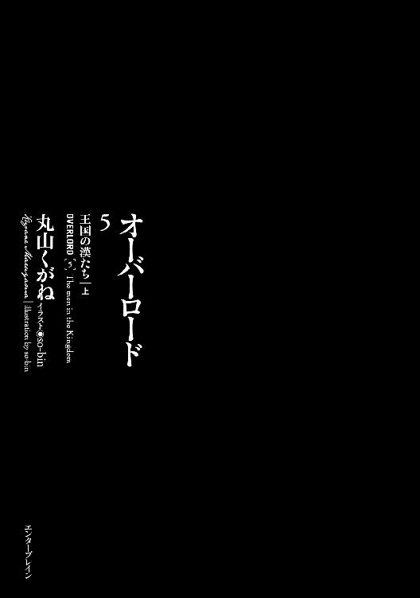

| オーバーロード5 王国の漢たち ［上］ | |
| 丸山 くがね | |
| KADOKAWA / エンターブレイン (2017) | |

本作品の全部または一部を無断で複製、転載、配信、送信すること、あるいはウェブサイトへの転載等を禁止します。また、本作品の内容を無断で改変、改ざん等を行うことも禁止します。
本作品購入時にご承諾いただいた規約により、有償・無償にかかわらず本作品を第三者に譲渡することはできません。
本作品を示すサムネイルなどのイメージ画像は、再ダウンロード時に予告なく変更される場合があります。
本作品の内容は、底本発行時の取材・執筆内容にもとづきます。
本作品は縦書きでレイアウトされています。
また、ご覧になるリーディングシステムにより、表示の差が認められることがあります。
下火月［九月］一日 14:15
見上げれば、朝方から空を覆い尽くしていた黒雲が、ついに堪えきれなくなったように、霧雨を吐き出していた。眼前の煙る世界に王国戦士長ガゼフ・ストロノーフは舌打ちを一つ。
もう少し早ければ降られず、家に帰れたのだろうか。
空を見渡してみるが、厚い黒雲はリ・エスティーゼ王国、王都リ・エスティーゼを完全に包み込み、切れ目は見受けられない。このまま待っていても雨が止むようには見えなかった。
雨が止むまで王城内で待つことは諦め、外套についたフードを被ると雨の中に踏み出す。
門を顔パスで潜り抜け、王都中央通りへと歩を進める。
普段であれば活気に満ちた通りなのだが、いまは人の気配は少なく、数人が黒くびっしょりと濡れた路面で転ばないよう注意深く歩を進める程度だ。
この人気のなさから考えると、雨が降り出したのはだいぶ前に思われた。
（ならば仕方がないか。もっと早く出たところで変わらなかっただろうな）
外套を徐々に重くしていく雨の中、同じような雨具をまとった数人とすれ違いつつ、黙々と歩く。雨具代わりになる外套ではあったが、濡れた感触が肌にまとわりつき気持ちが悪い。ガゼフは歩調を速めて家路を急いだ。
自宅が近くなり、もうすぐ濡れた外套から解放されるとガゼフがほっと息をついたとき、ふと意識が吸い込まれるように引き寄せられた。薄いベールがかかったような世界の中、通りを右に入った小道。そこにただ濡れるにまかせて座っている小汚い男へと。
染めが適当なのか、根元に地の色が見えるびしょびしょの髪はぺたりと額に張り付き、水滴を垂らしている。うつむき加減のため、顔立ちまでは分からない。
ガゼフが男に目を留めたのは、この雨の中、雨具も身につけず濡れるがままになっていることを訝しく思ったからではない。男から感じ取れる、何かがちぐはぐな違和感のせいだ。特に男の右手に目が引き付けられる。
まるで母の手を握る子供のようにしっかりと握りしめているのは、薄汚れた男が持つには似合わない武器。遙かな南方、砂漠の中にあるとされる都市で作られる、刀と呼ばれる非常に珍しい武器だ。
（刀を持つなど......盗人......違う。この男に感じるのは、そんなものではない。懐かしいような感じ？）
ガゼフは奇妙な感情を覚える。まるでボタンを一つ掛け間違えたような、そんな感覚を。
足を止めたガゼフが男の横顔を真剣に眺めた瞬間、怒濤のごとく記憶がよみがえる。
「もしかして......アン......アングラウスか？」
口に出してから、「まさか」という思いがガゼフの頭をよぎる。
かつて王国の御前試合、その決勝戦で戦った男、ブレイン・アングラウス。
接戦を演じた男の姿は今なおガゼフの脳裏に焼きついている。剣を取ってから今日まで、戦士として最強の敵対者であり──こちらの一方的な思いなのかもしれないが、今でもライバルだと思っている人物の顔は。
そうだ。その男のこけた横顔は、記憶の中のライバルと酷似していた。
しかし──ありえない。
確かに顔立ちは似ている。時間の経過による変化があるとはいっても、その面影がはっきりとあった。しかしガゼフの記憶にある男は、決してこんな情けない表情はしていなかった。己が剣に対する自信に満ち満ちており、燃え上がるような激しい戦意に包まれていた。こんな、濡れた老犬のようではない。
パシャパシャと水音を立てながら、ガゼフは男に近寄る。
音に反応したように緩慢に男の顔が上がった。
ガゼフは息を飲む。正面から見据えると確信が持てた。男はブレイン・アングラウス、剣の才人だと。
ただ、かつての輝きはない。完全にへし折れた負け犬。それがガゼフの目の前にいるブレインだった。
ブレインがよろよろと立ちあがる。気だるげともいえる鈍重な動きは、決して戦士の動きではない。老兵ですらしないような動きであった。そのまま目を落とし、何も言わずにくるりと身をひるがえす。そしてとぼとぼと歩き出した。
雨の中、小さくなろうとする背中。このまま別れたら二度と会えないような予感を覚え、ガゼフは離れた距離を詰めて叫ぶ。
「......アングラウス！ ブレイン・アングラウス！」
もし違うと言われたら、他人の空似だと自分に言い聞かせるつもりで。しかし、そんなガゼフの耳に非常に小さな声が届く。
「......ストロノーフか」
気迫のない声。剣を打ち込んできた、記憶にあるブレインの声と同じとは決して思えない、そんな声であった。
「なに、なにがあった？」
愕然とし、問いかける。
これは一体どうしたことなのか？
どんな人間だって、身を持ち崩すということは十分にありえる。そんな人間をガゼフだって幾人も見てきた。楽な方へ、楽な方へと逃げる者は得てして、一つの失敗から全てを失うことがある。
しかし、そうした者とかの剣の天才ブレイン・アングラウスとはどうしても結びつかない。それはかつての最強の敵が無様に落ちぶれた姿を認めたくないからだろうか。
二人の視線が交差する。
（なんという顔だ......）
頰はこけ、目の下には色濃い隈ができ上がっている。瞳に力はなく、顔色は青白い。まるで死人のようだった。
（いや、死人の方がまだマシだ......。アングラウスは生きながら死んでいる......）
「......ストロノーフ。折れたんだ」
「何？」
その言葉でガゼフが最初に目をやったのはブレインが握っている刀だ。しかし、そうではないとガゼフは気が付く。折れたというのは刀ではなく──
「なぁ、俺たちは強いのか？」
強いと答えることができなかった。
ガゼフの脳裏に浮かんだのはカルネ村の一件だ。もしあの場面で、謎にして強大な魔法詠唱者アインズ・ウール・ゴウンが助けに来てくれなければ、自分は部下もろとも死んでいただろう。王国最強などと言われてもその程度だ。決して強いなどと胸を張れるはずがない。
沈黙をどう受け止めたのか、ブレインは続けて話し始める。
「弱いよ。俺たちは弱い。所詮、人間だ。弱いんだ。俺たちの剣の腕などゴミ程度でしかない。劣等種族たる人間でしかない」
確かに人間は弱い。
竜などの最強の種族と比較すれば、肉体能力の差は歴然としている。固い鱗も、鋭い爪も、天を駆ける翼も、全てを滅ぼす吐息を吐くことも、何一つとしてできない人間とは。
だからこそ戦士は竜殺しに憧れる。圧倒的な差がある種族を己が鍛え上げた力量、仲間たち、武具で打ち砕くことは誉れであり、超が付く一部の戦士にこそ許された勲なのだ。
ではブレインは竜殺しに失敗したというのか。
はるか高みに手を伸ばし、届かなかったがために、バランスを崩し滑落したのだろうか？
「......分からないな。戦士ならば誰でも知っていることではないか。人間が弱いなど」
そう、分からない。高みがあるのは誰だって知っていること。
近隣最強の戦士と謳われているが、ガゼフ自身は本当に自分が最強なのか疑問を抱いていた。
例えば法国はガゼフより強い戦士を隠している可能性は高い。それに人間であるガゼフより、人喰い大鬼や巨人といった亜人種の方が基となる肉体能力は高い。そのためにもし同じ程度──若干低くても──技術を修得していれば、ガゼフでは勝てないだろう。
高みは目に見えないだけで、はっきりとあるとガゼフは理解していた。それがブレインには理解できなかったのだろうか。どんな戦士だって知っている当たり前のことを。
「高みはある。だからこそ勝つために努力するのではないか？」
いつかは届くと信じて。
しかしブレインは頭を大きく振った。びしょびしょに濡れた髪が周りに水滴を跳ね飛ばす。
「違う！ そういうレベルじゃない！」
血を吐くような叫び。
目の前にいる男がガゼフの記憶の中の像と重なる。剣撃を放つときの気迫がそこにあった気がしたのだ。たとえ、正反対の叫びだったとしても。
「ストロノーフ！ 本当の高みには努力などしても決して手が届かないんだ。人間という種族では届かない。それが高みの正体だ。俺たちのは所詮は棒を持った子供に過ぎない。子供のころやった、剣士ごっこの続きだ！」
感情が抜け落ちたような静かな顔がガゼフに向けられる。
「......なぁ、ストロノーフ。お前も剣に自信があるだろ？ でも......それはゴミなんだ。お前はゴミを手にして、人を守った気になっているだけなんだ!!」
「......それほどの高みを見たのか」
「見た。知った。人間では決してたどり着けない頂を」
いや、と自嘲気味にブレインは笑う。
「俺が見たのは高みですらない。真の頂点を見るには、あまりにも実力が足りていなかった。お遊びだった。滑稽な話だ」
「ならその頂を見られるように努力して鍛えれば......」
ブレインが激怒したように顔を歪める。
「お前は何もわかっていない！ あの化け物に人間の身で近寄るなんてことは決してできない。無限を凌ぐ回数、剣を振ろうが、届かないに決まっている！ ......くだらない。何を俺は目指していたのやら」
ガゼフは何も言えなかった。
こういった心に傷を負った人間をガゼフは見たことがあった。目の前で仲間が死に、心折れた者を。
彼らを救う手立てはない。外からでは駄目なのだ。自分で再び立ち上がろうという意志を持たなければ、どんなに周囲が手を差し伸べても無駄に終わる。
「......アングラウス」
「......ストロノーフ。剣で得られる武力などくだらないぞ？ 本当の強さの前ではゴミだ」
やはりそこにはかつての雄々しさは皆無であった。
「......最後にお前と会えてよかった」
ガゼフは背を向け歩き出したブレインを悲痛な目で見送る。
かつての最高の好敵手がボロボロになって去っていく哀れな姿に、もはや声をかける気力も湧かなかった。しかし去り際に聞こえた短い言葉は聞き逃せない。
「これで......死ねる」
「待て！ 待て、ブレイン・アングラウス！」
烈火の感情を抱き、ブレインの背中に声をかける。
歩を進め、肩口を摑むと引っ張る。
よろめく姿にかつての輝きはなかった。しかし、ガゼフの腕力で力いっぱい引っ張ったにも関わらず、体勢を崩しながらも倒れることはない。足腰がしっかり鍛えられ、平衡感覚が優れているためだ。
少しだけガゼフは安堵する。かつての強敵が、決して腕を鈍らせていたわけではないと直感して。
今なら十分に間に合う。このまま死なせるわけにはいかない。
「......何をする」
「俺の家に行く」
「止めろ。助けようとしないでくれ。俺は死にたい......怖いのはもうまっぴらだ。後ろから追ってくるのではと影に怯えたくない。俺はもはや現実を見たくないんだ。俺がゴミを持って喜んでいたなど」
哀願ともいえるブレインの声に、苛立ちがガゼフの中でこみ上げる。
「黙れ。着いてこい」
着いてこいなどと言いながら、ガゼフはブレインの腕を摑み、歩き出す。よたよたと抵抗せずについてくるブレインの姿にガゼフは言葉では説明できない不快さを感じた。
「服を着替えて、飯を食ったら、すぐに寝ろ」
中火月［八月］二十六日 13:45
リ・エスティーゼ王国、王都リ・エスティーゼ。
総人口九百万とも言われる国の首都は、古き都市という言葉こそ最も相応しかった。歴史あるという意味でもあれば、淡々と続く日常の延長でもあり、古めかしいだけのしょぼくれた都市、変化のない──そんな様々な意味合いを含んだものだ。
それは通りを歩けばすぐに理解できる。
左右に立ち並ぶ家々は古く無骨な物が多く、新鮮さや華やかさがまるっきり欠けている。ただ、それをどのように見るかは人によって違う。そう、歴史ある落ち着いた佇まいと見る者だっているだろうし、永遠の停滞をしている面白くない都市とみなす者もいるだろう。
王都は何も変わらず、このままいつまでも存在していくようだった。決して不変なものなどないにも関わらず。
王都は舗装されていない道路が多く、それらは雨に濡れればすぐに泥濘へと変わり、都市内とは思えない光景が広がる。これは王国が劣っているわけではない。帝国や法国などと比較する方が悪いのだ。
道幅も広くはないため、流石に馬車の前──通りのど真ん中──を歩く者はいないが、通りの脇を民がごちゃごちゃと歩いている姿には猥雑さのみがある。王都の住人は慣れたものでそんな中をすり抜けるように歩く。真正面から互いに近づいても、ギリギリのところで器用に相手を回避するのだ。
しかしながらセバスが今歩く通りは、王都内の大抵の場所とは違い、珍しく石畳でしっかりと舗装された、大きな道幅を持った通りである。
左右を窺えばその理由はわかる。立ち並ぶ家屋は大きく立派で、裕福さが匂い立っている。
この活気に満ちた通りこそが王都の本通りであるためだ。
セバスが颯爽と歩けば、そのナイスミドルな顔立ちと醸し出される気品に魅了され、通り過ぎる女性たちの大半が振り返る。時には真正面から熱い視線を送ってくる女性すらいるが、セバスは意に介さずにぴんと背筋を伸ばしたまま、前を見据え、足の運びは一瞬たりとも乱れない。
目的地に着くまで決して止まることがない、と思われた足が急に止まると、左右から来る馬車に注意を払いつつ、直角に方向転換して本通りを横切る。
向かった先にいたのは一人の老婆だった。大量の荷物を積み上げた背負子が置かれており、その横で老婆は踝の辺りを撫でさすっている。
「どうかしましたか？」
突然声をかけられたことに驚いたのか、顔を上げた老婆の瞳の中には警戒心が強く浮かんでいた。しかし、セバスの容姿と品の良い服装を眺め、その色は弱くなっていく。
「困っておられる御様子。何か私にお手伝いできますか？」
「い、いえ。旦那様に手助けしてもらうなど」
「気になさらないでください。困っている方に手を差し伸べるのは当然のことです」
セバスがニコリと笑うと、老婆は頰を赤らめる。魅力溢れる紳士の素敵な笑顔が最後の防波堤を一気に突き崩したのだ。
老婆は露店販売が終わったので、家まで帰ろうとしたが、途中で足をくじいてしまって難儀しているということだった。
表通りの治安は悪くないのだが、だからと言ってここを歩く全ての者が善良な市民であるというわけでもない。運悪く下手な相手に助けを求めてしまい、荷物や売り上げを奪われることだってある。そんな事件が実際にあったのを知っている老婆は、無闇に助けを乞うのを躊躇っていたとのことだった。
ならば話は簡単だ。
「私がお連れしましょう。案内していただけますか？」
「旦那様、よろしいのですか!?」
「もちろんです。困った人を助けるのは当然ですから」
セバスは何度も礼を言う老婆に背中を見せた。
「さぁ、おぶさってください」
「そ、それは」困惑したような老婆の声。「私のこの汚れた服では旦那様のお召し物が汚れてしまいます！」
しかし──
セバスは優しく笑う。
服が汚れるぐらいどうだというのか。困っている人を助けるのにそんなことは気にするほどのことではない。
ふとナザリック地下大墳墓の同僚たちの顔が浮かぶ。怪訝そうな顔や、眉を顰めたり、明らかな侮蔑を浮かべる者たちの顔が。しかし、その筆頭であろうデミウルゴスが何と言おうと、セバスはこれは正しい行為と確信している。
誰かを助けるのは正しい行いだ、と。
何度も遠慮する老婆を説得し背負うと、背負子を片手で持ち上げる。
かなりの重さのそれを持ちながらもふらつきもしない姿に、老婆のみならず目にした誰もが感嘆のためいきを漏らす。
セバスは老婆の案内に従って歩き出した。
１
下火月［九月］二日 23:30
男は腰につけたランタンに光を灯す。特殊な油を使っているために緑色の炎が上がり、不気味な色が周囲に広がった。
外に出てみると、熱気が流れ込んでくるようだ。男は嫌な顔をするが、こればかりは季節の関係上諦めなくてはならない。たとえ、日が落ちてもこの時期であれば、王国内のどこでも茹だるような熱気がある。とはいえ、猛暑は過ぎたのだから、あとは徐々に寒さが増していくはずだが、その兆候はまだどこにもない。
「あー、今日もあちぃな」
「全くだな。もっと北の方、海の近くまで行くと少しは涼しいらしいけどな」
男の愚痴に、今晩の同行者が応える。
「一雨来てくれれば少しは涼しくなるんだけどな」
そう言いながら空を眺めてみるが、雨雲どころかただの雲一つすらない晴天だ。星々が異様に大きく見える、いつもの夜空が広がるばかりだ。
「そうだな。降ってくれると嬉しいんだが......おし、お仕事に行くか」
男たちは二人ともただの村人と呼ぶには違和感があった。まずその武装だ。腰には長剣、そして革鎧といったしっかりとした──村の自警団にしては整い過ぎた武具を身に着けている。さらに男たちの肉体や顔立ちは、畑を耕す者のそれではなく、暴力に慣れた雰囲気を宿していた。
男たちは一言も話すことなく、村の中を歩き出す。
夜闇に包まれた村は静かで、男たちが歩く音のほかは何も聞こえない。全てが死滅したような不気味な雰囲気の中、男たちは平然と歩を進める。その落ち着いた様子が、これが日毎繰り返されていることであることを証明している。
男たちが歩く村は高い壁にすっぽりと取り囲まれており、見える範囲だけでも物見矢倉が六箇所建っている。かなり頑丈なその作りは、モンスターの出現する頻度が高い辺境の村でも類を見ないほどだ。
村落というよりは、さながら戦略拠点である。
ただしそれでも第三者がそれを目にすれば、警備が厳重な村だな程度かもしれない。しかし続く光景には眉を顰めるだろう。
それほど奇妙な光景であった。壁を建てるなら、普通は居住する建物や倉庫のみをひと囲いにし、畑は壁の外に広げるものだ。村の中に畑を作ってしまっては、その広大な耕地を囲む壁を作るのに莫大な手間がかかるからだ。しかしこの村は、そよそよと風に揺れる緑の草を、まるで黄金を守るように抱え込んでいるのだ。
そんな奇怪な村を歩く男は、物見矢倉の一つから視線を感じ取る。実際、そこには弓矢で武装した仲間がいるはずだ。何かあったときにはランタンを頭上で振れば、支援が受けられることになっている。
援護射撃は仲間の腕を考えれば遠慮したくなるが、鐘を鳴らすことによって仲間が全員起床するのは非常に心強い。
そのため勘違いで振ったりすれば、寝番の仲間に嫌味を言われることだろうが、男は少しでも怪しい気配を感じ取れば、即座にランタンを振るつもりでいた。
命までは失いたくはない。
とはいってもそんな事態が起こるとは思えなかった。この数か月以上、同じことを延々と繰り返してきたし、そしてこれからも延々と繰り返すだろう。
男は未来に倦みながらも、規定の順路に従って、村の中を歩く。
巡回経路のちょうど半分ほどまで来た辺りで、突如、男の口を蛇のような何かが覆う。いや、蛇というのは間違いだ。男の口元に張り付き決して剝がれないそれは、タコの足だ。
続いてぐいっと顎が持ち上げられ、顕わになった喉を焼け付くような痛みが走り抜ける。この間、一秒と経っていないだろう。
喉で上がる、何かを飲み干すような音。
それが男が人生の最後に聞いた音だった。
男の口を押さえていた手を緩め、崩れ落ちないように後ろから支える。喉を貫いた魔法武器〝吸血の刃〟が血を飲み干したことを確認してから抜き取る。
男を抱きしめるように立っていたのは黒装束の者だった。目元以外の全てを布で覆って隠しており、漆黒の衣装で全身を包んでいる。衣装自体は布製だったが、手甲や足甲といった防具によって防御力を高めている。胸も同じように金属板が覆っていたが、それははっきりと分かる女の膨らみの形状に盛り上がっていた。
同じように、もう一人の男の後ろにも同じ装束に身を包んだ者がいた。こちらも同じように、胸を覆っている金属板は膨らんでいる。そちらに目を向け、一度だけ頭を縦に軽く動かす。
彼女は暗殺の成功を確認し、周囲を窺う。こちらに気が付いた気配はない。
彼女は心の片隅で安堵する。
ランタンの明かりがあるとはいえ、完全に密着しているために矢倉からでは判別が難しいはずだ。唯一の懸念は襲いかかる瞬間──影から影への短距離転移を行う「闇渡り」を目撃されることだったが、今やその心配も過去のものだ。
彼女は血を吸って赤さをより増した短剣をそのままに、崩れかける男の体を支える。
物見矢倉で警戒している者たちの目には巡回している男たちが立ち止ったように見えるはずだが、流石にこのまま棒立ちでいたり、崩れ落ちれば確実に怪しまれる。
だからこそ即座に次の手段に出る必要がある。しかし、それは彼女の仕事ではない。
突然、力の抜けた男の体に一本の柱が宿ったような感覚を、女は手のひら越しに感じ取る。それが勘違いでないことは次の瞬間に証明され、男はぎくしゃくと動き出した。
絶命したにもかかわらず、動き出したそれに驚きはない。全て計画通りだから。
彼女は手を離し、同時に特殊技術を発動させる。彼女の収めている忍者の技の一つ「影潜み」。影さえあれば完全に溶け込むことのできる特殊技術であり、通常視認での発見は不可能であるという能力だ。
影に溶け込んだ二人を置き去りに、男たちは鎖が解かれたように歩き出す。彼らが本来とるはずの巡回経路に従って。それは自分の仕事内容を思い出したかのようだった。しかしながら歩く速度は鈍く、重い。傷が癒えたわけでもないのに喉に走った線から新たな血が噴き出さないのは、全ての血はすでに流れ出していたためだ。
そんな彼らが動く理由はたった一つしかない。動死体へと変わり、製作者の命令に従って動き出しただけだ。
動死体を作り出したのは彼女たちではない。
普通に見たらこの場には男たち二人しかおらず、彼女たちの隠形を見破ったとしても四人しか見えない。だがここには五人目がいる。その姿なき五人目が、動死体を作り出した者だ。
彼女たちの目にもその姿は映らない。しかし彼女たちが修めている忍術の特殊技術の一つに、魔法や特殊技術で隠れた存在を知覚するというものがあり、それに引っかかる反応が目の前にある。
「こちらの準備は完了」
「完璧」
潜めた声を投げかける。すると同じく小さな声が返る。
「ああ、見ていたから知っている。私は次の場所に移動する。できる限り偉そうな奴を捕えないといけないからな」
こちらも女の声であった。ただしその声は高く、成熟してない子供のような色が漂っていた。
「こっちもこれからの襲撃に移る。他の二人は？」
「出番がないからって遊んでいたりしてない？」
「なわけないだろうが。村の近くで潜伏中だ。非常事態時には正面と裏、同時に攻撃を開始する手はずは整っている。よし。私は優先順位一位の方に行く。そっちも予定通りに進めてくれ」
ふわりと不可視化した仲間──気配しか感じられないが──が空中に浮かび上がる。〈飛行〉による空中移動だ。
遠ざかっていくその気配は、彼女が優先順位一位と呼んでいた建物へと消えていく。この村にいくつかある建物の一つであり、最初に押さえるべき重要拠点だ。
本来であればもっと別の建物を優先したいところではあったが、そこを最優先したのは〈伝言〉の魔法のせいである。
この魔法で伝わる内容を信憑性が低いと忌避する者は多い。しかしながら気にせずに使う者もいる。魔法詠唱者の育成を国家レベルで促進している帝国、情報を早く手に入れることを優先する一部の大商人、そしてこの村を支配する敵もそうだ。よってまず、そこにいるはずの連絡員を捕える必要がある。
仲間が向かった以上、こちらも早く目的地点付近で潜伏する必要がある。全ては同じタイミングで、気が付かれないうちに襲撃を完了させなくてはいけないためだ。
ふっと息を吐き出し、二人の忍者は走り出す。
闇から闇へと移動するようなその姿は常人には視認できない。いや、着用している魔法のアイテムと併用すれば、高位の冒険者にすら発見することは難しい。つまりはこの村内で彼女たちを目視できる者はいない。
並走する仲間が指を器用に動かしている。指を折ったりするだけの動作ではあったが、目にした彼女は意味を読み取る。
──犬を連れてなくてよかった。
彼女は「同意」と指で応える。
暗殺者の使う手話だ。彼女たちほどの熟達者ともなれば、話すのと同じ速度で伝えることができる。仲間にも教えてはいたが、残念ながら簡単な合図や行動指示までしかできない。しかし彼女たち二人の手話は速度も語彙も日常会話レベルで、こうして二人だけの秘密の雑談によく使っている。
──違いない。血の臭気で集まってこないって楽。
犬など連れていられればこんなに簡単にはいかなかっただろう。無力化する手段も用意はしていたが、面倒事が増えないに越したことはない。
そう応えると、仲間の指が高速で動く。
──では私は予定の建物に向かう。
了解と返すと、隣を走っていた仲間が横手に逸れていく。
一人になった彼女は疾走しながら、横目で畑を見る。
栽培されているものは麦などの穀物でもなければ、野菜でもない。正体は王国に最も蔓延している違法薬物、黒粉の原材料となる植物であった。この高い壁に囲まれた村の中には幾つも畑はあるが、栽培されているものは全て同じ。この村が麻薬栽培の拠点の一つであるという証明である。
黒粉、もしくはライラの粉末とも言われる麻薬は、黒い粉状の薬物であり、使用する際はそれを水で溶いて飲用する。
大量に作り出され安価であり、簡単に多幸感と陶酔感に包まれるという効能から、王国で最も有名な麻薬である。そしてそれだけではなく中毒性を持つが、副作用がないと信じられているために非常に広まっていた。
彼女は黒粉の情報を思い出し、鼻で笑う。
副作用がない麻薬などあるはずがない。「止めたいときにいつでも止められる」など勘違いも甚だしい。黒粉の中毒者の遺体を腑分けして確認したが、その脳はどれも常人の五分の四ほどに縮んでいた。
だいたい、自生しているものから調合した黒粉は強力な毒薬である。それほどの有毒植物のどこを信じたら中毒性がないと思えるのか。
巷に出回っている黒粉が麻薬の範疇で収まっているのは、薬効の弱い栽培ものだからだ。
それでも非常に強い中毒性を持ち、完全に体から抜けるまでに長い時間がかかる。そのため大抵の服用者は、服用を止めてから麻薬が抜け切れるまでの間に再び服用を開始してしまう。神官たちの使う魔法で強制的に抜こうとでもしない限り、ある程度の段階まで進んでしまった中毒者が、自らの意志で完全に止めることは不可能に近い。
そんな恐ろしい麻薬の最も厄介なところは、禁断症状が弱く、バッドトリップしても暴れたりなど周りに害を及ぼさないため、王国の上層部は危険を理解できずに他の薬物の摘発にばかり力を注ぎ、黒粉はほぼ黙認されているという状況だ。
「王国の裏産業にでもしているのか」帝国からそうクレームがついたのも分かる。
彼女としては暗殺者をやっていた頃、場合によっては使用していたし、組織でも栽培していたために、薬物に対し否定的な感情はない。麻薬だとしても上手く使えば、それは素晴らしい効果を発揮する。いうなれば、危ない面を持つ薬草に等しいのだから。
しかしながら今回の一件は依頼であり、彼女個人の意見は別問題だ。ただし──
（......冒険者組合を通さない依頼は危険だけど）
──依頼に納得しているわけでもなかった。
彼女は覆面の下で顔を歪める。今回の依頼主はチームのリーダーの友人だ。正当な報酬が支払われるとはいっても、組合を通さない依頼を受けるのは色々と面倒なことになりかねない。それがたとえ、王国に二つしかないアダマンタイト級冒険者チームであっても。
（ん？ 確か今は三つだっけ？）
そういえば新しいアダマンタイト級冒険者が生まれたと聞いた記憶があった──などと思っているうちに、彼女は二番というコードネームを付けられた建物の近くまで到着する。
この建物内の、一切の情報を回収するのが彼女の役目だ。それが終わったら畑に火を放たなくてはならない。
燃え上がる麻薬によって立ち込める煙が有毒なのは確かだが、そうでもしなければ任務は終わらない。
風向き次第では村人に被害が及ぶ心配があったが、避難させる時間的余裕も手段もない。
（必要な犠牲）
そう自分に言いきかせ、村人の安否のことは忘却の彼方に放り出す。
暗殺者として育てられた彼女は、命の喪失に心動かされることは滅多にない。特に見ず知らずの人間なら、どうなろうとも、眉一つ動かさないだろう。ただ、唯一、犠牲が出た場合、リーダーが浮かべる表情が嫌なだけであった。しかし、今回の作戦を立てた際、リーダーの同意は受けている。そのため助けようなんて気持ちはこれっぽっちもなかった。
それにそんなことよりも、襲撃が終わったらその足で別の村まで転移の魔法を使用して移動し、同じように焼き払っていかなくてはならない。その計画で頭はいっぱいだ。
麻薬の元となる草が栽培されているのはこの村だけではない。彼女たちの調べによると大規模な栽培地は王国内に全十箇所。しかも、発見できていないところがおそらくまだいくつかあるはずだった。そうでなければ王国全土に広がる麻薬の想定量にまったく届かない。
（雑草が生えたところから抜くしかない......。無駄が多いけど、それしかないから......）
この村に指令書などがあれば万々歳だが、そう上手くはいかないだろう。せめてこの村の責任者に当たる人物が、ある程度の情報を握っていることを期待するほかない。
（少しは組織の一端が摑めると......リーダーも喜ぶんだろうけど）
この麻薬を栽培している強大な犯罪シンジケート。組織の名は「八本指」。土神の従属神〝盗みの神〟が八本指であることからその名を名乗っている。王国内の裏社会を牛耳る巨大組織だ。
奴隷売買、暗殺、密輸、窃盗、麻薬取引、警備、金融、賭博からなる八つの部門にすみ分けた犯罪組織であり、息がかかっていない裏組織は王国内には存在しないとも言われるものだ。そして巨大すぎるゆえに全貌は謎に包まれている。
ただ、この組織がどれだけ王国内にその手を伸ばしているのかを、簡単に示すものがある。それは彼女の目の前に広がる村だ。
村落内で堂々と違法植物を栽培する。それだけで十分に、この地の領主権を持つ貴族が共犯者だと教えてくれる。しかし、それを告発しても罪には問えない。
王族などによる査問や司法の手が入った場合などは別ではあるが、それでも封建貴族を有罪にすることは難しい。この地の貴族はこう言うだろう、「麻薬の原材料になるとは思わなかった」。それとも村人が勝手にやったことだと責任を押し付けるか。
正面から糾弾しても効果は薄く、麻薬の流通を抑えようとしても、流通経路にも組織に籠絡された貴族たちの手が入り、衛士などの力ではどうしようもない状況にまでなっていた。
だからこそ、畑を焼き払うなどの暴力に頼った最終手段しか、もはや手がなくなっていた。
正直、この麻薬を焼き払ったとしても、対症療法にもならないだろうと、彼女は考えている。それだけ王国内を蝕む裏組織は強大すぎるし、政治にも触手を伸ばしすぎている。
「時間稼ぎ......。どこかで逆転する一撃を打てないなら、これも徒労......」
２
雨が降っていた。
耳鳴りのような、そんな騒がしい音を立てて。
王都の路面は水はけまで考えられて作られたものではない。特に裏路地ともなれば、だ。結果、路地一面が巨大な湖へと変わる。
湖面に叩きつけられる雨は飛沫を飛散させた。それらは風で舞い上がり、水の匂いを撒き散らす。王都がまるで水の中に沈んでしまったかのような、そんな雰囲気をかもし出すのに一役買っていた。
飛沫によって灰色に染まる世界の中、男の子はいた。
住処はあばら家。いや、あばら家という言葉すら勿体無い。支柱となるのは成人男性の腕の太さ程度のほっそりとした木々。屋根の代わりに襤褸切れが被せられており、壁はその襤褸がだらしなく垂れ下がった延長だ。
そんな野晒しと何ら変わらない住居にいる六歳ぐらいの男の子は、無造作に捨てられているゴミのように全身を丸め、地面に薄い布を敷いて、その上に転がっていた。
考えてみれば支柱となっている木々も、襤褸切れで作った屋根と壁も、これぐらいの子供がなんとか作りそうな──子供が遊びで作る隠れ家的なものだ。
外とまるで変わらないようなこの家の利点は、せいぜい雨に直接打たれないことぐらいだろう。降りやまぬ雨によって気温は急激に下がっており、身震いするような冷気が男の子の周囲を取り巻いている。吐き出した息が、一瞬だけ己の存在感を示すが、即座に温度を奪われ空気中に消えていった。
家に逃げ込む前に冷たい雨に濡れそぼった男の子の体からは、凄まじい勢いで体温が奪い去られていく。
体の震えを止める手段は持ち合わせていない。
ただ、この全身に染み込んでいくような冷気が、殴られて痣だらけになった体には心地よく感じられることだけが、最悪の状況下で見つけられる、たった一つのちっぽけな幸せだろうか。
男の子は横になったまま、誰も通らなくなった路地を、世界を眺める。
聞こえてくるのは雨音と自らの呼吸音のみ。まるで自分以外この世界にいないのではないか。そんな風に思うには十分な静けさだ。
幼いながらも男の子は、自分は死ぬのだろうと理解できた。
死を完全に理解できるほどの歳ではないため強い恐怖はない。それに生はそれほど固執すべき価値のあるものには思えなかった。今まで生にしがみついていたのは、痛いことは嫌だからという逃避にも似た思いからだ。
いまこのときのように、痛みもなく──寒さはあるものの──死ねるなら、死も悪いものではない。
濡れた体は徐々に感覚をなくし、意識はぼんやりとし始めている。
雨が降り出す前に風雨が吹き込まない場所に移動した方がよかったのだろうが、たまたまたちの悪い男たちに絡まれて、暴力を振るわれた体では、ここまで戻ってくるのが精一杯だった。
たった一つのちっぽけな幸せはあった。では残りの全ては不幸なのだろうか。
二日、何も食べていないというのは、いつものことなので不幸ではない。両親がおらず面倒をみてくれる人間がいないのも、昔からのことだから不幸ではない。襤褸切れを纏い、不快なにおいを漂わせているのも当たり前のことなので不幸ではない。腐ったものを食べ、汚水で腹を膨らますような生き方も、それしか知らないので不幸ではない。
では、たまたま住んでいた空き家を奪われ、頑張って作り上げた住居を遊びで壊され、そして酒に酔った男たちに暴力を振るわれて体のあちらこちらを痛めた。これらは不幸なのだろうか？
違う。
男の子の不幸は、不幸を不幸だと理解できないことなのだ。
ただ、それも終わりだ。
男の子の知らない不幸はここで終わり。
死は幸運な者の前にも、不幸な者の前にも現れる。
──そう、死は絶対である。
目を閉じる。
もはや寒さも感じなくなりつつある体では、目を開けることも億劫だった。
小さく頼りない己の心音が、暗闇の中、聞こえる。雨音とそれだけしか聞こえない世界に、奇怪な音が混ざる。
雨を遮るような音。消え入る意識の中、子供特有の興味を引かれ、男の子は瞼に力を込める。
細い線のような視界の中、それが映った。
男の子は閉じかけた目を大きく見開く。
綺麗なものがあった。
それがなんなのか、一瞬、理解できなかった。
〝宝石のような〟、〝黄金の塊のような〟、そんな言葉が相応しいのだろう。しかし廃棄され、半分腐り出したものを腹に収めるような生活をしている者に、そんな言葉は浮かばない。
そう。
彼が思ったのはたった一つだ。
──太陽のようだ。
彼の知る最も美しく、最も手の届かないもの。それを頭に浮かべたのだ。
雨によって灰色に染まった世界。空を支配しているのは厚く黒い雨雲。だからだろうか。見る者がいないからと旅立った太陽が、自分の前に現れたのではないか。
そんなことを思ったのだ。
それは手を伸ばし、彼の顔を撫でた。そして──
男の子は人ではなかった。
男の子を人とみなすものはいなかった。
だが、その日、彼は人間となった。
•
下火月［九月］三日 4:15
リ・エスティーゼ王国、王都。その最も奥に位置し、外周千四百メートル、二十もの円筒形の巨大な塔が防衛網を形成し、城壁によって広大な土地を囲んでいるロ・レンテ城。
その十二の塔の一つにその部屋はあった。
完全に明かりが落とされ、それほど広くない部屋に、ベッドが一つ。その上に少年と青年のちょうど境目ぐらいの微妙な年齢の男が横になっていた。
金髪は短く刈り上げられ、肌は健康的に日に焼けた色をしている。
クライム。
それだけの名前しか持たない彼は〝黄金〟と称される女性の最も身近に控えることを許された──多くの人間の嫉妬を一身に受けている──兵士だ。
彼の目覚めは早く、日が昇るより早く目を覚ます。
深い暗黒の世界から意識が戻ってきたと認識した段階で、即座に思考は冴え渡り、肉体の機能はほぼ完全に起動状態まで移行している。寝つきと寝起きの良さは、クライムの自慢の一つだ。
目が見開かれ、その吊り目気味の三白眼に鋼のごとき意志が灯る。
体にかかっていた厚手のタオルケット──夏季とはいえ、石に囲まれて迎える夜は肌寒い──を剝ぐと、クライムはベッドから身を起こす。
目の辺りを指で押さえる。離した指先はびっしょりと濡れていた。
「......あの夢か」
クライムは服の袖で顔を拭い、涙をふき取る。
二日前にかなり激しい雨が降ったせいで思い出したのだろう。少年時代の記憶を。
流れた涙は決して悲しみのためではない。
人は生涯にどれだけ尊敬できる人に会えるのだろうか。命を捨てても構わないと思える人に仕えることができるのだろうか。
クライムはあの日、いつ命を投げ捨てても構わないと固く信じられる女性と出会うことができた。
この涙は歓喜の涙。あの出会いが生んでくれた、奇跡に感謝しての涙であった。
クライムは年相応の幼さの残る顔に強い意思を漲らせ、立ち上がる。
明かりが一つもない真っ暗な世界の中、訓練のしすぎでしわがれてしまった声でクライムは呟く。
「光れ」
クライムの発したキーワードに反応し、天井から吊り下げられたランプに白色の明かりが灯り、室内を照らし出す。〈永続光〉が付与されたマジックアイテムである。
一般に流通はしているものの、それなりの値段がするアイテムを持っているのは、彼が特別な立場だからという理由ばかりではない。
石で作られた塔のように空気の通りがあまりよくない場所で、明かりのためとはいえ、何かを燃焼させるのは安全とは言えない。そのため、初期費用はかかるが、ほぼ全ての部屋に魔法的な明かりが組み込まれているのだ。
白色の光に照らし出された床や壁は石で作られている。冷たく硬い床に少しでも抵抗しようと薄い絨毯を申し訳程度に敷いている。他に室内に置かれているのは、木で作られた粗末なベッド、武具も入れることができそうなやや大き目の衣装ダンス、引き出しつきの机、薄いクッションが置かれた木製の椅子ぐらいだ。
第三者が見れば、みすぼらしいと感じるかもしれないが、これは彼のような地位の人間からすると身に余る厚遇である。
兵士には個室など与えられず、大部屋に二段ベッドを置いての集団生活が一般的だ。彼らに与えられる家具は、ベッドの他には私物を入れるための鍵付きの木箱しかないのだから。
それに部屋の片隅に鎮座した白色の全身鎧。自ら輝いているかのように曇りのない光沢を宿している、見事な作りのそれは、一般的な兵士たちに支給されるはずがないものである。
この特別待遇は決してクライムが自らの力で勝ち取ったものではない。これはクライムが命も惜しまぬ忠誠を捧げる主が、彼に好意の印として渡したものだ。だからこそ嫉妬の対象になるのは仕方がないことだろう。
衣装ダンスを開け、その中から服を取り出す。
タンスの中の姿見を見ながら服を整えていく。
金属の匂いがこびりついている年季の入った服を着て、最後に鎖着を被るように着用する。本来であればさらに鎧を纏うのだが、そこまではしない。代わりにポケットがたくさんついている、チョッキやズボンを身に着けて終了だ。手に持つのはタオルの入った桶である。
最後に姿見を覗き込み、変なところはないか、服装の乱れはないかとチェックをする。
クライムの失態は、下手をすれば、忠誠を捧げている王女「黄金」ラナーへの攻撃の材料にされる。
だから注意しなければならない。迷惑をかけるために自分はいるのではない。彼女に全てを捧げるために自分はいるのだ。
クライムは鏡の前で目を閉ざし、自らの主人の顔を思い浮かべる。
黄金の王女──ラナー・ティエール・シャルドロン・ライル・ヴァイセルフ。
女神と見まごうばかりの神々しさ、その高貴な血に相応しいだけの慈悲深い精神の輝き、様々な政策を考え出す叡智。
まさに貴族の中の貴族、王女の中の王女。至高の女性。
そんな黄金の輝きを持つ曇りない宝石に、微かでも傷をつけてはいけないのだ。
指輪で喩えるならばラナーという女性はブリリアントカットされた大粒のダイヤモンドである。ではクライムは何かと言えば、その周りを囲む爪の部分だ。ここが安物なために価値を下げてしまっているのに、これ以上引き下げるわけにはいかない。
クライムは主人のことを考え、胸が熱くなるのを止めることができない。
神を信じる敬虔な信徒ですら、今のクライムの思いには勝てないだろう。
しばし自分の姿を眺め、主人に決して恥をかかせないと確信すると満足げに一つ頷き、クライムは部屋を出た。
３
下火月［九月］三日 4:35
向かった先は塔の一階層を丸ごと使い、訓練所として使用されている大広間である。
普段であれば兵士たちの熱気がたちこめているのだが、流石にここまで早い時間だと人は誰もいない。がらんとした空間は静まりかえり、静寂が音として聞こえてきそうだった。全方位を石で囲まれているために、クライムが立てる靴の音が大きく反響する。
半永久的に輝き続ける魔法の明かりによって大広間は明るい。
広間の中には杭に結わえた鎧が立ち並び、弓の的となる藁で作った人形もある。壁沿いには刃を落とした様々な武器が並べられた武器棚が見える。
本来であれば野外に作られるであろう訓練所が、屋内に置かれているのには理由がある。
ロ・レンテ城内にはヴァランシア宮殿がある。そのため兵士たちが屋外で訓練すると、その姿が他国の使者などの目に触れ、品位に欠けるため、塔内部に幾つか訓練所が作られている。
屈強な兵が雄々しく練兵する様は外交上の〝見せ札〟にもできるはずなのだが、この王国ではそれを良しとしない。あくまで優雅に、華やかに、貴族的であることを見せつけようとする風潮があった。
とはいっても外でしかできない訓練もあるので、その場合は隅の方でこっそりと行ったり、城外の運動場や王都外で行われてはいるのだが。
クライムは静まり返った広間の中に、ひんやりとした空気を搔き分けるように入ると、隅でゆっくりとストレッチを始める。
時間にして三十分、念入りにストレッチをしたクライムの顔は、若干という言葉ではすまないほど紅潮していた。額には汗が滲み、吐く息にもその熱気が込められていた。
額に手をやり、汗を拭うと、クライムは武器棚に近づき、刃をなくした練習用のやたらと分厚く大きな鉄剣を、幾度もまめを潰して硬くなった手で抜き取る。握りを確かめ、自分の手にちょうどあっているかどうかを確かめる。
次にポケットに金属の塊を詰めると、落ちないように蓋をしてボタンで留める。
幾つもの金属の塊を詰め込んだ服は、全身鎧と同等の重さを帯びたものへと姿を変える。魔法を込められていない単なる全身鎧は、強固さと引きかえに、重く、また関節の可動域が制限されるというデメリットがある。ゆえに、実戦を考えるなら、着用した状態で行うのが正しい訓練ではある。
しかしながら、流石に単なる訓練で全身鎧まで持ち出すことはあまりない。それに彼に与えられた白色の鎧を訓練で着るようなことはできない。そのための代用品ということだ。
グレートソードを超える巨大な鉄剣を強く握り締め、上段に構えると、クライムは息を吐きつつ、ゆっくりと剣を振るう。振り下ろした剣が床を叩くギリギリで止めると、息を吸いつつ再び上段の構えへと持ち上げる。素振りをする速度を徐々に増しながら、鋭い目つきで、目の前の空間を強く睨み、ただひたすらに没頭する。
繰り返すこと、三百回以上。
クライムの顔は完全に紅潮し、汗が滴って顔を流れる。息は体内に溜まりつつある熱気を吐き出すように、温度を急上昇させていた。
兵士としてかなり鍛えられたクライムだが、大型のグレートソードの重量はそれを以ってしても厳しいものがある。特に、振り下ろした剣が床に付かないように速度を殺すのには、かなりの筋力を必要とする。
五百を超える頃、クライムの両腕は悲鳴をあげるように痙攣し始めた。顔からは汗が滝のように流れだしている。
この辺りが限界だとクライムも理解している。それでもクライムに止めようという意志はない。
だが──
「──それぐらいにしたらどうだ？」
第三者の声がかかる。慌てて声のした方を振り返ったクライムの目に、一人の男性の姿が飛び込んできた。
屈強という言葉以上に似合う言葉はない。そんな鋼を具現化したような男だ。巌のような顔は顰められているため皺が多く浮かび、年齢以上に老けて見える。隆々と盛り上がった筋肉がその男が只者でないことを示していた。
王国の兵士でその人物を知らないものはいないだろう。
「──ストロノーフ様」
王国戦士長ガゼフ・ストロノーフ。王国最強、そして近隣国家でも並ぶ者がいないとされる戦士である。
「それ以上はやりすぎだな。無理をしても意味がないぞ」
クライムは剣を下ろし、ブルブルと震える自らの腕に目をやる。
「おっしゃるとおりです。少々無理をしすぎました」
無表情に感謝の意を示すクライムに、ガゼフは軽く肩をすくめる。
「本当にそう思っているなら、同じセリフを幾度も言わせないで欲しいものだがな。これで何回目になるか......」
「申し訳ありません」
頭を下げたクライムに、ガゼフは再び肩をすくめた。
二人にとっては幾度となく繰り返した、挨拶のような会話だ。ただ、本来であればこれで話は終わり、それぞれ自分の訓練に没頭することとなる。しかしながら今日は違った。
「どうだ、クライム。一つ、剣を交えてみないか？」
ガゼフの言葉に、クライムの無表情な面が一瞬だけ崩れかける。
今まで二人は、この場で会っても互いに剣を交えることはなかった。それが不文律だった。
二人が訓練をすることにメリットはない。いや、メリットはあるが、デメリットの方が大きすぎるためだ。
今の王国は王派閥と、六大貴族の内の三家が手を結んだ貴族派閥に分かれて権力闘争を行っている。国が割れないのは、毎年、帝国との戦争があるため、とも言われるほどの危機的状況だ。
そんな中、王の懐刀、王国戦士長ガゼフ・ストロノーフが──負けることはありえないが、仮に──敗北でもしようものなら、敵対派閥である貴族派閥に絶対の攻撃材料を与えることになる。
一方、クライムが当然のように負ければ、王女の身辺を任せられないと、貴族が言い出すだろう。絶世の美女であり、婚約者のいない王女が、クライムという身元の不確かな兵士一人を重用し、身辺警護を任せているのを不快に思っている貴族は多いのだ。
以上のように、二人の立ち位置が互いの敗北を許してくれないのだ。
弱みを見せ、急所をさらし、攻撃の糸口を与えるなどもっての外。主人に迷惑がかからないよう細心の注意を払おうというのは、平民出身の二人に共通する思いであった。
それを破るとは、一体どんな理由によるものか。
クライムは周囲を見渡す。
誰もいないから、などという理由であるはずがない。ここは伏魔殿なのだ。遠くから監視する者、あるいは陰から覗き見する者には事欠かない。しかし、他に思い至る何かはなかった。
良い理由なのか、悪い理由なのか理解できず、クライムは困惑し動揺するが、表情に出すようなことはない。
ただ、クライムの前にいるのは王国最強といわれる戦士だ。普通の人間であれば知覚できないような、ほんの一瞬の感情の乱れを鋭敏に感知し、答えを言葉とする。
「つい最近、自分の未熟さを見せつけられてな。少し歯ごたえのある奴と訓練をしたいんだ」
「ストロノーフ様が、ですか？」
王国最強といわれるガゼフが自分の未熟さを思い知るとは、どういった状況だったのだろうか。そしてクライムは、ガゼフが指揮する部隊の構成員が、つい最近、欠けたことを思い出す。
クライムには親しい同僚がいないため、食堂の噂話しか知らない。それによると事件に巻き込まれて何人か失ったということであった。
「ああ。慈悲深い魔法詠唱者に会わなければ、彼が力を貸してくれなかったら、俺は今頃ここにはいなかっただろうな──」
それを聞いたクライムは、さすがに自分の鉄の仮面が崩れたのを知覚する。いや、誰が驚かずにいられるというのだろうか。思わず好奇心から問いかけてしまう。
「その慈悲深い魔法詠唱者殿とは？」
「......アインズ・ウール・ゴウンという。おそらくだが、あの帝国の化け物魔法使いに匹敵するんじゃないか、と俺が思っている人物だ」
聞いたことのない名前だった。
クライムは英雄に憧れており、英雄譚を集めるという秘密の趣味を持っている。それも種族を問わずだ。そればかりか、周辺国家の有名な冒険者による冒険譚なども聞ける範囲で集めていたが、今、ガゼフの言った名前に心当たりはなかった。
もちろん、偽名という可能性だってある。
「そ、そ──んん！」
クライムは詳しく問いかけたいという気持ちを抑え込む。
（浮ついた気持ちで部下の方を失った事件のことを聞こうとするなど......失礼にも程がある）
「そのお方のお名前、心に刻んでおきます。......それで、本当に稽古をつけていただいてもよろしいのでしょうか？」
「稽古ではなく、剣を交えるだけさ。そこから何かを摑み取るかどうかはお前次第だ。......お前はこの国の兵士の中でも一流だからな。俺もやりがいがあるというものだ」
高い評価であるが、クライムからすればそれはお世辞に過ぎなかった。
クライムが格段に強いわけではない。平均値が低いのだ。王国の兵士の腕前は一般人に毛が生えた程度であり、帝国の専業兵士「騎士」と比較して弱く、周辺国家に武名を轟かせるような者がいないだけだ。ガゼフ直轄の兵士は確かに強いが、それでもクライムに多少劣る。
クライム自身の強さを冒険者のランクで評するのであれば、銅、鉄、銀、金、白金、ミスリル、オリハルコン、アダマンタイトとある中で金と評価される程度であろう。弱いわけではないが、上には上が数多くいる。
そんな人間がガゼフという、冒険者で評すれば確実にアダマンタイトの男にやりがいを感じさせることができるのだろうか。
弱気の虫をクライムは追い払う。
王国最強の男に稽古をつけてもらうというのは、非常に得がたい経験だ。ガゼフを失望させることになったとしても、悔いはない。
「では、一手お願いします」
ガゼフはニヤリと笑うと、大きく一度頷いた。
二人で揃って武器棚に向かうと、自分たちにちょうど良いサイズの剣を取り出す。ガゼフがバスタードソードを選んだのに対し、クライムは小型の盾とブロードソードだ。
それからクライムは、ポケットから鉄の塊を取り出す。自分よりも強者を相手にするのに、こんなものを持ったままというのは失礼に値する。それどころか全力で戦わなくては自分の成長に繫がらない。相手は王国最強の戦士なのだ。高く分厚い壁を全力で感じるべきだ。
やがて完全に準備を整えたクライムに対して、ガゼフは尋ねる。
「それで腕は大丈夫か？ 痺れは取れたか？」
「ええ。もう大丈夫です。少しほてっている気がしますが、握力などに問題はありません」
クライムが両手を振るい、その動かし方に噓はないと判断したガゼフは頷いた。
「そうか。......それはある意味、少しばかり惜しいな。戦場など様々な場面において万全な状態で戦えることは少ない。握力が低下しているならば、それに適した戦い方をすべきだしな。そういった勉強はしているか？」
「い、いえ、しておりません。ではもう一度剣を振るって......」
「ああ、いや、そこまでする必要はない。ただ、お前は王女様をお守りすることが多いんだ。剣の所持を許されない場所で襲われた際の戦闘方法や、様々な武器を使っての戦い方なども練習しておいて無駄にはならないぞ」
「はい！」
「......剣、盾、槍、斧、短剣、武器小手、弓、棍棒、手投げ武器。武器戦闘の基本となる九武芸の訓練なのだが......広く習得しようとすると、大抵の場合、全部が疎かになる。二つか三つに絞って訓練しておくといい。さて、つまらないこと言ったな」
「いえ、ストロノーフ様、ありがとうございます！」
ガゼフは苦笑いを浮かべ、手を振って、クライムの感謝に応える。
「では、準備がよければ始めようか。とりあえずはそのままの格好で来ると良い。そのうち......そうだな、稽古はつけてやれないが、他の九武芸などを使った戦い方のコツは教えてやる」
「はい、ではお願いします」
「ああ。だが、稽古のつもりは俺にはない。実戦だと思って来い」
ゆっくりとクライムは剣を下に構え、盾で隠すようにした左半身をガゼフに向ける。クライムの視線は鋭く、意識も既に訓練のものではない。同じように実戦さながらの気配がガゼフからも漏れる。
にらみ合い、だが、クライムから動くことはできない。
先ほど鉄の塊を捨てたため動きやすくなったが、それでもガゼフに勝てる気がしない。肉体能力という意味でも、経験という意味でも、ガゼフの方が圧倒的に上だ。
下手に踏み込めば簡単に迎撃を食らうだろう。相手は格上であり、仕方がないことではある。しかし、これが実戦だった場合、仕方がないことだからと命を失えるだろうか。
ならばどうするか。
それはガゼフにない部分で戦うしかない。
肉体や経験、精神と、戦士として必要な部分は完全にクライムが負けている。差があるとしたら武装の面だ。
ガゼフはバスタードソード。それに対してクライムはブロードソードとスモールシールド。魔法の武器であったりしたら差が生じるだろうが、これは訓練用のもの。武器での差はない。
ただ、ガゼフが一つの武器であるのに対し、クライムは二つの武器──盾も武器として使える──を有している。これは力が分散する代わりに攻撃手段が増えるというメリットもある。
──一撃を盾で弾き返し、剣を振るう。もしくは剣で流し、盾で叩く。
狙うはカウンターと、戦略を立てクライムはガゼフの動きを真剣に観察する。
幾秒かの時間の経過と共に、わずかにガゼフが笑う。
「来ないのか？ なら、こちらから──これから行くぞ？」
絶対の余裕をみせつけ、ガゼフは剣を構えた。腰をわずかに落とし、バネが押し込まれるように肉体に力が籠もり始める。クライムもいつ剣を振るわれても弾けるよう、自らの体に力を込める。そしてガゼフが踏み込み、剣が盾を狙って振り下ろされる。
──速い！
クライムは弾くように盾を動かすことを諦める。攻撃をただ耐えしのぐだけの単純な防御に全身の神経と能力を回す。
次の瞬間──凄まじい衝撃が盾を襲った。
盾が今の一撃で砕けたのでは？ そう感じるような衝撃であり、盾を持った手が完全に動かなくなるような剛撃だ。こんなものを受けるには全身の力を込めるしかない。
（何が弾き返すだ！ こんなものを攻撃のタイミングに合わせて弾けるか！ せめて受け流す感じで......）
自らの甘い考えに舌打ちしたクライムの腹部に、別の衝撃が走った。
「がはっ！」
クライムの体が吹き飛ぶ。背中から硬い石畳に叩きつけられ、肺から空気が吐き出される。何が起こったかはガゼフに視線をやれば一目瞭然だ。
ちょうどクライムを強烈に蹴り飛ばした足を引き戻すところだった。
「......剣しか持ってないからといっても、そこに注意を向けすぎるのは不味いぞ。今のように蹴られたりするからな。今は腹を狙ってやったが、本来はもっと鎧の薄いところなどを狙う。膝をへし折りにかかったり......たとえ股間にパッドを入れていても、金属製の足甲で蹴られると運が悪いと潰れたりもするからな？ 相手の全身を見て、一挙手一投足に注意を払え」
「......はい」
クライムは腹部から上がってくる鈍痛を堪え、ゆっくりと立ち上がる。
王国最強の戦士であるガゼフは肉体能力もまた凄まじい。本気で蹴ればたとえ鎖着を着ていたといっても、肋骨をへし折り戦闘不能まで持っていくことは容易であろう。しかしそうはならなかったということは、本気で蹴ったのではなく、吹き飛ばすつもりで足を添えてから強く力を入れたためだと思われた。
（やはり稽古だ......ありがとうございます）
王国最強の戦士に稽古してもらっているということを強く実感し、クライムは感謝をしながら再び剣を構える。
この時間がどれだけ貴重か。簡単に終わることがないように注意しなくてはならない。
クライムは再び盾を前にじりじりとガゼフに迫る。ガゼフはそんなクライムを黙って見つめる。このままで行けば先ほどと同じことの繰り返しだ。クライムは迫りながら作戦の立て直しを迫られる。
平然と待ち構えるガゼフのその姿は、圧倒的余裕を感じさせる。クライムは全くガゼフの本気を引き出せていない。
悔しいなど傲慢な考えだろう。
クライムの限界は既に見えていた。これだけ朝早くから剣の修行をしても、成長は牛歩以下の遅さ。最初に剣を振るいだしたころからすれば、あまりにも遅すぎる。これからは肉体を鍛え上げることによって剣の速さや重さを高めることはできても、戦技のような特別な力を得ることはできないだろう。
そんなクライムが才能の塊である男に対し、本気を出してくれないことが悔しいなんて失礼な話だ。本気を出してもらえない自らの才能のなさを恨むべきなのだ。
訓練だと思わず実戦だと思って来いと先ほど言われたのは、「殺す気で来なければお前では相手にもならない」という、自分よりも遙かな高みに立つ者からの警告だったのだろう。
クライムは「ギィッ」と歯を嚙み締める。
自分の弱さが憎い。もっと強ければ、もっと役に立てるはずなのに。王女の武器となって、国を汚す、民を苦しめる者たちと正面から戦えただろう。
たった一本しか持たない剣が脆いために、振るうことにも注意を払う必要がある王女に、クライムは罪悪感すら抱いていた。
しかし、そんな思いをクライムは即座に振り払う。今すべきことはそんなネガティブな思いに囚われることではない。高みに立つ人間に自分の全てをぶつけて、少しでも強くなろうと努力すること。
胸に宿る思いは、たった一つだけ。
姫のお役に立つために──
ほう、とガゼフは嘆息し、かすかに表情を変える。
前に立つ少年とも青年ともいえる男の表情が変わったからだ。先ほどまでは、いうならば有名人に会った子供のような、ワクワクした気分が漂っていた。しかし、一度蹴りつけたことでその浮ついた雰囲気は搔き消え、戦士の顔となっている。
ガゼフは警戒レベルを一段階引き上げる。
ガゼフはクライムが思っているよりも、クライムを高く評価していた。特に評価していたのが、強くなることに貪欲でひたむきな性格。信仰ともいえるような篤い忠誠心。そしてその剣技だ。
クライムの剣筋は誰からも教わったわけではなく、訓練している者たちを盗み見て得た技術だった。それは不細工であり、無駄が多い技だ。しかし、訓練などで何も考えず教わった者とは違い、自分でその一刀にどういう意味があるのかを考えて培った剣は、実戦で使うことを重視した剣、悪く言えば殺人剣となっていた。
これは非常に素晴らしいことだとガゼフは考えている。
剣など突き詰めていけば人殺しの道具だ。訓練で鍛えたお遊戯レベルの剣など、本当の戦いでは効果を発揮しない。守るべき者も守れず、助けるべき者も助けられずに終わるだろう。
しかしクライムは違う。敵を切り殺し、大切な人を守るだろう。
されど──
「──心を変えたからといっても、彼我の能力の差は歴然としているぞ？ さて、どうする？」
断言してしまえばクライムに才能はない。誰よりも努力をしようと──どれほど肉体を苛め抜いても、才能がなければ高みには昇れない。ガゼフやブレイン・アングラウス。そんな男のようにはクライムはなれないのだ。
クライムが誰よりも強くなろうなど、夢や幻の領域の話でしかない。
では何故、クライムに稽古をつけてやろうと思ったか。もっと優秀な人物に時間を割いた方が有益ではないか。
答えは単純だ。ガゼフはひたすら無駄な努力を重ねるクライムを見ていられなかったのだ。人間に才能によって限界値というものがあるなら、その壁にひたすら体当たりを続ける少年を見て、哀れみを感じてしまったのだ。
だからこそ、別の手段を教えたかった。
才能による限界はあっても、経験による限界はないと信じて。
そしてもう一つ、自分の最高の好敵手である男のあまりにも凄惨な姿に無念を感じたからだ。
（代償行為みたいなものか......。クライムには悪いことをしているな......。それでも俺と手合せすることはこいつにとっても損にはならないだろう）
「──来い、クライム」
独り言に裂帛の気合を込めた答えが返る。
「はっ！」
応酬と同時にダッとクライムは走る。
先ほどとは違い、真剣な表情になったガゼフがゆっくりと剣を担ぐ。
上段からの振り下ろし。
盾で受け止めれば動きを完全に殺され、剣で受ければ弾かれる。防御という行為の意味をなくしてしまう攻撃。受けるのは愚策だが、クライムの持つ武器はブロードソードであり、ガゼフの持つバスタードソードよりも短い武器だ。
飛び込むしか手段はない。それを知るガゼフは迎撃せんと待ち構えている。
虎口に飛び込むような行為──しかし迷いは一瞬。
クライムはガゼフの剣の間合いに飛び込む。
待っていたとばかりにガゼフが剣を振るい、クライムは盾で受け止める。凄まじい衝撃は先ほどよりも強い。腕に伝わる痛みにクライムは顔を歪めた。
「残念だ。先と同じ結果に終わるとは」
クライムの腹部に、わずかな失望を浮かべたガゼフの足が添えられ、そして──
「〈要塞〉！」
クライムの叫びと共に、ガゼフがわずかに驚きの表情を浮かべる。
戦技〈要塞〉は別に盾や剣でなければ発動できないというものではない。やろうとすれば手だろうと鎧だろうとできる。しかし一般的に剣や盾で受け止めたときに発動させるのは、発動のタイミングが非常にシビアだからだ。鎧で発動させた場合、下手すれば相手の攻撃を無防備に受けるという可能性もある。ならば最低でも剣や盾で受け止めたときに発動させたいと思うのは人間の心理として当然であった。
しかし、今のクライムのようにガゼフの蹴りが来ると分かっていれば、問題も解決する。
「狙ったか！」
「はい！」
ガゼフの蹴りの力はまるで柔らかいものに吸収されるように抜ける。足が伸び、力を入れることができないガゼフは蹴りを諦め、床に戻そうとする。不利な姿勢を戻しつつあるガゼフに、クライムは切りかかる。
「〈斬撃〉！」
戦技を発動させての、大上段からの一撃。
たった一つ、自信を持って放てる技を作れ。
ある戦士から受けた言葉を胸に、才能がないクライムが必死に磨いたのは上段からの一撃だ。
クライムの肉体はこれ見よがしな筋肉の鎧には覆われていない。元々筋肉がよく付くような恵まれた体でもないし、重い筋肉をつけても有り余る機敏さを潜在的に持つわけでもなかったからだ。
だからこそ、作ったのは無限を思わせるほどの反復による、特化した筋肉の構成。
その結果が上段からの振り下ろし。唯一、異常とも言える領域にまで到達している高速の斬撃、剛風を巻き起こすような剣閃。
それがガゼフの頭部めがけて振り下ろされる。
当たれば致命傷なんてことはクライムの頭から抜け落ちている。ガゼフという男がこの程度で死ぬわけがないという絶対的な信頼があってこその技だ。
硬質の金属音が響き、持ち上げられたバスタードソードと振り下ろされたブロードソードがぶつかる。
ここまでは予期されたこと。
クライムは全身の力を込め、ガゼフのバランスを崩そうとする。
しかし──ガゼフの体はビクともしない。
片足というバランスの悪い状態でも、クライムの渾身の一撃を容易く受け止める。それは巨木がその太い根を大地に這わせているように。
クライムの全身の力を込めた最高の一撃に戦技。その二つを合わせても、片足のガゼフと同等にもならない。その事実に驚くが、クライムの目は自らの腹部に動く。
ブロードソードで切りかかるということは距離を詰めるということ。再びガゼフがクライムの腹部に足を添えるのを可能とするということでもある。
クライムが飛び退くと同時に、蹴りがクライムの体を襲った。
少しばかりの鈍痛。そして数歩の距離でにらみ合った二人。
ガゼフはわずかに目尻を下げ、口元をほころばせる。
笑みではあるが、不快なもののない、さっぱりとしたものだ。クライムはわずかにむずがゆいものを感じた。父親が息子の成長を目にしたときに浮かべるような、ガゼフの笑みを前に。
「見事だった。だから次からは多少本気でいくな」
ガゼフの表情が変わった。
クライムの全身を怖気が走る。王国最強の戦士が目の前に姿を見せたことを直感して。
「ポーションを実は一本だけ持っているんだ。骨折ぐらいなら元に戻るから心配するな」
「......ありがとうございます」
骨折ぐらいはするぞと暗に言われ、クライムの心臓がバクンと大きな音を立てる。怪我には慣れているとはいえ、好きなわけではない。
ガゼフが踏み出す。クライムに倍する速度での踏み込みだ。
剣先が床をするような非常に低い軌道を描きながら、バスタードソードがクライムの足をめがけて走る。遠心力を伴ったその速度に慌て、クライムはブロードソードを床に突き立てるような形で、自らの足を守りにいく。
両者が激突する。クライムがそう思った、その瞬間──ガゼフの剣が跳ね上がった。ブロードソードの側面に駆け上るように、バスタードソードが切りあがる。
「くっ！」
体ごと顔を逸らしたクライムの直ぐ横をバスタードソードが抜けていく。巻き起こる風に髪の毛が何本も持っていかれる。
ほんの一瞬でここまで追い詰めてきたガゼフへの恐怖を込めて、視線だけで剣を見送ったクライムは、バスタードソードが急激な速度で停止、そして反転したのを目にした。
考えるよりも早く。
生存本能に追い立てられるように、突き出したスモールシールドとバスタードソードがぶつかり、再び甲高い金属音を立てる。
そして──
「──がっ！」
激痛と共にクライムの体が横に吹き飛んだ。転がり、床に叩きつけられた衝撃で手からは剣が滑り落ちる。
スモールシールドとぶつかり跳ね上がったバスタードソードはそのまま横に流れ、大きく開いたクライムの脇腹を強打したのだ。
「流れだ。攻撃して防御してではなく、次の攻撃に移るように流れを持って行動しなくてはならない。防御も攻撃の一環として行うんだ」
落とした剣を拾い、脇腹を押さえ立ち上がろうとするクライムに、ガゼフは優しく声をかける。
「折らないように力は抜いたからまだやれるだろ？ ......どうする？」
まるで息の切れていないガゼフに対し、緊張と痛みで呼吸を乱すクライム。
数撃すら持たないこの有様ではガゼフの時間を奪うだけだ。しかし、それでもクライムは少しでも強くなりたかった。
ガゼフに頷き、剣を構える。
「よし。なら続けるか」
「はい！」
しわがれた大声を出し、クライムは駆ける。
打たれ、吹き飛ばされ、時には拳や蹴りまで食らったクライムは息も絶え絶えに石の床に転がる。床の冷たさが、鎖着や服越しに熱を奪っていき、非常に心地よい。
「ふぅふぅふぅ」
流れる汗を拭おうともしない。いや、拭う気力すらない。
あちらこちらから湧き上がる痛みを堪えながら、全身から昇って来る疲労感に支配されたクライムは、軽く目を閉じる。
「お疲れ様。へし折ったり、ひびが入ったりしないように剣を振るったつもりだが、どうだ？」
「......」床に転がったまま、腕を動かしたり、痛みのある部分を触ったりしながらクライムは目を見開く。「問題はないようです。痛みはありますが打ち身程度です」
ジンジンと響く痛みは軽いものだ。王女の警護に支障はない。
「そうか......ならポーションは必要ないな」
「ええ。下手に使うと筋肉トレーニングの効果がなくなったりしますから」
「本来なら超回復するはずなのに、魔法の効果で元に戻ってしまうからな。わかった。これから王女様の身辺警護にいくのだろ？」
「はい」
「ならば一応渡しておこう。問題があるようなら使うといい」
こつりという音を立て、ポーションがクライムの傍に置かれる。
「ありがとうございます」
体を起こし、ガゼフを見る。一度たりとも剣を届かせることのできなかった男を。
無傷の男は不思議そうに問いかける。
「どうした？」
「いえ......凄いな、と」
額に汗はほとんどない。息も切れていない。これが床に転がる自分と、王国最強の男との差かと、クライムはため息をつきつつ納得する。それに対してガゼフは苦笑いのようなものを見せた。
「......そうか。そうだな......」
「なんで──」
「──なんでそんなに強いかという質問には上手く答えることはできないぞ？ 俺は単に才能を持っていただけだからな。ちなみに戦い方を学んだのも傭兵をしているときだな。貴族たちが品がないと叫ぶ、この足癖の悪さもその頃、学習したものだしな」
強くなるコツはない。そうガゼフは断言する。同じ訓練を積めば、多少は強くなれるのではないかという希望はあっさり否定されてしまった。
「クライムはそういう意味では向いているな。殴ったり蹴ったり、手足をそういう風に使った戦い方」
「そう......ですか？」
「ああ、剣士や兵士として訓練を受けたわけでないのが幸いしている。剣を持つとどうしても、剣で戦うことに集中してしまうのがいるが......それは良いこととは俺は思わない。剣を攻撃手段の一つでしかないと割り切り、手足までも使った戦闘方法こそ、実戦で役に立つはずだ。まぁ泥臭い......冒険者向けの剣って奴だな」
クライムは普段から浮かべている無表情さを打ち消し、笑みを浮かべる。まさか王国の最強の人物に、剣の腕が高評価をされるとは思ってもいなかった。全てがチグハグであり、王道からはずれた動きを。
貴族に陰で嘲笑される自分の剣を褒めてもらえた喜びは大きい。
「さて、俺はもうこれで行くとしよう。王の食事に間に合わせないといけない。お前は良いのか？」
「ええ。今日はお客様がお見えですので」
「お客様？ どこかの貴族の方か？」
あの王女の元に、と不思議そうなガゼフにクライムは答える。
「ええ。アインドラ様です」
「アインドラ？ ああ！ ......それでどっちのアインドラ様だ？ 蒼だろ？ 真紅の方じゃないよな？」
「はい。蒼薔薇様のほうです」
見るからにほっとした表情をするガゼフ。
「なるほどな......。そういうことか、ご友人の方が来ているのではな......」
ガゼフは友人が来ているために、ラナーがクライムを食事に立ち会わせないのだと推測したようだが、実際はクライムが誘いを断ったのだ。
たとえ、それが許される関係を築いているといっても、王族の誘いを断ったと聞いたら流石のガゼフも眉を顰めるだろうから、それは口にはせず、ガゼフの想像に任せる。
アインドラ自身とは、クライムもラナーとの縁により面識もあるし、懇意にしてもらっている。別にクライムが食事に参加しても、他の貴族のように拒絶反応を示したりはしないだろう。
ただ、同性の友人がほとんどいない主人のことを考えれば、男である自分がいない方が、滅多にできない女同士の話もできるだろうと思案したのだ。
「今日はありがとうございました。ガゼフ様」
「いや、気にするな、俺も楽しかったからな」
「......もしよければまたこのように稽古をつけてもらってもよろしいですか？」
一瞬だけガゼフは口ごもり──その反応を見てクライムが謝罪するよりも早く、口を開く。
「構わないぞ。余人のいない場所と時間帯であれば」
その葛藤がどういうものだったか分かるからこそ、クライムは下手な言葉を言わない。軋む体に力を込め、立ち上がる。ただ、自らの素直な思いだけを口にする。
「ありがとうございます！」
鷹揚に手を振り、ガゼフは歩き出した。
「さて片付けるとしよう。食事に間に合わないと厄介だ。......そうそう、あの上段からの攻撃はなかなか良かったぞ。ただ、あそこからどうするかまで考えておいた方がいいな。上段を避けられたり、受けられたりした後だ」
「はい！」
４
下火月［九月］三日 6:22
ガゼフと別れ、濡れタオルで汗を拭ったクライムが次に向かった先は、大広間とはまるで違った場所だ。
さきほどクライムがいた大広間に匹敵する広さのその部屋では、多くの人間が長椅子に座り、歓談している。その温かい雰囲気に混じって、食欲をそそる良い香りが漂ってくる。
食堂である。
ガヤガヤという音を抜けるように突っ切り、クライムは幾人もが並ぶ列の後ろにつく。
幾つも重なって並んでいる器を、クライムも前に並ぶ者と同じように取る。トレーに、木の皿、木のシチューボウル。そして木のコップを載せる。
順番に食事を貰っていく。
大き目の蒸かし芋が一つ、茶パン、そして具がそこそこ入ったホワイトシチュー、キャベツの酢漬け、ウィンナーが一本という、クライムからすればかなり豪勢な食事だ。
それらがトレーの上に並び、良い香りが漂う。クライムは胃が急激に刺激されるのを感じながら、食堂を見渡す。
ガヤガヤと騒がしく兵士達が食事をしている。隣り合う席の者と、今度の休日はどうするとか、食事の話、家族の話、たいしたことのない任務の話などの、他愛無い会話をしながら。
クライムは空いている席を見つけ、ざわめきを潜り抜けるように向かう。
長椅子をまたいで腰を下ろした。両脇には兵士が座り、友人たちとおしゃべりを楽しんでいる。クライムが座っても、近くの兵士は一瞥するだけで即座に興味をなくしたように視線を離す。
まるでクライムの周りだけ凪いでいるようだった。
それは傍から見ると異様な雰囲気である。
周囲では楽しげな会話が続いているが、クライムに話しかけようとするものは誰一人としていない。確かに見知らぬ人間に話しかける者はそうはいないだろう。しかし、兵士という、同じ職場の人間であり、ときには命を助け合う関係を考えればこの対応はいささか異様だ。
まるでクライムという人物がいないかのような対応だ。
クライム自身も、誰とも話そうとしない。自分の置かれている立場を十分に理解しているからだ。
このロ・レンテ城を警備する兵士は単なる兵士ではない。
王国の兵士とは、領地持ち貴族が領民を武装させた民兵、都市の統治責任者が給金を支払う私兵的な意味合いを持つ兵士、都市の警邏を中心に行う衛士などを全て含めた呼び方である。ただし全てに共通していることが一つだけあり、それは平民出身であるということである。
しかしながら、王族に近く、王国の様々な重要情報に近い王城を守るものがどこの馬の骨とも分からない平民では色々と問題がある。
そのため、ロ・レンテ城を警護する兵士は貴族による推薦が必要であった。もしこの場所で兵士が問題を起こした場合は推薦した貴族が責任を取ることになるので、推薦されるのは必然的に身元のはっきりした、思想や素行に問題のない者に限られる。
ただこの結果、あるものが生まれる。
それが「派閥」である。
推薦する貴族が元々どこかの派閥に所属しているのだ。貴族によって選ばれた兵士も、当たり前のように取り込まれることとなる。逆らうような者は元々選ばれるわけがないので、派閥に所属しない例外はいないといっても過言ではない。
デメリットしかないように思えるが、メリットは派閥の競争に巻き込まれるために切磋琢磨を求められるということであろう。帝国の騎士には及ばないものの、王城警護の兵士はなかなかの腕を誇る。
もちろん、クライムの腕はその数段上なのだが、それもまた貴族たちを不快にさせる原因である。自分の推薦した兵士よりも強いという事実は。
確かに兵士を推薦した貴族がどこの派閥にも所属していないという場合は考えられる。しかしながら現在、王国は王派閥とそれに対する貴族派閥という二つに分かれて睨み合っている状況で、この間を蝙蝠のように飛びかうほど政略に長けた貴族はたった一人しかいない。
そして兵士でも、その貴族が推薦した兵士を除けば、一人しかいない。
それがクライムである。
クライムの立場は非常に難しいものだ。
本来であればクライムの身分では、ラナーの側近くに仕えることはできない。卑しい生まれの者に、王族の身辺を警護するような大役は回っては来ない。王族の身の回りを守るのは貴族階級の者と相場が決まっている。
ただ、王国にはガゼフ・ストロノーフという王国最強の兵士と、その最精鋭とされる戦士たちという例外がある。それにも増して、王女たるラナーが強く望めば、公然と反対できる者も少ない。王族であればラナーに苦言を呈することはできるだろうが、頂点に立つ王が認めているのだからそれ以上を口にする者はいない。
クライムが個室を持っているのも、置かれている難しい立場によるとも言えるのだ。
単なる兵士であれば個室など与えられず、大部屋での生活となるだろう。
クライムに個室が与えられたのは、ラナーの鶴の一声もさることながら、隔離という意味もあった。派閥に属さないクライムは、どこに置いてよいのか困る、厄介な人間なのだ。
クライム自身の境遇や置かれている立場から考えれば、王の派閥に所属するのが当たり前だ。しかし、王派閥は王に忠誠を誓う貴族たちの集まりだ。彼らからすればどこの馬の骨ともしれないクライムは、眉を顰めてしまうような存在。
結果としてクライムは、王派閥からすれば、取り込めば扱いに困るが、そのままにしておけば普通に自分たちに協力してくれる存在。対立貴族派閥からすれば、取り込めばかなりのメリットがあるが、同時に危険を抱え込むことになる存在だ。
ただ、派閥といっても無数の貴族からなる集まりだ。その全てが一枚板であるわけがない。派閥というのはあくまで、思考の方向性やメリットを考えて纏まるものだ。ならば王派閥にだってクライム──素性も定かでない平民であり、黄金とも言われる美しい姫に最も近い──の存在を忌避する者もいれば、対立貴族派閥の中にもクライムを仲間に引き入れたい者だって当然いる。
何にしても現状において、クライム一人に固執して派閥を割ろうとする浅慮な輩は現れていない。
結論としてクライムは、相手の手に渡るのは避けたいが、だからといって自分たちの懐にも入れたくない──そういう評価を両派閥から得るに至っていた。
だからこそ、誰も声をかけてこない。一人ぼっちの食事となる。
誰とも喋らず、脇目も振らずに食事をするのだ。十分経たずに朝食は終わりになる。
「さて、行くか」
満足感と共に、一人ぼっちが多いためか癖になりつつある独り言を呟きながら、席を立とうとしたクライムに、たまたま通りかかった兵士の一人がぶつかる。
ガゼフとの訓練で痛めていた箇所に肘が入り、クライムは無表情ながらも痛みに、動きを止める。
ぶつかった兵士は何も言わずにそのまま歩き去る。周囲の兵士たちも当然何も言わない。その光景を見ている幾人かが微妙に眉根を寄せるが、それでも何かを言おうとする者はいなかった。
息を長く吐き捨てたクライムは空の食器を持って歩き出す。
この程度の嫌がらせは日常茶飯事だ。熱いシチューが食器の中に入っていたときにやられなかったのは幸運だったと思う程度のことだ。
足を出されて転ばされかける。偶然を装ってぶつかって来る。ごくごく当たり前に行われる行為だ。しかし──
──だからどうした。
クライムは平然と歩を進める。相手だってこれ以上のことはできない。特に食堂という人の目が多い場所では。
クライムは胸を張り続ける。目を前に向け、俯いたりはしない。
己が無様なところを見せれば、主人であるラナーに迷惑をかけることとなる。ラナーという絶対の忠誠を捧げる女性の評判がかかっているのだから。
１
下火月［九月］三日 8:02
白色の全身鎧を纏い、剣を腰に下げ、武装を完璧に整えたクライムは、ヴァランシア宮殿に足を踏み入れる。
ヴァランシア宮殿は大きく分けて三つの建物から成り立っているのだが、そのうちの一つ。王族の住居として使われる、最も大きな建物に入る。
先ほどまでクライムがいた場所とは違い、光を多く取り入れるように設計された宮殿は眩しく輝いているかのようだ。
ゴミ一つ落ちていないどころか、埃すら落ちていないのではと思わせるほど綺麗に磨かれた広い廊下をクライムは歩く。白色の全身鎧がほとんど音を立てないのは、ミスリルやオリハルコンを混ぜて鍛えこみ、さらに魔法を付与したことによるものだ。
広く清潔な廊下には全身鎧を着用し、不動の姿勢を保つ宮殿警備の精鋭兵士──騎士がいる。
帝国の「騎士」は、平民などから取り立てられた、専業兵士のことを指す言葉である。それに対して王国の「騎士」は一代貴族位を与えられた者たちで、貴族の三男など家を継げない者がなる場合が多い。ただし、それなりの俸給が王家より支払われるために、剣の腕が立つ者のみが選ばれ、貴族であろうともコネではなりえなかった。
王の親衛隊という表現が彼らを最も端的に表した言葉といえる。
ちなみにガゼフの「戦士長」という地位は、騎士位の授与に反対する意見が多かったため、王が新しくつくった地位である。それ以降、ガゼフ自身が選抜した彼直属の精鋭の兵士を戦士と呼ぶようになった。
そんな者たちにクライムは軽く会釈する。騎士ともなれば大抵が礼を返す。嫌々している者は少なく、中には心を込める者もいた。彼らは貴族ではあるが、同時に王への忠誠と戦士の心を持った者たちである。王への忠勤を決して怠らない、優秀な戦士に対する敬意を十分に持ち合わせている。
一方、明確な敵意を向けてくる者たちともクライムは廊下ですれ違う。
メイドたちだ。彼女たちの殆どが、クライムを見るたび渋面を作る。
通常のメイドとは違い、王宮内で働くメイドは貴族の娘が箔付けに来ている場合が多い。ある意味、メイドの方がクライムよりも身分が上である。特に王族の近くで働くメイドともなれば、ほとんどが上位の貴族の娘たちである。そのため、平民以下の男に頭を下げなくてはならない不満が、怒りとして表出しているのだ。
クライムが身分的にも下なのは事実であるため、ラナーのいない場所では不快感を顕わにしたくもなるだろう。そう考えているクライムは彼女たちに不満をぶつけたりはしない。
しかしそういった思いがクライムの無表情さに拍車をかけ、無視されたと勘違いしたメイドたちがより一層の悪意を抱く、という悪循環が生まれていることにクライムはまったく気付いていなかった。むしろそういうことに気付ける性格なら、ありとあらゆる点でもっと上手く立ち回ることもできただろう。
そんなクライムでもこの宮殿内を歩くと、少しばかり精神がすり減るのも事実だ。
この宮殿内の王族はラナーとランポッサ三世以外にも当然いる。
（──う!?）
そんな人物がやってくるのを目にしたクライムは、通路の端に寄って背筋を張ると、胸に手を当て敬礼する。
歩いてきたのは二人。後ろを歩くのは長身瘦軀で金髪をオールバックに固めた男。
彼の名前はレエブン侯爵。王国の六大貴族の一人だ。
問題はその前を歩く、小太りの男である。彼の名前はザナック・ヴァルレオン・イガナ・ライル・ヴァイセルフ。王位継承権第二位。次男たる王子である。
足が止まり、ザナックの弛んだ肉が張り付いた顔が皮肉げに歪められる。
「おや、クライム。あの化け物のところに顔を出しに行くのか？」
化け物とザナック王子が呼ぶ人物はたった一人しかいない。クライムは不敬だとは知りながらも、それを認めることはできない。
「殿下。恐れながらラナー様は決して化け物などではありません。心優しく美しい、王国の宝とも言えるお方です」
奴隷売買をなくし、平民たちを主に考えた様々な政策を提案する女性が宝でなかったら、何が宝だというのか。確かに貴族たちの横槍が入り、日の目を見た案は少ない。それでもクライムだけは知っている。彼女がどれほど民のことを考えているかを。
民を思った提案がくだらない体面などで潰されるたびに、クライムの前で涙を流す、心優しい女性に、何もしない男が言う言葉ではない。
怒鳴りつけたい気分に駆られ、拳を叩き込みたい衝動に駆られる。
同じ血を──半分ではあっても引く者が言うべき台詞では決してない。だが、憤怒を表に出すことは決して許されない。
ラナーが言っていたのだ。「兄は貴方を怒らせ、侮辱罪を狙っているのです。私の傍から引き離す口実がほしいのでしょう。クライム、絶対に兄に弱みを晒さないでくださいね」と。
あの寂しげな表情に──家族からも認められない己の主人に対して、自分だけは決して裏切りはしないと固く誓った日のことをクライムは思い出す。
「俺は何もラナーのことを化け物と呼んだわけじゃないぞ。お前が心の中ではそう思って......なんてベタなことを言うのは止めておくか。しかし、宝ねぇ。あいつって本当に自分の提案が受け入れられるって思って持ち出しているのかねぇ？ 俺にはあいつは無理だと承知のうえで行動しているような気がしてねぇ」
そんなはずがない。あるはずがない。邪推しかできない男の醜い嫉妬だ。
「そのようなことは決してないと」
「ふふふふふ。やはりお前にはあいつが化け物には見えないのか。お前の目が節穴なのか、それともあれが巧妙なのか。......少しは疑ってもいいんじゃないか？」
「疑うなど。ラナー様は王国の宝。それは決して私の中では揺るぎません」
彼女の行動は全て正しい。最も身近で見てきたクライムだからこそ断言できた。
「そうか。そうか。非常に面白い。ではあの化け物に言ってくれないか？ ......兄はお前を政略の道具に考えてはいるが、俺に協力するなら廃嫡して、辺境に領地でも与えてやる、と」
不快感がクライムを襲う。
「......お戯れを。そのようなことをここでお話しになるとは信じられません。私は聞かなかったことにいたします」
「ふふふふふ。それは残念だ。行くか、レエブン侯」
何も言わずに観察するように二人を眺めていた男が軽く頭を下げる。
レエブン侯のことはよく分からなかった。クライムに対してはっきりとした一線を引いているようではあるが、普通の貴族たちがクライムに向ける視線とは少し違う。ラナーもレエブン侯に関しては特別に「こうしろ」「ああしろ」と口を出したことはない。
「そうだ。レエブン侯も俺と同じであれは化け物だと思っている口だ。いや、そう意見が一致したから俺たちは手を組んだという方が正解か」
「──王子」
「言わせてくれ、レエブン侯よ。あのな、クライム。俺はお前が狂信者ならばこんなことは言うつもりはなかった。だが......あの化け物に騙されている可能性もあるからこそ忠告をしているのだ。あれは化け物だ、と」
「王子、無礼を承知で伺います。ラナー様のどこが化け物だと思えるのですか？ あのお方ほど国の、民のことを考えている方はいらっしゃらない」
「......ほとんどが無駄に終わっているからだよ。あいつの行動は空回りしすぎているんだ。最初は根回しが下手なのかなと思っていた。しかしあるとき、レエブン侯と話をしていたときにふと思ったんだ。全て計算ずくなのでは、とな。そう思って見ると全てに辻褄が合ってくる。仮にそうだとすると......貴族とのパイプを碌に持たない、宮殿内に半ば引きこもった女が、自分の意のままに貴族たちを動かしている。......それを化け物と言わずして何を化け物と言う」
「誤解に過ぎません。ラナー様は決してそのような方ではありません」
クライムは断言する。
あの涙は決して偽りではない。ラナーという女性は慈悲深く、心優しい人物だ。それは拾われたクライムが一番よく知っているのだ。
しかし、その言葉は王子には届かない。彼は苦笑いを一つ見せると、クライムの前から歩き去る。後ろにレエブン侯を引き連れて。
誰もいなくなった廊下でクライムは呟く。
「ラナー様はこの国で最もお優しい方です。それはこの私という存在が保証しています。もし......」
クライムは続く言葉を飲み込む。それでも心の中で独白は続く。「ラナー様が王国を支配すれば、民のことを考えた素晴らしい国になるだろう」と。
もちろん、王位継承権の観点からすればまずは不可能な願いだ。それでもクライムはその思いを捨てきれなかった。
下火月［九月］三日 8:11
やがてクライムは宮殿内で最もよく来る部屋の前まで到着する。
クライムは周囲を数度確認すると、無造作に扉のノブを捻る。
ノックをしないという非常識極まりない行為だが、これは部屋の主人の意向を受けてのことだ。どれだけクライムが抵抗しても許してくれなかった。
結局折れたのはクライムだ。女性に泣かれてしまっては分が悪すぎる。とはいえ、幾つかの条件を付けることは許してもらったが。流石に、王が見えている時にノックもせずに入ることはできない。
しかしドアをノックもせずに押し開けるということは、クライムに強いストレスを与えるのも事実だ。こんなことは絶対に許されるはずがない。そう思いながら開けるのだから当然だろう。
扉を大きく開けようとして、かすかに開いた扉から流れ出てくる、激しい熱を持った言葉の応酬にクライムは手を止める。
聞こえてくる声は二つ。両方とも女性のものである。
片方の声の持ち主が、まだ扉の外にいるとはいえ、クライムの存在に気づいていないのはよほど熱中しているからだろう。ならばその熱意を冷ましたくはない。クライムは動かず、部屋の中の声に耳を澄ませる。盗み聞きをしているという罪悪感が生まれるが、それでもこの熱意ある話を中断してしまうことの方が大きな罪悪感をもたらすだろう。
「──ら言ってるでしょ。まず、基本的に人間は目先のメリットを重視するものだって」
「うーん......」
「......ラナーの言っている順繰りに他の作物を育てるっていう計画。......そんなことで実りが良くなるとは到底思えないけど......結果が出るのはいつ頃になるの？」
「試算では、大体、六年ぐらいは必要だとのことです」
「ならばその六年間、別の作物を育てることによって金銭的なマイナスはどれぐらいになるの？」
「作物の種類にもよりますけど......通常時を１とするならぐらい......の損失になると思っています。ただ、六年後以降はずっとの収穫増は見込める予定です。牧草栽培による家畜の飼育も軌道に乗ればもっと上を目指せるでしょうね」
「......それだけ聞くと誰もが飛びつくような話に聞こえるけど、その六年間続くの損失を許せるかしら」
「......そのの損失は無利子無担保で国が貸し出して、取れるようになったら回収という方法を取れば問題ないと思うのですが......。収穫量が増えない場合は......回収しないとか。何より収穫が増加すれば四年で支払える計算になりますし」
「難しいでしょうね」
「どうして？」
「だから言ったでしょ。人間は目先のメリットを重視する──安定志向の者が多いの。確実に六年でになるといわれても、迷うのは当然よ」
「よく......分からないわ。実験している畑の様子は順調なのですけど......」
「実験は上手くいっているかもしれないけど、絶対はないわけでしょ」
「......確かにありとあらゆる状況を想定した上での実験ではないから、絶対とはいえないわ。その土地の地質や気候、そういったものを全て考慮するとかなり大規模に実験を行わなくてはならなくなるし......」
「ならば難しいわ。先のの収穫量の増加が最低か平均かは不明だけど、説得力がなくなる。とすると十分なメリットを約束できるものにしないと。目先のメリットを約束した上で」
「なら六年間のは無償で提供するという方法は？」
「対立する貴族派閥が喜ぶでしょうね。王の力が弱くなるって」
「でも、六年後以降それだけの物が確保できるのであれば、国力も増大するわけなのですから......」
「すると、対立する貴族の力も増大する。そして王の力はだけ下がると。王の派閥を構成する貴族たちが絶対に認めるわけがないわ」
「ならば商人の皆さんにお願いして......」
「あなたが言っているのは大商人でしょ？ そういう商人だって色々と対立があるし、下手に王の派閥に協力したらもう一つの派閥との仕事が上手くいかなくなる可能性もあるのよ」
「難しいわね......ラキュース」
「......根回しというのが上手くないからあなたの政策は抜け落ちが多すぎるのよ。まぁ......大きな二つの派閥が存在する以上、難易度が非常に高いのは理解できるのだけれど。......王の直轄地だけで行うのは？」
「兄たちが許さないでしょうね」
「ああ、あのバ......叡智をあなたのために母親のお腹の中に置いてきてくれた方々」
「............別に母親まで一緒じゃないのですけど」
「あら。なら王の方にかしら。しっかし、王家も一枚岩じゃないとか痛すぎるわ......」
部屋の中は静まり返り、話が一段落ついたことを、クライムに伝えてくれる。
「あ、そろそろ入っていいわよ。いいわよね、ラナー？」
「え？」
その声にクライムの心臓がどきりと一つ飛び跳ねる。気づいていたのかという驚愕と、やはりという納得の思いを抱きつつ、クライムは扉をゆっくりと開く。
「──失礼します」
クライムの視界に見慣れた光景が飛び込んでくる。
豪華ではあるが、派手ではない──そんな部屋の、窓の近くに置かれたテーブルのところに座っているのは金髪の二人の淑女だ。
両者とも麗しいドレスがよく似合う美しい娘である。
一人は当然この部屋の主であるラナーだ。
そしてその向かいに座った女性。彼女の緑色の瞳もピンクの唇も、健康そうな色に輝いていた。美貌はラナーには及ばないものの、違った魅力に溢れている。ラナーが宝石の輝きとするなら、彼女は生命の輝きと言うべきか。
彼女こそラキュース・アルベイン・デイル・アインドラ。
薄いピンク色のドレス姿からは想像もつかないが、彼女こそ王国に二つあるアダマンタイト級冒険者チーム──その片方のリーダーを務める女性であり、ラナーの最も親しい友人だ。
十九歳という若さで幾つも偉業を成し遂げ、アダマンタイトという地位まで上り詰めたのは、その溢れんばかりの才能のお陰であろう。わずかな嫉妬の感情がクライムの心の奥ににじみ出るように浮かぶこともある。
「おはようございます、ラナー様、アインドラ様」
「おはよう、クライム」
「おはよ」
クライムは挨拶を終えると彼の所定の位置──ラナーの右後方に移動しようとし、呼び止められる。
「クライム。そっちじゃなくてこっちよ」
ラナーの指差すところは彼女の右隣の椅子だ。
クライムは不思議に思う。円形のテーブルを囲むように並べられた椅子の数は五つ。これはいつもの数だ。ただ、紅茶の注がれたカップが合計で三つ置かれている。
ラナーの前、ラキュースの前、そしてラキュースの隣の席──ラナーが指差した席とは違うところに。左右に目を動かすが三人目の姿はどこにもない。
怪訝に思いながらもクライムはイスに目をやる。
主人、それも王族と平民が同じ席に座るという無礼といい、部屋にノックなしで入れという命令──ラナー曰くお願い──といい、ラナーの命令はクライムの胃に負担をかけるものが大半だ。
「しかし......」
クライムは助けを求め、もう一人の女性に視線を動かす。同席は勘弁してほしいという無言の願いは、容易く却下される。
「私は構わないわよ」
「そ、それは......アインドラ様......」
「前も言ったけどラキュースでいいわよ」ラキュースはラナーに視線をやり、「クライムは特別ね」
「......むか」
語尾にハートマークが浮かんでいるような甘ったるいラキュースの声色に、ラナーが口でそんなことを言いながら微笑んだ。口元だけを動かした、目は真剣そのものの表情を、微笑といえるならばだが。
「アインドラ様、ご冗談はおやめください」
「はいはい。クライムは堅物さんね。この娘の緩さを少しは見習った方が良いかもね」
「え？ 冗談？」
驚いたようなラナーに対し、ラキュースはぴたりとわざとらしく動きを止めると、それからはぁと大げさなため息を吐く。
「当たり前でしょ。まぁクライムは確かに特別だけど、それはあなた『の』だから特別なのよ」
顔を少し赤らめ、両手で顔を挟んだラナーから、困ったように視線を逸らしたクライムは、突如として目を見開く。
部屋の隅に残る暗がりに溶け込むように、膝を抱えて床に座っている人がいたのだ。体にぴったりとした黒色の衣装を着ている、部屋の雰囲気にはまるで合わない女性だ。
「な!?」
驚き、腰に下げた剣を摑んだクライムは腰を落とし、ラナーを守るように動く。
ラキュースがはぁとため息をついた。
「そんな格好しているからクライムが驚くのよ」
ラキュースの冷静な声に警戒心や危機感はまるでない。その意味を悟り、クライムの肩から力が抜ける。
「了解、ボス」
暗がりに座っていた女性は、そのままの状態からひょいっと飛び跳ねるように一息で立ち上がる。
「あっと、クライムは知らなかったのね。うちのチームの一人──」
「──ティナさんよ」
ラキュースの言葉の後を、ラナーが続ける。
クライムが知る限り、アダマンタイト級冒険者チーム「蒼の薔薇」は、リーダーの信仰系魔法詠唱者ラキュース、戦士ガガーラン、魔力系魔法詠唱者イビルアイ、そして盗賊系の技術を修めているティア、ティナという女性五人で構成されている。
クライムは前者三人とは顔を合わせたことがあったが、残る二人と対面したことはなかった。
（この方が......なるほど。確かに噂に聞いていた通りだ）
スラリとした肢体を全身にぴったりと密着するような服で包んだその姿は、まさに盗賊系の技術を修めた者のようだった。
「......失礼しました。お初にお目にかかります、クライムと申します」
クライムはティナに深々と頭を下げる。
「む？ 気にしないでいい」
鷹揚に手を振り、クライムの謝罪に応えると、まるで音のしない、野生の獣を思わせる滑らかな動きでテーブルまで近寄る。それからティナはラキュースの横の椅子を動かして座る。先ほどのカップは彼女のものだったらしい。
テーブルに置かれたカップは三つであり、数からしてありえないとは思うが、クライムは周囲を見渡し、面識のないもう一人の女性もいるのかと念を入れて探す。
ラキュースはクライムの行動の理由を即座に見抜き、口を開く。
「ティアは来ていないわ。ガガーランとイビルアイも堅苦しいのは嫌だって言って......。そんなに堅苦しくもないのにね？ 私は念のために正装しているけど、別に彼女たちにまでそれを強制するわけでもないんだし」
とラキュースは言うが、本当は王女の前である以上正装こそ正しいのだ。しかし、クライムはラナーの友人であり貴族位を持つ女性にそんなことを言うつもりはなかった。
「そうですか。ですが名高いティナ様に初めてお会いでき、非常に嬉しく思っております。もし、何かの機会がありましたら、よろしくお願いします」
「お話は座ってからにしては、クライム」
そう言いながらラナーは新しく用意したカップに、紅茶を注ぐ。魔法のアイテムである保温瓶から注がれた紅茶は淹れたてのように湯気を上げている。
一時間までであれば中に入っている飲み物の温度や品質が変化しないこれは、ラナーのお気に入りの一つだ。特に大切な客を迎えるとき、彼女はこれをよく使う。逆にそうでない時は滅多に使わない。
もはや断る術を持たないクライムは観念し、席に座ると紅茶を口に含む。
「美味しいです、ラナー様」
にこりと笑うラナーであったが、正直なところクライムにはこれが美味しいのかどうかさっぱり分からなかった。ただ、ラナーが淹れるのだからきっと美味しいに違いないとクライムは考えていた。
突然、感情を摑みにくい、平坦に聞こえる声がした。
「──あの娘の今日の予定は情報収集のはず。本当は三人で宮殿に来るはずだったのに、急に仕事を入れたうちの鬼リーダーの命令で。全部鬼リーダーが悪い」
言うまでもなくティナのものだ。鬼という言葉に反応し、恐ろしい微笑みを浮かべるラキュースから視線を逸らしつつ、クライムは尋ねる。
「左様でしたか......。今度どこかで一度お会いしてみたいものです」
「クライム、ティナさんとティアさんは双子で髪の毛の長さもほとんど同じなのよ」
「だから片方を見ておけば問題なし」
問題があるとかないとか、そういう問題ではないのだが、クライムはとりあえず納得の意を示した。
そんなクライムだが、ティナから向けられる無遠慮な視線に戸惑いを覚える。我慢しようかと思いながらも、もしかして自分の至らない点を発見したのかとクライムは思い、思い切って尋ねることとする。
「何かございましたか？」
「大きくなりすぎ」
「......は？」
意味が分からない。疑問詞を幾つも頭の上に浮かべたクライムに、ラキュースが詫びるように口を挟む。
「いえ、こちらのこと。気にしないでね、クライム。いや、本当に気にしないで。本当に」
「はぁ......」
「......なんのことなの？ ラキュース」
クライムは無理矢理自分を納得させたが、ラナーは納得がいかないように口を挟む。ラナーを見て、ラキュースが嫌な顔をした。
「ほんと、クライムのことになると......」
「あ、わたしね──」
「──黙りなさい。ティアを連れてこなかったのは、ラナーに変なことを吹き込もうとするからなの。だからその辺を理解してあなたも黙ってくれない？」
「へいよー、鬼ボス」
「......ラキュース。なんのことなの？」
ラキュースがラナーの追及を受け、本気で引きつった顔をした。苦悶の表情さえ浮かべている。
クライムが口を挟もうかと思ったとき、ラキュースがぐるっと視線を回す。
「えっと......クライム、その鎧愛用してくれているみたいね」
「ええ、素晴らしい鎧です。ありがとうございました」
無理矢理という表現を遙かに超えた話題の転換だが、クライムは客人に恥をかかせまいと話に乗り、ラナーより与えられた白色の全身鎧に手を這わせた。ミスリルをかなり使った──オリハルコンも多少使った──この鎧は様々な魔法が込められており、驚くほど軽く、硬く、動きやすい。
こんな素晴らしい鎧の製作のために、ミスリルを只で提供してくれたのが、蒼の薔薇の面々だ。どれほど頭を下げても感謝の念が尽きることはない。
頭を下げかけたクライムをラキュースは止める。
「気にしないでいいわ。私たちがミスリルの鎧を作るときの、残りを渡しただけだから」
残りといえども、ミスリルともなれば非常に高額である。オリハルコンクラスにもなればミスリルで全身鎧を作るだけの財力もあるだろうし、ミスリルクラスになればミスリルの武器ぐらいは持つかもしれない。それでも無償でほいと渡せるのは、アダマンタイトの実力者ぐらいだろう。
「それにラナーに頼まれたら嫌とはいえないし」
「──あの時、お金受け取ってくれなかったよね。貯めていたお小遣いがあったのに......」
「......王女がお小遣いってなんか間違ってない？」
「領地からのお金は別に取ってあります。クライムの鎧は私のお小遣いで作りたかったの」
「そうよね。クライムの鎧は全部自分のお金だけで作って渡したかったんだよねー」
「......そこまで分かっているのなら、只でくれなくてもいいのに。ラキュースのばか」
「バカっていうかしら、普通......」
むっとしたラナーとニヤニヤとした笑いを浮かべるラキュースが、喧嘩にもならない口喧嘩を始める。
そんな光景を目にし、クライムは壊れそうになる無表情を硬く押し留める。
こんな光景を──穏やかで温かい光景を見ていられるのも、全て自分を拾い上げてくれた主人のお陰だ。しかしその思いのたけを表に出すことは許されない。
感謝の念だけなら出しても構わないだろうが、その奥でクライムに宿る、ラナーへの強い感情だけは見せてはいけない。
この──恋心は。
クライムは己の感情をぎゅっと握りつぶし、感情を押しやる。代わりに幾度も繰り返し口にしたセリフを口にする。
「ありがとうございます。ラナー様」
互いの立場に一線を画した──主人と従者という立場の違いを明確に匂わせた──姿勢に、少しだけ──毎日のように、誰よりも見つめ続けてきたクライムだからこそ分かるような、ほんの少しの──寂しさを込めラナーは微笑む。
「どういたしまして。それで少し脇道に逸れすぎたわ。先ほどの話に戻りましょう」
「八本指の件ね。麻薬を栽培していた村三つに乗り込んで畑を焼き払ったところまではいいわよね？」
その名を聞き、クライムも、作った無表情の下で眉を顰める。
王国の裏で蠢く裏組織「八本指」。それをどうにかするべく、敬愛する主人は動いていた。
村で栽培していた麻薬を焼き払えば、それによって生計を立てていたであろう村が今後どうなるか、最悪の予想はたつ。しかし、王国を蝕む麻薬を撲滅するため、村人の命は犠牲にせざるをえない。
絶対的な権力を持つのであれば様々な手段が取れるだろう。しかし王女とはいえラナーの後ろ盾はないに等しく、救える者を救い、それ以外を切り捨てるという冷徹な取捨選択をしていかなくてはならない。
仮に父である王に嘆願すれば、望みの場所に権力や武力の一撃を加えることもできるかもしれないが、八本指と貴族の一部には明確な繫がりがあるため、確実に情報は流れ、先回りされて証拠は消されて終わりだろう。
そのためにラナーが取った手段は、友人であるラキュースたちに直接依頼をすること。
クライムはそれが危険な行為だと知っている。通常、冒険者は組合経由の依頼で動くという形を取り、直接的に依頼を受けるという形を認めていない。これは規律違反なのだ。
確かに最高位の冒険者に罰則を科すことや、追放処分を下すなどはできないはずだ。それでも組合内部での評価は下がり、将来的に不利益が生じるだろう。にもかかわらず依頼を受けるのは、蒼の薔薇が王国を愛し、ラナーを友人だとみなしているからだろう。
わが身を犠牲にまでしてくれるラキュースに対し、クライムは感謝の念をより一層強く抱く。
ラキュースはそろそろこの話もしなくてはならないと考え、ティナが持ってきた鞄を開け、一枚の羊皮紙を取り出した。
ラキュースたち蒼の薔薇の面々には読み解くことができなかったものだ。しかし彼女が知る限り最高の頭脳を持つラナーであれば何か分かるかもしれない。
「村の麻薬を焼き払った際、こういったものを発見したわ。おそらくは何らかの指令書だろうと思って持って帰ってきたのだけど......何かわかる？」
広げた羊皮紙に書かれているのは記号であり、どこの国でも文字としては使用されていない。ラナーは一瞥してからあっさり答える。
「......換字式暗号ね」
換字式暗号とは、平文や一文字または数文字単位を別の文字や記号等に変換することで作る暗号文のことだ。「あ」に対応するのが△。「い」に対応するのが□となる場合、△△□□△は「ああいいあ」となる。
「だと私も思うわ。だから必死になって変換表を探したのだけど、残念ながら見つからなかったわ。暗記している可能性があるから、捕縛した責任者らしき男を魅了の魔法で味方にして引き出すのが正解だとは思っているのだけど......。知っていると思うけど魅了の魔法って、同じ使用者が同じ対象に連続で発動しても効きが悪くなるの。だから最初の一回を大切にしたい。それで相談なしではかけられないと思ってね」
「なるほど......。これが残っていた理由......。罠......もっと別に理由？ だとしたら難しいものは使わない。うん。この暗号の解読は結構簡単な気がするわよ？」
ラナーの発言にラキュースが目を大きく見開く。思わず隣に座るティナと視線を交わしてしまう。
信じられなかった。しかしその反面、やはり彼女であれば、という気持ちがこみ上げる。
「えっと王国語において、冒頭に来る一文字は男性格冠詞か女性格冠詞、中性格冠詞のどれかだから......。ちょっと待ってね......」
ラナーはブツブツと呟きつつ、羊皮紙を持ったまま立ち上がるとペンと紙を取って戻ってくる。
そこにすらすらと文字を書き始めた。
「これは一文字に対応するのが一記号みたいな簡単な暗号だから容易いわ。それに王国語を使っているのが幸運だったし。さすがに帝国語の本とかが変換式だったら、不可能に近いもの。これは......まず文字の一つがわかれば、あとはそれを埋めていけばいいのだから。努力次第で誰にだって解けるわ」
「いやいや......言うのは簡単だわ。でも何万という単語を全部知ってないと無理でしょ？」
「これは暗号を使った指令書よ？ 持って回った言い方は普通はしたりしないし、難しい単語を使う可能性は非常に低いわ。子供でも分かるような単語で端的に書かれているはず。だから結構絞れるの」
ラキュースは内心で冷や汗を垂らす。
友人は簡単そうに言うが、そんな容易いことでは決してない。
（この娘ならできるでしょうけど......ほんと、ありえない才能を持っているわね）
会うたび、会話をするたびに驚かされる。ラナーほど天才という言葉が相応しい人物をラキュースは知らない。
密かに慄然としているラキュースとは対照的に、ラナーはごく軽い調子で、「解けたわ。指令書じゃなかったけど」と言って紙を差し出す。そこには王国内の様々な場所の名前が記されていた。王都内の地名も七箇所ほど記載されている。
「この場所に麻薬の蓄積所なり、重要拠点があるということかしら？」
「ただの生産場にそんな大事なことを文章にして置いておかないと思う......たぶん、囮かな？」
「囮？ 罠ということ？」
「うーん、違うと思うわ。えっと八本指は一つの組織だけど、構成としては八つの組織に分かれていて、それが協力し合っているような形が近いって話よね？」
ラキュースは頷く。
「だからこれは他の七つの組織......部門というべきかしら？ 麻薬部門以外、他の部門の情報を故意に与えることで、自分たちに対する興味を一時的でもそらす狙いね」
「自分以外の部門の情報を準備しておいたということ......。一枚岩じゃないのは予測できていたけどここまでとは......」冒険者として仲間を裏切るという行為には嫌悪を覚えてしまう。「わかっていたことだけど、速攻動かないと不味いか」
こくりと頷いた友人にラキュースは重ねて問いかける。
「そうなるとあの娼館の件はどうするの？ かなり悪辣な娼館で、ありとあらゆることが体験できるそうよ？」
自分で口にしながらもラキュースの腸は煮えくり返るようだった。
（糞が。欲望でしかものを考えられない屑どもはとっとと死ね！）
娼館に関して得た情報を思い出し、貴族の令嬢ではなく、海千山千の女冒険者として心の中で吐き捨てる。ありとあらゆることという言葉に、どんな意味があるかは考えるまでもない。何人もの人──男女問わず──が娯楽として殺されていったことはたしかだ。
かつて、奴隷売買があったころ、そういった娼館は裏の世界にいくつもあった。しかし、目の前の友の働きによって奴隷売買が違法となり、そういった施設はなくなった。おそらくは王都、もしかすると王国最後の裏の娼館であろう。
だからこそ、簡単には潰せない。強固な抵抗が待っているはずだ。人には言えないような下種な嗜好を持つ者たちにとって、最後の汚れた楽園なのだから。
「ねぇ、ラナー。権力を用いた手段での捜査は不可能なのだから、私たちが強行突入して、暴くというのはどう？ 証拠さえ見つけられれば問題ないでしょ？ 本当に奴隷売買の部門が娼館を運営しているのであれば、潰せれば大打撃になるし、証拠によっては取り込まれている貴族たちに対する強力な一撃になるはずだわ」
「かもしれないわ、ラキュース。でもそれをしては貴方の家、アルベイン家に迷惑をかけるわよね？ だから難しいわ。蒼の薔薇の面々を動かした場合もそう......。かといってクライム一人で落とすのは無理だし......」
「力が足りず、申し訳ありません」
頭を下げたクライムに、ラナーは手を伸ばしクライムの手を包み込むと、優しく微笑む。
「ごめんなさい、クライム。そういうつもりで言ったのではないの。王都では唯一の裏の娼館だわ。誰だって一人では無理よ。......ねぇ、私が最も信頼するクライム。あなたが私のためにいかに働いているかは知っているわ。でも、無謀なことは決してしないでね。これはお願いじゃなく、命令よ？ あなたに何かがあったら......」
横で見ている女のラキュースですら、絶世の美女のうるんだ瞳に心を打ち抜かれた気になる。ならば、クライムの心の内はどうか。
必死に無表情を作ろうとして、作りきれない顔。加えて紅潮した頰が物語っている。
吟遊詩人がタイトルをつけるのであれば姫君と騎士、といった感動的な光景にラキュースは少しだけ恐怖を感じる。ありえないとは思うのだが、ラナーの行動がわざとであったら、信じられないほど手練手管に長けた──
（何を考えているの。親しい友人に対して思うことじゃないでしょ。大体、そんな性格の悪い人間じゃないのは今までの全てが物語っているじゃない。人を助けようと行動してきた、黄金たる彼女を信じられなくて誰を信じるというの）
ラキュースは頭を振って、おぞましい考えを追い払うという意味でも口を開く。
「そういえば、ティナ達の調べで、奴隷売買の長──コッコドールと関係のある貴族の名前が幾人か上がってきていたわ。ただし真偽はまだ不確かだから、行動に移すのは早計なのだけど」
ラキュースが貴族の名前を何人か挙げたとき、ある人物のところでラナーとクライムが同時に反応した。
「その貴族の御令嬢は私の元でメイドをしております」
「え？ まさかあなたを警戒してスパイのつもりで入れたというわけではないでしょうけど......単なる箔付けのメイド......その保証もないか」
「そうですね。情報の扱いには十分注意した方が良いわね。クライムも覚えておいてね」
「それじゃ、暗号から判明した場所に対してどうするかを打ち合わせしましょ。それでラナー。クライムを貸してもらってもいいかしら？ ガガーランたちに大至急動くことになりそうだと伝えに行って欲しいの」
２
下火月［九月］三日 9:49
王都の大通りをクライムは歩く。外見的な特徴ではさほど目を引くところがないクライムは、人ごみに完全に溶け込んでしまう。
最も目立つ白の全身鎧は、さすがに脱いでいる。特殊な錬金術アイテムを使えば鎧の色を変えられるとはいえ、流石にそこまでして着用しようとは思わない。大体、街中を歩くのに全身鎧で武装する必要もない。
そのため装備は軽く、鎖着は服の下に隠れているし、せいぜい腰のロングソードが一般市民との違いを主張するくらいだ。
これぐらいの武装なら巡回兵士──衛士──や傭兵など、通りを歩いていれば見かける者たちのものと同程度。多少は敬遠されることはあっても、人混みが割れたりするほどの重武装ではない。
もし重武装で身を包む者がいるとしたらそれは冒険者だろう。彼らはそれが必要だからというよりは目立つという意味で着用する。
冒険者にとって目立つ格好をするのは、さほどおかしなことではない。自分たちの宣伝に繫がるためだ。中には特に奇抜な格好をすることで、強い印象を残し、噂を広め、名を売って行くという者さえいる。冒険者としての登録商標というわけだ。
しかしクライムが今から会いに行く「蒼の薔薇」の一行ほどのレベルであれば、その必要はまるでない。彼らクラスになれば、歩くだけで噂になるほどだからだ。
やがて大通り横手に一つの冒険者の宿が見えてきた。敷地には宿泊施設、馬小屋、そして剣を振るうに十分な広さの庭がある。外観の素晴らしさは内装の美しさを容易に連想させ、客室の窓には透き通ったガラスがはめ込まれていた。
そんな王都における最上級の宿屋は、腕に自信があり、かなり高額の滞在費を払える冒険者が集まる場所だ。
左右に立つ警備兵を無視し、クライムは宿屋の扉を開ける。
一階部分を丸ごと使った広い酒場兼食堂には、その広さからすると少なすぎる数の冒険者たちしかいなかった。それだけ上位の冒険者とは少ないものなのだ。
店内のわずかなざわめきが一瞬だけ収まり、好奇の目が集まる。クライムはそれらを意に介さず見渡す。
いるのは精強な冒険者ばかりだ。クライムを容易く倒せる者たちしかここにはいない。こういった場所に来るたびに、自分の卑小さを思い知らされる。
落ち込みたくなる気持ちをぐっと堪えていたクライムの視線は、店のある一点で止まる。
クライムの視線の先──店の一番奥。そこにある丸テーブルに座った二人の人物へ。
一人は小柄で、漆黒のローブで全身をすっぽりと覆っている。
顔は見えない。それは光の加減ではなく、額の部分に朱の宝石を埋め込んだ、異様な仮面でその顔を完全に覆い隠しているためだ。目の部分にわずかな亀裂が入っているだけで、その奥にあるだろう瞳の色さえ確認できない。
そしてもう一人。
先の人物は小柄だが、こちらは圧倒的なまでに大柄。巨石──そんな言葉が脳裏に浮かんでしまうほど。全身はある意味太い。脂肪が付いているという意味ではない。
丸太を思わせる太い腕。頭を支えるための太い首は、女性なら両太ももを合わせたぐらいはあるのではないか。そんな首の上にのった頭は四角い。力を入れるためにしっかりと嚙み締める顎は横に広がり、周囲の様子を窺うための瞳は肉食獣のようだった。金色の髪は短く刈り上げられており、機能性のみを重視している。
服によって隠されている胸板はこれ見よがしに盛り上がっている。鍛えに鍛えきった胸筋が即座にイメージされた。はっきり言えば女としての胸ではもはやない。
女性のみで構成されたアダマンタイト級冒険者チーム──蒼の薔薇。
そのメンバーの二人。魔力系魔法詠唱者──イビルアイ、戦士──ガガーランだ。
クライムはそちらに向かって歩き出す。目的の人物が一つ頷き、ハスキーな大声を上げた。
「よう、童貞！」
離れつつあった視線が再びクライムに集中するが、揶揄の声は上がらない。それどころか即座に興味をなくしたように、一握りの哀れみにも似たものを交えて視線は離れていく。
周囲にいる冒険者たちのさっぱりとした対応は、ガガーランの客に少しでもちょっかいを出すのは、オリハルコンやミスリル級冒険者であっても勇気ではなく蛮勇の類だと知っているからだ。
辱められながらもクライムは平然と歩き続ける。
ガガーランはクライムの呼び名を、どれだけ言っても変えることをしない。ならばもはや諦め、気にしないふりをするのが最も有効な手だ。
「お久しぶりです、ガガーラン様──さん。それにイビルアイ様」
二人の元まで到着すると、ぺこりと頭を下げる。
「おう、久しぶりだな。なんだ？ 俺に抱かれたくて来たのか？」
イスに座りなと顎でしゃくりながらも、ニヤニヤとその四角い顔に猛獣の笑みを浮かべ、ガガーランは尋ねてくるが、クライムは無表情に首を横に振る。
これもガガーランのいつもの挨拶といえば挨拶だ。しかしながら冗談というわけでもない。もしクライムが冗談でもそうだと答えれば、即座にガガーランに二階の個室に連れ込まれるだろう。圧倒的な膂力によって抵抗の余地なく。
初物食いが好きと公言して止まない、ガガーランはそういう人物でもある。
そんなガガーランに対し、イビルアイは正面を向いたまま一切顔を動かさない。仮面の下の目がどちらに向けられているかも、クライムには摑むことができなかった。
「いえ、違います。アインドラ様に頼まれまして」
「ん？ リーダーに？」
「はい。伝言です。大至急動くことになりそうだ。詳細は戻ってから。ただ、即座に戦闘に入れるよう準備を整えておいてほしいとのことです」
「おいよ。ふーん、それっぽっちのためにご苦労なことだな？」
太い笑いを浮かべたガガーランにまだ言うべきことがあったと、クライムは思い出す。
「今日、ストロノーフ様に剣の稽古をつけて頂く幸運に恵まれたのですが、教えていただいた一撃──大上段からの一撃でしたが、ストロノーフ様に褒められました」
あの一撃はこの宿屋の裏庭で彼女から教えられたものだ。ガガーランも我がことのように破顔する。
「おう、あれか！ ふーん、やるじゃねぇか。でもよ......」
「はい、満足することなく、より鍛錬に励みたいと思います」
「それもそうだけどな。その技は破られると思って次に繫げる技もそろそろ作っておけよ」
奇しくもと言うべきか、それとも一流の戦士なら常識なのか、ガガーランの助言はガゼフの台詞に酷似していた。クライムがその符合に驚いた顔をしていると、ガガーランはその意味を取り違えたらしく、「教えたあの切り下ろしは、もちろん一撃必殺のつもりで撃たなきゃ意味ないんだがな」と笑った。
「本当は無数の手から、その場その場に適した剣を振るうのが正解なんだ。でもよ、おめぇにはそれができねぇ」暗に才能が無いからとガガーランは言う。「だから三連続ぐらいつながる攻撃の型を作れ。もし防がれたとしても、相手が攻撃に転じられないような三連撃だ」
こくりとクライムは頷く。
「まぁ、モンスター相手になると、腕が何本もあるとかで通じねぇ場合はある。だがよ、人間相手ならいけるはずだ。パターンって奴は覚えられると終わりだが、初見の奴なら結構効果的だからな。押して押して押しまくれるの作れよ」
「分かりました」
クライムは大きく頷く。
今朝、ガゼフにあそこまで攻め込めたのはあの一回だけだった。それ以外は即座に見切られ、反撃を受けるだけだった。
ではそれで、自信を喪失した？ 否。
ではそれで、絶望した？ 否。
逆だ。
逆なのである。
凡人が王国──いや周辺国家最強の戦士にあれだけ迫ることができたのだ。本気を出していなかったからなのは分かっている。しかし、あれは明かりのまるで無い、漆黒の道を進むクライムを十分に励ましてくれた。
お前の努力は完全には無駄ではないと。
それを思い出せばガガーランの言いたいことが胸にすとんと落ちた。
連続攻撃がうまく作れる自信は無いが、それでも生み出して見せるという熱い思いが心の底から湧き上がっていた。次に戦士長と戦うときには、もう少し本気を出してもらえるような強さを手にしておくと。
「......そーいや、イビルアイにも何か頼んでいたよな。魔法の修行だっけか？」
「はい」
ちらりとクライムはイビルアイに視線を送る。その時は仮面の下から嘲笑を投げかけられ、終わりになった話だ。何も変わっていない状況下で同じ話をしたとしても、同じ結果しか得られないだろう。
しかし──
「小僧」
聞き取りづらい声がした。
仮面を被っていることを差し引いても、非常に不可思議な声音だ。たとえ仮面を被っていようと、それほどの厚さではない以上、声質ぐらいはある程度分かるはず。しかし、イビルアイの声は年齢や感情といったものを読み取らせない。せいぜい、女性だろうということがかろうじて判別できるくらいだ。年寄りのようでもあり、少女のようでもある。感情の無い平坦な声として聞こえた。
イビルアイが着けている仮面が、マジックアイテムであるためだろう。しかしながらそこまでしてなぜ声を隠すのか。
「お前に才は無い。別の努力をしろ」
用件はそれだけだと言わんばかりの、切り捨てるような発言だった。
そんなことは百も承知である。
クライムに魔法の才能は無い。いや、魔法の才能だけではない。
どれだけ剣を振るって、血が滲み、豆が潰れて手が硬くなっても、望む領域には到達できなかった。才能ある人間であれば容易く越えられるだろう壁。それすらもクライムには踏破不可能な絶壁なのだ。
ただ、だからといってその壁を越える努力を怠ることはできない。才能が無い以上、努力してほんの一歩でも前に進めると信じるしかないのだから。
「納得してないようだな」
クライムの無表情という仮面の下の感情を読んだように、イビルアイは続ける。
「才能を持つ者は最初から保有している。......才能とは開花する前の蕾であり、誰もが持つものだと言うものがいるが......フン。私からするとそれは願望でしかない。劣った者が己を慰めるための言葉だ。かの十三英雄のリーダーもそうだった」
十三英雄のリーダー。彼は最初、単なる凡人だったという伝説だ。皆よりも弱く、だが、傷つきながら剣を振るい続け、誰よりも強くなったという英雄。無限に成長できる強さの持ち主。
「奴は持っていながら開花してなかっただけだ。そこがお前とは違う。努力してそれなんだからな。......そう。才能は歴然として存在する。持つ者と持たざる者は存在するのだ。だから......諦めろとは言わんが、それでも分を知れ」
イビルアイの厳しい言葉に一瞬だけ沈黙が降りる。そしてその沈黙を破ったのもやはりイビルアイだ。
「ガゼフ・ストロノーフ......奴こそ良い例だ。あれこそ才能ある人間というのだ。クライム......お前とあいつの差は努力して埋められるものなのか？」
言葉は出ない。今日の訓練で届く距離ではないのを実感したばかりだ。
「まぁ、奴はたとえとして悪いかもしれんがな。......あれに匹敵する剣の才能の持ち主は、かの十三英雄しか私は知らん。そこのガガーランもかなりの腕を持つがガゼフには勝てんしな」
「......無茶言うなよ。ガゼフのおっさんは英雄の領域に片足突っ込む存在だぜ？」
「フン。お前も巷では英雄と言われる女だろう......性別に疑問符が付くが」
一瞬だけ言葉を濁したイビルアイにガガーランは笑って答える。
「おいおい、イビルアイ。英雄って奴は人間の領域を超える──桁外れの才能を持った化け物じゃねぇのか？」
「......否定はせん」
「なら、俺は人間だよ。英雄の領域に足を踏み込むことのできないな」
「......それでもお前は才能を持つ。クライムのような才能を持たない人間とは違う。クライム、お前がするべきことは星に手を伸ばし走り続けることではない」
自分に才能が無いということはクライムは重々承知している。だが、ここまで才能が無いと連発されるとがっくり来るのも事実だ。しかし、だからといってクライムに今の生き方を変える気はない。
──この身は、王女のために。その思いのために──。
クライムから殉教者のような何かを感じ取ったのだろう。イビルアイは仮面の後ろから舌打ちを飛ばす。
「......これだけ言っても止めないのだろうな」
「はい」
「愚かだな。実に愚かだ」ブンブンと頭を振り、理解できんと言う。「叶わぬ願いを持って進むものは、確実に身を滅ぼすぞ？ 繰り返すが己の分を弁えろというのだ」
「理解しております」
「しかし弁える気はないということか。愚かという言葉を通り越した男だ。早死にするタイプだな。......お前が死んだら泣く人間がいるのだろう？」
「なんでぇ、イビルアイ。クライムが心配だから苛めていたのかよ」
ガガーランの言葉にイビルアイががっくりと肩を落とす。それからガガーランに向き直ると、手袋をはめた手を伸ばして胸倉を摑み、怒鳴る。
「脳筋。少し黙れ！」
「でもそういうことだろう？」
胸倉を摑まれてなお、平然としているガガーランの言葉を受け、イビルアイがぐっと詰まった。それから椅子に身を沈めると、話題を変えるように、クライムに矛先を向ける。
「まずは魔法の知識を学べ。知識を増やせば魔法を行使する敵の狙いが理解できるだろう。そうすればより的確な行動も取れる」
「無数にある魔法を全部勉強するのは酷じゃねぇか？」
「そんなことは無い。魔法詠唱者が重点的に使ってくる魔法というのはさほど多くはない。その辺りから覚えていけばいいんだ」
その程度のことすらできないなら諦めろと、吐き捨てるようにイビルアイは呟く。
「それにせいぜい第三位階まで覚えればとりあえずは問題が無いだろうしな」
「......なぁ、イビルアイよぉ。第十位階までの魔法があるっていう話だけど、そんな高位階の魔法って誰もつかえねぇじゃねぇか。んでも、そういう情報は存在する。どうしてなんだ？」
「ふむ......」
まるで教師が生徒に教えるかのような気配を漂わせつつ、イビルアイはローブの下で何かを行う。すると周囲の音の聞こえ方が遠くなったような気がクライムはした。なんというか、テーブル周囲が薄い膜に覆われたような感じなのだ。
「慌てるな。つまらんアイテムを発動させただけだ」
アイテムを発動させることがどれほど周囲の耳を警戒しての行為なのかは分からない。ただ、イビルアイはそうまでしなくてはならない重要な話としてガガーランの質問に答えるつもりなのだと、クライムは姿勢を正した。
「かつての神話──物語とされるものの一つに八欲王と呼ばれる存在がいる。神の力を奪った者たちとも言われ、絶大なる力でこの世界を支配したと伝えられている」
八欲王の物語はクライムだって知っている。御伽噺としての人気は非常に低いが、ある程度の知識ある人間なら知っている物語だ。
要約してしまうと、五百年前、八欲王という存在が現れた。空よりも高い身長を持つとも、竜のようだとも言われる八欲王は、瞬く間に国を滅ぼし、圧倒的な力を背景に世界を支配していった。だが、彼らは欲深く、互いのものを欲して争い、最後は皆死んでしまったという物語だ。
人気が無いのも当然の物語だが、この話が本当に御伽噺かどうかに関しては、意見の分かれるところだ。クライム自身はかなり誇張された物語だと思っている。ただ、冒険者の中には、実在した存在──力も現代のどんなものよりも強大な──だと思っている者がちらほらいる。
彼らが根拠とするのは、遙か南方の砂漠の中にあるという一つの都市の存在だ。それは八欲王が大陸を支配した際、首都という名目で作られたとされる。
クライムが自らの考えに浸っている間にも、イビルアイの話は続く。
「八欲王は無数の強力なアイテムを持っていたとされるのだが、その中で最も力を持つアイテムに〝無銘なる呪文書〟......そんな名で呼ばれる魔法書が存在する。これが全ての答えだ」
「あん？ つまりはその本に載っているということか？」
「そうだ。八欲王といわれる伝説の存在が残した、想像を絶するマジックアイテムたる書物には、全ての魔法が記載されているらしい。如何なる魔法の働きか、新たに生み出された魔法も自動的に書き込まれるという噂の」
八欲王の神話は知っていても、そんな書物の話はまるで聞いたことが無い。それがどれほどの希少性を持つか薄々と気付いたクライムは何も言わず、そのまま耳を傾ける。
「それを元にしているからこそ、第十位階という領域の魔法の存在を我々は知っているのだ。無論、ここまでのこと──〝無銘なる呪文書〟という存在までを知る人間はそうはいないがな」
クライムの喉がごくりと鳴る。
「そ、その〝無銘なる呪文書〟を求めはしないのですか？」
彼女たちを最高峰の冒険者と思うからこそ問いかける。
イビルアイは馬鹿を言うなといわんばかりに、鼻で笑う。
「ふん。それを見た奴の話では、強固な魔法の守りがあるため、正当な所有者以外は触れることすらできないという話だ。世界一つに匹敵する価値があるとか言っていたが、それに見合うだけの危険もあるわけだな。分を弁えている私としては、それほどのアイテムを欲して、八欲王のような愚かな死が待っているのはゴメンだ」
「十三英雄の武器を持つことで知られる人物がリーダーを務めるパーティーですらそうなのですか？」
「......桁が違うそうだぞ、あれは。まぁ見た奴からの又聞きなので、私も詳しくは知らないがな。話がずれたか？ そんなわけだ、ガガーラン。分かったか？」
それからイビルアイが珍しいことに少しだけ迷ったような素振りをしてから、口を開いた。
「クライム。力を欲しているからといって、人間を辞めるような真似はよせよ」
「人間を辞めるですか......物語にあるような悪魔とかですか？」
「それもあるし、アンデッド化や魔法生物化もだな」
「そんなこと普通の人間にはできませんよ」
「そうなんだがな。......アンデッドへと変化すると、心も歪む場合が多い。理想に燃え、それを叶えるための手段であったはずが......肉体の変化に心が引っ張られおぞましいものへと変わるんだ」
一片の感情も窺えなかった仮面の下の声が、はっきりとした憐憫の感情に彩られた。どこか遠くを見るようなイビルアイを眺めたガガーランがやけに明るい声を出す。
「朝起きたときクライムが人食い大鬼になってたら、姫さんは仰天するだろうなぁ」
ガガーランの発言の裏にある思いを、イビルアイは受け取ったのだろう。再び感情の読めない声へと調子を戻す。
「......確かにそれも一つの手だな。変化系の魔法を使えば一時的な変化ですむ。はっきり言うがそれも一つの手だぞ。肉体能力の向上という意味では」
「それはちょっと勘弁して欲しいです」
「強くなるという意味では純粋に効果的だ。人間という生き物自体は、さほど能力的に高いわけではないからな。同じだけの才能を持つなら基礎となる肉体能力が高い方が有利だ」
それは当然だ。技量が同じなら肉体能力の高い方が有利なのだから。
「実際、十三英雄は人間以外の種族が多かった。ちなみに十三英雄などというが、本当はもっと数が多かったのだぞ。結局伝説に詠われたのが十三人というだけだ。......魔神との戦いは種族の垣根を越えた戦いであるために、人間を重視する者たちからすれば、あまり他種族が活躍したという英雄譚を流されたくなかったのだろうな」
誰かに向かって皮肉っぽくイビルアイが言う。その後で雰囲気を一変させ、郷愁を感じさせる口調で続けた。
「旋風の斧を振るいし戦士は風巨人の戦士長だし、祖たるエルフの特徴を持ったエルフ王家の者がいれば、我らのリーダーの持つ魔剣キリネイラムの元々の持ち主──四大暗黒剣の所持者であった暗黒騎士は悪魔との混血児だ」
「四大暗黒剣ですか......」
十三英雄の一人、暗黒騎士は四本の剣を持っていたとされる。それは邪剣ヒューミリス、魔剣キリネイラム、腐剣コロクダバール、死剣スフィーズだ。そしてその内の一振りを持つ者こそ蒼の薔薇のリーダー、ラキュースである。
「無限の闇を凝縮し生み出された最強の暗黒剣、魔剣キリネイラムか......あのよぉ、全力で力を解放すると、一つの国を飲み込む漆黒のエネルギーが放射されるってマジなのか？」
「なんだそれは？」
困惑したようにイビルアイ。
「うちのリーダーがこの前、一人のときに言ってたんだよ。右手を押さえながら、パワーを全力で抑えるのは、私のような神に仕えし女性でないと、うんぬんかんぬんって」
「そんな話は聞いたことが無いが......」不思議そうに首を傾げるイビルアイ。「持ち主が言ってるのだから真実かもしれんな」
「なら暗黒の精神によって生まれた、闇のラキュースもマジもんなのか？」
「何？」
「いや、別のときにまた、一人でぶつくさ言っていてよぉ。なんか気付いてないみたいだからどうしたのかと盗み聞きしていたら、そんなこと言っていてな。『お前が油断したら、暗黒の根源たる闇の私が肉体を支配し、魔剣の力を解放してやる』とかやばいこと言ってんだよ」
「それは......可能性はないとは言えないな。一部の呪われたアイテムが所有者の精神を奪うというのはありえる話だ。......ラキュースが支配されたら厄介事ではすまんぞ」
「内緒にしておきたいらしかったが、流石にあれだろ？ ストレートに聞いたら顔を真っ赤にして、心配するなって」
「ふむ。呪いを払うべき神官が、呪いのアイテムに支配されるなんて恥ずかしいだろうな。それに心配かけさせまいという判断か？ あいつめ、自分の中で抱え込んでいるのか」
「それ以降は見てないんだけどな......だいたい思い出せよ。意味のないアーマーリングを五本の指全てに着けだしたのも剣を手に入れてからぐらいだろ？」
「ファッションかと思っていたんだが、あれは封印系のマジックアイテムか触媒だとでも言うのか？」
クライムは無表情ではいられなくなり、眉を顰める。
今の話を聞く限り、ラキュースが邪悪なアイテムに支配されつつあるかもしれないということだ。先ほどまでいた場所のことを考えれば、焦燥感は強くなる。
「......ラナー様が危ない？」
今すぐに飛び出そうとするクライムをイビルアイが押さえる。
「慌てるな。今すぐどうにかなるという話ではないだろう。たとえ闇の力に支配されそうになっても、あいつが自分で気づかないうちに支配されるはずが無い。私達に何も言わないということはおそらく制御できると踏んでいるからなのだろう。あいつの精神力ならばな。しかし......あの剣にそんな能力があったとは......私も知らなかったぞ？」
「一応、念を入れてアズスさんに伝えておくか？」
「ライバルの手を借りなくてはならないというのは少々口惜しいが......姪のことだ、伝えておいた方がいいだろうな」
「うん、じゃ、さっそく動いておくか？ 今、どこにいるか調べないとな」
「うむ。ラキュースをいつでも支援できる準備は整えておくべきだ」
「アダマンタイトを止めることができるのはアダマンタイトだけだしな」
「──ん!? ああ！ そういえば思い出した、ガガーラン。三番目のアダマンタイト級冒険者チームがエ・ランテルで生まれたらしいぞ」
「何？ 本当か？ そりゃ初耳だが......朝方、お前が行った冒険者組合で聞いたのか？」
「いや......あ、そうだ。すまなかったな、言うのをすっかり忘れていた。なんでも黒色らしいぞ」
「黒？ 赤、青なんだから次は茶、緑だと思っていたんだがなー」
「黒は六大神信仰ならば使われる色だからな。なんら不思議はない。次は白あたりが来るかもしれないぞ」
「スレイン法国はあんま好きじゃねぇんだよなぁ。実際、あの件で一回大きくやりあったわけだし。秘密部隊っぽい奴らと」
なんだか凄まじく危険な話を耳にしたとクライムは思うが、無視された形で話は続いていく。
「ガガーランは嫌いか？ ......私は命を狙われてもいるが、あの国の方針は共感できるな。というよりもあの者たちが自分たちに課している、人類の守り手という誓いは、人という種族サイドから見れば、正しいことだぞ？」
「はぁ？ そのためなら罪もない亜人や森妖精たちを殺してもいいってのか？」
ガガーランの顔にはっきりとした嫌悪が浮かび、激しい怒りの炎が目に宿った。熱が向けられている先にいるイビルアイは肩を竦める程度で受け流す。
「この辺りは王国、聖王国、帝国など人間の国家が幾つもあるな。それでガガーラン、お前は知っているか？ ここから遠く離れれば離れるほど、人間が主体の国家が少なくなっていくのを。亜人など人よりも優れた種族が国家を築いているんだ。場所によっては人間が奴隷階級の国だってあるんだぞ？ この辺りでそういった国家がないのは、台頭しようとする亜人たちを長い時間に渡ってスレイン法国が刈っているというのが最も大きな理由の一つだ」
イビルアイの言葉を聞き、熱は失せ、ぶすっとした顔でガガーランが呟く。
「まぁ亜人は人間よりも肉体能力が優れているからなぁ。下手に纏まったりして、文化が発展すれば、人間じゃあどうしようもない場合は多いだろうけどよぉ」
「人間であるならば法国の者たちを評価すべきだ。確かに冷酷な点もあるかもしれないが、それでも彼ら以上に人間の役に立っている者たちはいない。......まぁ、切り捨てられる少数側に回されて同じセリフを言えるかというと、またそれは別問題だがな。それに冒険者組合の雛型を作ったのが彼らである可能性は非常に高いんだぞ？」
「まじで？」
「さぁな。真偽は不明だが、可能性は高い。冒険者組合が生まれたのは魔神との戦いの後だし、そのころ人の力は弱まっていたからな。力を温存していた彼らが、国家間の軋轢を生まないような形で援助するために作ったのではないかと見ている」
話が途切れたとき特有の沈黙がテーブルを囲む。その空気に耐え切れずにクライムは口を開いた。
「お話し中、申し訳ありません、イビルアイ様。アダマンタイト級の冒険者が生まれたとのことですが、その方々のお名前はなんとおっしゃるんですか？」
「ん？ ああ、そうだったな。確か──モモン。漆黒の英雄と呼ばれている戦士がリーダーで、チーム名は決まってないらしい。ただ漆黒と呼ばれているらしいな」
「ほへぇー。それで他のメンバーは？」
「美姫と呼ばれるナーベという魔力系魔法詠唱者の二人組だとか」
「はぁ？ 二人だけ？ なんじゃそりゃ？ よほど腕に自信がある馬鹿......いやだからこそのアダマンタイトか。こいつはかなり隠し玉持ちだな。うんで？ どんな偉業をなしたんだ？」
クライムも耳を大きくして待つ。アダマンタイト級にもなる冒険者チームだ。常人では信じがたい冒険を行ったはずだ。その冒険譚は心を震わすようなものだと、聞く前から期待で胸が熱くなる。
「なんでも二か月ぐらいの間にこなしたという話だが......まずエ・ランテルでアンデッド数千が発生した事件の解決。次に北上してきたゴブリン部族連合の殲滅、トブの大森林で超希少薬草を採取、ギガント・バジリスクの討伐、カッツェ平野から流れ込んできたアンデッド師団を滅ぼす。あとは強大な力を保有する吸血鬼を倒したと聞いているな」
「ギガント・バジリスク......」
クライムは喘ぐ。
蜥蜴にも蛇にも似た全長十メートルにもなる巨大モンスターで、石化の視線、体液は即死級の猛毒、分厚い皮膚はミスリルにも匹敵するという最悪の存在だ。町を滅ぼせるモンスターを倒せるのであれば、それはアダマンタイトの地位に就いたとしてもおかしくない。
ただし一つだけ問題がある。それは──
「そいつは......すげぇじゃねぇか。でもよ、本当にそりゃ二人でできることなのか？ ギガント・バジリスクを戦士と魔力系魔法詠唱者の二人では無理だろ？ ありえねぇって、そりゃ」
──そうなのだ。二人では不可能に近い。特に戦士と魔力系魔法詠唱者の二人では、回復手段は何に頼るのか。石化の視線や猛毒の体液、全ての特殊攻撃を防ぐ手段などあるはずがない。
「あ！ すまないな。完全に二人とも言い切れないんだった。なんでも森の賢王をその力でねじ伏せ、従えているらしい」
「......森の賢王？ そりゃどんなモンスターなんだ？」
クライムは英雄譚に近い伝承でその名前を聞いたことを思い出す。しかし、ここで口を挟むのは僭越にもほどがある。
「私も詳しくは知らないけどな。伝承ではトブの大森林に昔からいる魔獣で、その強大さは類を見ないほどだという。私の知人が昔......そう二百年前に大森林に行ったときは見なかったらしいがな」
二百と言った辺りでおどけるようにイビルアイが肩を竦めた。
森妖精などであれば可能な年齢ではあるが、その態度にちょっとした冗談みたいなものだろうとクライムは判断する。
「ほへー。で、その話のどこまでが真実なんだ？ 大抵尾ひれがついてるものだろ？」
そういうものだ。誰かに話すときに思わず大きくしてしまったり、遺体がバラバラになって正確な死者数が分からなくなったり、時には冒険者自身が自分たちを誇大に宣伝するためにどんどん尾ひれがついていく。
対してイビルアイは、指を一本立てると「チッ、チッ、チッ」と左右に振る。
「これに関してはほとんどが真実らしい。最初に噂されることになったエ・ランテルの事件に至っては、アンデッドの巨人に剣を投擲することで撃破し、数千のアンデッドの群れを突破。これは生き残った衛兵の目撃情報で、全員がほぼ同じ内容を報告しているらしいから、誇張の類ではないようだ。奥にいた事件の首謀者を二名倒したというのは死体で確認済みだそうだ。しかも骨の竜を二体も倒した後に」
絶句したガガーランに、クライムは問いかける。
「ガガーランさんでも難しいですか？」
「数千のアンデッドが動死体や骸骨なら問題ねぇな。突破はできる。骨の竜二体もなんとか倒せるだろう。だが、それだけでかい事件を起こした首謀者二人はどうだろうなぁ。相手の能力が不明な状況じゃ自信はねぇ」
「ズーラーノーンではないかという非公式の見解がある」
「マジか、イビルアイ？ あー、奴らの高弟だったら、そこで終わりだな。流石にそんだけ潜りぬけたあとで勝つのは辛いだろうな。それにちょっとしたミス、毒や麻痺を受ければもうアウトだろうしな。回復はそいつらどうしてんだ？ ポーション頼りなのか？ モモンという戦士がうちのリーダーのように信仰系魔法を使えるのかもな。もしくは美姫の方か？」
「無いとは言い切れんな」
イビルアイがウンウンと頷く。
「しっかし、ギガント・バジリスクは......まず無理だな。あれは戦士......接近戦メインの人間にとっては凶悪な敵だ。俺は魔眼殺しを持っているが、それでも支援がなくてはやばいな」
「だそうだぞ、クライム。ガガーラン一人では無理だということだ。つまりはナーベという女の実力次第だな。組んで戦えば同じことぐらいできる......か？」
「あー、その女がイビルアイと同格なら余裕だろ？ お前さんならギガント・バジリスクも遠距離戦主体にすれば本気出さなくても一人でやれるだろ？」
「それはさすがに無理だな。本気を出さないとな」
「お前さんがいるなら、その両方の事件、俺が相手にすればいいのは骨の竜だけ......って、それだとイビルアイの力に頼っているところがあるんで、オリハルコン級の魔法詠唱者と組んで二人の場合は......まず無理だな」
クライムは不思議な気分を抱く。
イビルアイという魔法詠唱者はそれほどまでに強いのだろうか。普通、チームは同レベルのメンバーで構成されるはずだ。そして同じような冒険を繰り広げてきたはずなのに、そんなに差がつくものなのだろうか。
「そんなことは無いです。ガガーランさんの力はよく知っております。決してぽっと出の方々には負けたりはしません」
「うひょー、高評価ありがとよ。よし、寝るか？」
「いえ。それはお断りします」
「だっから、お前は童貞なんだよ。据え膳食わぬは何とやら、とかいうだろうが。いつまでも童貞引きずっても良いことねぇぞ。本気の女と寝るときどうすんだよ。へたくそって言われたいのか？ そういうのが好きなのか？ マゾなのか、おめぇ？」
そこまでクライムの返事を待たず言い切ったガガーランは、はぁと大きくもわざとらしいため息を吐き出す。
「まぁ、無理にとは言わねえがな。俺はいつでも構わないから相手をして欲しかったら言ってくれや。......しっかし、美姫とは恥ずかしい二つ名じゃねぇか。名前負けとかしないのかね？」
「ナーベというのはかなり美しいらしいぞ？ 情報によると──」チラリとイビルアイの視線が自分に一瞬だけ向けられたようにクライムは感じ、それが事実だったと次の瞬間理解する。「──王国の黄金に匹敵するという話だ」
ガガーランがクライムに悪戯っ子な瞳を向ける。続く言葉が予想できたクライムは先手を打つ。
「美醜というものは人それぞれ。そして私にとってはラナー様よりも美しい方はおりません」
「あっそ」
残念という心の内がはっきりと分かる声だった。
「ふむ。少し無駄話が過ぎたな。くだらない話に付き合わせて悪かった。私たちはこれからラキュースの言葉に従って準備を開始する」
ガガーランとイビルアイが立ち上がる。それにあわせてクライムも立ち上がった。
「わりぃな、クライム。色々とヤリあいたいんだけどよ、そんなことを言ってる余裕がなくなっちまったぜ」
「いえ、気にしないでください。ガガーランさん。それにイビルアイ様。ためになる話をありがとうございました」
ガガーランがじっとクライムを見つめ、疲れたような笑い声を上げる。
「まぁいいか。うんじゃ、お前これから帰るんだろうからよ、うちのリーダー頼むわ。よろしくな、童貞。......そういや、アイテムはしっかり装備しておけよ。お前の腰のもん、いつもの武器じゃねぇだろ？」
「はい。これは予備です」
「何があるかしれねぇんだ。鎧は別にしても剣はいつもちゃんと持っておいた方が良いぞ？ それが冒険者の、特に戦士の心掛けだ。あとは俺がやったアイテムは持ってんのか？」
「ベルのことですか？ それでしたらこちらに」
クライムはベルトに付けたポシェットを上から叩く。
「そうか、なら良いんだ。覚えておけよ、俺たちは戦士で武器を振るうことしかできない。だが、それじゃ不味い時がある。それを補佐してくれるのがマジックアイテムだ。色々なアイテムを手に入れ、それを手放さないようにしろ？ あと治癒系ポーションは三本は持っておけよ？ 俺はそいつで助かったことがある」
ポーションは三本持っているが、今回持ち歩いているのは二本だけだ。分かりましたと、クライムは応える。
「......意外にお前は面倒見がいいな」
「ちゃかすなよ、イビルアイ。......呼び止めて悪ぃな。言いたいことは準備と用心は怠るな、だ」
「了解いたしました」
クライムは深々とガガーランに頭を下げた。
３
下火月［九月］三日 6:00
円卓に座ったのは九人の男女であった。
八本指の各部門支配者は、席を囲んでいるのにも関わらず、互いに視線を合わせることなく、手にもった書類を眺めたり、後ろに控える配下の者と言葉を交わしたりしている。
まるで完全に別組織の集まりのような空気がある。一触即発とまではいかないが、敵に対するような警戒心が表に見えた。だが、彼らからするとこれはごく当たり前のことだ。なぜなら確かに一つの組織として協力関係にあるが、実際は互いの利権を食い合うことが多く、協力関係など稀にしか生じないのだ。
たとえば麻薬取引の部門であれば、生産から販路に至る全てを管理運営しているのだ。これに密輸部門などが協力することはあり得ない。表立っては敵対しないまでも、裏に回れば足の引っ張り合いはごくごく普通のことであった。
組織としてはメリットのないこうした行いは、元々が複数の裏組織からなっているための弊害だ。
そんな仲の悪い彼らが、ある日時ごとに王都で行われる八本指各部門長の集まりに参加するのは、参加しないと不味い理由があるためだ。
というのもこの会議に出席しない者は裏切りの可能性ありということで粛清の対象となる。そのために滅多に王都に来ない者ですら、会議のためにわざわざやってくるのだ。
普段は安全な場所に引っ込んでいる者でも、ある意味、表舞台に出てくるのだ。暗殺を恐れ、背後に護衛をつけるのは当然のことだろう。会議に参加させることのできる上限人数である、己の部門から選びに選び抜いた精鋭二人を。
──ただし、一人を除いて。
「では揃ったことだ。定例会を始めよう」
男の声に座りなおされた椅子がギシィと鳴る。
口を開いたのはこの会議の進行役であり、八本指のまとめ役である男だ。水神の聖印を下げた五十くらいの男は温和そうな顔立ちをしており、決してこんな裏社会にどっぷりとつかっているようには見えない。
「幾つかの議題があるが、最初に片づけるべきものは──ヒルマ」
「あいよ」
答えたのは白い女だった。
肌の色は病んでいるように白く、着ている衣装も白い。
紫の毒々しい煙を上げるキセルを持つ手から肩口まで、昇る蛇の入れ墨をしている。紫のアイシャドウに同じ色の口紅。薄い衣服を身にまとう姿は高級娼婦の退廃的な雰囲気を宿していた。
ふわ、とワザとらしい欠伸をする。
「もっと早い時間になんないのかね？」
「......お前の麻薬栽培施設が何者かの手によって襲われたという話だが？」
「そうだね、襲われたね。生産施設にしていた村が。とんだ出費だよ。今後、麻薬の流通を絞ることになるかもね」
「その相手の情報は何か持ってないのか？」
「無いね。完璧だよ。......だからこそ想像できなくもないけどね」
「どちらの色だ？」
その問いかけだけでこの場にいる誰もが理解できる。
「知らないよ。判明したのはさっきだよ。そこまで手が回るもんかね」
「そうか。では各員、そういうことだ。何か情報を持っている者は手を挙げよ」
返答がない。知らないか、知っていても答える気がないかのどちらかだ。
「では次の──」
「──おい」
低い音だった。凄まじい力を押し込めた男の声。
全員の視線が集まる。そこにいたのは顔の半分に獣の入れ墨を彫りこんだ禿げた男だ。ただ、全てが大きい。筋肉を大きく盛り上げた体格は、服の上からでも隆起が手に取るようにわかる。冷たい眼光は戦士のそれだった。
他の長たちは護衛を連れているが、その男の後ろには誰もいない。それは当然だ。役にも立たたない者たちがいて何の意味があるだろう。
男が麻薬密売の長、ヒルマを睨む。いや、睨んだつもりはないのだろうが、刃のように細い瞳はそうとしか見えなかった。
女の後ろの護衛の息が一瞬だけ乱れる。それは彼我の戦闘能力の圧倒的な差を知るからの反応。
その男はこの部屋の全員を殺しきれる化け物のような男なのだから。
「俺たちを雇わないか？ お前の集めている雑魚では碌に守れまい？」
ゼロ。用心棒から貴族の護衛まで幅広く行う部門、警備の長だ。そしてそれ以上に有名なのが、八本指全構成員中、最強として名高い戦闘能力だった。しかしそんな男の提案を──
「いらないよ」
──一蹴する。
「いらないよ。重要拠点を知られるわけにはいかないしね」
それで終わりだった。興味を無くしたようにゼロの目が閉ざされる。そうするとまるで岩に変わったようだった。
「じゃぁ、その話、私が代わりに受けたいわん」
口を開いたのは線の細い男だ。なよっとしていて、ゼロとはまるで対照的であった。
「ゼロ、あなたのところの者を雇いたいのよ」
「なんだ、コッコドール。払えるのか？」
ヒルマの麻薬取引が隆盛傾向にあるとするなら、その男、コッコドールの奴隷売買は斜陽傾向にあった。黄金の姫によって奴隷売買が違法となったことによって、かなり地下に潜らなければならなくなったためだ。
「大丈夫よ、ゼロ。それもできれば六腕クラス、精鋭中の精鋭を一人は雇いたいのよ」
ほう、とゼロが、初めて興味を持ったかのように、目を再び見開く。
驚いたのはゼロだけではない。その場にいたほとんどの者が共通してその思いを抱いた。
盗みの神の兄弟神が六本の腕を持つことを由来とする、六腕は警備の部署最強の戦闘能力を持つ者たちの総称だ。
勿論、そのトップがゼロなのだが、他の五人だってそれに劣らない力を有している。空間を切り裂くといわれる能力を持つ者、幻を操る者、中には強大なるアンデッドである死者の大魔法使いさえ所属している。
ガゼフ・ストロノーフやアダマンタイトクラスの冒険者が表の最強であるならば、六腕は裏世界の最強だ。そんな人物の一人を雇うということが意味することは一つしかない。
「それほどの厄介事ということか。よかろう。大船に乗った気持ちでいるといい。俺の最強の部下たちがお前の財産の安全を保障しよう」
「すまないわねん。処分する予定の女に厄介事が生じちゃったの。過剰な戦力を準備することになるとは思うんだけど、あそこのお店を潰されると困っちゃうのよ。ああ、契約金等はあとで相談するとしましょ」
「良かろう」
「会議が終わったらすぐでいいかしら？ 実はすぐにやってほしい仕事があるのよ」
「わかった。連れてきている奴がいる。そいつを貸し出そう」
「......では次の議題に移るぞ。新たに誕生したアダマンタイト級冒険者である漆黒のモモンに関して知っている者。勧誘をかけた者はいるか？」
幕間
ちゃりん、ちゃりんと貴金属がぶつかり合う音がする。
ひっくり返した皮袋の中に、もはや何も入っていないことを確認すると、アインズは机の上に転がった光り輝くコインを並べる。
金貨と銀貨をそれぞれ十枚ずつ積み上げ枚数を数える。
幾度か繰り返し山を数えたアインズは、皮袋を持ち上げ、中を覗き込む。
やはり何も入っていない──それを確認したアインズは皮袋をペイッ、と放り投げる。それから頭を抱え込んだ。
「足りない......。金が全然、足りないぞ......」
幻術で作った人間の顔がどんよりと歪む。もちろん、目の前のコインの山は一財産ではあり、この世界の一般人であれば数十年かけても稼げない額ではある。しかし、ナザリック地下大墳墓の主人にして、外貨を稼ぐ唯一の存在としては、少なすぎて心許ないことはなはだしい。
アインズの精神の起伏は一定以上を超えると強制的に鎮静化されるため、たとえば銀貨一枚といった非常に不味すぎる状況であれば、ショックを受けた精神はすぐに安定するはずである。しかし、ある程度の金貨を持っているという、心の片隅にある余裕によってその現象は起こらず、じりじりと焼かれるような焦燥を感じてしまう。
アインズは頭を振ると、目の前の金貨を用途ごとに分けていく。
「まず、これがセバスへの追加の資金、と」
一気に並べてあった山が削られ、アインズの顔が引きつる。
「次にこちらが......コキュートスの要望の蜥蜴人村に対する復興支援や道具の調達費用と......」
先ほどよりも少ないが山は動き、残ったのはほんの数枚の金貨であった。
「......蜥蜴人の村に送る物資代という話だから、冒険者組合で購入すればアダマンタイト冒険者のコネが使える。もう少し......安くなるはずだから......これぐらいか？」
コキュートス分として動かされた山から数枚のコインを取り戻す。
残った枚数を何度か数え、アインズはぽつりと呟く。
「......どこぞの商人にスポンサーになってもらうのが一番なのかなぁ......。冒険以外の定期収入を得る手段としては」
アダマンタイト級冒険者はアインズを含めて王国には三パーティーしかいない。そのため、商人から名指しの依頼を受けることがある。基本的にそういった仕事はアインズにとって簡単である割に高額なので、喉から手が出るほど引き受けたいものではあった。しかしながら今までは二の足を踏んでいた。
アインズの演じる冒険者モモンが、金銭に意地汚い、もしくは金さえ出せばどんな仕事も引き受ける、というイメージを商人や冒険者に持たれることを避けるためだ。
アインズはここでモモンという誰もが賞賛する冒険者像を作り上げ、時が来たらその全ての栄光をアインズ・ウール・ゴウンのものに変えるつもりであった。そのために他人の評価には注意する必要がある。
「でも......金が無いんだよなぁ。やっぱり、こんな宿を取る必要なんかないよな、普通」
アインズは立派な部屋を見渡す。
ここはエ・ランテル最高の宿屋であり、その中でも最も良い部屋。そんな場所を借りているのだから、金額も馬鹿にはならない。睡眠する必要がないアインズがこんな立派な部屋をとってもしょうがないのだ。その分の費用をもっと別のところに回したい。
食事も同様だ。豪華な食事を提供されようと、食べることのできないアインズには無意味なものだ。断って、食事代を節約した方が賢いだろう。
しかし、それができないのはアインズも重々承知している。
アインズは、いやモモンは、この都市唯一のアダマンタイト級冒険者である。そんな人物が木賃宿などに泊まれるはずがない。
やはり衣食住は他者と比較されやすい評価ポイントの一つだ。アダマンタイト級の冒険者は、アダマンタイト級の冒険者に相応しい宿屋や服装を維持すべきなのだ。
見栄とメンツである。
だからこそアインズは宿屋のグレードを下げることができなかった。無駄な出費だと理解しながらも。
「俺に価値があるなら組合の方で宿屋取ってくれよな......。はぁ......言えばやってくれるんだろうけど......」
しかし借りを作りたくはない。これまで組合の急な依頼を受けるなど、貸しを作るように行動してきた。たっぷりたまったら脅し半分で返してもらうつもりだ。こんなつまらないことで返してもらっては計画が狂う。
「あー、金がない。どうしようかな。やはり依頼を引き受けるかな......。しかし、このごろ高い仕事がないみたいなんだよな。あんまり引き受けすぎると他の冒険者たちの反感も買うし......」
アインズ・ウール・ゴウンを不変の伝説とするのであれば、できれば悪い意味ではなく良い意味でなりたいものだ。アインズはふぅと息を吐き出す真似事をすると、残った金貨を数えて自由に使える金額を頭に刻みつける。
「金といえば守護者たちの給料はどうするか」
アインズは、ふむ、などと言いながら椅子に体を預け、天井を見上げる。
守護者たちは皆、給料などいらないと断言している。至高の存在のために働けること以上の喜びはなく、対価を得るなどとんでもないと。
しかし、アインズとしてはそれに甘えてよいのかという気持ちがあった。働きには正当な対価があるべきだ。
守護者たちが至高の存在に忠誠を尽くせることが対価だと言っても、アインズとしては納得しかねていた。
会社員として働くことで対価を得てきた人間の勝手な思いかもしれない。しかし、労働に対価は必要だという思いを捨てることはできなかった。
給料制は何も知らない子供を堕落させる行為かもしれないという恐れはある。それでも実験的に導入してみる価値はあると思っていた。
「問題は給料をどういう形で支払うかなんだよな」
アインズの視線が天井から、机の上の少なくなった金貨に向けられる。
「守護者の給料を一部上場の部長クラスにすると年収千五百万は必要で......シャルティア、コキュートス、アウラ、マーレ、デミウルゴス、あとはアルベドはもっと上かな？ つまりかけること六人。うん、無理。そんな金稼げないわ」
アインズは頭を抱え、それからくわっと目を見開く。
「そうだ！ 代わりのもので代用すればいい！ ナザリック内でしか使えない紙幣──子供銀行券のようなものを作って、それが一枚で十万とかの価値にすればいいんだ！」
そこまで吠えたアインズはまた顔を歪める。
ではそのコインをどのように使わせるのか？
ナザリック地下大墳墓内の全ての施設は無料であり、コインを作ったとしても金を使うための何かが思い浮かばなかったのだ。
「この世界のアイテムを購入するのに使うとか？」
アインズはこの世界で一般的な商品とナザリックでのそれとを比較して、欲しがる者がいるのだろうか、と疑問を抱く。
「でも今無料で使っている施設を有料にするんじゃ本末転倒だし......どうするかなぁ」
しばらく考えたアインズは名案を考え付く。
「そうだ！ 守護者たちに考えさせればいいじゃないか。金を払ってまで欲しいものは何かあるかと聞けばいいんじゃないか！」
名案、名案と嬉しげに呟くアインズの表情が苦虫をかみつぶしたものへと急激に変化する。
「しかし......」
独り言が多くなったとアインズは思う。
ゲームであった頃は誰も来ない寂しさから独り言が増えているのは自覚していた。しかしＮＰＣが意志を持って動くようになってからも独り言がなくならないのは何故なのだろうか。
もはや癖になってしまったからか。はたまた──
「いまだ一人だからかな......」
アインズは寂しげに笑った。
もちろん、心を持ったＮＰＣがいるのに、一人などというのは彼らに悪いだろう。ただ、こうも思うのだ。守護者たちの望む、アインズ・ウール・ゴウン、至高の四十一人のまとめ役を演じるために、鈴木悟を殺しているためなのかもしれない、と。
ふぅとため息をつき、机の上に並べられたコインに再び目をやったアインズは扉がノックされる音を聞く。
少しの時間を置き、扉が開かれる。予想通りの人物──ナーベラル・ガンマが入ってきたことを確認し、アインズは表情を作る。
いまアインズが浮かべている表情は、片方の唇のみを吊り上げた、相手を見下すような表情だ。
アインズの使用できる低位の幻影は、心の内を素直に表現するために、ナザリックの支配者に相応しくない表情を浮かべてしまう可能性があった。そのために誰かがいるとき、特にナーベラルを前にしたときは威厳ある支配者らしく見えるよう、鏡を幾度も見ながら作った、この一つの表情に固定するよう腐心していた。
「どうした、ナーベ」
いつもの作った声を出す。
「はい。モモンさ──ん」
「......時折出るな、その、もはや癖としか言えない奴。とはいえ、注意を受ければ一時的とはいえ直るのだから諦めるべきか。ああ、頭を伏せる必要はない。怒っていないし、敬語もまぁ、いいだろう。組合長を含め、何か勘違いしているようだしな。それで一体どうした？」
「はい。モモンさんが商人に命じていらっしゃいました、鉄鉱石が集まったとのことです」
命じたわけではなく、普通の取引なんですー、と心の中で思いながらも先ほどから浮かべている威厳ある表情は固まったように動かない。
「そうか......それでどこの鉄鉱石だ？ 八箇所全てから集まったのか？」
「申し訳ありません。そこまでは聞いておりませんでした」
「......良い。金ならいくらでもある。何箇所から来ているのか不明でも全部買えるだけの金はあるだろう」
アインズは堂々と机の上に並べていたコインを袋に詰めると、ナーベラルの足元に放り投げ、恭しく持ち上げる様を眺める。
「承りました。しかし、お聞きしてもよろしいでしょうか？」
「様々なところの鉄鉱石を買っている理由か？」
こくりと頷いたナーベラルにアインズは説明する。
「エクスチェンジ・ボックスに投げ込むためだ。要は取れる場所によって金額に差が生じるのかを調べたいのだ」
エクスチェンジ・ボックスは基本的に形状の違いには影響されない。例えば精巧な石の彫像があったとして、それをエクスチェンジ・ボックスに投下した場合、査定される金額は同じ重量の何の細工もしていない石と同等となる。では、含有成分の差──品質の違いはどうなのかというのが、様々な場所の鉄鉱石を買い集めている理由だった。
「ナーベも知っているように小麦なども投げ込むと査定されたしな」
大量に投じてようやく金貨一枚になったが、とアインズは心の中でぼやく。
ならば大量に生産すればよいわけで、と考えたのがナザリックの外で小麦畑を作る計画だったりする。アンデッドやゴーレムを使えば、広大な小麦畑が作れるはずだ。もちろん、そこに至るまでには山ほど問題はあるが。
「納得いたしました。ではこれより至急買ってまいります」
「ああ。ただし十分に注意しておけ。狙われる可能性がゼロだとは決して言えないのだから。もしもの場合は......わかっているな？」
「影の悪魔を盾にし、情報を入手しようなどとは思わず、安全を優先し、全力で撤退いたします。その際はアウラ様がお作りになられている偽りのナザリックに転移し、相手に偽りの情報を摑ませます」
「よろしい。安全を重視しろ。攻撃されやすい人ごみの少ないルートは決して通るな。それと、人間に絡まれたり、声をかけられたりしたからと言っても、大怪我を負わせるな。男が大泣きでナンパしただけだと助けを求められたときは正直、度肝を抜かれたぞ？ 殺意を振りまくのもダメだ。スリの手を潰すのは、いけなくはないかもしれないが、あんまりするな？ あと人間を虫けら呼ばわりするのは絶対によせ。ようは人を傷つけたり殺すような行為は慎め。私たちは漆黒と謳われる最高位冒険者、モモンとナーベなのだからな」
了解の意を示すナーベラルに注意はこれだけかとアインズは考え、一つ頷く。
「......うむ、これぐらいだな。では行け、ナーベ」
皮袋を手に取ったナーベラルは一礼すると部屋を出て行った。その後ろ姿を見送り、アインズは肺がないながらも大きなため息を吐き出す。
「......金がないときに限って出費って嵩むんだよな。嫌になるな、本当に」
１
中火月［八月］二十六日 15:27
老婆を家まで届けたセバスは当初の予定の目的地に向かう。
到着したのは長い壁が続く場所だった。
壁の向こうには五階建ての塔が三つ姿を見せている。周辺にはその塔以上の高い建築物が無いために、非常に高く感じられた。
そんな塔を二階建ての長細い建物がいくつか取り囲む。
ここは王国の魔術師組合本部である。新たな魔法の開発、魔力系魔法詠唱者の育成なども行っているために、広々とした敷地が必要なのだ。国家の援助がほとんど入っていないのに、これだけの敷地を持つのは、マジックアイテムの作成を一手に担っているためだろう。
やがてしっかりとした門が見えてきた。格子状の扉は大きく開かれ、門の左右にある二階建ての詰め所には武装した警護兵の姿が複数見える。
警護兵に止められることなく──一瞥されただけで──セバスは門を潜る。
その先には緩やかな幅広の階段があり、荘厳さを感じさせる古き白亜の建物に繫がる扉があった。無論、その扉も来訪者を歓迎するように開かれている。
扉を潜ると小さなエントランスホールがあり、その先がロビーだ。吹き抜けの高い天井からは、魔法の明かりを灯したシャンデリアが幾つも垂れ下がっている。
右手にはソファーなどが幾つも置かれたロビーラウンジ。幾人かの魔法詠唱者が話をしている姿があった。左手にはボードが置かれている。そこに張り出された羊皮紙を、魔力系魔法詠唱者に相応しいローブ姿の者や、冒険者のような者たちが真剣に眺めている。
奥にはカウンターが置かれ、幾人かの年若い男女が座している。皆一様に、建物に入る際に掲げられていたエンブレムが胸元に刺繡されているローブを着用していた。
カウンター横手の左右にはデッサンの人形を思わせる、目も鼻もない等身大のほっそりとした人形──木動像が立っていた。警備兵ということらしい。外は兎も角として内部に警備の人間を置かないのは魔術師組合としての見栄だろう。
セバスはコツコツと規則正しい足音を立てて、カウンターに向かう。
カウンターの青年が、セバスを確認し、僅かに目で挨拶を送ってくる。セバスはそれに応えるように軽く頭を下げた。間を置かず何度も来訪しているために顔見知りだ。
目の前に立ったセバスに青年はあるかなきかの微笑を浮かべ、いつものように挨拶した。
「とう、魔術師組合へようこそいらっしゃいました、セバス様。ご用件をお伺いしても？」
「はい。魔法の巻物を売って頂こうと。いつものリストを見せていただけますか？」
「畏まりました」
青年はカウンターの上に大きめの書物を素早く置く。セバスの姿を見かけた時からこっそり準備していたのだろう。
書物は、中には薄く白い高級紙を使い、表紙には革を張った立派なものだ。金糸で文字を縫い取ってある点も考えれば、これだけでかなりの値が付くはずだ。
セバスはそれを手元に引き寄せると、ページを開く。
書かれた文字は残念ながらセバスの読める文字ではない。いや、ユグドラシルの存在では読むことができないというべきか。言葉はこの世界の奇怪な法則によって理解できても、文字は別だ。
しかし、そんな問題を解決するためのマジックアイテムをセバスは主人より預かっている。
セバスは懐から眼鏡ケースを取り出し、開く。
中には一つの眼鏡が入っていた。ほっそりとしたフレームの部分に使われているのは銀のような金属。そしてよく見れば細かな文字──紋様にも思えるものが彫り込まれている。レンズは蒼氷水晶を磨いて薄くしたもの。
眼鏡をかけると、魔法の力で文字が読めるようになる。
丁寧かつ素早くページを捲る、セバスの手が急に止まった。本から視線を動かすと、カウンター内部、青年の横に座っている女性の一人に、優しく声をかける。
「何かございましたか？」
「あ、いえ......」
顔を赤くし、うつむく女性。
「綺麗な姿勢だな......と思いまして」
「ありがとうございます」
セバスがわずかに微笑むと、女性はより顔を赤らめる。
白髪の紳士たるセバスは、見ているだけで惚れ惚れしてしまうような存在だ。顔立ちが整っているだけでなく、漂わせる気品が注目を集め、街中を歩けば女性の九割は年齢に関わらず振り返った。カウンターに座る受付の女性が、我を忘れてセバスを凝視しても、仕方がないことだし、よくあることだ。
納得し、再び視線を本に落としたセバスはあるページで再び手を止めると、青年に問いかける。
「この魔法──〈浮遊板〉の詳しい説明を聞かせてもらえますか？」
「畏まりました」青年は一つの淀みも無く説明を始めた。「〈浮遊板〉は第一位階魔法であり、半透明の浮遊する板を作り出すものです。板の大きさや最大積載重量は術者の魔力によって左右されますが、巻物からの発動の場合は一メートル四方、積載重量は五十キロが限界です。作り出した板は術者から最大五メートルまで離した上で後ろをついてこさせることができます。これは後ろをついてこさせるだけなので、前に動かしたりなどの行動は取れず、もし術者がその場で百八十度回転した場合は、ゆっくりと後方に移動するような形で動きます。基本的には運搬用の魔法であり、土木工事関係で見られる場合があります」
「なるほど」セバスは一つ頷く。「ではこの魔法の巻物を売ってもらいましょう」
「畏まりました」
さして人気があるとは言えない魔法をセバスが選んだことに対し、青年に驚きの色は無い。なぜならセバスが買い求める魔法の巻物は大抵の場合がこういったあまり人気の無い魔法だ。それに余剰在庫が捌けるというのは魔術師組合にとってもありがたいことなのだから。
「巻物を一本でよろしいですね？」
「はい、お願いします」
青年が隣に座った男に軽く合図する。
今までの話を聞いていた男は即座に立ち上がると、カウンターの後ろの壁の奥へと続く扉を開けて中に入っていく。巻物は高額の商品でもある。流石に警備兵がいるからといって、カウンターにドンと積み上げておくわけにはいかない。
五分ほどして先ほど出て行った男が戻ってくる。その手には丸めた一本の羊皮紙が握られていた。
「こちらでございます」
カウンターに置かれた羊皮紙に、セバスは目をやる。丸められた羊皮紙は、しっかりとしたもので、その辺で簡単に手に入るものとは外見からして違う。黒いインクで魔法の名前が記載されており、その名前と自らの求めた魔法名が一致することをセバスは確認した。それからやっと眼鏡を外した。
「確かにそうですね。これを頂きます」
「ありがとうございます」青年は丁寧に頭を下げる。「こちらの巻物は第一位階魔法ですので金貨一枚と銀貨十枚を頂戴します」
同位階の魔法的手段のみを使って作ったポーションは金貨二枚になるので、比較すれば安い金額ということになる。これは通常、巻物が同系統の魔法を使用できる者にしか使えないことに起因する。つまりは誰もが使用できるポーションの方が高くなるのは自明の理ということだ。
勿論、安いといっても金貨一枚と銀貨十枚は一般人からすればかなり高額である。一・五か月の給料に匹敵するのだから。しかしセバス──いやセバスの仕える人物からすれば大した金額ではない。
セバスは懐から皮袋を取り出す。その口を緩めると中から十一枚のコインを取り出す。それを青年に差し出す。
「確かに」
青年はコインがちゃんとしたものかセバスの目の前で確認するようなことをしたりはしない。それぐらいの信頼を勝ち得る程度は取引しているのだから。
•
「あのおじいさん。カッコイイよねー」
「うん！」
セバスが魔術師組合を出て行くと、受付担当たち、特に女性陣が口々に騒ぎ立てる。
そこにいたのは叡智を宿した女ではなく、憧れの王子様に出会った少女だった。カウンターに座る男性の一人が僅かに顔を顰め嫉妬の表情を浮かべるが、セバスの気品は実感できるため何も言わない。
「ありゃ、かなりの大貴族に仕えた経験のある人だよな。あの人自身がそこそこの貴族の三男ぐらいだったとしてもおかしくはないな」
貴族でも家を継げない者が執事やメイドになるというのはよくある話だし、そういった人物こそ雇い入れたいという貴族家は爵位が上になればなるほどいる。セバスという人物の貴族的な隙のなさは、貴族出身という方が納得がいく。
「立ち居振る舞いがすごく綺麗だものな」
うんうんとカウンターに座る一同は頷く。
「お茶とか誘われたら、絶対行っちゃうよね」
「うん、行く行く！ 絶対に行っちゃう！」
キャーキャーと女たちは高い声を上げる。凄く品の良さそうなお店を知ってそうだ、エスコートもばっちりっぽいなどと話し合っている女性陣を横目に、男たちは男たちで話す。
「すごく博識そうだし、あの人も魔法詠唱者なのかな？」
「どうなのだろうな。そうかもしれないな」
セバスが選ぶ魔法はどれも、つい最近開発されたものばかりだ。そのため魔法に関する十分な知識も持っているということが推測できる。もし命令をされて買いに来たのならば、書物を開かないで即座にカウンターでその名前を出せば良いはず。それをしないで書物から選ぶということは、セバスが買う魔法を選んでいるということだ。
単なる老人では決してできない、つまりは魔法の専門的な教育を受けた者──魔法詠唱者と考えるのも当然だろう。
「それにあの眼鏡......すごく高そうだしな」
「マジックアイテムかね？」
「いや、単なる高級眼鏡じゃないかな？ ドワーフ製とか」
「うん、あんな綺麗な眼鏡持っているのだからすごいよね」
「俺はあの時一緒に来た美人さんにまた会いたいなぁ」
ポツリと思い出したように呟いた男性に、横手から反対の声が上がる。
「え、あの人は外面だけって感じだったよね」
「うん、セバスさんがかわいそうだったもの。こき使われているって感じで」
「美人だったけど、絶対性格悪いよね。こっち見る目が最低だったもの。あんな人に仕えているセバスさん気の毒だわ」
同性に対する女の批評に、男たちは口ごもる。セバスの主人は絶世の美女であり、一瞬で心奪われるほどだった。横にいる女性陣も魔術師組合の顔として選ばれているぐらいの美女ではあるが、月と泥亀ほどの差がある。男性陣としては嫉妬するなよ、などと言いたいところではあったが、後に何が待つかは火を見るよりも明らかだ。
そこまで馬鹿な男たちは誰一人としていなかった。だから──
「さ、おしゃべりはそれぐらいにしよう」
カウンターに向かって歩いてくる冒険者を目にした青年の言葉で、一同は表情と意識を切り替えた。
•
中火月［八月］二十六日 16:06
魔術師組合から外に出たセバスは、軽く空を見上げた。
老婆を家に送り届けたために予定の時間をオーバーしてしまい、徐々に空が茜色に染まり出している。懐から取り出した時計を見ても、帰宅予定時間だ。しかし、本日中にすませようとしていたことはまだ終わっていない。明日に回しても問題ないことなので、回してしまうか。それとも予定通り、時間をオーバーしても今日中にやってしまうべきか。
迷いは一瞬だった。
老婆の一件は自分の勝手な行為。ならば責務を果たすべきだろう。
「──影の悪魔」
もぞりとセバスの影で蠢く気配が伝わる。
「ソリュシャンに伝えてください。少し遅くなると。以上です」
返答はないが気配が動き出し、影から影へ渡るように遠ざかっていく。
さて、と呟くとセバスは足を動かす。
目的地があるわけではない。セバスの行おうとしているのは王都内の地理の完全なる把握だ。これは特別に命じられたものではないが、情報収集の一環として自主的に行っていることだ。
「さて、今日はあちらに行きますか」
セバスは呟き、髭を撫で付けると、片手に持っていた巻物をくるりと回す。その姿は、機嫌の良い子供のようでもあった。
王都中央部の治安の良い場所から、外へ外へと遠ざかるように、足を進める。
幾つも通りを曲がり続けるうちに、路地は薄汚れた雰囲気を纏い出し、わずかな悪臭が漂う。生ゴミや汚物の臭いだ。服に染み込んでくるようなそんな空気の中をセバスは黙々と歩く。
ふと立ち止まると、周囲を見渡す。完全な裏道に入ったのか、狭い路地は人がすれ違うのがやっとなほどの細さだ。
日が落ちた細い路地は、左右に並ぶ人気のない背の高い建物のせいで光が入り込まず、人が歩くには困難な状況となっていた。だが、セバスには何の問題もない。闇に溶け込むよう、音を立てない静かな足取りで歩く。
何度も角を曲がり、より人の気配がなくなる方向に進んできたセバスの一切迷いのない歩みが突然止まる。
無目的に足の向くまま、気の向くままにここまで歩いてきたのだが、拠点としている家からかなり遠ざかってしまった。自分が今どのあたりにいるのかを直感で大体摑んでいるセバスは、脳内で現在地と拠点、二点を線で結ぶ。
セバスの肉体能力を以てすれば大した距離ではないが、それは一直線に進む場合だ。普通に歩いて帰るとなるとそれなりの時間がかかる。夜の帳が下りていることを考えると、そろそろ帰路に着いた方が良いだろう。
同居しているソリュシャンの心配はしていない。
よほどの強敵が現れたとしても、セバスの影に潜んでいたように、ソリュシャンの影にもモンスターは潜んでいる。それを盾に逃げる時間ぐらいは十分に稼げるだろう。とはいえ──
「......帰りますか」
もう少し散策を続けたいのも事実ではあるが、半ば趣味とも言えることに時間を割きすぎるのは感心しない。ただ、撤収するにしても、せめてこの先ぐらいは見ておこうと細い路地をそのまま歩き出す。
闇の中、静かに進むセバスの前──十五メートル先にあった鉄の重そうな扉が、突然軋みを上げながらゆっくりと開き、室内の明かりが漏れた。セバスは立ち止まり、何が起こるのかと黙って眺める。
扉が完全に開かれると、人が顔を出す。逆光になって輪郭しかわからないが、おそらくは男だろう。男は通りを見渡す素振りをする。だが、セバスは発見できなかったようで、そのまま何事もなく引っ込んだ。
どさりとかなり大きい布袋が外に放り出される。中に詰まっている柔らかいものがぐにゃりと形を変えるのが、扉から漏れる明かりで見て取れた。
扉は開いてはいるものの、ゴミでも捨てるように放った人物は一旦中に入ったのだろうか、続く行動を起こさない。
セバスは一瞬だけ眉を顰め、歩を前へ進めるべきか、それとも別の方向へ進めるか迷う。これはかなりの厄介事だ。
わずかな逡巡の後、静まり返ったその細く薄暗い路地をそのまま進む。
「──いけ」
大きめの袋の口が裂ける。
コツコツとセバスの靴が路地に音を響かせ、やがて袋との距離が迫る。
通り過ぎようとした、足が止まる。
セバスのスラックス、そこに何かが引っかかったような軽い感触があった。セバスは視線を下げ、そこに予期できていたものを発見する。
スラックスの裾を摑む、袋から伸びたその細い枝のような手を。そして袋から姿をみせている半裸の女性を──。
袋の口が今では大きく開き、女性の上半身が外に出ていた。
青い瞳は力なくどんよりと濁りきっている。ぼさぼさに伸びた肩に届くぐらいの髪は、栄養失調のためかボロボロになっていた。顔は殴打によってボールのように膨らんでいた。枯れ木のような皮膚には爪くらいの大きさで、淡紅色をした斑点が無数にできていた。
がりがりに瘦せきった体に、生気はほんの一滴も残っていなかった。
それはもはや死体だ。いや勿論、死んでいるわけではない。セバスの裾を摑む手が雄弁に語っている。だが、息をするだけの存在を生きていると言い切れるだろうか。
「......手を離してはくださいませんか？」
セバスの言葉に反応は無い。聞こえていて無視をしているのではないのは一目瞭然だ。瞼が膨らんでいるために僅かに線のように開かれた、中空を見るように投じられた濁った瞳には何も映っていないのだから。
セバスが足を動かせば、その枯れ枝以下の指を払うことは容易である。しかしそうはせず、重ねて問う。
「......あなたは困っているのですか？ もしそうであるなら──」
「──おい、爺。どこから湧いて出やがった」
セバスの声を遮るどすの利いた低い声。
扉から男が姿を見せていた。盛り上がった胸板に太い両腕。顔には古傷を作った男ははっきりとした敵意を顔に浮かべ、セバスに鋭い眼光を向けていた。手に持っているのはランタンだ。それが赤い光を放っている。
「おい、おい、おい。爺、何を見てんだ？」
男はこれ見よがしな大きな舌打ちを一つ打つと、顎をしゃくる。
「失せな、爺。今なら無事に帰してやるよ」
セバスが動かないのを見ると、男は一歩踏み出す。男の後ろで扉が重い音を立てて閉まった。男は威嚇するように、殊更ゆっくりとランタンを足元に置く。
「おう。爺、耳が遠くて聞こえねぇのか？」
肩を軽く回し、次に太い首を回す。右手をゆっくりと持ち上げ、握り締める。暴力の行使を躊躇わないタイプだというのは明確だ。
「ふむ......」
セバスが微笑む。老年の紳士とも言うべきセバスの深い微笑みは、安堵と優しさを強く感じさせるものだ。だがなぜか、男は強大な肉食獣が突如目の前に現れたように一歩後退る。
「おぉ、おう、おう、なん──」
セバスの微笑みに押され、言葉にならない言葉が男の口から漏れる。呼吸が荒いものに変わっている事にさえ気付かず、男はさらに後ろに下がろうとする。
セバスは今まで片手に持っていた魔術師組合の印の入った巻物をベルトに挟む。それから一歩だけ、男との距離を詰めるように正確に足を進め、手を伸ばした。その動きに男は反応することさえできない。音にならない音を立て、セバスのスラックスを摑んでいた女性の手が路地に落ちる。
まるでそれが合図だったかのように、セバスの伸ばした手が男の胸倉を摑み、そして──男の体がいとも容易く持ち上がった。
この場を目撃した者がいれば、まるで冗談のような光景に感じられただろう。
外見的な特徴を見る限り、セバスと男を比べるならセバスに勝ち目は無い。若さ、胸板、腕の太さ、身長、体重、そして漂う暴力の匂い。どれを取っても、だ。
そんな紳士然とした老人が、重量級の屈強な男を片手で持ち上げているのだから。
──いや、違う。この場を見たならば、二者の間にある「差」というものを鋭敏に感じ取ったかもしれない。人間は生物が持つ勘──野性的な勘が鈍いといわれるが、歴然とした差を突きつけられれば悟れただろう。
セバスと男の間にある「差」。それは──
──絶対的強者と絶対的弱者という差。
完全に地面から持ち上げられた男は、両足をばたつかせ、体をくねらせる。そして両腕でセバスの腕に摑み掛かろうとして、何かを悟ったように、恐怖の感情を目の中に宿した。
ようやく男は気付いたのだ。目の前にいる老人が、外見とはまるで違う存在だということに。無駄な抵抗は、目の前の化け物をより苛立てる行為に繫がると。
「彼女は『何』ですか？」
静かな声が、恐怖で硬直しつつあった男の耳に飛び込む。
清流のごとき静かな流れを湛えた声。男を片手で平然と持ち上げるという状況にまるで似合わないものだからこそ恐ろしい。
「う、うちの従業員だ」
男は必死に、恐怖によって裏返る声で答える。
「私は『何』ですかと尋ねました。それに対するあなたの答えは『従業員』ですか？」
何か言うべき言葉を間違えたかと男は考える。しかしこの場合、最も正解に近い筈だ。男は大きく見開いた目を、怯えた小動物のようにキョトキョトと動かす。
「いえ。私の仲間にも人という存在を物のように扱う者たちがいます。あなたもまた物として扱っているのかと思いました。そういう認識であるならば、罪の意識など無いでしょうから。しかしあなたは従業員と答えました。彼女を人間と認識した上での行動だということですね？ それでは重ねて質問をさせていただきましょう。彼女をこれからどうされるのですか？」
男は少し考える。だが──
ミシリと音が鳴ったようだった。
セバスの腕により力が入り、男の呼吸が一気に苦しくなる。
「──ぐぅう！」
セバスが摑む手に力を入れ、さらに呼吸が難しくなった男は、奇怪な悲鳴を上げた。そこにあるセバスの意志は「考える時間は与えないから、とっとと話せ」である。
「び、病気だから神殿につれて──」
「──噓はあまり好みませんね」
「きひぃっ！」
セバスの腕に込められた力が強くなり、男は顔を真っ赤に染め上げながら奇怪な悲鳴を漏らす。袋に入れて運搬するという行為を百歩譲って認めたとしても、袋を路地に投じたその姿に、病気だから神殿に連れて行くという愛情は一切感じられなかった。あれはゴミを捨てる行為だ。
「やめ......がぁ」
息が苦しく、命の危険に晒されはじめた男は、後のことを一切考えずに暴れだす。
セバスは顔面を狙って飛んでくる拳を、容易く片手で迎撃する。バタつかせた足がセバスの体に当たり、服を汚す。しかしながらセバスの体は一切動かない。
──当然だ。
巨大な鋼鉄の塊を、単なる人間の足で動かせるはずがない。太い足で蹴られながらも、平然と、まるで痛みを感じないようにセバスは続ける。
「正直に話されることをオススメしますが？」
「がぁ──」
完全に呼吸ができなくなった男の紅潮した顔を見上げ、セバスは目を細める。完全に意識を失うギリギリの瞬間を狙って、手を離す。
ガツンという大きな音を立て、男が路地に転がった。
「げぎゃぁあああ」
肺の中に最後に残った空気を悲鳴として吐き出し、それからカヒューカヒューとむさぼるように酸素を取り入れる男をセバスは静かに見下ろす。それから再び手を喉元に伸ばす。
「ちょっ、ま、まってくれ！」
その身に恐怖を焼き付けられた男は痛みに耐えながら、セバスの手から転がるように離れる。
「し、そう！ 神殿に連れて行くつもりだったんだ！」
（噓ですね。意外に心が強い......）
苦痛や死の恐怖にすぐに折れるかと思っていた。だが、怯えてはいるものの、すぐに話す気配はない。情報を漏らすことの危険性、それがセバスの脅しに匹敵するものだということだ。
セバスは攻撃の手段を変えることを検討する。ここはある意味敵の陣地だ。男が扉の奥に助けを求めないのは即座の援軍を期待していないことを意味しているのだろう。それでも長時間ここにいてはより一層面倒なことになるだけだ。
主人より面倒事を起こせという命令は受けていない。受けているのは世間に紛れて静かに情報を収集せよという指令だ。
「神殿に連れて行くならば、私が連れて行っても問題は無いでしょう。彼女の身柄は私が預かります」
驚いた男の目が左右に動く。それから必死に言葉を紡いだ。
「......あんたが本当に連れて行くっていう証拠がねぇだろ」
「ならば一緒に行けばよろしいのでは？」
「今は用事があっていけねぇ。だから後で連れて行くんだよ」セバスの顔に何かを感じた男は、早口で言葉を続けた。「それは法律上、俺たちのものだ。あんたが何かを手出しするなら、それはあんたがこの国の法律を破ったってことになるぜ！ そいつを連れて行ってみろ、誘拐だな！」
ぴたりと動きを止め、セバスは初めて眉を寄せる。
最も痛いところを突かれた。
主人はある程度は目立つ行動も止むを得ないと言ってはいたが、それは金持ち娘とその執事というダミーを演じるために必要ならばだ。
法律を破れば司法の手が伸び、偽装工作まで見破られる可能性もある。つまりは大きな騒ぎに直結しかねず、主人の望まない目立つ行動となってしまう。
粗野なこの男に教養があるようには思えないが、言葉は自信に満ち溢れていた。とすると法律に関して入れ知恵をした者がいるのだろう。だとしたら、この理論武装は真実である可能性が高い。
目撃者がいない現在であれば話は簡単だ。腕力にものをいわせればよい。ここに首の骨の折れた死体が一つできるだけだ。
ただ、それは最後の手段であり、自らの主人の目的に関わるときのみの最終手段だ。この見知らぬ女性のために行ってよいものではない。
ならばこの女性を見捨てるのが正しい行為か。
男の下卑た笑いが、迷うセバスを苛立てる。
「ご立派な執事さんが主人に内緒で厄介事を抱え込んでよいのかぁ？」
にたにたと笑う男に、初めてセバスははっきりと分かるように眉を顰めた。そんな態度に男は弱みを感じ取ったのだろう。
「どこの貴族様に仕える方か知らないけどなぁ。大事になればご主人様に迷惑がかかるんじゃねぇか？ あん？ それにうちと良い関係かもしれないじゃねぇか？ 怒られんぞ？」
「......私の主人がその程度どうにかできないとでも？ ルールなど強者にとっては破るためにあるのですよ？」
心当たりがあるのか、一瞬だけ男は怯んだような様子を見せるが、すぐに自信を取り戻した。
「......ならやってみるか？ うん？」
「............ふむ」
セバスのはったりに、男が退く様子は無い。男の後ろ盾はそれなりの権力者なのだろう。この方面からの攻撃では効果はないと判断し、セバスは別の角度からの攻撃に移る。
「......なるほど。確かに法律上、厄介なことになりますね。ただし、同じく法律上、助けを求められた場合に限って、強制的に救出をしても構わないというものがあります。私はそれに従って彼女を助けるだけです。まず、彼女の意識がありませんので、神殿に向かい手当てする必要がありますね？」
「む......いや......それは......」
男が困ったようにブツブツと呟く。
化けの皮がはがれた。
セバスは男の演技力の無さ、そして頭の回転の遅さに安堵する。セバスの言ったのは大噓だ。相手が法律を持ち出したからこちらもそれらしいことを言ったに過ぎない。
もし男が法律を持ち出して言い返して来たら、それが噓だったとしても、この国の法律関係の知識に乏しいセバスには、どうすることもできなかっただろう。結局、法律関係の知識を己の物とせずに聞きかじっただけだからこのざまなのだ。
しかも法律を半端に齧っているからこそ、逆に振るわれると迷う。そして男は下っ端なのだろう。だから自分の判断でどうすればよいか決められないのだ。
セバスは男を視界から追い出すと、女性の頭を抱き上げる。
「助けて欲しいですか？」
セバスは問いかける。それから女性のひび割れ、かさかさの唇に耳を近づけた。
耳に掛かるのは微かな呼吸音。いや、これは呼吸音なのか、しぼんだ風船から最後に空気が抜けきるような音が。
答えは返ってこない。セバスは微かに頭を左右に振り、もう一度尋ねる。
「助けて欲しいですか？」
彼女を助けることは、老婆を助けた時とはまるで状況が異なる。助けられる範囲で誰かを助けたいとは思っているが、彼女を助ければかなりの厄介事を抱え込む可能性が高い。それを至高の御方が許してくれるか、御意思に背く行為ではないか、と考えると心の中を冷たい風が通り抜けていく。
やはり返事はなかった。
男は微かに下卑た笑いを浮かべた。
女性のおかれた地獄のような環境を知るものからすれば当たり前のことだ。そうでなければ廃棄しようと、外に出したりはしなかっただろうから。
本当の幸運というものは連続して起こるはずがないものである。なぜならば、頻繁に起こる程度のものが幸運であるはずがない。
そう、先にセバスのスラックスを摑んだ彼女の手、それが幸運だったら、二度目の幸運は起こらない。
──彼女にとっての幸運はセバスがこの通りに足を踏み入れた、そこで終わっていたのだ。そこから先は全て彼女の生きたいという意志が起こした行為。
それは──決して幸運ではない。
──微かに。
──そう。本当に微かに女性の唇は動く。呼吸のような自動的に行われるものではない。はっきりとした意志を感じさせるものだ。
「──」
その言葉を聞き、セバスは一度だけ大きく頷く。
「......天から降り注ぐ雨を浴びる植物のように、己の元に助けが来ることを祈るだけの者を助ける気はしません。ですが......己で生きようとあがく者であれば......」セバスの手がゆっくりと女性の目を覆うように動く。「恐怖を忘れ、おやすみなさい。あなたはこの私の庇護下に入ります」
優しく暖かい感触にすがるように、女性は濁った目を閉じた。
信じられないのは男の方だ。だから当然の台詞を口に出そうとする。
「噓──」
声なんか聞こえなかった。そう吐き捨てようとした男は凍りつく。
「噓......ですか？」
いつの間にか立ち上がったセバスの眼光が男を射抜く。
それは凶眼。
心臓を握りつぶす物理的圧力さえ兼ねそなえたような眼光が男の呼吸を止める。
「あなたは、この私があなたごときに噓をついたと言いたいのですか？」
「あ、い、あ......」
ごくりと男の喉が大きく動き、溜まっていた唾を飲み込む。目が動き、セバスの腕に釘付けになる。調子にのって忘れていた恐怖を再び思い出したのだろう。
「では彼女は連れて行きます」
「ま、待て！ いや待ってください！」
声を張り上げた男にセバスは一瞥を向ける。
「まだ何かあるのですか？ 時間を稼ぐつもりですか？」
「ち、ちげぇ。あのよ、そいつを連れて行かれると厄介なことになんだ。あんただって、あんたのご主人様だって面倒なことになんぞ？ 知ってんだろ？ 八本指を」
情報収集の一環で聞いた覚えがあった。王国を裏で牛耳る犯罪組織だ。
「だから、な？ 何も見なかったことにしてくれ。あんたにそいつを連れて行かれては、俺が仕事を失敗したということになって、罰を食らっちまう」
力では勝てないと悟った男の媚を売るような顔に、セバスは冷ややかな視線を向け、同じぐらい冷たく言い捨てる。
「彼女は連れて行きます」
「勘弁してくれ。俺が殺されちまう！」
ここで殺してしまうか、とセバスは考える。殺した場合のメリットとデメリットを脳裏で計算している間も、男の泣き言は続く。
助けを待って時間稼ぎをしている可能性を考えていたセバスは、男の態度からそうではないと判断する。しかし理由までは想像できない。
「なぜ、助けを呼ばないのですか？」
男は目を点にしてから早口で答えた。
要は助けを呼んでいる間に逃げられたら、自分が致命的なミスを犯したということを仲間に知らせることになる。仲間を呼んでも力で勝てる気がしない。だからセバスの気が変わるように説得しているとのことだった。
その何とも情けない態度に、セバスは脱力を覚え、殺意は完全に抜け落ちた。ただし、だからといって男に彼女を渡す気はない。であるなら──
「......なら逃げたらどうですか？」
「無理を言うなよ。逃げる金はどうすんだよ」
「命より高いとは思えませんが......私が出しましょう」
セバスの言葉に男の顔に光が灯る。
男を殺した方が安全かもしれないが、必死に逃げてくれれば時間稼ぎにはなるはずだ。その間に彼女を回復させて安全な場所に連れて行けばよい。
それにここで殺した場合、行方不明になった彼女の捜索が始まる可能性は高い。
彼女がこんな状況になっている理由が不明なため、もしかすると彼女の知り合いに迷惑がかかる可能性だってないとは言えない。
そこまで思考を巡らせ、なぜ、ここまで危ない橋を渡っているのだろうと、セバスは考える。
この女性を助けようとした、心に生じた波紋がどこから生まれたものか、本当に理解できなかったためだ。他のナザリックの存在であれば、大抵が面倒ごとを避けるために無視しただろう。手を引き、そのまま歩を進めたはずだ。
──誰かが困っていたら助けるのは当たり前。
セバスは自分でも説明できない心の働きを、今は考えるべきではないと棚上げし、男に答える。
「これで冒険者でも雇って、必死に逃げなさい」
セバスは皮袋を取り出す。男の目に訝しげな色が浮かんだ。小さな皮袋に入る金額では心もとないと思ったのだろう。
男は次の瞬間、路地に転がったコインに目を釘付けにした。その銀色にも似た輝き。それは交易共通白金貨。金貨の十倍の価値のあるそれが、計十枚転がっていた。
「全力で逃げなさい。分かりましたね？ それといくつか質問があります。答える時間は？」
「ああ、大丈夫です。処分......あ、いえ、あの彼女を神殿に連れて行くということで外に出ました。多少遅くなっても大丈夫のはずです」
「わかりました。では行きましょう」
セバスはそれだけ言うと、ついてこいと顎をしゃくり、女性を抱き上げ、歩き出した。
４
中火月［八月］二十六日 18:58
現在セバスが滞在している家は、王都でも治安の良い分類に入る、いわゆる高級住宅街の一軒だ。
周辺に立ち並ぶ館と比較すればこぢんまりとしてはいるが、おそらくは使用人家族二世帯程度と同居することを前提に考えている造りだ。セバスとソリュシャンのたった二人で住むにしてはあまりに大きすぎた。
そんな大きな館を借りたのには当然理由があって、遠方の大商人の家族という偽装工作をしている関係上、みすぼらしい館に住むことは不可能だからだ。そのため借り受け先である建築組合に碌なコネも信用もなく、相場の数倍にもなる額を全額前払いするという、とんだ出費となったのだが。
そんな館に着き、家の扉を潜ると、即座に出迎える者がいた。白いドレスを着た、セバス直轄の戦闘メイドのソリュシャン・イプシロンである。他の住人としては影の悪魔や悪魔の像などもいるが、警備兵として置いているので、流石に出迎えはしない。
「おかえり──」
ソリュシャンの言葉が詰まり、下げかけた頭も動きを止める。普段よりも冷たい視線はセバスが胸に抱いたものへと向けられていた。
「......セバス様。それは一体？」
「拾いました」
その短い返答にソリュシャンは何も言わない。だが、空気が重いものへと変化した。
「......そうですか。私へのお土産とも思えませんが、それをどうされるのですか？」
「そうですね。まずは彼女の傷を癒して頂けますか？」
「傷ですか......」ソリュシャンはセバスの抱いた女の様子を窺い、納得したように頭を振ってから、セバスをじっと見つめた。「ならば神殿に置いてくれば良かったのではないでしょうか？」
「......でしたね。私としたことがそれに気づかないとは......」
揺らぎの一切ないセバスをソリュシャンが冷たい目で見据え、ほんの一瞬だけ両者の視線が交差する。先に目を逸らしたのはソリュシャンだ。
「今から捨ててきますか？」
「いえ。ここまで連れてきてしまったのです。私たちで有効活用する手段を考えるべきでしょう」
「......畏まりました」
ソリュシャンはもともと表情に乏しいタイプだが、今のソリュシャンの表情はまさに能面であった。そしてその目に宿る感情の光は、セバスをしてすら理解できない。ただ、現在の状況をソリュシャンがまるで歓迎していないことぐらいは手に取るように分かる。
「まずは肉体の健康状況を調べていただけますか？」
「畏まりました。では早速」
「それは流石に......」
ソリュシャンからすればその程度の存在かもしれないが、玄関先で行うべき行為ではないだろう。
「空いている部屋もありますし、そちらでお願いしてもよろしいですか？」
無言でソリュシャンが頭を下げた。
玄関から客室に女性を運ぶ間、互いに会話はなかった。ソリュシャンもセバスも無駄話というものはあまりしない性質だが、それ以上に微妙な空気が二人の間にある。
客室の扉を、両手の塞がったセバスに代わり、ソリュシャンが開ける。現在は厚手のカーテンが閉められているため室内は暗いが、淀んだ雰囲気はまるで無い。幾度も開けられているために空気は新鮮なものだし、室内は綺麗に掃除が行き届いている。
カーテンの隙間から漏れる微かな月明かりが照らし出す室内に入ると、セバスは清潔なシーツが敷かれたベッドの上に女性を静かに下ろした。
気を流し込むことで最低限の治療はしたものの、ピクリとも動かないその姿はまるで死体のようにも見える。
「では」
隣に並んだソリュシャンが無造作に女性の体に巻きつけた布を毟り取ると、その下からボロボロの肢体が現れた。憐れむべき酷い姿ではあるが、ソリュシャンの表情に変化はなく、瞳にも興味なさげな鈍い光が宿っていた。
「......ソリュシャン、あとのことは任せます」
セバスはそれだけ言うと部屋を退出する。女性を触診し始めたソリュシャンに、止める気配はまるで無い。
廊下に出ると、中のソリュシャンに聞こえないよう小さく呟く。
「愚かな行為です」
呟いた言葉は即座に廊下に消え、答えるものは当然誰もいない。
セバスは髭を無意識に触る。何故あの女を助けたのか。セバス自身はっきりとした理由を言うことはできない。窮鳥懐に入れば猟師も殺さず、というところなのだろうか。
いや違う。何故助けたか。
セバスはナザリックの家令の仕事も行う執事であり、その忠誠は至高の四十一人──全てに捧げられている。現在はアインズ・ウール・ゴウンの名をその身に宿した、ギルド長、彼こそが全てを捧げて仕えるべき存在である。
その忠誠に偽りは無く、己が命すらも容易く捨てることをためらわないだけの忠義を捧げているつもりだ。
だが、しかしながら──もし仮に、至高の四十一人の中で一人だけに忠節を尽くせといわれれば、セバスは迷うことなく選ぶだろう。たっち・みーという人物を。
それはセバスを生み出した「アインズ・ウール・ゴウン」最強の存在。ワールド・チャンピオンと言われる職業につく桁の違う人物。
ＰＫに代表される行為を行うことで、より強大になっていったギルド。その前身たる集まりを、彼が最初の九人の一人として作ったのは弱者の救済のためだったと言われても、誰も信じないだろう。しかしそれが事実なのだ。
モモンガがＰＫに遭い続け、腹を立ててゲームをやめようとしたところを救った。その外見が災いして一緒に冒険する相手が見つけられなかったぶくぶく茶釜に進んで声をかけた。
そんな人物の残した意思が、見えざる鎖としてセバスに絡みついている。
「これは呪いなんですかね......」
暴言だろう。他のアインズ・ウール・ゴウンに属する存在──至高の四十一人に創造されたナザリックメンバー──が聞けば、不敬だと攻撃される可能性だってある。
「アインズ・ウール・ゴウンに属さぬ存在に哀れみという感情を持つことは正しくはない」
セバスは重々しく呟く。
至極当然のことだ。
ナザリックメンバーは一部の例外──至高の四十一人にそう設定された存在、例えばメイド長、ペストーニャ・Ｓ・ワンコのような者──を除き、アインズ・ウール・ゴウンに属さぬ者は容易に切り捨てる行為こそ正しいと信じる者ばかりだ。
例えば、カルネ村にいる一人の少女と戦闘メイドの一人、ルプスレギナは仲が良いという報告を、ソリュシャンから受けたことがある。しかし、状況によってルプスレギナはその少女を躊躇いもなく、即座に切り捨てるだろうとセバスにはわかっていた。
これは彼女が冷酷だからではない。
御方々に死ねと命じられれば死ぬべきだし、友だとしても殺せと命じられれば、即座に殺さなくてはならない。それが真の忠義である。逆にそれが理解できない者を、同胞たちは哀れみの目で眺めるだろう。
人間の──くだらない感情で判断すること自体が間違っているのだ。
では自分はどうなのか──。今自分の取った行動は正しいのか。
セバスが唇を嚙み締めた頃、ソリュシャンが扉から出てきた。その顔にはやはり感情はない。
「どうでしたか？」
「......梅毒にあと二種類の性病。肋骨の数本及び指にヒビ。右腕および左足の腱は切断されています。前歯の上下は抜かれています。内臓の働きも悪くなっているように思われます。裂肛もありました。何らかの薬物中毒になっている可能性があります。打ち身や裂傷などは無数にあるために、この辺りで彼女の現状の説明を割愛させていただきたいと思いますが......他の説明が御入り用ですか？」
「いえ、その必要は無いでしょう。重要なのはこの一点ですから。──治りますか？」
「容易く」
この即答はセバスも予想していた。
治癒の能力を使えば、四肢の切断なども回復できる。そのためセバスの気功を使えば、肉体的損傷を完治させることは容易だ。実のところ、非常事態時や情報の漏洩を警戒し、温存さえしなければ、あの老婆がくじいた足はあそこで癒せたのだ。
しかしながら体力を回復させる気功ではあるが、毒や病気の回復までは行うことができない。セバスがそこまでの特殊技術を習得していないためだ。そのためにそちらの治療にはソリュシャンの助けが必要となる。
「では、お願いします」
「治癒の魔法を行使するのであれば、ペストーニャ様を呼ぶ方がよろしいかと」
「それには及びません。ソリュシャン、貴方は治癒系の巻物を所持していますね？」
ソリュシャンが頭を縦に振るのを確認し、セバスは続ける。
「ではそれを使用してください」
「......セバス様。この巻物は至高の御方々が私たちに与えてくださったもの。それを人間ごときに使うべきではないと愚考します」
正論である。別の手段を考えるべきだろう。まずは彼女の傷を癒して死を遠ざけ、その間に毒や病気を治す。しかし、本当にその時間があるかは不明だ。毒や病気によって死に近づいている場合、無限に体力を回復させ続けられない限り無意味だ。
セバスは逡巡し、その心の内を決して感じさせない鋼の声でソリュシャンに告げる。
「やりなさい」
ソリュシャンの瞳が細まるのと同時に、瞳の奥で赤黒いものが揺らめいたような気がした。しかし、そんな変化はソリュシャンが頭を下げることで覆い隠される。
「......畏まりました。あの女性を無傷の状態──そう、あのような行為が行われる前までの、肉体の状態に戻すということでよろしいですか？」セバスの首肯を受け、ソリュシャンは丁寧に頭を下げた。「直ちに行います」
「では治療が終わったら、お湯を沸かして彼女の体を拭いてもらえますか？ 私は食事を買ってきます」
この館に食事を必要とする者、食事を作れる者はどちらもいない。そして食事を不要とするマジックアイテムの予備もない以上、彼女の食べ物を用意する必要がある。
「......セバス様。肉体の治療は容易いことですが......精神の傷を癒すことは私には不可能です」ソリュシャンはそこで言葉を区切ると、セバスをじっと見つめ尋ねる。「精神を癒すのであればアインズ様をお呼びするのが一番だと思われますが......お呼びになりませんか？」
「......アインズ様に来ていただくほどのことはありません。精神の方はそのままでかまわないでしょう」
ソリュシャンは深く一礼すると、無言で扉を開け、中に入っていく。セバスは後ろ姿を見送り、ゆっくりと背中を壁にもたせかける。
彼女をどうするべきか──。
ある程度治癒したら──男が逃げている間に、彼女が望む場所に解放するのが最善だろう。最低でも王都より離れたところが良いだろう。ここで放り出すのは危険であるし、非道だ。それでは助けたことにならない。
しかし、それは本当に正しい行為なのだろうか？ ナザリック地下大墳墓の執事、セバス・チャンとして。
セバスは息を一つ大きく吐き出す。
内部に溜まった様々なものをこうやって吐き出せたなら、どれだけ楽になれるか。しかし、何も変わらない。心は混乱し、思考にはノイズが入る。
「愚かな話です。この私があのような人間一人に......」
いつまでも結論の出ない答えを求めるのを止め、ひとまずは簡単なことから済ませていくべきだ。所詮は時間稼ぎだが、セバスからすればそれがいま出せる最善の策だったのだ。
•
ソリュシャンは指の形を変える。ほっそりとした指がより伸び、数ミリほどの細い管のような形にまで変わった。元々ソリュシャンは不定形のスライムであり、外見はかなり変えることができる。指先の形を変えるなど容易いことだ。
扉を一瞥し、外にセバスの気配がなくなっていることを鋭敏に知覚すると、ソリュシャンはベッドに横になった女の元に静かに近寄る。
「セバス様の許可もいただきましたし、面倒ごとは早急に解決させていただきます。あなたもその方がよろしいでしょうしね。それに気づいてないでしょうし」
ソリュシャンは変形していない方の手を広げ、体内に収めていた巻物をズルリと取り出す。
ソリュシャンが隠し入れているのはこの巻物だけではない。巻物に代表される消費系マジックアイテムから始まり、武器や防具なども当然、仕舞いこんでいる。人間であれば数人は飲み込めるのだ、なんの不思議も無いだろう。
ソリュシャンは意識を失っている女の姿を眺める。
外見などに何かの興味を覚えたりはしない。彼女が抱いた感想はたった一つ。
美味しくなさそうな人間、ということだけだ。
抜け殻のようなこの体では、酸で溶かしたとしても楽しく暴れてはくれないだろう。
「回復させてから私の玩具にしてよいということであれば、セバス様の対応も理解できたのですが......」
戦闘メイドの上司であるセバスの性格は知っている。そんなことは決して認める人物ではない。旅の途中、襲ってきた場合を除き、人間を捕食することを決して許さないのだから。
「セバス様が御方から与えられた指示通り、彼女を助けよという命令に従ってなら認めるしかないのですが......。本当に御方の大切な財を使用してまで助ける価値があるんでしょうか、人間ごときに」
ソリュシャンは頭を振って、思いを払いのける。
「......セバス様が戻ってくる前に食べてしまうとしますか」
ソリュシャンは封を切り、巻物を広げる。中に込められた魔法は〈大治癒〉。第六位階の高位治癒魔法で、体力を大きく回復させ、なおかつ病気などのバッドステータスをあらかた治療する魔法だ。
通常、巻物はその魔法を使うことのできるクラスを保有していないと発動しない。つまりは神官のような信仰系魔法詠唱者の巻物を使うには、神官系のクラスを持っていなくてはならない。より正確にはそのクラスで習得できる魔法リストの中にそれが入っていなければならないのだが、一部の盗賊系クラスの特殊技術はそれを偽装し、巻物を〝騙す〟ことができる。
そしてソリュシャンはアサシンとして盗賊系クラスを幾つか習得している。ソリュシャンが本来は使えないはずの〈大治癒〉の巻物を使えるのも、そういう種があってのことだ。
「まずは念のために昏睡状態にして、次に......」
ソリュシャンは睡眠効果を有する強力な毒と筋弛緩系の毒を特殊技術で調合すると、女に覆いかぶさるように動いた。
•
中火月［八月］二十六日 19:37
セバスが食事を買って戻ってきたのと、ソリュシャンが部屋の外に出てきたのはほぼ同時のタイミングだった。ソリュシャンの左右の手には湯気の立つ桶が二つあり、中には手ぬぐいが数枚放り込まれている。
お湯は両方とも黒ずんでおり、手ぬぐいもまた汚れていて、どれだけ彼女が不衛生な状況下におかれていたかを示していた。
「ご苦労様でした。治療の方は問題なく解決した......ようですね」
「はい。なんら問題なく終わりました。ただ、着替えがなかったようなので適当なものを着せましたがよろしかったでしょうか？」
「当然かまいません」
「左様ですか......もう、睡眠系毒の効果は切れているはずです。......これ以上するべきことが無いのであれば、私はこれで下がらせていただきます」
「ご苦労でした、ソリュシャン」
ソリュシャンは頭を下げると、セバスの横を通り歩き出す。
後ろ姿を見送ると、セバスは扉をノックする。返事はないが、中で人が動く気配を感じ取り、静かに押し開いた。
ベッドの上には、一人の少女が寝起きなのか非常にぼんやりとした表情で、半身を起こした状態でいた。
それはまさに見間違えるようだった。
ぼさぼさで薄汚れていた金髪は今では綺麗な艶やかさを湛えていた。こけて落ち窪んでいた顔は、この短期間ではありえないほど急速に肉付きを取り戻している。かさかさに割れた唇も健康的なピンク色の輝きに変わっていた。
外見を総合的に評価するなら、美人というよりは、愛嬌のあるという言葉が似合いそうな女性だ。
年齢もなんとなく判別が付く。おそらくは十代後半ぐらいだろうが、地獄だったであろう日々が年齢以上の重みを顔に作り出している。
ソリュシャンが着せた服は白いネグリジェだ。ただ、ネグリジェによくあるフリルやレースといった装飾を極力そいだ質素なものである。
「完全に癒えたとは思いますが、体の状態はどうですか？」
返答は無い。ぼんやりとした視線は、セバスへと動こうとする意志を宿していない。だがセバスはそんなことを気にもしないように言葉を続ける。いや、最初からあまり期待していなかった。彼女のボンヤリとした表情は、心がこの場に無い、そんな人間の表情だと悟っていたために。
「お腹が減っていませんか？ 食事を持ってきましたよ」
食事処で料理を器ごと買ってきたのだ。
木の器に盛られた粥は、僅かに色の付いた出汁で作られている。その中に風味づけのために入れられたごま油が、食欲をそそる匂いを漂わせていた。
匂いに反応し、女性の顔が僅かに動く。
「では、どうぞ」
完全に己の世界に閉じこもっているわけではないらしいと、セバスは木のスプーンを入れた器を彼女の前に差し出す。
女性は動かないが、セバスも無理に勧めるようなことはしない。
もしこの場に第三者がいれば焦れるに十分な時間が経過し、ゆっくりと女性の腕が動く。痛みに怯え、強張ったような動かし方で。たとえ外傷が完全に癒えようと、記憶に刻み込まれた痛みは、今でも残っている。
彼女は木のスプーンを摑み、その中に粥を薄く掬う。そして口に運び、嚥下した。
五分粥はどろりとしている。セバスの依頼で非常に細かく切ってもらい、じっくりと煮た十四種類の具材は、嚙まずともいいほどだ。
喉が動き、粥が胃の中に納まる。
女性の目が少しだけ動く。本当にわずかな動きだが、それは精巧な人形から人間への変化だった。もう片方の手がブルブルと震えながら動き、セバスから器を受け取る。
セバスは手を添えたまま、彼女が置きたいだろう場所に器を動かした。
手元に抱え込んだ器に木のスプーンを突き刺し、女性は流し込むような勢いで粥を食べる。
ちょうど良い温度まで冷めていなかったら、絶対に火傷で悶絶しただろうという焦った食べ方だ。口から溢れた粥がネグリジェの胸元を汚そうと気にもしていない。まさに飲んでいるというのがぴったりの勢いだった。
女性は先ほどとは比べものにならない速度で食べ終わると、空になった器を抱えこんだまま、ホウとため息をついた。
人となった彼女の瞼が重そうに閉ざされていく。
満腹感、清潔で肌触りの良い服、清潔さを取り戻した体などの相乗効果が彼女の精神を緩め、睡魔に襲われだしたのだ。
だが、目が一本の線を描くと、次の瞬間、彼女は大きく目を見開き、怯えるように身を縮めた。
瞼を閉じることを恐れたのか、はたまた今の状況が幻のように消えてしまうことを恐れたのか。それとももっと別の原因によるのか。傍から見ているセバスには分からない。
もしかすると、彼女自身、分からないことかもしれなかった。
だからセバスは安心させるように、優しく話しかける。
「体が睡眠を欲しているのでしょう。無理はされずにゆっくり眠られるとよいでしょう。ここにいれば何も危ないことはありません。この私が保証します。目を覚ましてもこのベッドの上にいますよ」
初めて女性の目が動き、セバスを正面から捉える。
青い瞳にはさほど光は無く、力も無い。ただ、もう死者の瞳ではなく、生者のそれだった。
口を僅かに開き──閉ざす。そして再び開き──再び閉ざす。そんなことを数度繰り返す。セバスは優しく見守る。決して急かすようなことはしない。ただ、黙って見つめる。
「あ......」
やがて唇を割って、小さな声が漏れた。続く言葉は早かった。
「あ......ありが......ござ......ぃます」
自分の置かれている状況の確認ではなく、感謝を最初に口に出す。彼女の性格の一端が摑め、セバスは普段よく浮かべている作り笑いではない笑みを浮かべた。
「お気にされずに。私が拾い上げたからにはあなたの身の安全はできる限り保障しましょう」
少しばかり女性の目が見開かれる。それから口がわなないた。
青い目が潤み、ボロボロと涙が溢れる。それから大きな口を開け、火が付いたように女性は泣き出す。
やがて泣き声に、呪詛が混じりだす。
己の運命を呪い、その運命を与えた存在を憎悪し、助けがこれまで訪れなかったことを恨む。その矛先はセバスにも向けられていた。
もっと早く助けてくれれば。そういう恨み言だ。
セバスの優しさを受け──人としての扱いを受けたことで、今まで耐えに耐えてきた何かが崩壊したのだ。いや、人間の心を取り戻したが故に、今までの記憶に耐えられなくなったというべきなのだろうか。
彼女は頭を搔き毟り、ブチブチという音と共に髪が抜ける。ほっそりとした指に、金の糸が無数に絡んだ。粥を入れていた器がスプーンと一緒にベッドに転がる。
セバスは彼女の狂乱を黙って見ている。
彼女の恨み言は全く的外れなものであり、言い掛かりでしかない。人によっては彼女の恨み言を不愉快感じ、激怒しただろう。しかしセバスの表情に怒りの色は無く、皺の刻まれた顔には慈悲のようなものがあった。
セバスは身を乗り出すと彼女の体を抱く。
父親がわが子を抱きしめるような、何の下心も無い、愛情のみが存在する抱き方だ。
一瞬だけ彼女の体が硬直するも、今まで彼女の体を貪ってきた男達とは違う抱き方に、凍りついた体が僅かに緩んだ。
「もう大丈夫です」
その言葉を呪文のように幾度も唱えながら、彼女の背中をポンポンと優しく叩く。泣いている子供を宥めるように。
一瞬だけ、しゃくりあげ──それからセバスの言葉を嚙みしめるように、彼女はセバスの胸に顔を埋めるとさらに泣き声を上げた。だが、それは先ほどとは少しばかり違うものだった。
•
時間が経過し、セバスの胸元が彼女の涙で完全に濡れた頃、ようやく彼女の泣き声が止んだ。彼女はゆっくりとセバスから離れ、真っ赤になった顔を隠すように俯く。
「あ......ごめ......さい」
「気にしないでください。女性に胸を貸したというのは男にとって名誉なことですよ」
セバスは懐から、綺麗に洗われた清潔なハンカチを取り出すと、彼女に差し出す。
「お使いください」
「です......ど、こん......きれいな......おかり......のは」
おどおどと窺う女性の顎にセバスは手をかけると上を向かせる。何が起こったのかと彼女が硬直している間に、瞳に──そして未だ残っている涙の跡にハンカチを優しく這わせる。
（そういえばこの前、ソリュシャンが〈伝言〉でシャルティアと長話をしていましたが......涙を拭ってもらったと自慢話をされたらしいですね）
主人は一体どんな状況でシャルティアの涙を拭ったのだろうか。シャルティアが泣くというイメージが浮かばず困惑しつつも手は休まず動き、彼女の涙を完全にふき取った。
「あ......」
「さぁ、どうぞ」セバスは僅かに湿ったハンカチを彼女の手に握らせる。「使われないハンカチは可哀想なものです。特に涙を拭うことすらできないハンカチはね」
セバスは微笑みかけると、彼女から離れる。
「さぁ、ゆっくり休んでください。起きたら今後について色々と相談しましょう」
魔法とは万能なもので、ソリュシャンの魔法による治療によって肉体は回復し、精神的な疲労も全て抜け切ってはいる。そのため今から普通に行動することだってできるだろう。しかしながら彼女が地獄にいたのはせいぜい数時間ほど前の話。精神的な傷が、長時間の会話によって再び開く恐れはある。
実際、先ほど泣き出したように、彼女の精神はまだ安定していない。一時的に魔法によって精神的なものを癒すことはできるが、根本の治療にはならない。肉体とは異なり、ぱっくりと開いた見えざる傷を癒すことはできないのだ。
精神的な傷の完全なる治療ができるのは、セバスの知る限り自らの主人──それと可能性としてはペストーニャ──ぐらいだろう。
セバスは休ませようとするが、彼女は慌てたように口を開く。
「こんご、で......か？」
セバスはこのまま会話を続けてもいいのか逡巡した。しかし本人も喋る気になっているのだからと、彼女の様子を注意深く観察しながら話を継続することにする。
「このまま王都にいるのも不安でしょう。どこか頼れるところは？」
女性は顔を伏せる。
「そうですか......」
いらっしゃらないのですか、という言葉は当然飲み込んだ。
さて、困ったとセバスは口にはせずに思う。しかし、即座に何か行動しなくてはならないということもないだろう。男だってすぐには捕まったりはしないはずだし、セバスの元までたどり着くには時間がかかるだろう。希望的観測でしかないが、慌てなくても大丈夫だと思いたかった。最低でも彼女の体力が戻るまで。
「ではそうですね。お名前を聞かせてもらえますか？」
「あ......わた......は、ツー......ツアレ......す」
「ツアレですか？ そうそう、私の名前を言っていませんでしたね。私の名前はセバス・チャンといいます。セバスと呼んでくださって結構です。私はこの館の持ち主であるソリュシャンお嬢様に仕える者です」
そういうことになっている。
一応、ソリュシャンは突然の来客に備えてメイド服ではなく白いドレスを常に纏ってはいるが、今後は彼女がいる間は態度も館の主人として振る舞うよう、注意しておく必要があるだろう。
「そ......ゅしゃん......ま......」
「ええ、ソリュシャン・イプシロン様です。とはいえあなたが会うことはあまり無いと思われますよ」
「......？」
「お嬢様は気難しいお方ですから」
これで全てを語ったと言わんばかりにセバスは口を閉ざす。それから少しだけ静かな時間が過ぎてから、セバスは再び口を開いた。
「さぁ、今日はゆっくり休んでください。あなたのこれからに関しては明日にでも相談しましょう」
「は......い」
ツアレがベッドに横たわるのを確認すると、セバスは粥を入れていた器を手に、部屋を後にする。
扉を開けたすぐのところに予想どおりソリュシャンが立っていた。おそらくは盗み聞きのためだろうが、セバスは咎めたりはしない。ソリュシャンもセバスに叱られると思っている様子はまるで無い。だからこそ気配を消すに留めて、隠れずに立っていたのだろう。本気で隠れるつもりなら、アサシン系の職業を持つ彼女であればもっと巧妙に潜伏できたはずだ。
「どうしましたか？」
「......セバス様。結局、あれをどうなさるのですか？」
セバスは背後の扉に意識を向ける。扉はしっかりとしたものだが、完全に音を遮断するほどの防音効果は無い。ここで話していれば中に多少は聞こえるはずだ。
セバスは歩き出し、ソリュシャンも無言でその後ろに続く。
ツアレに届かないだろうという確信を得た辺りで足を止める。
「......ツアレのことですね。とりあえずは明日、どのようにするか決めようと思っていますが」
「名前を......」
続く言葉はなかったが、気を取り直したように再びソリュシャンは口を開く。
「出すぎた申し出かもしれませんが、あれは邪魔になる可能性が非常に高いと思われます。早急に処分すべきかと」
処分というのがどういう意味を含むか。
ソリュシャンの冷酷な言葉を聞き、セバスはやはりと思う。これがナザリック──至高の四十一人に仕える者として、ナザリックに属さぬ存在に対する最も正しい考え方だ。ツアレに対するセバスの対応こそ異常なのだ。
「その通りです。アインズ様より与えられた命令に邪魔になるようなら早急に対処しなくてはならないでしょう」
ソリュシャンが若干不可思議そうな表情を浮かべた。それが分かっていながら、なぜという表情だ。
「もしかすると彼女にも使い道があるかもしれません。拾ってしまったのですから、単純に捨てるのではなく。有効に使う方法を考えなくてなりません」
「......セバス様。どこでどのような理由であれを拾ってきたものかは存じませんが、あのような傷を負うからには、そうした環境があったということ。そしてそれを行った者たちは、あれが生きていることについて快く思わないのでは？」
「それに関しては問題ないでしょう」
「......もう既にその者たちは処分したということでしょうか？」
「いえ違います。ただ、もし、問題が生じるようであれば、何らかの手段をとります。ですからそれまでは様子を見てもらいたいですね。よろしいですね、ソリュシャン」
「......畏まりました」
去りゆくセバスの後ろ姿に、こみ上げた微かな苛立ちをソリュシャンは飲み込む。
直属の上司たるセバスに言われてしまっては、不満は非常に残っているが言い返すことはできない。それに問題が何も生じないのならば、確かに黙認してもよいだろうから。
とはいえ──
「人間ごときにナザリックの財を使うのは......」
ナザリック地下大墳墓の全ての財はアインズ・ウール・ゴウンのものであり、ひいては至高の存在のもの。それを許可なしに使用することは許されるのだろうか。
どれだけ考えても答えは出なかった。
•
下火月［九月］三日 9:48
セバスは家の扉を開ける。本日も朝一番に冒険者組合に行き、冒険者たちが依頼を受ける前に、どのような依頼が張り出されているかをメモに収めてきた。
セバスは王都で得た情報を、たとえ市中の噂レベルであっても全て紙に記入し、ナザリックに送っている。情報の分析とは非常に難しいものなので、それはナザリックに残っている賢人たちに任せているのだ。
扉を潜り、館の中に入る。数日前ならソリュシャンが出迎えてくれた。しかし──
「おか......りなさ......、せばす......ま」
現在その役目は、足元まで完全に覆う長いスカートのメイド服を着た、ぼそぼそと喋る女性の仕事となっていた。
ツアレを拾った翌日、相談した結果、彼女をこの館で働かせることとなったのだ。
客として館に滞在させても良かったのだが、それはツアレが拒否した。
助けてもらったうえに、なおかつ客として扱われるのは遠慮したい。お礼にもならないだろうが、せめて何か働かせて欲しい、と。
思いの裏にあるのは、不安だろうとセバスは見ている。
つまりは自分の不安定な立場──この館にとっては厄介事の種であると理解しているからこそ、少しでも捨てられないようにしようというのだ。
勿論、セバスは、捨てたりはしないとツアレには言っている。行く場のまるで無い人間をぽんと捨てられるのなら、元々拾ったりしなかった。だが、心にできた傷を癒すだけの説得力を持っていないのは事実だった。
「ただいま、ツアレ。仕事の方は問題なく？」
こくりとツアレの頭が縦に動く。
出会った時とは違い、髪は綺麗に切り揃えられており、その上にちょこんと乗った白のホワイトブリムが揺れた。
「もんだいはな......ったです」
「そうですか。それは良かった」
雰囲気は思いっきり暗いものだし、表情も滅多なことでは変わらないが、人間としての生活を続けることで少しはその身を苛むものが薄れたのか、声も大きくなってきたようだった。
（あと残る不安はあれですね......）
セバスが歩き出すと、その横をツアレも歩き出す。
本来であれば執事であるセバス──上位者の横を歩くというのは、メイドとして正しくない。しかし、メイドとしての訓練をまるで受けたことの無いツアレには分からない作法だし、セバスもメイドとしての心構えを叩き込もうという気はなかった。
「本日の食事は何ですか？」
「はい。じゃがいも......つかっ......シチューです」
「そうですか。それは楽しみです。ツアレの料理は美味しいですから」
セバスの微笑と一緒に告げた言葉を受け、ツアレは顔を真っ赤にすると下を向く。メイド服のエプロンの部分を恥ずかしそうに両手で摑みながら。
「そ、そんな......と、な......です」
「いえ、いえ。本当ですとも。私は料理が全然できないので助かりましたよ。それで食材の方は大丈夫ですか？ 足りないものや買って来て欲しいものがあったらおっしゃってください」
「はい。あ......でしらべておね......いしにいきます」
ツアレは館の中では、そしてセバスの前では普通に行動できるが、未だ外の世界には拒否感を抱いている。外に行く仕事は任せられないため、食材の調達などはセバスの仕事だ。
ツアレの料理は豪華なものではない。素朴な家庭料理だ。
そのため高価な食材は必要ないので市場に行けばすぐに揃う。セバスとしても市場で様々な食材を知ることで、この世界の食に関する知識を得ることができるので一石二鳥だと考えていた。
ふとセバスはあることをひらめく。
「......あとで一緒に買いに行きますか」
ぎょっとした表情をツアレは浮かべる。それから怯えたように首を振った。一瞬で顔色が悪くなり、脂汗が滲みだしている。
「いえ、い......です」
やはりかという思いをセバスは表には出さない。
ツアレは働き出してから、外に出るような仕事は絶対にしようとしない。
ツアレはこの館を自分を守ってくれる絶対の壁とみなすことで、自らの恐怖を押さえ込んでいるのだ。つまりは外の世界──自分を傷つけた世界──とは違うんだという線引きをすることによって動けるようになっていた。
しかし、それではいつまでもツアレは外に出ることはできない。それにいつまでも彼女を匿うことだって無理だ。
ほんの数日で外に出ろというのは、ツアレの精神状態を考えれば酷なものだろうとセバスにも分かっている。もっと時間をかけてゆっくりと慣らして行く方が安全だろう。ただ、それは時間がある場合だ。
セバスはここで身を落ち着ける気も、一生涯すごす気も無い。あくまでも情報収集の任務として潜り込んでいる異邦人に過ぎない。もし主人より撤収の命令が出れば──。
その時に備えて、できる限り様々な可能性を与えられるようにしておくべきである。
セバスは歩くのを止め、ツアレを正面から見つめる。照れたように、顔を赤くしたツアレが顔を俯かせるが、セバスはその頰を手で挟むようにして顔を持ち上げる。
「ツアレ。あなたの恐怖は分かってます。ですが安心してください。この私、セバスが守ってみせます。あなたにどのような危険が迫ろうと、その全てを打ち砕き、守りきってみせます」
「............」
「ツアレ。踏み出してください。あなたが怖いなら目を瞑っていてもかまいません」
「............」
未だ迷うツアレの手をセバスは握る。そして卑怯だと思われる言葉を口にした。
「私を信じてはくれませんか、ツアレ」
沈黙の帳が廊下に下り、ゆっくりとした時間が経過する。それからツアレは瞳を僅かに濡らしながら、色の良くなった唇を割る。真珠を思わせる前歯が覗いた。
「......せばすさまはずる......です。そんなこ......いわれたらむりな......ていえません」
「安心してください。これでも私は十分強いので......そうですね。私より強い方は四十一人......ともう少しぐらいしかいませんよ」
「それ......おおい......ですか？」
その微妙な数字に、自分を慰める意味で冗談を込めて言ったのだろうと判断し、ツアレは微笑む。それにセバスは笑うだけで答えたりはしない。
セバスは再び歩き出す。隣でツアレがセバスの横顔をチラチラと眺めているのを知ってはいるが、口には出さない。
ツアレがセバスに対して淡い恋心とまではいかない程度の微妙な感情を抱いているのは知っている。ただそれは、地獄から助けられたことによる洗脳じみたものだし、頼れる人物に対する依存心にも似たものであるとセバスは推測している。
それにセバスは老人であるため、ツアレはもしかすると家族愛のようなものと、男女の愛を間違えている可能性だってあるのだから。
仮にツアレが本当の意味でセバスを愛したとしても、応えられる気はしない。これほど隠し事をし、立場が違っている今では。
「ではお嬢様にいくつかお話をしたら、あなたを迎えに行きますので」
「そりゅ......ゃんおじょう......ま」
少しばかり暗い顔をするツアレ。セバスはその理由を知っているが何も言わない。
ソリュシャンはツアレとは顔を合わせていないし、合わせても一瞥するだけで何も言わずに立ち去る。流石にそこまで相手にされないと不安が生じるし、ツアレの立場からすると非常に恐怖感を抱くのだろう。
「大丈夫ですよ。お嬢様は昔から誰に対してもああです。あなただから特別ということではないですよ。......ここだけの話、お嬢様は性格に難がありましてね」
微笑を浮かべ冗談めいた口調でセバスが言うと、ツアレの顔に浮かんでいたものが若干薄れる。
「可愛いらしい子を見ると、むすっとするんですよ」
「......わた......そんな。おじょう......まほど......」
慌ててツアレは手をパタパタと振る。
ツアレは確かに整った顔立ちをしているが、それでもソリュシャンには太刀打ちできない。ただ、外見の美醜の判断には個人差というものがある。
「私はお嬢様よりツアレの方が外見的な容姿で言うなら好きですよ」
「そ！ そん......！」
顔を真っ赤にし俯くツアレに、微笑ましいものを見つめる視線を送り、急な表情の変化に眉を寄せる。
「それ......きたな......から......」
先ほどとは一転し、真っ暗な表情になったツアレに対し、はぁとセバスは心の中でため息をつく。そして前を見据えながら話しかけた。
「宝石はそうですね。傷が無い方が価値は高く、綺麗とされる」その一言を聞き、ツアレの表情が一気に暗いものと変わる。「しかし──人間は宝石ではありません」
ふっとツアレが顔を上げたようだった。
「ツアレは自分は汚いと言おうとされたようですが、人間の綺麗さというものはどこにあるのでしょう？ 宝石であればしっかりとした鑑定基準があります。ですが人間の綺麗さ──それの基準というのはどこなんでしょうか。平均ですか？ 一般的な意見ですか？ ではそれに属さぬ少数の意見は意味の無いものですか？」一呼吸置き、セバスはさらに続ける。「美というものの評価が人それぞれであるように、人間の綺麗さが外見以外にあるとするなら、歴史ではなく内面にこそあると『私』は思います。私はあなたの過去を全て知ったわけではないですが、あなたと数日過ごして感じた内面から評価するなら、汚いとはこれっぽっちも思っていません」
セバスは口を閉ざし、廊下は足音のみが響く世界へと変わる。そんな中、ツアレが決意したように口を開いた。
「......きれいだ......おっしゃってくれるな......、わたしをだきしめ......」
最後まで言わせずに、セバスはツアレを抱きしめる。
「綺麗ですよ」
優しく告げると、声も立てずにツアレの瞳から涙が溢れ出た。セバスはあやすようにツアレの背中を優しくポンポンと叩くとゆっくりと手を離す。
「ツアレ、申し訳ありません。お嬢様に呼ばれておりますので」
「わ、わかりました......」
真っ赤な目で寂しげにお辞儀をしたツアレを残し、セバスは扉を叩く。そして返事を聞かずに扉を開いた。ゆっくりと扉を閉める間、セバスはじっとこちらを窺うツアレに微笑みかけた。
この館は借り受けているという関係もあって、部屋数は多いものの室内の調度品は殆ど無い。しかしこの部屋には客を招いたとしても恥ずかしくないだけの調度品が揃っていた。ただ、見るものが見れば歴史を感じさせるものが無い、薄っぺらな部屋だと見破れただろう。
「お嬢様、ただいま戻りました」
「......ご苦労様、セバス」
館の偽りの主人、ソリュシャンがつまらなそうな表情を浮かべたまま、部屋の中央に置かれた長いソファーに腰掛けていた。実際その表情は演技にすぎない。ツアレという部外者が館にいるため、高慢なお嬢様という馬鹿な仮面を被っているのだ。
ソリュシャンの視線がセバスから離れ、扉に向かう。
「......行きましたね」
「そのようですね」
互いに互いの表情を窺い、ソリュシャンがいつもどおり先に口を開く。
「いつ、彼女を追い出すのですか？」
顔を合わせるたびにソリュシャンが発する言葉を受け、セバスも同じように返す。
「時期が来たらです」
普段であれば話はそこで終わりだ。ソリュシャンがわざとらしいため息をついてそれで終わりになる。しかし今日はそれで終わりにする気は無いようで、ソリュシャンが続ける。
「......時期というのはいつごろを予定しているのか明確にしていただけますでしょうか？ あの人間を匿うことで迷惑な事態にならないとも限りません。それはアインズ様の御意志にそむくことでは？」
「今のところ何も起こっておりません。......たかが人間が起こす事態に恐れ、慌てふためくなどアインズ様に仕える者のすることとは思えません」
二人の間に静寂が落ち、セバスは軽く息を吐く。
非常に不味い状況だ。
ソリュシャンの表情には何の感情も浮かんでいないが、セバスに対して苛立ちを募らせているのは実感していた。この館は仮の拠点ではあるが、ソリュシャンはナザリック地下大墳墓の出張所と考えており、そこに主人の許可がない人間がいるのがたまらなく嫌なのだ。
セバスが強く牽制しているため、今のところソリュシャンがツアレを害するようなことは無いが、この調子では、そのうち抑えがきかなくなりそうだ。
あまりに時間が無い。セバスはそのことを強く嚙み締める。
「......セバス様。あの人間がアインズ様の指令の害になった場合──」
「──処分します」
それ以上は言わせず、セバスは言い切る。ソリュシャンは黙り、セバスを感情の読めない目で見つめてから、頭を下げた。
「では私から申し上げるべきことは何もありません。セバス様。今の言葉をお忘れなきようにお願いします」
「勿論です、ソリュシャン」
「......ただ」ソリュシャンの呟き程度の声に含まれた強い感情は、セバスの足をぴたりと止めるだけの力を有していた。「......ただ、セバス様。アインズ様にご報告はしなくてもよろしいのですか？ ツアレのことを」
セバスは沈黙し、幾秒か経過してから答える。
「問題ないでしょう。あの程度の人間のことでアインズ様のお時間を割くのは申し訳ないと思います」
「......エントマ辺りがセバス様に毎日決まった時間に〈伝言〉の魔法で連絡を取られているはずです。その時にいくつか言うだけすむことではないでしょうか？ ......故意に隠されているのですか？」
「まさか、そのようなことはありません。アインズ様に対してそのようなことは──」
「ならば......利己的な判断ではない......ですよね？」
緊迫した空気が流れる。
ソリュシャンが僅かに身構えたのが、セバスには理解でき、自らの立場の危険性を強く覚えた。
ナザリックに存在する全ての者は「アインズ・ウール・ゴウン」──至高の御方々──に絶対の忠誠を捧げなくてはならない。守護者を筆頭にそう考える者しかいないと断言しても良いだろう。ナザリック地下大墳墓を我が物にしようと企んでいる、執事助手のエクレアでさえ、至高の四十一人には偽りない忠義と畏敬の念を抱いている。
セバスだって当然、その一人だ。
ただ、だからといって、可能性だけで哀れな存在を見捨てるというのはやはり間違っているとセバスは考える。しかしその考えに、ナザリックに属する者の大半が、賛同しないことも理解していた。
いや理解していると思っていた。その認識がどれだけ甘かったかは、数秒前のソリュシャンの対応ではっきりと示された。
ソリュシャンは本気だった。執事──すなわちナザリック内部管理の上位者にして、接近戦闘の極大戦力の一角であるセバスと、返答いかんでは事を構えるつもりなのだ。そうまでして問題の抹消を図ろうとソリュシャンが考えているとは思ってもいなかった。
──セバスは微笑む。
その微笑を見て、ソリュシャンの瞳に怪訝なものが混じった。
「......勿論です。アインズ様にご報告していないのは利己的な理由からではありません」
「根拠を提示していただけますか？」
「私は彼女の料理に関する能力を非常に高く買っています」
「料理？ ですか？」
ソリュシャンの頭の上にクエスチョンマークが浮かんだようだった。
「そうです。それにこの大きな館に住んでいるのがたった二人では、少々奇異の目で見られるのではないですか？」
「......かもしれません」
それにはソリュシャンも同意するしかないだろう。館の大きさや金持ち振りに対して、使用人がいないというのは絶対に奇妙なのだから。
「最低限の人数はいてしかるべきだと思います。もし館に何方かを招いたとしても、料理が一品も出せない状況は不味いのではないですか？」
「......つまりは偽装工作の一環であの人間を使っているというのですか？」
「その通りです」
「しかしあの人間である必要性は......」
「ツアレは私に恩を感じております。ならば違和感があっても、決して外には漏らしたりはしないでしょう。違いますか？」
少しばかりソリュシャンは考え込み、そして「確かに」と頷く。
「そういうことです。偽装の一環までアインズ様に許可を求めなくてはならないということもないでしょう。それどころか、それぐらい自分で考えろと怒られてしまいますよ」
無言のソリュシャンにセバスは静かに語りかける。
「ご納得いただけましたか？」
「......了解しました」
「では、一先ずはこれぐらいでよろしいでしょ──」
そこまで言いかけて、セバスは言葉を切った。耳に硬質な物同士がぶつかる音が飛び込んできたためだ。
非常に小さく、セバスの耳でなければ聞き逃しただろう。
不規則に繰り返されるそれは、何者かが故意に起こしている音に間違いがない。
セバスは部屋の扉を開け、廊下の先へと神経を集中させる。
そしてその音が玄関ノッカーの音だと気が付くと、二人は動きを止めた。王都に来て以来、この館のドアを叩いた者はいない。取引などのときもこちらから赴いて、決して誰も館に呼ぼうとはしなかった。それはこの広い館に二人しかいないことを怪しまれないための苦肉の策である。
そんな館に今日になって訪問者がある。厄介事をかぎ取るには十分だ。
セバスはソリュシャンを部屋に残し、玄関に向かうと、扉についた覗き戸の蓋を持ち上げた。
覗き戸から見えたのは恰幅の良い男と、その左右後方に控える王国の兵士だ。
恰幅の良い男はそこそこ身綺麗で、仕立ての良い服を着ている。胸元には銅色に輝く重そうな紋章をぶら下げている。血色の良い顔にもたっぷりとした肉がつき、食べている物のせいか脂ぎった光沢が浮かんでいた。
そして最後に──異質な男がいた。
光にまるで当たっていないような青白い肌。目つきは鋭く、瘦せこけた頰と相まって猛禽類──それも死者の腐肉をあさる類──のようだった。着ている黒い服はだぶつき、中に武器を隠しているのは間違いない。
セバスの第六感を刺激するのは男から漂う血と怨念だった。
何ともちぐはぐな取り合わせで、セバスはこの一行の正体や目的が判断できなかった。
「......どちら様でしょうか？」
「私は巡回使のスタッファン・ヘーウィッシュである」
先頭に立つ太った男が、多少トーンの外れた甲高い声で、自らの名を名乗る。
巡回使は王都の治安を守る役人だ。都市の警邏を行う衛士の上司ともいえる役職で、仕事の範疇は幅広い。そのためにセバスはスタッファンという男が来た理由が思い当たらず困惑する。
セバスを無視するように、スタッファンは続けた。
「王国には、知っていると思うが奴隷売買を禁止する法律がある。......ラナー王女が先頭に立って立案し、可決されたものなのだがね。今回はその法律にこの館の人間が違反しているのではないかという話が飛び込んできてね。確認のために来させてもらったのだよ」
そして、入れてもらえるかね、という言葉でスタッファンは話を終わらせる。
嫌な汗が一筋流れ、セバスは迷う。
断り文句は色々と浮かぶが、追い返した場合、さらなる厄介事に膨れ上がるかも知れなかった。
スタッファンが本当に役人であるかどうかの保証もない。王国の役人はスタッファンも下げている紋章を身につけているが、だからといって本当に役人であるという保証にはなりえない。もしかすると──大罪になるが──偽造している可能性だって無いわけではない。
とはいっても、人間を数人、館の中に入れて何が問題だというのか。暴力沙汰となるならば、セバスであれば問題なく解決できるだろう。逆に偽造であるほうがセバスにしてみれば好都合だ。
セバスが考えている間に生じた沈黙をどのように受け止めたのか、スタッファンは再び口を開く。
「まずは申し訳ないが、この館の主人に会わせてもらおうかね？ 無論、いないというのならば仕方が無いが、調査に来た我々が手ぶらで帰ることは余り喜ばしいことにはならないと思うのだがね」
申し訳なさなど皆無な表情でスタッファンは笑う。その裏にあるのは権力という力を駆使する恐喝じみたものだ。
「その前にお伺いしたいのですが、後ろの男性は？」
「ん？ 彼はサキュロントという名の人物でね。今回の件を我々に持ち込んだ店の代表のようなものだよ」
「サキュロントです。お初にお目にかかります」
薄く笑うサキュロントの顔を目にして、セバスは敗北を直感した。
笑みに浮かんだものは罠に掛かった獲物を嘲笑する残忍な狩人のもの。完全に根回しをした上でこの場に来たのだろう。そう考えるとスタッファンも恐らくは本物の役人である可能性が高い。そしてここで断った場合の対応も既に決まっているはず。であるなら少しでも相手の腹を見た方が良い。
「......畏まりました。お嬢様にお伝えしてきます。少々この場でお待ちください」
「ええ、待ってますとも。待ってますとも」
「ただ、早急にお願いするよ。我々もそんなに暇ではないのだからね」
サキュロントが哂い、スタッファンは肩をすくめる。
「畏まりました。では」
セバスは覗き窓の蓋を落とし、ソリュシャンの部屋に踵を返す。だが、その前にツアレに奥で隠れているように言わないといけないだろう──。
連れてきた兵士を扉の外で待たせ、部屋に案内された二人──スタッファンとサキュロントは、ソリュシャンを目にして驚愕の表情を浮かべた。
これほどの美人に出会すことになるとは思ってもいなかったという顔だ。徐々にスタッファンの表情はだらしなく緩み、視線は顔と胸の間を行ったり来たりする。目には肉欲のようなものが浮かび、唾を数度飲み込む。それに対してサキュロントの表情は逆に徐々に引き締まっていく。
警戒すべき相手はどちらか。分かりきっていた答えを得ると、セバスは二人に、ソリュシャンの対面のソファーに座るよう促した。
座っていたソリュシャンと、腰を下ろしたスタッファンとサキュロントは、名乗りあう。
「それで一体何かあったんですか？」
ソリュシャンの問いかけに、スタッファンがわざとらしい咳払いをすると口を開く。
「ある店から報告があってね。ある人物が店の従業員を連れ出したと。その際に不当な金銭を別の従業員に渡したと聞いてね。法律では奴隷売買を禁じているのだが......まるでそれに違反しているようではないかね？」
徐々に興奮するように口調が強くなっていくスタッファンに、ソリュシャンはつまらなそうに答えた。
「そうですか」
その物言いに二人は目を白黒させる。脅しをかけているのにもかかわらず、そんな態度を取るとは思ってもいなかったらしい。
「面倒なことはセバスに任せています。セバス、後をよろしく」
「よ、良いのかね？ ことによると、君は犯罪者になるかもしれないのだよ」
「まぁ、怖いですわ。ではセバス、私が犯罪者になりそうだったら知らせに来なさい」
では御機嫌ようというとソリュシャンは満面の笑みを見せ、立ち上がる。部屋を出て行く彼女に誰も声をかけない。美女の笑みにいかほどの力があるかが立証された瞬間だ。
パタンと扉が閉まる音がする前、外にいた兵士がソリュシャンの美貌に驚いたのか、驚愕の声が聞こえた。
「──ではお嬢様にかわり、私がお話を聞かせていただこうと思います」
セバスは微笑みながら、二人の前に腰を下ろす。その笑顔を見てスタッファンは鼻白んだようだった。しかしそれを庇うようにサキュロントが口を挟む。
「そうですね。ではセバスさんに聞いてもらいましょうか。ヘーウィッシュ様が玄関でおっしゃっていたように、うち......まぁうちの従業員が行方不明になってね。ある男を締め上げたら金を貰って渡したというじゃないか。これは王国では違法となっている奴隷売買だと気づいてね。うちの店で働く人間がそんなことをしているとは思いたくも無かったんだが、仕方なく訴えでたというわけなんですよ」
「そのとおり。奴隷売買などという薄汚い犯罪なぞ、許されるはずがないのだ！」テーブルが強く叩かれた。「だからこそ、自らの店の悪評が立つのを恐れずに訴え出たサキュロント君は、まさに市民の鑑ともいえる！」
口から唾を飛ばす勢いのスタッファンに、ぺこりとサキュロントが頭を下げた。
「ありがとうございます、ヘーウィッシュ様」
なんだこの茶番は。セバスはそう思いながら頭を働かせる。目の前の二人がグルなのは確実で、となればかなりの準備を整えて攻め込んできたことは疑いなく、したがって敗北は確定しているだろう。だが、どうすれば傷を浅くできるだろうか。
逆にセバスの勝利条件はなんなのだろうか。
ナザリックの執事たるセバスの勝利条件は、これ以上騒ぎが大きくならないように問題を解決することだ。決してツアレを守ることではない。
だが──。
「金を貰ったというその男の偽証という可能性があるかと思われます。その男は今どこに？」
「彼は奴隷売買の容疑で捕縛され、留置所だよ。そして彼の話を聞き、詳しく調べた結果──」
「──うちの従業員を買った人物が、あなた、セバスさんだろうという調査結果が出たんだよ」
男は捕縛され、ありとあらゆることを喋ったのだろう。その際、向こうに都合がいいように喋るよう強制された可能性は高い。
セバスは白を切るべきか、噓をつくべきか、はたまたきちんとした反論をすべきかを迷う。
館にいないといったらどうか。死んでしまったといったらどうか。
無数の案が生まれるが、誤魔化せる可能性は低いし、やすやすと引いたりはしないだろう。それより先に知るべきことを尋ねるべきだ。
「しかしどうやって私と判断されたんでしょう。証拠となるものは？」
そこがセバスには不明だった。自らの名前や正体を匂わせる物はあの場に残していない以上、証拠など一切無いはずだ。それなのにどうやってこの場所まで調べたというのか。外出中はいつでも尾行などが無いか警戒していたつもりだ。セバスに感じ取られず尾行ができる者がこの都市にいるとは思えない。
「巻物ですよ」
閃光がセバスの脳裏をよぎった。
──魔術師組合で買った巻物。
あれは確かに通常の巻物とは違った、しっかりとした作りとなっている。外見を知る人間であれば、持っていた巻物が魔術師組合で購入したものだというのはわかっただろう。あとは足で稼げばある程度は調べがつくはずだ。特に執事の格好をした人間が巻物を持っていれば目立つ。
ただ、それでもツアレがここにいるということの証明にはならない。たまたまよく似た別人という可能性で押すことはできる。
しかし、もし館を調べられたら厄介なこととなる。そう、こんな広い館にツアレを含めてもたった三人で生活しているということを。
その部分は認めるしかないだろう。セバスは観念する。
「......私は確かに彼女を連れ出しました。それは事実です。ですがそのときの彼女は肉体的にも非常に酷い傷を負っており、命の危険に晒されていたからこそ、そういう手段をとるしかなかったのです」
「つまりは金銭で彼女の身柄を引き取ったという事実を認めるのかね」
「その前にその男性と話させてはもらえませんか？」
「それは残念だができないな。口裏を合わせられては困るからな」
「その際は──」
──横で話を聞かれても構いません。言いかけたセバスは口を閉ざした。
結局これはできレースだ。男の所まで手が届いたとしても、状況を有利に持っていける可能性は低い。この線から攻撃することは時間の無駄だ。
「......その前に、彼女の全身にあれほどの酷い傷をつけるような仕事、それが行われていることを認める方が国として不味いのでは──」
「うちの仕事は結構厳しいものでしてね。怪我を負うのは仕方が無いことなんですよ。ほら鉱山とかでも色々あるでしょ。それと同じですよ」
「......あれはそういう怪我では無いと思うのですがね」
「ハハハ。接客業ですが、お客さんの中には色々な人がいますからね。気をつけてはいるんですがね。まぁセバスさんの話は理解できました。次回からは少しは──そう、少しは注意しますよ」
「......少しですか？」
「まぁそうですね。それ以上は金が掛かってしまいますし、色々とね」
セバスの問いにサキュロントは唇の端のみを吊り上げるような哂いを浮かべる。
それに対してセバスも微笑を浮かべた。
「──そこまでだ」
スタッファンはふぅとため息を一つ吐く。愚か者を相手にした人間のそれだ。
「私の仕事は奴隷売買が行われていないかの確認であって、その従業員の待遇の確認は別の者がすべき仕事だ。今回の件に関しては関係が無いとしか言えないね」
「......ではそういったことを専門に行っている役人の方を教えてはくれないでしょうか？」
「......ふむ、教えてあげたいのは山々だが、色々と難しい面があってね。残念だが他人の仕事にまで首を突っ込む人間は嫌われるのでね」
「......では、それまで待っていただきたい」
ニヤニヤとスタッファンは笑う。その言葉を待っていたといわんばかりの態度で。
そして同じようにサキュロントも哂った。
「......全く、待ちたいのは山々なんだが、店から既に書面として提出されている以上、強制的にでも君たちの身柄を押さえ、早急に調査しなくてはならないのだよ。我々としても」
つまりは時間もないということ。
「今のまま、状況証拠的には君が罪を犯したということは確実だが、店の方は寛大な処置で済ませてもかまわないと言っているんだよ。勿論、示談における慰謝料の発生はあるがね。それに奴隷売買に関する疑いを記載した書面の破棄にもお金が多少掛かるんだよ」
「具体的には一体どのような」
「それはですね。まずはうちの従業員を返して欲しいんですよね。それと従業員を連れ出された期間、本来であれば稼げたであろう金銭的出費を穴埋めして欲しいんですよ」
「なるほど。その金額とは？」
「金貨で......そうですね。ま、お安くしておきましょう。百枚。それに慰謝料として三百枚追加の計四百枚でどうですか？」
「......非常に高額ですが、どのような内訳なんですか？ 一日辺りどの程度で、どういう科目からなっているんですか？」
「ま、待ってくれたまえ」スタッファンが話を遮るように口を挟む。「それで終わりではないだろ、サキュロント君」
「おっとそうでした。それに被害届けを出してしまった以上、内輪で片をつけたとしても、破棄費用がかかるんでしたね」
「そうだとも。サキュロント君、忘れてしまっては困るよ」
ニヤニヤと笑うスタッファン。
「......たか」
「ん？」
「いえ何でもありません」
セバスは呟き、微笑む。
「えっと、申し訳ありませんね、ヘーウィッシュ様」サキュロントはスタッファンに頭を下げると、「書面の破棄には慰謝料の⅓が妥当とされてますので金貨百枚。合計として五百枚ですかね」
「私は彼女を連れて来る時、金銭を支払っていますがそれも含めるのですか？」
「まさかだよ、君。いいかね。先方との示談が済んだ場合は君は奴隷を買わなかった、そういうこととなるわけだ。つまりそこで発生した金銭は無かったということになる。君がどこかで落としたということだね」
金貨百枚を丸々落としたことにしろというのか。まぁ、既に半分に分けて懐に収めているのだろう。
「......しかし、彼女の体はまだ完治していません。今連れ出せば再発する可能性があります。それにこれからの治療次第で彼女は死んでしまうかもしれません。私どもに預けられる方が安全かと思いますが？」
サキュロントの目が異様なきらめきを持つ。
その変化を感じ取り、セバスは自らのミスを強く実感する。ツアレに執着しているのがばれたと。
「なるほど、なるほど、確かにそうですな。死亡した場合は彼女に掛かった金銭を賠償していただくのは当然のことですが、彼女の治療が終わるまでの間、おたくのお嬢さんを貸していただくというのはどうでしょうかね？」
「おお！ それは確かにそうだ。穴を開けるなら、その穴埋めをするのは当然だろう！」
スタッファンの満面の笑みには、はっきりとわかる肉欲が浮かんでいた。脳内ではソリュシャンを裸にしているのだろう。
セバスは微笑をなくし、無表情になる。
サキュロントは本気で言っているのではないだろうが、こちらに隙があれば強行する気はあるだろう。ツアレに執着したのがばれた所為で、厄介事が大きくなる可能性を目の前に突きつけられてしまった。
「......欲を搔きすぎるのは問題では？」
「馬鹿を言うな！」
スタッファンが顔を真っ赤にし、大声を出す。
殺される前の豚のような叫びだ。そんなことを思いながら、セバスは何も言わずにスタッファンを見つめる。
「欲とは何だ！ これはラナー王女の尊き御意志によってできた法律を守ろうという気持ちから出た行為だ！ それを欲とは！ 無礼にもほどがあるだろう！」
「まぁまぁ落ち着いてください。ヘーウィッシュ様」
怒声を上げていたスタッファンは、サキュロントが口を挟むと即座に怒りを沈静化させる。その急な収まり方は、先の怒りが本気ではなく、脅しの一環であることを示唆している。
酷い演技だ。セバスは心の中で呟いた。
「しかしだね、サキュロント君......」
「ヘーウィッシュ様、とりあえずはこちらの言うべきことはすべて言いました。明後日、結果を聞きに来たいと思います、よろしいですよねぇ、セバスさん」
「畏まりました」
その言葉で話が終わり、セバスは全員を玄関まで案内する。そして送り出し、最後に残ったサキュロントはセバスに笑いながら言葉を投げかけた。
「しかし妾上がりの彼女には感謝しないとね。廃棄処分品がここまで金の卵を産んでくれるとは思ってなかったと、ある方が言ってましたよ」
その言葉を最後に残し、扉がパタンと音を立てて閉まる。
まるで扉が透けて見えるように、セバスは視線を送る。セバスの表情には特別な感情は一切浮かんでいない。冷静な表情のままだ。しかしながら瞳の奥深くには、はっきりとした何かが浮かんでいた。
それは怒りである。
──いや、怒りなどという生易しい言葉でその感情を表現することはできない。
憤怒、激怒。そういった言葉の方がふさわしい。
サキュロントが去り際に真意を告げた理由は、セバスの退路は八方ふさがっており、対処する術がないと──勝利を確信しているからだ。
「ソリュシャン。出てきたらどうですか？」
セバスの声に反応し、ぬるりと影からにじみ出るようにソリュシャンが姿を見せる。ソリュシャンが修めているアサシン系の職業の能力で影に溶け込んでいたのだ。
「話は聞いていましたね」
セバスの言葉は確認に過ぎない。そしてソリュシャンは当然と頷く。
「それでどうされるのですか、セバス様」
その問いに即座にセバスは答えることができない。そんな姿を目にしたソリュシャンからはっきりとした冷たい視線が向けられる。
「......あの人間を渡して終わりにしますか？」
「それで問題が解決するとは思えません」
「............でしょうか？」
「弱みを見せたら骨の髄までしゃぶろうとしてくるでしょう。そういう類の人間です、あれは。ツアレを渡しても問題が解決するとは思えません。それに問題は私たちを調べる過程で、どの程度の情報を手に入れたかです。私たちは商人ということで王都に入っていますが、詳しく調べればボロが──偽装工作が見破られます」
「では、どうされるのですか？」
「分かりません。少し外を歩きながら考えたいと思います」
セバスは玄関の扉を押し開け、歩き出す。
ソリュシャンは徐々に小さくなっていくセバスの後ろ姿を、沈黙の中、ただ黙って眺める。
くだらない。
あの人間を拾ってこなければ今回の一連の事件はなかった。とはいえ、もはや今さらだ。重要なのはこれからどうするか、である。
セバスの部下として上司の言葉を無視して勝手な行動をとるのは不味いが、このまま何もせずに放置する方がもっと不味いと思われた。
（末妹が出てきてくれれば......、プレイアデスとして動くのであれば問題ないのに......）
迷う。
ここまで迷ったことはないだろうというほど迷う。
やがて決意し、左手を持ち上げて開く。
水面に浮かび上がるように、手から突き出す形で巻物が姿を現した。今まで体内で保管していた巻物だ。本来であれば緊急時の連絡用──現在ではデミウルゴスの働きによって低位巻物作成の目処は立っているが、ソリュシャンが出発する頃はその目処が立っていなかったため、この〈伝言〉の巻物は緊急用だったのだ──として渡されたものではあるが、使うべき事態であるとソリュシャンは判断したのだ。
巻物を広げ、中に込められた魔法を解放する。使用済みとなった巻物は脆くも砕け散り、灰となって床に降り落ちるころには完全に消え去った。
魔法の発動にあわせ、何か糸のようなものが相手と繫がるような感覚を覚え、ソリュシャンは声を上げた。
「アインズ様でいらっしゃいますか？」
『ソリュシャン──か？ 一体、何事だ？ お前の方から連絡をしてくるとは非常事態か？』
「はい」
一瞬だけソリュシャンは言葉をきる。これはセバスに対する忠誠、自らの考え違いなどを思ったために生まれた時間だ。だが、何よりもアインズへの忠誠心は強い。
そしてナザリック、何より至高の四十一人の利益を最大に考え行動すべきなのに、セバスの現状はそれを無視したものだといえる。
そのため主人の判断を仰ごうと口を開く。
「セバス様に裏切りの可能性があります」
『はぁ！ ......うぇ!? ......いや、まさか......ゴホン。......冗談はよせ、ソリュシャン。証拠も無くそういう発言は許されるものではないが......あるのか？』
「はい。証拠というほどではありませんが──」
１
下火月［九月］三日 4:01
ブレインは溜まりに溜まった疲労が一気に押し寄せ、ガゼフの家に入った途端、ほぼ丸一日昏々と眠りつづけ、目が覚めると食事を軽く取り、再び眠りについてしまった。
ガゼフの家でこれだけ休めたのは、認めたくはないが安心感からだ。シャルティアにかかればガゼフといえども鎧袖一触と分かってはいるが、それでもかつての宿敵の家という、ブレインがこの世界で最も安全だと思える場所にいるという事実が心の緩みを生み、これだけの睡眠を許したのだ。
鎧戸から零れ落ちた明かりがブレインの顔を照らし出す。
瞼越しの日差しがブレインの意識を夢すら見ない睡眠の世界から呼び覚ました。
目を見開き、眩しい光に細める。手を翳し、一条の光を遮る。
ブレインは起き上がり、ベッドに腰かけると子ネズミのように慌てて辺りを見回した。質素な部屋で最低限の家具しか置かれていない。ブレインが着用していた武具は部屋の片隅にまとめられていた。
「王国戦士長の客人をもてなす部屋かね、これが」
ガランとした部屋を眺めたブレインは、誰もいないことへの安堵と共に皮肉を吐きつつ、体を伸ばす。ポキポキと体の中で骨が音を立て、固まっていた体が解れ、血液の循環が良くなる。
大きな欠伸を吐き出す。
「......あいつだって部下を泊めたりすることがあるんだろう。こんな部屋では失望されると思うんだがな」
貴族などが華やかな生活をするのは、贅沢が好きだからというばかりではない。見栄であり、面目を保つためだ。
同じように自分たちの隊長が、見事な調度に囲まれた暮らしをしていれば、部下たちの出世欲を刺激し、駆り立てるはずだ。
「......いや、余計なお世話だな」
ブレインはぼやく。それから鼻で笑ってしまった。ガゼフを、ではなく自分を、だ。
二つの精神的ショックによって追い詰められていた心が慰撫されたのだろう。こんな些末なことを考える余裕が生まれているのだから。
ブレインはあの強大な化け物の姿格好を思いだし──震えだす手を止めることはできなかった。
「やはり......」
心に張り付いた恐怖は剝がれていない。
シャルティア・ブラッドフォールン。
ブレイン・アングラウスという剣に全てを擲った男ですら、足元にも及ばない絶対強者。この世の美が結集したような美貌を持つ、モンスターの中のモンスター。本当の強さを持つ者。
思い出すだけで全身を貫く恐怖がこみ上げてくる。
そんな化け物が自分を追ってくるのではないか、そんな恐怖に囚われ、王都までほぼ不眠不休で逃げ続けた。寝ている間にシャルティアが自分の前に現れるのではないか、街道を駆けている間に夜闇からにじみ出るように姿を見せるのではないか。そんな不安に支配され、睡眠も満足に取れない状態で移動し続けた。
王都に逃げ込もうとしていたのは、人の多いところだったら埋没して発見されないのではと考えたためだったのだが、逃走中の苛烈な環境下で精神が極端に疲弊し、死を望むに至ったのは予想外であった。
そしてガゼフと出会ったのもまた予想外といえた。それともガゼフならばどうにかできるかもという淡い期待が、ブレインの足を無意識のうちに彼の元に向けていたのか。その答えは出ない。
「俺はどうすればいいんだろうな......」
何もない。
広げた手の中には何もない。
部屋の片隅に置かれた武具へと目をやる。
ガゼフ・ストロノーフから勝利をもぎ取るべく、手に入れた刀。しかし、彼に勝ったとして、それがなんだというのか。自分よりも遙かに強い存在を知った今、下位争いをすることにどんな意味があるのだろう。
「まだ畑を耕している方が......意味があるのかもしれないな」
自嘲したブレインは部屋の外、扉の前に誰かが立つ気配を感じる。
「アングラウス、起きている......ようだな」
聞こえてきた声はこの館の主人のものだ。
「ああ、ストロノーフ。起きているぞ」
扉が開け放たれ、ガゼフが部屋の中に入ってきた。しっかりと武装を整えた姿だ。
「よく寝たな。本当に驚くぐらいよく眠ったな」
「ああ、よく寝かせてもらった。悪いな」
「気にするな。ただ、俺はこれから王城に行かなくてはならない。帰ってきたらお前の身に何があったか聞かせてくれ」
「......ひどい話だぞ？ お前も俺と同じようになるかもしれん」
「それでも聞かないわけにはいかない。酒でも飲みながら話せば、少しは気楽な気持ちで聞けると思うんだが......。それまで自分の家にいる気分で過ごしてくれ。食事などは家の中にいる手伝いに言えば出してくれるはずだ。それと街中に出るなら......金はあるのか？」
「......ないが......いざとなったら持っているアイテムを売るさ」
ブレインは指輪を嵌めた手をガゼフがよく見えるように持ち上げた。
「いいのか？ かなりの値打ちものだろ？」
「いや、かまわないさ」
もともとこのアイテムもガゼフを倒すために得たものだ。その行為が無駄でしかないと知った今、大事に持っていることに何の意味があるだろうか？
「高額なアイテムになると簡単には売れない場合があるし、買い取る方も金を用意するのに時間がかかったりするからな。これを持っていてくれ」
ガゼフが小さな布袋を放る。それはブレインの手に収まると、チャリと金属のすれ合う音を響かせた。
「......悪いな。なら借りておく」
２
下火月［九月］三日 10:31
館を出た辺りから尾行してくる五人を一体どうするか考えながら、セバスは歩く。目的は特にない。体を動かせば、気分が変われば、良いアイデアが浮かぶと信じての行動だった。
やがて前方の通りに人だかりができているのを目にする。
そこからは怒声とも笑い声ともいえないものと、何かに対する殴打音。人だかりからは死んでしまうとか、兵士を呼びに行った方がという声が聞こえてきた。
人ごみで視線は通らないが、何らかの暴力行為が行われているのは確実だ。
セバスは別の道を行こうかと考え、方向を変えようとし、ほんの一瞬の時間だけ迷い──歩を進める。
向かう先は人だかりの中央である。
「失礼」
その一言だけ残して、すり抜けるようにセバスは中に入り込んでいく。
老人が異様ともいえる動きで、目の前を滑るように摺り抜けていく姿は驚きと畏怖の対象だったらしく、セバスが前を通った者は体を硬直させていた。
セバス以外にも中に向かって進んでいる者がいるようで、通してくれという声が聞こえたが、人ごみをすり抜けられず、四苦八苦しているようだった。
苦も無く、人ごみの中央に躍り出たセバスは、何が起こっているかをその目で確認した。
それは余り身なりの良くない男達が複数で、何かを蹴りつけているものだった。
セバスは無言でさらに歩を進める。男に手を伸ばせば届く、そんな距離まで接近する。
「なんだ、爺！」
その場にいた五人の男のうちの一人がセバスに気づき、誰何の声を上げた。
「少し騒がしいと思いまして」
「おめぇも痛い目を見てぇのか」
ずいっと男たちがセバスを取り囲むように動き出す。それによって今まで蹴られていたものの正体が明かされた。男の子だろうか。ぐったりと横になり、口か鼻からかは不明だが、血が流れている。
長く蹴られた所為だろう。意識を失ってはいるが、命はまだあるようだった。
セバスは男たちを眺める。周囲を取り囲む男たちの体や口から漂う酒の匂い。そして運動とは別の意味で紅潮した顔。
酔いゆえに暴力を制御できないのか。
セバスは無表情に尋ねる。
「何が原因かは分かりませんが、それぐらいにされてはどうでしょうか？」
「はぁ？ こいつが持っていた食いもんで俺の服を汚したんだぞ、許せるかよ」
男の一人が指差すところ。確かに僅かに何かが付着している。しかしながら、そもそも男たちの服は皆薄汚れている。それを考えればさほど目立つ汚れではない。
セバスは五人の若者の、リーダー格と思しき人物に視線を送った。人間にとってのアリの如き微妙な違いも、卓越した戦士としての感覚を持つセバスならば感じ取れる。
「しかし......治安が悪い都市です」
「あ？」
まるで遠くの何かを確認するようなセバスの発言に、自分たちを無視していると思った男の一人から不快げな声が漏れた。
「......失せなさい」
「あん？ なんだって、爺」
「もう一度言います。失せなさい」
「てめぇ！」
リーダー格の男は顔を真っ赤にし、握りこぶしを作り──そして崩れ落ちる。
驚きがあちらこちらから起こる。当然、残った四人の男たちからも。
セバスがしたことは簡単だ。拳を作ってピンポイントで顎を──人が視認できるギリギリの速さで──打ち抜き、脳を高速で揺らしただけだ。視認すらできない速度で殴り飛ばすことも可能だったが、それでは他の者たちに恐怖を与えることはできない。そのための手加減だ。
「まだやりますか？」
静かに呟くセバス。
その冷静さと強さが男達の頭から酒気を容易く抜き去ったらしく、数歩後ろに下がりながら、男達は口々に詫びを入れる。
セバスは詫びをいれる対象が違うだろうと思いながらも、口には出さない。
男達が気を失った仲間を抱え上げて逃げていく姿から視線を逸らし、セバスは少年の方に踏み出そうとする。しかし途中でその足をとめた。
自分は何をしているのか。
今しなくてはならないのは抱えている問題の解決方法である。そんな時にさらなる厄介事を背負うのはアホのすることだ。元々こうやって情け深く、そして考え無しで行動したからこそ、面倒な事態に陥ったのではないか。
少年はひとまずは助けた。それで満足すべきだ。
セバスはそう思いながらも少年へと足を進める。ぐったりとして動かない少年の背中に触れると、気を流し込む。全力で注入すれば完治は容易だろうが、そこまでしては流石に目立ちすぎる。
最低限度に留めると、セバスはたまたま視線があった人物を指差した。
「......この子を神殿に。胸の骨が折れている可能性もあります。それに注意して、運ぶ際は、板に乗せて余り揺らさないように」
命じた男が頷くのを目にすると、セバスは歩き出す。人ごみを搔き分ける必要は無かった。歩くと人垣が綺麗に割れたのだから。
セバスは再び歩き出してからすぐに、その身を尾行する気配が増えていることを感知する。
ただ、一つだけ問題があった。
尾行している者の正体だ。
館からついてきている五人は確実にサキュロントの手の者だろう。ではあの少年の一件後についてきている二人は何者なのか。
足音や歩幅は成人男性のもののようだが、心当たりはない。
「考えても答えは出ませんね。とりあえずは......捕まえますか」
セバスは道を曲がり、薄暗い方へ、薄暗い方へと歩いていく。それでも尾行は続く。
「......しかし本気で隠す気があるんでしょうかね？」
足音を隠している様子はない。それだけの能力が無いのか、はたまたもっと別の理由によるものか。セバスは首を傾げ、それも確認すれば良いかと簡単に考える。そろそろ他に人の気配が無くなりかかった頃、セバスが行動に移そうとし始めたのと同じタイミングで、しわがれた──それでいながらまだ若い男の声が尾行者の一人から投じられた。
「──すみません」
３
下火月［九月］三日 10:27
王城への帰り道、クライムは思案しながら歩を進める。
朝のガゼフとの一戦を思い出し、どうすれば善戦できたのか、脳内で幾度も繰り返す。次の機会がもしあったらこうした戦法を試そうと結論が出た辺りで、怒号の聞こえる人だかりを発見する。近くでは二人の兵士が困ったようにその様子を眺めていた。
人だかりの中心からは騒ぐ声。それも真っ当なものではない。
クライムは表情を硬く凍らせると兵士の元に歩み寄る。
「何をしている」
突如、背後から声を掛けられた兵士は驚き、クライムの方を振り返る。
兵士の武装は鎖着に槍だ。鎖着の上からは王国の紋章の入ったサーコートのようなものを羽織っている。王国の一般的な衛士の格好ではあるが、その者たちは錬度の低さを感じさせた。
まず体軀はさほど鍛えられていない。次に髭は丁寧に剃られておらず、鎖着も磨き抜かれていないために薄汚れた感じがし、全体的にだらしなさが漂っていた。
「お前は......」
衛士は自分よりも年下のクライムに突然声をかけられたことに対する、困惑と多少の憤怒を感じさせる声で尋ねてきた。
「非番中のものだ」
言い切るクライムに、衛士は困惑の色をその顔に浮かべる。衛士たちよりも明らかに年若い少年が、まるで自分の方が立場的に上だという雰囲気を匂わせているからだろう。
とりあえずは下手に出るほうが賢いと判断したらしく、衛士たちは背筋を伸ばす。
「なにやら騒ぎが起こっているようでして」
それぐらい分かると、クライムは叱咤したい気持ちをぐっと抑える。王城警護の兵士とは違い、街を警邏する衛士は平民が取り立てられたもので、訓練は積んでいない。言うならば武器の振り方を習った平民程度でしか無いのだ。
おどおどとしている衛士から人だかりの方へ、クライムは視線を動かす。この二人に期待するより自分が動いた方が早い。
衛士の仕事に首を突っ込む、職分を超えた越権行為かもしれないが、民が困っているのを黙認しては、慈悲深い主人に対して申し開きができない。
「お前達は待っていろ」
返事を聞くことなく、決心したクライムは人混みの中に、搔き分けるように無理矢理体を押し込んでいく。多少の隙間はあるといっても、間をすり抜けることはできない。いや、そんなことができる人間がいたらそっちの方が異常だ。
押しのけられそうになったりしながら必死に搔き分ていると、中心から声が聞こえた。
「......失せなさい」
「あ？」
「もう一度言います。失せなさい」
「てめぇ！」
不味い。
老人に対してまた暴力が振るわれようとしている。
顔を真っ赤にしながら必死に人を搔き分けて出てきたクライムの視界に飛び込んできたのは、一人の老人の姿である。そしてそれを取り囲もうとする男たちだ。男たちの足元にはボロ雑巾のようになった子供の姿がある。
老人は身なりが良く、どこかの貴族かそこに仕える人物のような品の良さを感じさせた。老人を取り囲もうとする男たちは皆、屈強であり、酒に酔っているようだ。どちらが悪いのか、一目瞭然の光景だ。
男の一人、最も屈強そうな男が拳を強く握り締める。老人と男、比べればその差は圧倒的だ。体の厚み、筋肉の隆起、流血を躊躇わない暴性。男が殴りつければ、老人の体なんか簡単に吹き飛ぶだろう。それが予測できる周りの人間たちは、老人の身にこれから起こる悲劇を思い、微かな悲鳴を上げる。
ただ、その中にあってクライムだけが、微妙な違和を感じていた。
確かに男の方が屈強そうに見える。だが、絶対的強者の雰囲気という奴は、老人の方から漂ってくるような気がしたのだ。
一瞬だけ呆けたことで、男の暴力を止めるチャンスを失う。男の拳が握りしめられ──
──男が崩れ落ちた。
クライムの周りから驚きの声が上がる。
老人は拳を握ると、恐るべき精度で男の顎を打ち抜いたのだ。それもかなりの速度で。クライムのように動体視力を鍛えていてやっとという速度の一撃だった。
「まだやりますか？」
老人の静かで深みのある声が男達に問いかける。
冷静さ、そして見かけによらない腕っ節。その二つを以てすれば、男たちの頭から酒気を抜くのは容易いことだった。いや、周囲の人間だって老人の気迫に吞まれているのだ。もはや男たちは完全に戦意を喪失していた。
「あ、ああ。お、俺たちが悪かった」
数歩後ろに下がりながら、男たちは口々に詫びを入れると、無様に地べたに転がった男を抱え上げて逃げていく。クライムには男たちを追う気はなかった。老人の背筋のピンと伸びた姿に、心を奪われたように動けなかったのだ。
一振りの剣のような姿勢。戦士であれば誰もが憧れるような姿を目にして。
少年の背中を触り、触診でもしたのだろう老人は、傷ついた少年の手当てを周囲に頼み、歩き出した。人だかりは一直線に割れ、老人のために道を開く。誰もがその背中から目を離せない。それほどの姿だった。
クライムは慌てて、転がった少年に駆け寄る。そして訓練の際、ガゼフから貰ったポーションを取り出した。
「飲めるか？」
返事は無い。完全に意識をなくしている。
クライムは蓋を開け、少年の体に降りかける。ポーションは飲み薬と思われがちだが、振りかけたとしても問題は無い。魔法とはかくも偉大ということだ。
まるで肌に吸収されるように、溶液は少年の体内に吸い込まれる。そして少年の顔色に赤みがかった色が戻った。
クライムは安心したように一つ頷く。
ポーションという高額なアイテムを使ったことに、周囲の者たちが先ほどの老人の技を目にした時と同じような驚きを示した。
ポーションを使用してしまったがクライムに後悔は当然なかった。民から税を取る以上、民を守って安寧を維持するのは、税で暮らす者の責務。それを行えなかった以上、せめてこれぐらいはすべきだという思いを抱いたためだ。
少年はポーションを使ったのだから恐らくはもう問題は無いはずだが、念のために神殿まで連れて行ったほうが良いだろう。待機させていた衛士に目をやると、遅れてやってきたのか、先ほどの二人にさらに三人ほど増えている。
やっと来た衛士たちに周囲の人間の非難の視線が向けられる。
クライムは居心地が悪そうにしている衛士の一人に声をかけた。
「この子供を神殿に」
「一体何が......」
「暴力行為が行われていたんだ。治癒のポーションを使ったから問題はないとは思うが、念のため神殿まで連れて行って欲しい」
「はい。承知しました！」
衛士たちにあと処理を任せると、クライムはここで自分がすべきことは終わりと判断した。王城勤務の兵士が、これ以上他の職場に首を突っ込むのは止めた方が良いだろう。
「この場で何が起こっていたかを最初から見ていた人間から、詳しい話を聞いてもらえるか？」
「承知しました」
「では後は任せた」
命令されることで自信を持ってきびきびと動き出した衛士を確認し、クライムは立ち上がり駆け出す。一体どこにという衛士の声が届くがそれを無視して。
老人が曲がった通りまで来ると、クライムは速度を落とす。
それから老人を追って歩き出した。
すぐに通りを進む老人の背中が目に入る。
早く声をかけたいとは思うのだが、その勇気が今一歩のところでわかない。目には見えない分厚い壁──威圧されるような重圧を感じてしまったのだ。
老人は道を曲がり、薄暗い方へ、薄暗い方へと歩いていく。クライムはそれに続く。後ろについて歩きながらも、クライムは一度も話しかけることができなかった。
これじゃ尾行だ。
クライムは自らがやっていることに頭を抱える。幾ら話しづらいからといってもこれは無いだろう。状況を変えようと、悶々としながらクライムは後に続く。
やがて人の気配が完全に無い裏路地に差し掛かった辺りで、クライムは数度呼吸を繰り返し、まるで好きな女に告白する男のように勇気を振り絞って声をかける。
「──すみません」
かけた声に反応し、くるりと振り返った老人。
髪は完全に白く、髭も白一色だ。だが、その背筋はすらりと伸び、鋼でできた剣を彷彿とさせた。彫りの深い顔立ちには皺が目立ち、そのため温厚そうにも見えるが、その鋭い目は獲物を狙う鷹のようにも見える。
どこかの大貴族のような品格すら漂わせていた。
「何か御用ですか？」
老人の声は多少しわがれているが、凜とした生気に満ちている。目には見えない圧力が押し寄せてくるようで、クライムはごくりと喉を鳴らす。
「あ、あ──」
老人の迫力に押され、クライムは言葉が出ない。そんな姿を見て、老人は体に張り詰めていた力を抜いたようだった。
「あなたは一体？」
口調に柔らかさが宿る。それでようやく重圧から解放され、クライムの喉が普通に動くようになった。
「......私はクライムというもので、この国の兵士の一人です。本来であれば私の仕事を代わりにやっていただき、ありがとうございました」
深々と頭を垂れるクライム。老人は考えるように僅かに目を細め、クライムの言ってる内容に思い当たったのか、あぁ、と小さく呟く。
「......構いません。では私はこれで」
話を打ち切り歩き出そうとする老人に、頭を上げたクライムは問いかける。
「お待ちください。実は......恥ずかしながら後ろをつけておりました。というのも、このようなおこがましい願いを口に出す私を笑って欲しいのですが、もしよろしければ先ほどの技を伝授してもらえないでしょうか？」
「......どういう意味でしょうか？」
「はい。私はより強くなれるよう、研鑽を積んでいるのですが、あなたの先ほどの素晴らしい動きを見て、その技術を少しでも教えてもらえればと思って、お願いしています」
老人はクライムを上から下まで眺める。
「ふむ......両手を見せてください」
クライムは両手を差し出すと、老人が手の平をしげしげと見つめる。それがどうもむず痒い。手を返し、爪を一瞥すると老人は満足げに頷いた。
「厚く、堅い。戦士の良い手ですね」
笑顔と共に告げられ、クライムは胸が熱くなる。ガゼフに褒められた時に匹敵する喜びが走った。
「いえ、私など......戦士の端くれ程度でしかありません」
「謙遜しなくてもよいと思いますが......次に剣を見せていただけますか？」
渡された剣の握りを眺め、次に刀身を老人は鋭い目で見つめる。
「なるほど......これは予備武器ですか？」
「どうしてそれが!?」
「やはりそうですか。ここにへこみができていますよ？」
指さされたところを凝視すれば、確かに刀身の一箇所がほんの少し潰れていた。何かの訓練の最中、変な切り方をしたのだろう。
「これはお恥ずかしいところをお見せしました！」
クライムは羞恥の余りに何処かに消えてしまいたくなる。
クライムは自分が未熟であることを知っているために、少しでも勝算が上がるように、武器などには神経質なほど注意を払っている。いや、この瞬間まで払っていると思っていた。
「なるほど。あなたの性格は大体摑めました。戦士にとって、手や武器はその人物を映す鏡です。あなたは非常に好感が持てる方ですね」
耳まで赤くしたクライムは上目遣いに老人を眺める。
品の良い、優しげな笑顔があった。
「わかりました。あなたに少しだけ訓練をつけましょう。ただし──」感謝を言葉にしようとしたクライムを止めて話を続ける。「お聞きしたいことがあるのです。確かあなたは兵士だとかいいましたね。実はつい先日ある女性を助けたのですが──」
それからセバスと名乗った老人の話を聞かされたクライムは、激しい怒りを覚えた。
ラナーの布令した奴隷解放をそのように悪用するものがいた、そして未だ何も変わっていないそんな現状に不快感を隠せなかったのだ。
いや、違う。クライムは頭を振った。
国の法律で奴隷の売買は禁止されている。しかし、奴隷の売買ではなくても、借金のかたで劣悪な環境で働かせるというのは珍しい話ではない。そういう抜け道がごろごろとあるのだ。いや、抜け道があるからこそ、奴隷の売買禁止という法律はなんとか制定されたのだろう。
ラナーの制定した法はほぼ無意味に等しい。そんな寂しい思いが一瞬脳裏をよぎったが、振り払う。とりあえずは今考えなくてはならないのは、セバスの状況だ。
クライムは眉を顰める。
圧倒的に不利な立場だ。確かに女性の契約内容を調べることで反撃に出ることはできるだろうが、その辺の手回しが抜け落ちているとは考えられない。
法律に訴えられれば、セバスの敗北は必至だ。
向こうが訴え出ないのは、そうしない方がよりふんだくれると判断したからだろう。
「汚職していない人物など、力を貸してくれそうな方に心当たりはありませんか？」
クライムはたった一人しか知らない。彼の主人だけだ。ラナー以上に清廉潔白であり、信頼できる貴族などいるはずがないとクライムは自信を持って言えた。
しかし紹介することはできない。
そんなことをしている人間たちだ。それなりのパイプを様々な権力機構に持っているだろう。当然、付き合いのある貴族はかなり権力を持っている筈だ。王派閥の王女が強権を発動して調査や救出行為を行い、貴族派閥が損害をこうむれば、下手をすると派閥間の全面的な抗争に繫がりかねない。
権力の行使というのはそう簡単なものではないのだ。特に王国のように二つの派閥が対立している場合は、下手を打てば内戦を引き起こしかねない。
ラナーの手で王国の崩壊を引き起こさせるわけにはいかない。
だからこそあの時、ラキュースたちとの会話でそういう話になったのだ。そのためクライムは何も言わない。いや、言えない。
苦悶の沈黙をどう見てとったのか、セバスはそうですかと呟き、クライムにとっては衝撃的なことを漏らす。
「......彼女の話では、その場所には他にも何人もいるそうです。男女に関係なく」
（なんということだ。奴隷売買の組織が経営している以外にもそんな娼館があるというのか？ それとも......もしかしてあの話に出た娼館か？）
「その方々を逃がすぐらいは......主に聞かなくてはなりませんが、領土を持っておりますのでそちらに逃がせば......」
「それは可能なんですか？ ......彼女も匿ってもらえるのですね？」
「......申し訳ありません、セバス様。それも主に聞いてみないと確約はしかねます。ですが、私の主人は慈悲深いお方です。きっと大丈夫だとは思っております！」
「ほう。あなたがそこまで信じられるご主人とは......よほど素晴らしい方なんでしょうね」
セバスの質問にクライムは深く頷く。これ以上ないほど立派な主人だと。
「話は変わるのですが、その娼館で奴隷売買に連なることが行われているなどの、違法であるという証拠があった場合はどうなるのでしょう？ それすらももみ消されますか？」
「潰される可能性はありますが、その資料をしかるべきところに渡せば......そこまで王国は腐敗していないと信じたいです」
「......分かりました。では別の質問をさせてください。なぜ、あなたは強くなりたいのですか？」
「え？」
先ほどよりも急な話の変わり方に、思わずクライムは素っ頓狂な声を上げてしまう。
「先ほどあなたは訓練をして欲しいと言いました。信頼はできると私はあなたを評価しておりますが、力を求める理由を知りたいのです」
セバスの質問に、クライムは目を細める。
何故、強くなりたいのか。
クライムは両親の顔を知らない捨て子だ。これは王国内ではさして珍しくない。そして泥の中で死んでいくこともまた珍しいことではない。
クライムも雨の日にそうやって死ぬ運命だった。
ただ──クライムはあの日、太陽に出合ったのだ。薄汚く、薄暗がりを這い回るだけの存在は、その輝きに魅入られたのだ。
幼い頃は憧れで、そして成長するにつれ、その思いは形をより強固なものへと変えていった。
──恋である。
この気持ちは殺さなくてはならないものだ。吟遊詩人が歌う英雄譚のような奇跡は、現実の世界では決して起こらない。太陽に手が届く人間がいないように、クライムの恋心は決して届かない。いや届いてはいけない。
クライムの愛する女性は他人の妻となる定めなのだ。王女である彼女が、クライムのような素性も定かでない平民以下の人間のものになるはずが無い。
もし王が倒れ、第一王子が国を継げば、すぐにラナーはどこかの大貴族と結婚させられるだろう。恐らくはその辺の話も既に王子と大貴族の間でできているはずだ。もしかすると周辺国家のどこかに政略のため嫁がされるかもしれない。
結婚適齢期にあるラナーが結婚していないのが、そして婚約者がいないのが不思議なのだ。
今、この瞬間は、もし時を止められるなら、どんな代償を払っても構わないと思えるような、そんな黄金の時間。訓練に時間を費やさなければ、その時間を少しでも長く味わえるだろう。
クライムは才能の無い、単なる凡人だ。それでも鍛錬の果てに、兵士としてはかなりの強さを持つに至った。ならばここで満足して鍛えるのを止め、少しでもラナーの側近く付き従った方がより良い時間の使い方ではないだろうか？
しかし──本当にそれで良いのか？
クライムは太陽のごとき輝きに憧れた。それは噓でもなく、間違ってもいない。クライムの心からの思いだ。
ただ──
「男ですから」
クライムは笑う。
そうだ。クライムはラナーの横に並びたいのだ。太陽は天空に燦々と輝いている。人では決してその横には並べない。それでもより高く昇り、少しでも太陽に近い存在になりたいのだ。
いつまでも憧れ、見上げるだけの存在ではいたくない。
これは少年のつまらない、だが、少年に相応しい思いだ。
憧れの女性に相応しい男になりたい。決して結ばれずとも。
その思いを抱いているからこそ、仲間のいない生活にも、苦しい修行にも、睡眠時間を削っての勉学にも耐えることができるのだ。
愚かな思いだと笑いたいのならば、笑えばよい。
本当に人を愛した者でなければ決して理解できないような思いだろうから。
•
真剣にその様子を観察するセバスは、目を細める。クライムの短い答えに込められた、無数の意味を理解するように。それから満足したように頷いた。
「今の答えで、どのような稽古を付けるか決めました」
クライムは感謝の意を示そうとするが、それを手で押し止められた。
「ただ申し訳ないですが、見たところあなたには才能が無い。本当に稽古をつけるとなるとかなりの時間になってしまいます。ですが、私にはそれほどの時間はありません。短期で効果がありそうな稽古を付けたいと思うのですが......かなり厳しいですよ？」
クライムの喉が一つ鳴った。
セバスの瞳に宿った色が、クライムの背をぞくりと震わせる。
ガゼフの本気を超えるような、そんなありえない力を持った眼光だったのだ。即答できなかったのは、そのためだ。
「はっきり言いましょう。死ぬかもしれません」
冗談ではない。
クライムはそれを直感する。死ぬのはかまわない。ただしそれはラナーのためならばだ。決して自分勝手な理由で命を落としたいとは思わない。
臆病者ではない。いや臆病者なのかもしれない。
一つ唾を飲み込み、クライムは迷う。暫しの時間、遠くの喧噪が聞こえるほどの静寂が辺りを支配する。
「死ぬかどうかはあなたの心次第です。......もしあなたに大切なものがあるのならば、這いつくばっても生にしがみつきたい理由があるのならば、大丈夫でしょう」
武術に関することを教えてくれるのではないのか？ そんな疑問がクライムの脳裏に浮かぶが、現時点で問題となるのはそこではない。セバスの言葉の意味を考え、飲み込み、そして答えを出す。
「覚悟はあります。お願いします」
「死なない自信がある、と？」
クライムは首を横に振った。そうではない。
這いつくばっても生にしがみつきたい。そんな理由をクライムはいつも抱いているからだ。
クライムの目を覗き込むことで思いを読み取ったのだろう。セバスは大きく頷く。
「了解しました。ではここでその稽古を行いましょう」
「ここで、ですか？」
「ええ。時間もほんの数分もかかりませんよ。武器を構えてください」
一体、何をするのか。未知への不安と困惑、そして僅かばかりの期待と好奇心がまぜこぜになった思いでクライムは剣を抜く。
狭い通りに剣が鞘走る音が響いた。
正眼に剣を構えたクライムをセバスはじっと見つめる。
「では行きますよ。意識をしっかり持ってください」
そして次の瞬間──
──セバスを中心に全方位に氷の刃が射出されたかのようだった。
クライムにもはや言葉は無い。
セバスを中心に渦巻くものの正体は殺気だ。
クライムの心臓が一瞬で握り潰されるほどの、色の付いたように濃い気配が、怒濤のごとく押し寄せてくる。どこかで魂を握り潰されたような悲鳴が聞こえた気がした。すぐそこのようでもあり、遠く彼方のようでもあり、自分の口から迸ったようにも思える。
殺意の黒き濁流に翻弄され、クライムは自らの意識が白く染まりだすのを感じる。あまりの恐怖を意識を手放すことで受け流そうとしているのだ。
「......〝男〟とはこの程度ですか。まだ前準備なんですがね」
薄れゆくクライムの意識の中、やけに大きくセバスの失望したような声が聞こえた。
その言葉の意味、それはどんな刃よりも深くクライムの心に突き刺さる。ほんの一瞬だけでも、前方から来る恐怖を忘れさせるほど。
バクンと一つ心臓が大きく音を立てた。
「ふぅ!!」
クライムは大きく息を吐き出す。
あまりにも怖くて、逃げ出したくて。でも涙目で必死に耐える。剣を持つ手は震え、剣先は狂ったように動いている。全身が引き起こす震えが鎖着から騒がしい音を響かせていた。
それでもクライムはガチガチと震える歯を必死に嚙み締め、セバスの恐怖に耐えようとする。
そんな無様な姿をセバスは鼻で笑い、目の前まで上げた右拳をゆっくり握り締めていく。瞬き数回にも及ばない時間の経過後、まるでボールのような丸い拳がそこにはあった。
それがゆっくりと弓を引き絞るように、後ろへ下がっていく。
何が起こるか悟ったクライムは震えながら、顔を左右に振る。無論、そんな意思表示はセバスには届かない。
「では......死んでください」
限界まで引き絞られた矢が放たれるように、ゴウッ、という風を引き裂く音を立てて、セバスの拳が走る。
──これは即死だ。
引き伸ばされた時間の中、クライムは直感した。自らの身長を遙かに凌駕する巨大な鉄球が、猛スピードで突き進んでくるような完璧な死のイメージがクライムの脳裏を支配する。剣を上げて盾にしたところで、拳はそれを容易く砕くだろう。
もはや全身は動かない。あまりの緊張状態に置かれたことで体が硬直しているのだ。
──目の前の死から逃れるすべはない。
クライムは諦め、そしてそんな自分に苛立つ。
ラナーのために死ねないのなら、なんであそこで死ななかった。雨の中、寒さに震え、ただ一人で死ねばよかった。
目の前にラナーの美しい顔が浮かんだ。
人は死に瀕したとき、走馬灯のように映像が浮かぶという。本来であれば、脳に仕舞われた過去の記録から、その状況から逃げる手段を模索するためと言われる。にも関わらず自分が最後に見るのは敬愛する主人の笑顔だというのが、少しばかり可笑しい。
そう、クライムに見えるラナーは笑顔だった。
助けられた直後、幼いラナーは笑顔を見せてはくれなかった。いつ、笑顔を見せてくれるようになったのか。
覚えていない。しかし、おどおどと笑顔を見せてもらったのは覚えている。
あの笑顔はクライムが死んだと知ったら曇ってしまうのだろうか。太陽が厚い雲によって隠されるように。
──ふざけるな！
憤怒がクライムの心の中で巻き起こる。
路上に放り出されていた命は、彼女が拾ったのだ。ならばこの命は自分のものではない。この身はラナーのために。彼女を少しでも幸せにするために──
何か逃れるすべはないのか──！
恐怖という鎖が激しい感情の発露によって砕け散る。
手が動いた。
足もまた動いた。
閉ざされようとしていた目はしっかりと見開かれ、超高速で迫る拳を肉眼で捉えようと必死に働く。
全身の感覚は極限まで研ぎ澄まされ、かすかな空気の振動すらも感じられるようだった。
火事場の馬鹿力というものがある。極限状況におかれた際、脳によってセーブされている筋力のリミッターが解放され、ありえないような力を発揮する現象である。
脳内物質もまた大量に分泌され、思考は生きるということに特化する。ありとあらゆる膨大な情報を高速で処理し、最適な行動を検索する。
一流の戦士の領域にこの瞬間だけ立ったクライム。しかしながらセバスの攻撃速度はそれすらも超越している。もはや遅いだろう。セバスの拳を避ける時間は無いかもしれない。それでも動かなくてはならない。諦めたりすることができるはずがない。
極度に圧縮された時間の中で認識する自分の動きはまるで鈍亀のようだったが、クライムは体を捻るように、必死に動く。
そして──
ゴゥッ、という音を立てて、セバスの拳はクライムの顔の横を通り過ぎる。通り過ぎた風圧で髪の毛が何本も抜き飛ばされた。
静かな声が届いた。
「おめでとうございます。死の恐怖を乗り切った感想はどうですか？」
──。
──言われた意味が分からず、クライムは呆けた顔をする。
「どうでした、死を目の前にした気分は？ そしてそれを乗り越えられた気分は？」
クライムは荒い息で呼吸を繰り返しながら、何かが抜け落ちたようなぼんやりとした顔でセバスを見た。殺意なんか噓のように無い。セバスの言葉の意味が脳に浸透し、ようやく安堵が生まれる。
まるでその激しい殺意が支えていたとでもいうように、クライムの体は糸の切れたあやつり人形のように崩れ落ちる。
路地に這い蹲り、新鮮な空気を貪るように肺に送り込む。
「......ショック死しなくてよかったですよ。時にはあるんです、死を確信してしまったがゆえに、生命を維持することを諦めてしまうということが」
クライムの喉の奥にはいまだに苦いものが残る。これが死の味かと確信を持つ。
「あと数度繰り返せば、並みの恐怖なら乗り越えられるようになるでしょう。ですが注意しなくてはならないのは、恐怖は生存本能を刺激するものです。それが完全に麻痺していると、明らかな危険も危険と認識できなくなります。その見極めをしっかりと行う必要があります」
「......し、失礼ですが、あなたは何者なんですか？」
喘ぐようにクライムは下から問いかける。
「それはどういう意味ですか？」
「あ、あの殺気は常人が出せるものでありません。あなたは一体......」
「単に腕に自信があるだけの老人にすぎません。今はね」
クライムは微笑むセバスの顔から目が離せない。温厚に笑っているだけのようだが、ガゼフを遙かに凌ぐ絶対的な強者の獰猛な笑みにも見えた。
ガゼフという近隣国家最強の戦士を遙かに凌ぐかもしれない存在。
──クライムは自らの好奇心をそこで満足させる。これ以上は踏み込んでよい問題ではないと考えて。
それでもセバスというこの老人は一体何者なのかという疑問だけは強く心に残る。もしかしてかの十三英雄ではないのか。そんな思いすら起こる。
「ではそろそろ、もう一度やりましょ──」
「──ま、待ってくれ！ 聞きたいことがあるんだ！」
セバスの言葉を遮り、後ろから怯えを多分に含んだ男の声が響いた。
４
下火月［九月］三日 9:42
ブレインは、ガゼフの家を出る。
振り返ると、戻ってくるときのことを考え、外観を頭に叩き込む。ガゼフに連れてこられたときは、低体温のために意識が若干朦朧としていた。そのためにあまり覚えていなかったためだ。
ガゼフの家の場所は、将来、戦いを挑もうと情報を収集していたから、知ってはいた。ただしそれは話を聞いただけなので、微妙な誤差がある。
「剣なんか屋根に刺さってないじゃないか」
この場にいない情報屋に適当な情報を摑まされたことへの呪いを飛ばし、しっかりと家屋を観察する。
貴族たちが住まうような館に比べればはるかに小さく、どちらかと言えばそこそこ金銭的余裕のある市民が住みそうなものだ。それでもガゼフと住込みの老夫婦の三人で住むには十分すぎる。
記憶に焼き付けるとブレインは歩き出す。
何処に向かうという目的はない。
武器や防具、マジックアイテムなどを探しに行きたいとも、もはや思わない。
「どうするかな......」
ぼやきは中空に消えていく。
このままどこかに消えてしまっても構わないと思った。実際、今でも強く心惹かれる。
何を望んでいるのかと自分の心を探っても、そこにあるのは空虚な穴。目的を完全に打ち砕かれ、残骸すらも残っていない。
ならば、何故──。
右手を見下ろせば、刀があった。服の下には鎖着だ。
王都に来るまでの間、この刀を強く握ってきたのは恐怖のためであった。シャルティアという化け物、小指の爪でブレインの全力の攻撃を弾く化け物に効果はないと知っても、それでもないと不安で堪らなかったのだ。
では今持っている理由は何か。置いてきても構わないはずだ。やはり不安のためなのか。
考えたブレインは頭を左右に振った。
違う。
だが、どんな感情が刀を持たせたのか、結局、答えは出なかった。
ブレインは昔、初めて来た頃の王都の記憶を手繰るように歩く。魔術師組合や王城など変わってない建物もあるが、記憶にない新しい建物も多数見られる。記憶の乖離をブレインが楽しんでいると、通りの先で騒ぎが起きている。
騒がしさに眉を顰める。中から伝わってくる気配は暴力の尖った感じだ。
行き先を変更するか、と足先の向きを変えた辺りで、ブレインは一人の老人に目を引かれた。老人はまるで滑るような動きで人だかりの中に入っていく。
「......な、なに？ なんだ？ あの動きは？」
数度瞬きを繰り返し、同時に無意識のうちに言葉が漏れる。あまりにも信じられないような動きであった。今、自分が見たのは白昼夢と言われるものではないか、もしくは魔法によるなんらかの働きによるものではないかと考えてしまった。
老人の動きは、ブレインですらできないだろう。あれは相手の意識や人だかり全体の押し合いへし合いによって生じる力の波を把握しなくてはできない技。
──あれは動きとして、一つの高みにあるものだ。
足は迷うことなく人だかりに向かって動き出す。
かき分けかき分けて中央に出たブレインが見たのは、老人が男の顎を高速で揺らした瞬間であった。
（なんだと？ 今の一撃は......俺なら防ぎ切れるか？ 難しい？ 男の意識や視線を誘導していた？ 考えすぎか？ それにしても、あの一撃は教本にして飾ってもよい綺麗な動きだった......）
先ほど見た一撃を反芻し、感嘆のうめき声が口から洩れてしまう。
はっきりと見たわけではないし、剣士と拳士を同じラインで比較するのは非常に難しい。それでもかなりの強者であることは、あの短い時間でも十分に理解できた。
もしかすると自分よりも強いかもしれない。
下唇を嚙みしめ、ブレインは老人の横顔と、自分の記憶にある強者のデータを一致させようとする。しかしどの人物とも合致しない。
（一体、何者なんだろうか？）
老人はあっという間に人ごみの中から外へ出ていく。その後ろを追うように少年が歩き出す。それに釣られたかのように、ブレインも衝動的に少年の後をつけ始めた。
老人の背中にはまるで目があるような気がして、すぐ後ろを追うことはできなかったが、少年であればそんな不安はない。また、少年がばれても、自分は安全であるという小賢しい狙いもあった。
尾行してすぐに、老人か少年をつける複数の気配に気が付く。しかし、ブレインからすればどうでもよかった。
やがて二人は道を曲がり、薄暗い方へ、薄暗い方へと歩いていく。まるで誘導されるような動きにブレインは不安を感じる。
少年は疑問を抱かないのか、そう訝しく思い始めた時、少年が老人に話しかけた。
ちょうど好都合なことに角を曲がってすぐのところで会話を始めたので、ブレインは角の手前で隠れて聞く。
話を要約してしまえば、少年は老人に師事を仰いでいた。
（あり得ないな。あの老人があの程度のガキを弟子にするわけがない）
二人の才能を比較すれば、少年が石くれならば老人は巨大な宝石だ。あまりに生きる世界が違いすぎる。
（......哀れだな。彼我の実力差を知らないということがこれほど哀れだとは。その辺にしておけ、ガキ）
ブレインは言葉に出さずに口の中で呟く。
少年に向けるものであると同時に、最強などと自惚れた、愚かなかつての自分に対する自嘲の吐露でもあった。
そのまま盗み聞きをしていると──娼館の話などはどうでもよかった──どうやら一度だけ稽古をつけるということになったらしかった。あの程度の少年に、あれほどの老人が目をかける何かがあるとは思えなかった。
（どういうことなんだ？ また、俺の目が曇って？ いや、そんなことはない。あのガキの武人としての能力は大したことがないレベルだし、才能も皆無に等しいはずだ！）
どんな稽古をつけるのか。しかしここからでは音は聞けても目にすることはできない。好奇心に負けたブレインは角から窺おうと、気配を殺しながらゆっくりと動く。その瞬間──
全身をおぞましい気配が貫いた。
言葉にできない絶叫を上げる。
全身が凍り付く。
巨大な肉食獣に間近で息を吐きかけられているような感覚。あまりにも圧倒的な殺意が世界を染め上げ、身動きどころか瞬きさえできない。心臓の鼓動すら止まってしまったような気分。
ブレインがこの世界で最強だろうと思っている、かのシャルティア・ブラッドフォールン。あれと互角ではないかと思える気配。
心弱い者であれば、錯覚どころか実際に心臓が鼓動を止めるだろう。
がくがくと足を震わせ、腰を地面に落とす。
（自分ですらこうなのだ。少年は息絶えてしまったのではないだろうか？）
運が良くて気絶だろう。
ブレインは這いずり、怯えながらも二人の様子を窺い、あり得ない光景を目にした衝撃で、一瞬だけとはいえ恐怖を完全に忘れる。
少年は立っていた。
ブレインと同じように恐怖によって両足は震えている。それでも立っていたのだ。
（ど、どういうことだ？ なんで、あんなガキが立っているんだ!?）
自分は無様に腰が抜けているのに、少年が立っていることが理解できない。
少年は恐怖を防ぐマジックアイテムや武技を持っているのだろうか。それとも特別な生まれながらの異能を保有しているのか。
確かに、絶対にないとは言えないだろう。だが、少年の頼りない背中を見ながら、それもまた違うと直感する。あり得ない答えだが、それしか考えられない。
少年はブレインよりも強いのだ。
（あり得ない！ あり得るはずがない！）
体は鍛えているようではあったが、まだまだボリュームが足りない。尾行していた際の足運びや体の動かし方などから推測するに、才能もそれほどあるようには思えなかった。そんな少年のはずなのに、結果は違う。
（ど、どういうことなんだ。俺はそこまで弱いのか？）
視界が滲む。
ブレインは自分が涙を流していることを知り、それでも拭う気力が湧かなかった。
「う、ぐぅ......ぐぅ......う」
嗚咽を必死にこらえる。それでも涙は後から後から流れ出す。
「なんで、だ......。なんでだ」
ブレインは地面の土を強く握りしめ、立ち上がろうと力を入れる。それでも叩き付けられるような殺気に身は動かず、まるで他人の支配を受けているように足は動かない。顔を上げ、二人の様子を見るのが精一杯だった。
背中が見える。
少年はいまだ立っている。
少年はいまだ殺気の発生源である老人と対峙している。弱いと思っていた背中が遠すぎる。
「俺は......」
こんなに弱いのか。
殺気が霧散しても立ち上がるのが精一杯な自分に苛立ちを覚える。
少年と老人の稽古はまだ続くようだったが、我慢できなくなったブレインは勇気を振り絞り、角から飛び出すと声を上げた。
「──ま、待ってくれ！」
二人の修行の邪魔をしてはいけないとか、丁度良いタイミングを窺おうなどと考える余裕は今のブレインにはなかった。
必死さが強く滲みだしている声に、振り返った少年は肩を大きく震わせ、驚きの表情を浮かべる。逆の立場だったらブレインだって同じ反応を示すだろう。
「まず、お二人の邪魔をしたことを心より謝罪させてほしい。どうしても待っていることができなかったんだ」
「......お知り合いですか、セバス様？」
「いえ、違います。なるほど貴方の知り合いでもないのですか......」
胡散臭げに怪訝そうな目を向けられる。しかしそれは想定していたことだ。
「まず私の名前は、ブレイン・アングラウスと申します。お二方の邪魔をしてしまったことを重ねて詫びさせてください。申し訳ありませんでした」
先ほどよりも深く頭を下げる。二人が微妙に身動ぎしたのが感じ取れる。
十分に謝意が伝わると思える時間が経過した後に顔を上げてみると、先ほどよりも警戒心は薄れているように感じ取れた。
「それでどのような御用件ですか？」
老人の質問にブレインは少年をちらりと見る。
「一体、何でしょうか？」
不思議そうな少年にブレインは血を吐くように問いかけた。
「なぜ......なぜ、君はあの殺気を前に立っていられたんだ！」
少年がわずかに目を見開く。無表情を作っているために、そんな小さな変化でも大きな感情の動きに感じられる。
「聞きたいんだ。あの殺気は常人の耐えられる領域を超えていた。俺......失礼、私だって耐え切れないほどのものだった。にもかかわらず、君は違う。耐えていた。立っていた。どうしてできたんだ！ あれほどのことが！」
興奮のために言葉遣いが乱れてしまう。それでも抑えることはできなかった。シャルティア・ブラッドフォールンの圧倒的な力の前に、恐怖し逃げ出した自分。彼女と同格と感じられる殺気を叩き付けられながらも立っていた少年。この差はどこから来ているのか、と。
どうしても知りたかった。
そんな思いが伝わったのか、少年は困惑しつつも真剣に考える素振りを見せてから答える。
「......わかりません。あれほどの殺気の暴風の中、なぜ耐えられたのかはさっぱり分かりません。ですが、もしかすると......主人のことを考えていたからかもしれません」
「......主人？」
「はい。私が仕えているお方のことを考えたら......頑張れました」
そんなことで耐えられるはずがない。ブレインはそう叫び出しそうになるが、その前に老人が静かに語りだした。
「恐怖を乗り越えるだけの忠義があったということですね。アングラウス様。人は大切なもののためであれば信じられない力を発揮することができます。倒壊した家屋の中にいるわが子を助けるために母親が柱を持ち上げるように、転落しそうになった妻を片手で持ち上げる夫のように。それが人の強さだと私は思っております。この子もそれを発揮したということです。そしてそれは他人事ではありません。他に譲れない何かがあれば、あなたが考える自分を超えた力を発揮することができるでしょう」
ブレインは信じることができなかった。他に譲れないと思っていた強さへの渇望は何の意味もなかったではないか。容易く砕かれ、怯え、逃げることになった。
徐々に暗く下がっていく顔は、続く老人の言葉に跳ね上がる。
「......自分一人で培った物なんて弱いものですよ。自分が折れてしまえば終わりなんですから。そうではなく、誰かと共に築き上げたならば、誰かのために尽くすなら、へし折られてもまだ倒れたりはしません」
ブレインは考える。そんな何かは自分にあっただろうか、と。
しかし何もなかった。無駄なものだと判断して捨てていったものなのだから。強さへの渇望に不要だと切り捨てた何かの方が重要だったというのか。
ブレインは笑ってしまう。自分の人生は間違いばかりだ、と。だから思わず愚痴のように言葉を漏らす。
「捨ててしまったものばかりですね。今からでもなんとかなるものなんですかね？」
「大丈夫です。才能のない私にだってできたのです。アングラウス様であればきっとなんとかできます！ 遅いことなんかきっとありません」
根拠など無い少年の言葉。にもかかわらず不思議なことにブレインの心に温かいものが宿った。
「君は優しく、そして強いんだな。......申し訳なかった」
突然の謝罪を受け、きょとんとする少年。これほどの勇気ある人物を自分はガキなどと見下していたのだ。
（愚かなんだな。本当に俺は愚かなんだな......）
「ところでブレイン・アングラウス様と言いますと......もしかしてあの、かつてストロノーフ様と互角に戦われた？」
「......よく知っているな......もしかしてあの戦いを見ていたことが？」
「あ、私は見ておりません。見た方の話を聞いただけです。その方はアングラウス様をすごい剣士で、王国でも数本の指に入るのは間違いないと仰ってましたが、立ち居振る舞い、重心の乱れぬ動きがそれが真実だと感じさせてくれます！」
純粋な好意に押されながらも、ブレインはドモリつつ応える。
「......あぁ、あ、ありがとう。じ、自分などは全然だと思っているが、君にそう褒められると......少し嬉しいな」
「ふむ......アングラウス様」
「御老人。アングラウスで結構です。あなたほどの方に敬称を付けていただけるような者ではありません！」
「では私はセバス・チャンと言いますので、セバスと呼んでいただけると幸いです。......それではアングラウス君」
君という呼び名に少しばかり恥ずかしさも感じるが、そう呼ばれてもおかしくはない年齢差がある。
「ここにいるクライム君に剣の稽古を付けてあげては頂けませんか？ アングラウス君にも決して無駄にはならないと思うのですが？」
「あ！ 失礼しました！ 私の名前はクライムと申します。アングラウス様」
「それは御老人......失礼しました。セバス様が稽古をお付けにならないのですか？ さきほど邪魔をしてしまう前にそのようなことを仰っていたようだったのですが？」
「はい。そのつもりでしたが、その前にお客様がいらっしゃったようなので、その方々の相手をしようかと──来ましたね。武装を整えるのに時間がかかったようですね」
セバスが見た方向に遅れてブレインは目を向ける。
ゆるりと姿を見せたのは三人の男たちだった。鎖着を着用し、厚手の革手袋をしたその手には抜き身の刃物が握られていた。
敵意を通り越し、はっきりとした殺意が宿っていた。それは老人に向けられたものではあるが、目撃者を生かして帰すという慈悲が欠片でもあるようには思えない。
そんな輩に、ブレインは思わず驚き、掠れた声を上げる。
「馬鹿な！ あの殺気を向けられて、なおこちらに来るだと!? それほどの腕か!?」
だとしたら一人一人がブレインに匹敵──いや、それ以上の腕を持つとしか思えない。尾行が下手くそだったのは戦士系の技術を修めているためにそちらは不得意だからか。
しかし、そんなブレインの心配はセバスによって否定される。
「さきほどの殺気はあなた方にしか向けていませんよ？」
「......え？」
間の抜けた声だったと、ブレインは自分でも思う。
「クライム君の方は訓練として殺気を向けて、あなたの方は正体が不明でしたし顔を見せようとしないので、燻りだす、もしくは戦意や敵意をそぐために向けたわけです。彼らは最初から敵だと認識しておりましたので、向けてはおりませんよ。殺気に怯えて逃げられても困りますので」
さらっと恐ろしいことを解説するセバスに、ブレインは驚くことさえ放棄していた。あれほどの殺気を精緻に制御してのけるなど、常識の範囲で理解できるレベルではないからだ。
「な、なるほど。では彼らの正体はご存じでしょうか？」
「予想はしておりますが確証はありません。ですので、一人二人捕縛して、情報を引き出そうかと思っております。しかし──」
セバスは頭を下げる。
「お二人を巻き込んでしまうのは私の望むところではありません。すぐにここから離れていただけますでしょうか？」
「その前に、一つお聞きしたいのですが、彼らは......犯罪者でしょうか？」
「......雰囲気はそれだな。脛に無数の傷を持つタイプだ」
ブレインの言葉にクライムの瞳に熱い炎が吹き上がる。
「お邪魔かもしれませんが、私も戦いたく思います。王都の治安を守る者として民を守るのは当然です」
別にセバスが正義とは言い切れないだろう、とブレインは心の中で思う。確かに姿を現した者たちと比較すれば、誰もが清廉潔白な面持ちであるセバスの方が正しいという印象を抱くだろう。だが、本当にそうであるという保証はない。
（青いなぁ......）
しかし、少年の気持ちもわかる。
酔漢から子供を守るような人物とこの男たちを比べたら、ブレインだってどちらの味方に付くかは決まっている。
「別に助勢は必要ないと思うが......セバス様。お、いや私も協力させてもらう」
ブレインはクライムの横に立つ。セバスに援護は必要ない......それどころかいる意味すらないだろう。ただ、誰かのために戦えるクライムを真似てみようと、今までの自分であれば選択しなかった答えを選ぶ。心は強いかもしれないが、剣の腕はそこまでではない少年を守ってやろう、と。
ブレインは男たちが握った武器を目にし、眉を顰める。
「毒物か......。自らを害する可能性を持つものを使う以上は、それなりに経験があるんだろうが......暗殺者か？」
鎧通しと呼ばれる短剣には溝が彫りこまれており、そこにヌラリとした真っ当な物ではない液体の輝きがあった。さらには剣士などの動きとは違う、より機動性を重視した身軽な男たちの動きがブレインの呟きを言葉以上に肯定する。
「クライム君。注意しろ。毒の抵抗に有効なマジックアイテムを持っているならば兎も角、一撃でも食らったらまずいと思え」
ブレインほど肉体能力を高めていると、そんじょそこらの毒物でも効果を受け付けなくなるが、クライムでは強力な毒物に耐えることは難しいだろう。
「正面から姿を見せつつも、即座に襲いかかってこないのは挟撃する予定の二人を待っているからですね？ せっかくですし、まずは正面を突破しますか？」
セバスの、相手にわざと聞こえる程度の大きさの声に、男たちの動きが一瞬だけ止まる。包囲し襲いかかる計画を看破されたための動揺だ。
「それが一番安全ですね。前を潰してから後ろを潰す方がより安全でしょう」
ブレインはセバスの言葉に首肯する。しかし、その意見は発案者によって否定された。
「あっとそれでは逃げられてしまいますね。ここは前の三人は私が相手をしますので、お二人は回り込んでくる二人の相手をしていただけますか？」
ブレインは了解の意を告げ、クライムもまた同意するように頷いた。これはセバスの戦闘であり、二人はそれに無理に協力させてもらっている立場だ。セバスが致命的な失敗をしていないのであるなら、それに従って行動すべきだろう。
「よし、行くぞ」
ブレインはクライムに告げると、男たちに背を向ける。無防備な姿を敵意溢れる男たちに見せることができるのは、セバスがいるからだ。背中を預けると、まるで分厚い城壁を背にしているような安心感がこみ上げる。
「さて、残念ですが......皆さんには私の相手をしていただきます。──おっと、この方たちに浮気をしないでいただけますか？」
肩越しにブレインが振り返ると、セバスの右手には指の間に挟まれた三本の短剣があった。指が広げられ、男たちが無防備な姿を見せたブレインもしくはクライムに投じた短剣は地面に落ちる。
男たちの殺意が目に見えて小さくなった。
（当たり前だろうな。投げた短剣があんな止め方をされれば、誰だって戦意を喪失するさ。ようやくセバス様の強さを感じ取ったか。とはいってももう遅すぎだな）
あの老人から逃れられるはずがない。たとえ、三手に分かれたとしても。
「すごいですね」
ブレインの横にクライムが並んだ。
「ああ。セバス様こそ王国最強だと言われても俺は納得するぞ」
「戦士長様よりもですか？」
「ストロノーフか。ああ。あのご老人はお......わ......すまない、言葉を崩させてもらう。俺とストロノーフ、二人掛かりでも勝算は皆無だろう......と、来たな」
回り込む形で二人の男たちが姿を見せた。やはり先ほどの三人と同じような格好をしている。隣で剣を抜きはらう音が聞こえ、ブレインも遅れて続く。
「一人伏せて、陰から短剣を投げるなどしないのは、あの老人に見破られたためだろうな」
伏兵は秘するから効果的なのであって、そうでないのであれば戦力の分散でしかない。見破られたならば最初からそれぞれが相手をする方が勝算が高いとみなしているのだろう。
「甘い考えだ。......クライム君、俺は右をやる。君は左だ」
男たちの動きを観察し、どちらが弱いかを見破ったブレインは少年に指示する。少年は一つ頷くと、剣を構える。迷いのない態度は命のかかったやり取りを経験している者の反応だ。決して訓練しかしていない実戦童貞でないことにブレインは安堵した。
（クライム君の勝算の方が高いはずだが......相手が毒物を使ってくるということを考えると、ギリギリの戦いになりそうだな）
実戦経験はあっても、クライムが毒物使いなどを頻繁に相手するような、血に塗れた道を歩んでいるとは思えない。下手をすれば初めての経験だということだってありえる。
ブレインだって腐食酸や猛毒などを使用するモンスターと戦うときは、どうしても慎重になりすぎるために、実力をフルに発揮するのは難しい。
（すぐに殺して......援護した方がいいか？ それは彼のためになるのか？ 自分から手助けするといった心を砕く結果にならないだろうか？ 代わって相手をする？ いや......いざとなったらセバス様が助けるつもりか？ もし助ける気配がないようなら割り込むべきか？ こんなことに頭を悩ます時が来るとは......）
ブレインは刀を握っていない手で頭をかくと、敵を真正面から見据える。
「さて。すまないが、俺のブランクを埋めるための人柱になってくれ」
三撃。
セバスは踏み込み、防御どころか反応すらできない男たちに拳を三度叩き込む。それで終わりだった。
当たり前だ。ナザリックでもトップクラスの戦闘能力を持つセバスなら、この程度の暗殺者ならば小指ですら勝てる。
気絶し、タコのようにぐにゃりと崩れ落ちた男たちから、後方での戦いへと目を移す。
ブレインの戦いぶりは終始相手を圧倒しており、安心してみていられる。
対峙している暗殺者の方は隙を見て逃げようとしているらしいが、それを許さず、弄ぶように戦っている。いや、それは弄ぶというよりも、様々な攻撃をすることによって、自分の錆を落とそうとしているようにセバスには感じ取れた。
（そういえば、ブランクという言葉が聞こえましたか。それと腰が入っていないのは、クライム君を心配して、即座に対処できる体勢を取っているためですね。なかなか優しい方のようだ）
セバスはブレインからクライムに視線を動かす。
（まぁ、大丈夫ですかね）
一進一退の攻防。毒武器を考えると不安があるが、即座に助けに行かなくてはならないというわけでもない。自分の厄介事に親切な人を巻き込むのは心苦しい。しかし──
（強くなりたいという願いを聞いていなければ助けに行きましたが......。命のかかった戦いもよい訓練になります。いざとなったら助けましょう）
セバスは髭を撫でながらクライムの戦いを見守る。
クライムは突きを剣で払う。
冷や汗が背中を流れ落ちる。もう少しで鎧に突き刺さるところだった。相手の男は酷薄な顔に失望の色を一瞬だけ走らせる。
クライムは剣を前に突き出し、間合いを測る。対して相手は小刻みに前後することで距離を測らせまいとしていた。
本来であれば盾で受けつつ剣で攻撃するという戦闘方法を取るクライムからすれば、剣のみで戦わなくてはならないというのは心身がすり減る経験であった。それに毒の塗られた刃物の存在も大きい。鎧通しは刺突に特化した武器であるために、突きのみに注意を払えばよいというのは十分承知していた。それでもやはりかすり傷一つも負うことができないという状況が体の動きを委縮させる
肉体のみならず精神的疲労などによって乱れる息を整える。
（相手も同じだ。疲れているのは自分だけじゃない）
相手の額も同じように汗でびっしょりと濡れていた。相手は素早い動きで翻弄させる、暗殺者らしい戦い方だ。そのために一撃でも四肢に傷を負えば長所を殺され、彼我の戦闘力の均衡を崩すこととなる。
一撃で勝敗が決する。
それが二人の間に流れる緊張感の正体だ。もちろん、同程度の強さを持つ者同士の戦闘とはそういうものだ。だがこの一戦はその傾向がより強い。
「しぃっ！」
息を吐き出し、クライムは斬りつける。あまり力の乗っていない振りの小さな剣撃だ。大振りの場合、回避された際に大きな隙を作るという恐れのためだ。
その一撃を容易く回避した暗殺者は懐に手を差し入れる。次の攻撃を察知したクライムは暗殺者の手に注意を払う。
投じられた短剣をクライムは持っていた剣で払う。
幸運だった。細心の注意を払っていたために、運よく弾くことができたのだ。
しかし安堵の息を吐き出す間もなく、暗殺者が滑り込むような低い姿勢で飛び込んでくる。
（まずい！）
ゾワッとしたものが背筋を走る。
この追撃を防ぐ方法がない。短剣を払った際、恐怖をいだいていたためか剣を大きく振るってしまった。剣が泳いでいたため、迎撃に戻していては間に合わない。回避に専念したいが、暗殺者の方が敏捷性には優れている。
詰んだ。せめて腕を盾に──
覚悟を決めたクライムの前で、迫っていた暗殺者は顔を押さえると大きく飛びのく。
後方から豆粒程度の小石が、暗殺者の左瞼の上に命中したのだ。クライムの極限状態における精神の加速が、それを確認した。
振りかえらなくても、誰が投げたものかはわかる。その証拠に後ろからセバスの声が聞こえる。
「怯えは大切な感情です。ですがそれに縛られてはいけません。先ほどから見ていましたが、あまりにも単調で腰の入っていない戦い方です。相手に腕の一本も犠牲にする覚悟ができていたなら、あなたは確実に命を落としていました。肉体能力で負けているのであれば、心で勝ちなさい。時に、精神は肉体を凌駕する時があります」
はい、と心で返事をし、余裕ができた自分にクライムは驚く。助けてくれる人がいるという頼り切った安堵ではなく、見守ってくれる人がいるという安堵だ。
確かに殺されるかもしれないという恐怖を完全に払拭することはできない。それでも──
「もし......私が死んだら、ラナー様、王女様に私が立派に戦ったとお伝えください」
ふぅ、と長い息を吐き出すと、剣を静かに構える。
暗殺者の瞳に今までとは違う光が宿ったことをクライムは感じ取る。短い時間ではあるが命の掛かった戦いを繰り広げたことによって、暗殺者と心が繫がったのだろうか。
クライムが覚悟を決めたことを直感した暗殺者も、同じように覚悟を決めたようだった。
暗殺者が踏み出す。当たり前だが何も言わずに一気に距離を詰めてくる。
間合いに踏み込んだのを確認し、クライムは剣を振り下ろす。その瞬間、暗殺者が後ろに飛びのいた。クライムの剣速を見抜いた男は、その身を囮にしたフェイントを仕掛けたのだ。
しかし、暗殺者は一つだけ見落としていた。
確かにクライムの剣撃の殆どを暗殺者は見抜いていたかもしれない。だが、たった一つ。クライムが自信を持って放てる上段からの一撃は、その他の全ての剣撃よりも速く、重いということを。
肩口に振り下ろされた剣は鎖着によって食い止められ、両断するには至らない。しかし容易く鎖骨をへし折り、さらに肉を押し潰して肩甲骨をも砕いた。
もんどりうって暗殺者が地面に転がった。あまりの激痛に口から涎を垂れ流し、声にならない悲鳴を上げていた。
「お見事です」
後ろから現れたセバスが暗殺者の腹部を無造作に蹴り上げる。
それだけで暗殺者は糸が切れた人形のように静かになった。気を失ったのだろう。
視界の端では、既に暗殺者を倒していたブレインが軽く手を上げ、勝利を祝ってくれていた。
「ではこれから尋問を始めます。何か聞きたいことがありましたら、遠慮なく聞いてあげてください」
セバスは一人連れてくると活を入れる。びくんと身を震わせ、意識を取り戻した男の額に手をあてた。その時間は二秒足らず。強く押したわけでもないのに、男の頭が大きく後ろに揺らぎ、振り子のように戻ってくる。
その時には男の目は、焦点の合わない、酔ったような瞳へと変わっていた。
セバスは質問を開始する。暗殺者であり、口が堅いはずの男は、隠すことなくぺらぺらと喋った。その異様な光景にクライムは問いかける。
「何をされたのですか？」
「〈傀儡掌〉という特殊技術ですが......上手く発動したようで何よりです」
聞いたこともない技ではあったが、それ以上に男から漏れる情報にクライムは眉を顰めた。
彼らは八本指の警備部門最強、六腕の一人に鍛え上げられた暗殺者であり、セバスを殺すために尾行していたようだった。ブレインがクライムに問いかけてくる。
「......詳しい話はあまり知らないが、八本指ってかなりでかい犯罪結社だよな。傭兵関係にもコネがあったりするはずだが......」
「そうですね。中でも六腕は組織の最高戦力と言われる強者六人の呼び名です。一人一人がアダマンタイトに匹敵するとか聞いた記憶があります。どんな顔ぶれかまでは、裏社会の話でしてさすがに知りません」
さらにセバスが仕える館に現れたサキュロントこそ〝幻魔〟と二つ名の付いた六腕の一人で、セバスを殺すことで、美貌の主人を自分たちの意のままに操るように持っていくのが計画だったようだ。
そこまで話を聞き、クライムは寒気に襲われる。その発生源はセバスだ。
ゆっくりと立ち上がるセバスにブレインが問いかける。
「それでセバス様はこれからどうされるのですか？」
「決意が固まりました。とりあえず問題源となっている場所を潰してきます。話ではサキュロントもそこにいるようですし。火の粉はさっさと払うべきでしょう」
さらっと答えられ、クライムもブレインも息を飲む。
殴り込みをかける以上は、アダマンタイト──即ち人類最高峰の戦闘能力を持つ者に勝てる自信があるのだろう。
だが、それも納得がいく。
（あれほどの暗殺者を三人もたちどころに倒し、かのアングラウス様に敬意を示される。セバス様は一体何者なんだろう？ かつてのアダマンタイト冒険者かな？）
「......それにそこには他にも囚われている人がいるようですし、早急に行動したほうが良いでしょう」
「なるほど。暗殺者が帰ってこないことで異常を知り、囚われている者たちを移動されたら助けられなくなるでしょうしね」
時間をおくことはこちらの不利になり、相手の有利になる。そういう状況にセバスという人物は置かれているのだ。
「では私はこれから乗りこむつもりです。大変申し訳ないですが、この意思を変えるつもりはございません。お二人はこの暗殺者を詰め所まで運んでいただけますか？」
「待ってください！ セバス様！ もしよろしければ、お、私も協力させてもらえないでしょうか？ もちろん、よろしければでいいのだが」
「私もです。王都の治安を守るのはラナー様の配下である私にとっても当たり前のことです。もし王国の民が苦しめられているのであれば、この剣でもって救ってみせます」
「......アングラウス君はまだ大丈夫だと思いますが、あなたには少し危険かもしれませんよ」
「危険は承知です」
「クライム君......足手まとい、という意味もあると思うぞ？ まぁ、セバス様からすれば君も私も同じ程度でしかないが」
「いえ、いえ、そういった意味はありません。単純にあなたを心配しただけです。先ほどのように守れるとは思わないで欲しいのです」
「覚悟しております」
「......これから行うことにあなたやご主人の名誉はないかもしれませんよ？ もっと、命を懸けるにふさわしい場所があるのではと思いますが？」
「危ないからと目を瞑っていては、主人に仕える価値のない男だと証明してしまいます。あの方が人を助けるように、私もできる限り苦しんでいる人へ手を差し伸べたいと思っております」
あのとき手を差し出された自分のように──。
固い覚悟を読み取ったのか、セバスとブレインは互いに顔を見合わせる。
「......覚悟はしているんですね？」
セバスの問いかけにクライムは頭を一つ縦に振った。
「分かりました。ならばこれ以上言うことはないでしょう。ではお二方、力をお貸しください」
１
下火月［九月］三日 12:07
「店舗はこの扉の奥。暗殺者の話ではあちらの建物にも、入り口があるようですね」
娼館入り口、ツアレが放り出された扉の前でセバスは数軒隣の建物を指さす。ブレイン、およびクライムも暗殺者から情報を引き出す場にはいたが、娼館自体に来たことがなかったのでセバスの説明に素直に納得する。
「確かそうでしたね。脱出用を兼ねた入り口で最低二人が守っているらしいですが、ならば二手に分かれるのが良いかもしれませんね。戦力的に分けるのであれば、正面からはセバス様が一人で。あちらは俺とクライム君で攻めるというのはどうでしょう？」
「私に反対意見はありませんが、クライム君はどうですか？」
「私も異論はありません。ただ、アングラウス様。中に入ったらどうしましょう？ 二人で共に捜索をしますか？」
「そろそろブレインと呼んで欲しいな。セバス様もそう呼んでいただけると嬉しく思います。それで......本当であれば安全を考え、共に行動するべきだが、暗殺者の知らない隠し通路があるかもしれない。セバス様が正面から侵入し敵の注意をひいている間に、建物の中を早急に探索する必要があるな」
よく、親玉しか知らないような隠し通路ってあるんだぞ、とブレインが何かを思い出すように呟いていた。
「とすると内部で二手に分かれるということでしょうか？」
「......危険を承知の上で踏み込む以上、最善の結果が出るように行動するべきだろう」
ブレインの言葉にセバスとクライムは頷く。
「では私よりも強い、アン──ブレイン様に内部の捜索をお願いしても構いませんか？」
「それが良いでしょう。クライム君にはそちらの出口を押さえていただきましょう」
内部の捜索は当然、敵と遭遇する確率が高いなど、より危険が待ち受けていることが予想できる以上、クライムよりも遙かに強いブレインが行うべきだろう。
「では最終確認もこれで終わりということでよろしいですね？」
一応、娼館に着くまでに大雑把な相談はしていたが、場所を目にしないと決定できないこともいくつかあった。それがこの場で決まり、もはやセバスの問いかけに反論はない。
セバスが一歩進み出て、分厚そうな金属扉に近寄る。クライムでは到底押し開けられないような扉が、セバスを前にすると薄い紙のように見える。
正面という最も防御の固い場所から攻め入るのが一人ではあるが、心配などない。周辺国家最強の戦士ガゼフ・ストロノーフと互角の勝負をしたブレイン・アングラウスに二人がかりですら勝てないと言わしめた、もはや規格外としか考えようのない人物が攻め手なのだから。
「では行きましょう。そちらの出入り口ですが、先ほどの彼らの話では、四回連続でノックするのが味方を表す符丁だそうです。忘れてはいらっしゃらないと思いますが、一応念のために」
「ありがとうございます」
忘れてはいないが、クライムはセバスに礼を言う。
「それと、できる限り捕虜としますが、抵抗があった場合は容赦なく殺していきます。問題はないですよね？」
優しく微笑むセバスに、クライムもブレインも背筋を凍らせる。
ごく当たり前の対応だし、決して間違ってはいない。自分だって同じ状況であればそうするだろう、と両者は思う。にもかかわらず背筋を走った恐怖の正体は、セバスがまるで二重人格者のような顔を見せるためだ。
非常に温厚な紳士と冷徹な戦士。寛容さと非情さが極端なレベルで同居している。
セバスをそのまま送り出した場合、中にいるすべての者が殺しつくされそうな予感を覚える。
クライムはおどおどとセバスに話しかける。
「無益な殺生を最低限避けていただけるのであれば、ある程度は仕方がないと考えております。こちらは人数が少ないのですから。ただ、八本指の幹部らしき人物がいた場合はなにとぞ捕縛していただけますでしょうか？ 捕まえて尋問にかけることで今後、被害が少なくなります」
「私は殺人鬼ではありません。別に皆殺しに来たわけではないのですからご安心を」
優しい微笑みを受け、クライムは安堵する。
「失礼いたしました。ではよろしくお願いします」
•
「さてと、ここで一気に壊滅させて、ひとまずは時間を稼ぎましょうか」
この娼館を潰せば、一時的にでもセバスへの干渉を止めることはできるだろう。極秘資料などがうまい具合に手に入れば、そちらの対応に労力が割かれることで、ツアレが完全に忘れ去られる可能性もないとは言えない。
最悪、時間が稼げるだけでも、ツアレを逃がすチャンスは生まれるだろう。もしくはもっと良い手段を見つけることができるかもしれない。
「エ・ランテルに親しく話しかけてくれた商人がいましたが、彼の力を借りるなどどうなのでしょうね？」
ツアレが精神的に立ち直ったとしても、信頼できる誰かの支援があった方がより幸せになれるだろう。
セバスは厚い鉄の扉に向き直る。あの時、ここでツアレが捨てられたことを思い出しつつ、扉に触れる。扉は木に鉄板を打ちつけた、重厚なものだ。人が道具も無しに破壊するのは困難なのは一目瞭然だ。
「大丈夫ですかね、クライム君は」
ブレイン・アングラウスという男は心配ないだろう。サキュロントと戦闘しても、勝算が高いと思えた。しかし、クライムは別だ。勝算は皆無に等しい。
娼館への突入──協力を自分から言い出した以上覚悟はあるだろうが、それでも自分を手助けしようとして若い命が、それも善良な命が散ってしまうのは惜しい。
「ああいう少年には長生きをして欲しいのですが......」
長く生きた者に共通の思いを口にする。勿論、セバスは老人として創造されたので、生まれた時から現在までの時間で考えるならクライムよりも歳下なのだが。
「サキュロントだけは確実に私が倒した方が良いでしょうね。彼らが出合わないでくれることを祈ります」
至高の四十一人にクライムの無事をセバスは祈る。
サキュロントがこの施設の最大戦力であれば、自分にぶつける可能性は高いはずだが、誰かのボディガードであるならば守って逃げ出す可能性もある。
少しだけ焦りを覚えつつ、セバスはノブを摑み、捻る。
途中で回す手は止まる。こういう店なのだ。当然、鍵が掛かっている。
「鍵開けは不得意なのですが......仕方ないですね。私なりの鍵開けといきましょうか」
セバスは困ったように呟くと、腰を落とした。右手を引き手刀を作ると、左手を前に構える。見事に体幹の安定した、千年杉のように泰然とした姿勢だった。
「ふっ！」
次にそこで起こったのは、あり得ない光景だった。
鉄の扉、それも蝶番のある辺りに腕が突き立てられたのだ。いや、それでは収まらない。更に、ずっずっず、とめり込んでいく。
蝶番が悲鳴を上げ、壁に別れを告げる。
抵抗を失った扉をセバスは無造作に開けた。
「なん！ ......だ......？」
入ってすぐは通路になっており、奥にある半開きの扉の手前に立つ髭の生えた大柄な男が、口と目を大きく開き、間抜けな顔を作っていた。
「錆びておりましたので、少しばかり強引に開かせていただきました。扉には油を差しておくことを提案します」
セバスはそう男に声をかけると、扉を閉める。いやより正確に表現するなら、立てかけたという方が正しい。
男が完全に呆けている間に、セバスは無遠慮に家の中を進む。
「──おい、どうしたんだ？」
「──今の音は何だよ！」
男の後ろから別の男の声。
ただ、セバスを直視している男はそれに反応することなく、セバスに声をかけた。
「......ああ......い、いらっしゃいませ？」
完全に混乱に陥った男は、セバスが目の前まで来るのをぼうっと眺める。元々こういうところで働いている人間だ。暴力には慣れているだろう。しかし、目の前で起こった光景はあまりに彼が培った常識から逸脱していた。
後ろから仲間が問いかけてくるのを無視して、男は媚を売るようにセバスに笑いかける。生存本能が媚びることが最良だと訴えたためだ。いや、ここに来ている客の一人に仕える執事だと、必死に自分を騙そうとした結果かもしれない。
髭面の男が頰を引きつらせながら必死に愛想笑いを浮かべるのは、あまり見栄えの良いものではない。
セバスは微笑む。優しげで柔和な笑みである。しかしその目に宿る感情に好意的なものは一切ない。鋭い刀剣が人を魅了する怪しげな輝きに近いものだ。
「退いていただけますか？」
ドガン。いやゴバァン、だろうか。吐き気を催したくなる、そんな音が広がった。
武装した屈強な成人男性一人。体重は八十五キロはゆうにあるだろう。それが中空で冗談のように回転しながら、目にも留まらぬような速度で横に吹き飛んだのだ。男の体はそのまますぐ横の壁に激突し、水の弾けるような音を盛大に立てる。
巨人の拳が家屋に叩きつけられたように、家が大きく揺れた。
「......しまった。もう少し奥で殺した方が良いバリケードになったんですが......。まぁ、奥にまだいらっしゃるようですし、これから注意すればよいでしょう」
もう少し力を抜かなければと自分に言い聞かせながら、セバスは死体を横に奥へと足を進める。
扉を大きく開いて奥の部屋に入ると、優雅な動作で室内を見渡す。敵地への侵入というよりも、無人の家屋を散策しているような雰囲気で。
そこには二人の男がいた。
セバスの後方横手の壁一面に広がった真紅の花を、呆気に取られたように見ていた。
ナザリックでは決して見られないような安酒の匂いが満ちた部屋で、血や臓物とその中身が放つ異臭が一瞬にして混ざり合い、胸の悪くなる不快なアロマにブレンドされる。
セバスはツアレと暗殺者から聞いた情報を統合し、この家屋の間取りを思い出そうとする。彼女の記憶はボロボロであり、大したものが残っていたわけではないが、下に本当の店があるとは聞いている。暗殺者は下の店までは入っていなかったためにここから先は役に立たない。
床を眺めるが、下に続く階段は巧妙に隠されているのか、セバスは発見することができない。
自らが発見できないのであれば、知っている人間に聞けばよい。
「失礼。少し聞きたい事があるのですが......」
「ひぃ！」
声をかけられた男の一人が掠れたような悲鳴を上げる。もはや戦うという選択肢は一切浮かんでいない様子だった。それにセバスは安堵する。どうもツアレのことを思い出すと手加減しようとしてもうまくいかず、即死の拳となってしまう。
戦意がないのであれば、ひとまずは両足をへし折るぐらいで済ませればよいだろう。
ガタガタと怯える男たちはセバスから少しでも離れようと壁に張り付いている。そんな姿を無感情に眺めながら、セバスは口元だけで笑う。
「ひぅ！」
より怯えが酷くなった。アンモニア臭が室内に広がる。
これは少し恐怖を与えすぎた、とセバスは眉を顰める。
男の一人が白目を向いて崩れ落ちる。極度の緊張感によって己が意識を手放したのだ。もう一人の男はそんな仲間に羨ましげな視線を送った。
「はぁ......。先ほど申し上げた一つ聞きたいことというのは、実はこの下に用があるのです。行く方法を教えていただけませんか？」
「......そ、それは」
セバスは裏切りを躊躇う男の瞳に、恐れの色を見た。あの暗殺者たちもそうだったが、この男も組織の粛清を恐れているらしい。最初に出合い、セバスから金をもらって逃げた男の態度を思い出せば粛清イコール死なのだろう。
言うべきか、言わざるべきか。そんな男の迷いを、一太刀で断ち切る言葉をセバスは発する。
「口は二つあります。別にあなたでなくても構わないんですよ？」
ぶわっと男の額に脂汗が滲み、ぶるっと背筋が震える。
「あっ、あっ、あっ！ あそこだ、隠し扉があるんだ！」
「あそこですか」
知って眺めてみれば、確かに周囲の床との間に切れ目のようなものがある。
「なるほど、感謝いたします。では役目も終わりましたね」
セバスが微笑み、その言葉の後ろにある意味を直感した男は青い顔でガクガクと震える。それでもほんの少しの淡い期待を抱き、言葉を口にする。
「た、たのむよ。こ、ころさないでくれ！」
「駄目です」
即答にしんと部屋が凍りついた。男は目を丸くする。信じたくない言葉を拒絶するような人間の表情で。
「だって、話したじゃないか！ なぁ、何でもするから助けてくれよ！」
「確かにそうですが......」セバスはため息混じりの息を吐き出し、頭を横に振る。「駄目です」
「じょう......だんですよね？」
「冗談だと思われるのは勝手ですが、結果は一つしかありませんよ？」
「......かみさ......ま」
ツアレを拾った時の姿を思い出して、僅かにセバスの目が細くなる。
そんなことに加担していた者が神に請い願う、そんな権利があるわけがない。そしてセバスにとっての神は至高の四十一人。それを侮辱されたような気がしたのだ。
「自業自得です」
全てを断ち切るような、鋼の言葉に男は自らの死を直感したようだった。
逃げるか、戦うか。その選択肢を突きつけられた瞬間、男が迷わず選んだのは──逃げの手である。
セバスと戦ったって結果は見えている。それよりは逃げた方が少しでも生き残れる可能性がある。そう計算しての行動は正しかった。
数秒、いやコンマ一秒単位でだが、彼の寿命は延びたのだから。
扉目掛け走り出した男に、一瞬でセバスは追いつくと、くるんと軽く体を回転させた。疾風が男の頭の辺りを通り抜け、体は糸が切れたように床に転がる。ポンと球体が壁にぶつかり、血の跡を残して床に転がる。
遅れて男の、頭部を失った首から大量の血が床に流れ出した。
まさに神技である。回し蹴りで頭のみを蹴り飛ばすという行為自体、ありえないような速度と力であるが、最も恐ろしいのはセバスの足を包むその靴に、一切の汚れが付いていないことだろう。
靴を鳴らし、白目をむいて倒れているもう一人の男の元に近寄ると足を振り下ろす。枯れ木のへし折れると音と同時に男の体が痙攣した。数度の痙攣の後、男の体は一切動かなくなる。
「......あなたのこれまでの行いを思い返せば、どうなるかは自明の理でしょう？ ですが、安心してください。その身を以てせめてもの償いとして差し上げます」
セバスは死体を回収に向かう。
死体を見るも無残に破壊し尽くし、階段に並べることで、こちらから逃げようとする者を恐怖させ、躊躇わせる。出入り口を破壊できなかった場合の足止め手段としてセバスが考えていたのはそれだった。
拾ってきた死体を適当な場所に置くと、床の隠し扉にセバスは足を叩き付けた。
金具の壊れる音。そしてぽっかりと床が口を開ける。しっかりした作りの階段を、ガランガランと意外に大きな音を立てて破壊された扉が滑り落ちていった。
「なるほど......この階段を破壊すれば......こちらからの脱出は無理になりそうですね」
•
そこはそれほど大きくはない部屋であった。
がらんとした部屋には衣装ダンスが一つ。そしてベッドが一つしかない。
ベッドは藁にシーツを敷いたような粗末なものではなく、綿を詰め込んだマットレス。貴族が使いそうなしっかりとしたものである。ただ、機能性を重視したようなそれはさっぱりとした作りで、装飾は一切施されていなかった。
そしてその上には一人の裸の男が座り込んでいた。
年齢的にも中年を大きく越えた頃だろう。暴食の名残か、だらしない体つきだ。
顔立ちは元々が平均すれすれだったのにも関わらず、そこにたるんだ贅肉が付着したことによって、急激に点数が下がっている。見るもの誰もが、彼を見て豚のような男だと感じる。豚は本来、賢く綺麗好きで愛嬌のある動物だ。だがここで言う豚は、愚鈍で品性が卑しく、その上不潔という侮辱の意味での豚だ。
彼の名はスタッファン・ヘーウィッシュという。
彼は振り上げた拳を下──マットレスに向かって叩きつける。
肉を叩く音が響いた。
スタッファンの弛んだ顔に喜悦の表情が浮かんだ。手に伝わってくる肉がひしゃげる感触と共に、ぞわぞわとした心地良いものが背筋を這い上がったためだ。そしてぶるりと体を震わせる。
「おお......」
ゆっくりと持ち上げた拳にはねっとりとした赤い血が付着している。
スタッファンは裸の女を組み敷いていた。
顔は大きく膨れ上がり、所々の内出血が肌をまだらに染め上げていた。鼻はひしゃげ、流れ出した血が固まりこびりついている。唇も瞼も大きく腫れあがり、元々の整っていた顔立ちはもはやどこにもなかった。体にも内出血の跡は見られるが、それでも顔ほどではない。周囲のシーツにも飛び散った血が色を変えて付着していた。
先ほどまで顔を庇うために必死に持ち上げられていた手はだらしなくベッドに垂れ、髪がシーツの上に広がる様は、水中に漂っているかのようだった。
「おい、どうした。もう終わりなのか？ あぁん？」
女に意識があるようには思えない。
スタッファンは拳を持ち上げ、下ろす。
ガツンと拳と頰肉、そしてその下の骨がぶつかり、スタッファンの手にも痛みが走る。
スタッファンの表情が歪んだ。
「ちっ。痛ぇじゃねぇか！」
怒気に合わせて、再び拳を叩きつける。
ゴツリという音と共にベッドが軋む。ボールのように膨れ上がっていた女の皮膚が裂け、拳に血が付着した。ねっとりとした新鮮な血液がシーツに飛び、真紅の染みを作る。
「............ぅぅ」
殴られてももはや女は動かず、肉体の反応もほとんどなかった。
これだけの殴打を繰り返されれば命に係わる。それにも関わらず命があるのは、別にスタッファンが手加減しているからではない。女が生きているのはベッドのマットが衝撃を受け流してくれているため。もし硬い床の上で殴られていたら、既に命を落としていただろう。
スタッファンが力を緩めないのは、そういった理由を知るからではない。女が死んだところでなんの問題もないためだ。処分代としてそれなりの金を払えば、全て解決する。
実際、スタッファンはこの店で数人の女を殴り殺している。
ひょっとすると、その度に処分費用を払っているため、多少は懐に堪えているというのが無意識に働いたせいで、多少の手加減があったのかもしれないが。
ピクリとも動かない女の顔を眺めながら、スタッファンはべろりと自らの唇を舐めまわす。
この娼館は特別な性癖を満たすにはもってこいの場所だ。普通の娼館ではこのようなことはまずできない。いやできるかもしれないが、スタッファンは知らない。
奴隷がいた頃はよかった。
奴隷は財産であるために、手荒に使うような者は軽蔑される傾向にある。財産を派手に、そして無駄に使いすぎると白い目で見られるのと同じ理由だ。
しかし、スタッファンのような特殊な性癖を持つ人間にとっては、奴隷は手っ取り早く己の欲望を満たすことのできるたった一つの手段だった。それが奪われてしまった以上、スタッファンは欲求をこういったところで発散するしかない。もしこの場を知らなければどうなっていたことか。
きっと我慢しきれずに罪を犯し、捕縛されることになっただろう。
そんなスタッファンにこの娼館を紹介してくれた──代わりに彼らの良いように権力を行使するという裏の仕事をすることになったが──主人の貴族には頭が上がらない。
「感謝します──我が主人よ」
スタッファンの瞳に静かなものが浮かぶ。スタッファンの性癖や性格からは信じ難いことだが、彼は自らの主人のみには深い感謝の念を抱いている。
ただ──
ジワリと腹の底からこみ上げてくる炎──怒り。
奴隷という欲望のはけ口を失う原因となった女へと向かう感情。
「──あの小娘！」
怒りによって顔は紅潮し、目は血走る。
自らが組み敷いた女に、自らが仕えているはずの王家──王女の顔が重なった。スタッファンは内面から吹き上がった苛立ちを拳に集めて、叩きつける。
ガツンという音とともに、再び新鮮な血が飛散する。
「あの顔を、ぐしゃぐしゃにしたら、どれだけ、気持ちいいかなぁ！」
何度も何度も女の顔を殴りつける。
拳が当たり、口の中を歯で切ったのだろう。驚くほどの量の血が、膨らんだ唇を割って流れ出す。
もはや女は殴りつけられたとき、ピクリと反応するばかりだ。
「──ふぅふぅ」
数度殴り飛ばし、スタッファンは肩で息をする。額や体は油を思わせるようなてらてらとした汗にまみれていた。
スタッファンは組み敷いた女を見る。もはや酷い有様という言葉を通り越し、半死半生より死の淵に数歩進んだところにあった。それは糸の切れた人形。
ごくりとスタッファンの喉が鳴る。
ボロボロになった女を抱く時ほど、興奮することはない。特に元が美しければ美しいほど良いのだ。美しいものが壊れている時ほど、嗜虐心を満足させてくれるものはないのだから。
「あの女もこんな風にできたらどれだけ気持ち良いか」
スタッファンの脳裏に、先ほど行った屋敷の女主人の高慢な顔が浮かぶ。この国の王女、最も美しいといわれる女性に匹敵するだけの美貌を持つ女。
勿論、あれほどの女をどうにかできるはずがないのは、スタッファンだって分かっている。スタッファンの性癖を満たしてくれるのは、この娼館に落とされてきたような廃棄処分一歩前の存在である。
あれだけの美しい女であれば、よほどの貴族が大枚をはたいてでも買い込み、自分の領地で売買がばれないように監禁生活を送らせるだろう。
「ああいう女を一度は殴って──殴り殺してみたいものだな」
もしそんなことができるのなら、どれだけ楽しく、そして満足することができるか。
当然、無理な夢だ。
スタッファンは組み敷いた女に目をやる。裸の胸が僅かに上下に動いている。それを確認し、唇がイヤらしくつり上がった。
スタッファンは女の胸を鷲摑みにする。女の胸はぐにゃりと大きく形を変える。
女の反応は全くない。その程度の痛みに、もはや反応できる状況ではないのだ。スタッファンが組み敷いている女の、今現在人形と違うところは唯一柔らかいという点ぐらいだろうから。
ただ、スタッファンはその抵抗の無さにわずかばかりの不満を覚えた。
助けて。
許して。
ごめんなさい。
もうやめて。
女の悲鳴がスタッファンの脳裏に蘇る。
そう言ってるうちにやっちまうべきだったか？
ちょっとばかりの残念さを感じながら、スタッファンは女の胸をもみ続ける。
この娼館に回される女の大半は、精神的に壊れかかり、心が逃避している状況である。それからすれば今日スタッファンの相手をしている女はまだまともな方だったといえよう。
「あの女もそうだったか？」
スタッファンの脳裏に浮かんだのはツアレだ。彼女を逃がしたとされる、この娼館で働いていた男がどのような運命を辿ったかは聞きたいとも思わない。
ただ、向かった館で出会った老人執事を思い出すだけで、スタッファンは浮かび上がる嘲笑を堪えることができなかった。
どれだけの数の男に、場合によっては女や人以外のものに抱かれた女など、庇う価値があるはずがない。執事が金貨数百枚もの大金を出しても構わないと匂わせたのには笑いを堪えるので精一杯だった。
「そういえば、逃げたという女もいい声を出したな」
記憶を辿り、上げていた悲鳴を思い出す。この娼館に回ってきたにしてはまだまともだった女を。
スタッファンはにやけ、己の獣欲を満たすべく動き出す。組み敷いていた女の裸の足を片手で摑むと、大きく開く。ほっそりとした骨が浮かんでいるような足はスタッファンの手ですっぽりと包めるような細さしかない。
大きく開いた股の間にスタッファンは体を寄せる。
スタッファンは己の欲望によって硬くなったモノを摑み──
カチリという音と共に、扉がゆっくりと開く。
「な！」
慌ててドアの方を見たスタッファンの視界に、どこかで見た老人の姿があった。そして即座にその老人の正体に思い至る。
あの館で会った執事だ。
老人──セバスはカツカツと靴を鳴らし、無造作に部屋に入ってくる。スタッファンはそのあまりにも自然な動きに、何も言うことができなかった。
なぜ、あの館の執事がここにいるのか。何故、この部屋に入って来るのか。理解できない事態に遭遇したことで頭が真っ白になってしまった。
セバスはスタッファンの傍に立つ。そして組み敷いた女性を見てから、冷たい視線をスタッファンへ送る。
「殴るのがお好きなのですか？」
「な！」
異様な雰囲気にスタッファンは立ち上がり、服を取ろうと動き出す。
だが、それよりも早く、セバスの行動は始まった。
パンという音がスタッファンのすぐ傍で鳴った。それと同時にスタッファンの視界が大きく揺らぐ。
遅れてスタッファンの右頰が熱くなり、痛みがジワジワと広がりだす。
殴られた──いやこの場合は平手打ちをされたというべきか。そのことをスタッファンはようやく理解する。
「ぎざまぁ、こんなこと──」
パンと再びスタッファンの頰が鳴った。そしてそのまま止まらない。
左、右、左、右、左、右、左、右──。
「じゃめろぉぉ！」
殴ることはあっても殴られることのないスタッファンは、痛みのため目の端に涙を浮かべる。
両手で顔を庇うように持ち上げながら後退する。
両の頰からは熱せられたような痛みがジンジンと広がった。
「ひ、ひさま！ ごんなことをしてもよいとおもふのか！」
真っ赤に膨らんだ頰が、言葉をしゃべると痛い。
「いけないので？」
「はたりまえだ！ はかもの！ わはひがはれはとおもっていふ！」
「単なる愚者です」
スタッファンが離れた距離を容易くつめると、パン！ と再びスタッファンの頰が鳴った。
「はめろ！ はめてくれ！」
親に殴られた子供のように、スタッファンは頰を庇う。
暴力が好きでも、殴る相手はいつでも無力な存在であった。たとえ、見た目が単なる老人であるセバスでも、スタッファンは怖くて殴れない。相手は絶対に抵抗できないという確信が無い限りは。
そんなスタッファンの内心が理解できたのか、興味を失ったようにセバスの視線が動き、女性に向けられる。
「全く酷い有様ですね......」
女の傍に立ったセバスの脇を、スタッファンは駆け抜ける。
「はかは！」
スタッファンの頭が熱を持つ。なんと愚かな老人か。
この館にいる者を呼び集めて、痛い目を見せてやる。自分という人間にこれだけのことをしたのだから、容易く許せるはずが無い。苦痛と恐怖を十分に味わわせてやる。
脳裏に浮かんだのは執事の主人である、あの美貌の女。
従者の失態は主人の責任だ。主従まとめてこの痛みの責任を取らせてやる。誰を殴ったか思い知らせてやる。
そう考えながら、たるんだ腹を上下に動かし、スタッファンは外に飛び出る。
「はれか！ はれかいないのか！」
大声で叫ぶ。
叫べば、すぐに従業員の誰かが来るはずだ。
しかしその考えは裏切られることとなる。それを知ったのは通路に出たときだ。
静まり返っているのだ。
まるで人がいないように感じられるほど。
スタッファンは素っ裸のまま、怯えたようにキョロキョロと見渡す。
通路にあるその静寂──異様な雰囲気がスタッファンに恐怖を与えた。
左右を見れば幾つもの扉がある。そこから誰も出てこないのは当たり前だろう。特殊な性癖──それも危険なものを持つ者が多く来るこの店では、防音は完璧だ。
しかしながら、従業員にまで聞こえないはずはない。
スタッファンがさきほどの部屋に案内される際、幾人かの従業員の姿を見た。どれも屈強な男たちで、セバスなんていう老人とは比較にならないほどの立派な体つきをしていた。
「はんで、でてこないんは！」
「──死んだ、もしくは意識を失っているからですよ」
静かな声がスタッファンの叫びに応える。
慌てて振り返ればセバスが静かな表情で立っていた。
「奥に数人いるようですが......大抵は眠りについております」
「ほ、ほんなわけはない！ はんにんいるとおもってるんは！」
「......従業員らしき方は上に三人。下に十人。そしてあなたのような方が七人でしたね」
何をこいつは言ってるんだろう。そんな顔でスタッファンはセバスを見る。
「取り敢えず、この辺りにはあなたを助けに来ることのできる人物はいませんよ。従業員が意識を取り戻したとしても、足を砕いて、腕をへし折ってますから。芋虫のように転がることしかできません」
スタッファンは驚きを浮かべる。できるはずがないと思いながらも、娼館内の異様な雰囲気がセバスの言うことが真実だと語っている。
「さて、あなたは生かす必要性を感じません。ここで死んでいただきます」
刃物を抜くとか、武器を構えるなどの行動を取らない。ただ、黙って無造作に歩いて近寄るだけだ。そのごく普通の動きにスタッファンは恐怖する。セバスが自分を本気で殺すつもりだと悟り。
「はて！ はて！ おはえ......いは、あははにほんのないはなひがある！」
「......聞き取り辛いのですが、損のない話とおっしゃったのですか？ なるほど......興味ございません」
「はらなんでほんなことをふる！」
こんなことをされる筋合いは無い。大体どんな理由があって自分が殺されなければならないのか。スタッファンの思いはセバスに初めて届く。
「......あなたがやってきたことを考えても分からないのですか？」
スタッファンは思い返す。何か、不味いことをしただろうかと。
セバスはため息をつく。
「......そうですか」
セバスの発した言葉と同等の速度を持って、セバスの前蹴りがスタッファンの腹部を強く蹴り飛ばした。
「生きる価値が無いとはこのことですね」
内臓が幾つも破裂し、あり得ないような痛みがスタッファンを襲う。悶絶死してもおかしくない痛みにもかかわらず、朦朧としつつも意識はあった。
痛い！
痛い！
痛い！
叫びながらのたうち回りたいが、激痛のあまり動くことができない。
「そのまま死んでいきなさい」
冷たい声がスタッファンにかかる。助けて、と声を出そうとしても、喉は動かない。
汗が目に入り、視界が滲む。その中に、セバスが歩き去る後ろ姿が見える。
助けて！
助けて！
金ならやるから助けて！
助けを求める声なき声に答える者は既にいなくなっていた。
やがてスタッファンは腹部から昇ってくる激痛の中で、ゆっくりと死んでいった。
２
下火月［九月］三日 12:12
「クライム君、上にいる奴らは殺すぞ。捕縛の道具もないし、下手に叫ばれたら厄介だ。気絶させたとしても意識を取り戻すかもしれない状況で、情報の乏しい場所を制圧するのは危険......どうした？」
「あ、いえ、なんでもないです」
クライムは頭を振って、不安を追い払う。心臓は全力で走った時のような音を立てているが、努めて無視する。
「失礼しました。こちらはもう大丈夫です。いつでもいけます」
「そうか？ ......うん、意識が切り替わったみたいだな。ここに到着してから変だったが、今の君は戦士の顔になったな。不安は分かる。ここには今の君では勝てない強敵がいるのだから。でも安心してくれ。俺がいるし、セバス様もいる。君は生き残ることを考えるんだ。君の心の支えとなっている人のために」
クライムの肩を強く叩き、すでに抜き身の刀を持ったブレインがドアを四回ノックする。
クライムも剣を強く握りしめる。
扉の向こうでどたどたと歩く音が聞こえ、鍵が外される音が聞こえる。それも三つも。
扉が開きかけた瞬間、作戦に従ってクライムが扉を思いっきり引っ張る。
困惑したような声が起こるよりも早く、ブレインが突入する。即座に肉を断つ音が聞こえ、どずんと床に崩れる音が続く。
クライムも遅れて飛び込む。
先に入ったブレインが二人目を切り倒すところであった。他に室内にいるのはショートソードと革鎧という男。そいつに向かって一気にクライムは距離をつめる。
「な！ なんだてめぇ！」
慌てふためきながら男はショートソードをクライムに突き立てようとするが、クライムは容易く剣で弾く。
そして上段から一気に剣を振り下ろした。
ショートソードで止めようとするが、クライムの全体重ののった重い一撃を受け止めるにはあまりに頼りない。相手の剣を弾き、そのままクライムの剣は男の肩口から入り込み、喉元に抜ける。
倒れた男の苦痛の呻きと同時に、どこに入っていたのかと思うほど大量の血が床に広がっていく。体はビクリビクリと、死を前に痙攣している。
致命傷だと判断したクライムは、警戒しつつも勢いを殺さずに部屋の奥に飛び込む。室内に隠れていた敵が、上から剣を振り下ろしてくるということはなかった。後ろではブレインが二階に続く階段を駆け上がる音が聞こえてくる。
室内にはありきたりな家具が置かれているだけだ。クライムはそれを確認すると次の部屋に走る。
それから一分。
それぞれの階を見回り、他に敵がいないことを確認すると、クライムとブレインは入り口で合流する。
「一階を軽く見てきましたが、誰もいる気配はありません」
「二階もそうだった。ベッドすら置いてなかったから、ここでは寝泊まりしていない......やはり隠し通路があって、そっちで寝泊まりしているのは確実だな」
「その隠し通路なのですが、発見できましたか？ 流石に二階にはないと思うのですが」
「いや、それらしいのは見つけられなかった。ただ、クライム君の言うとおりであるとしたら一階だろうな」
クライムとブレインは顔を見合わせてから室内を眺める。
クライムは盗賊系のスキルを修めていないため、室内を見渡したぐらいでは発見することができない。もしこの場に小麦粉のような細かな粉があって、時間があるなら、それを振りまき、吹き飛ばして見つけるという手段を取っただろう。
粉が隠し扉の隙間に入ることで見つけやすくなるという寸法だ。しかし、手元には小麦粉も無ければ、撒き散らす時間も無い。だからこそクライムはポシェットからマジックアイテムを取り出す。
かつて蒼の薔薇のガガーランからもらった小さなハンドベルだ。「盗賊がいない状態で冒険をするのは危険だが、どうしてもそうせざるを得ない時が来るだろう。そういった時にこれがあるのとないのじゃ違う」と言われたアイテムであるベルの側面部分に描かれた絵を見比べ、三つの中から目的の物を選ぶ。
取り出したマジックアイテムの名前は、隠し扉探知の鐘。
隣でブレインが興味深そうに眺めているのを感じながら、それを一度振る。持ち主のみに聞こえる涼しげな音色が広がった。
鐘の音に反応し、床の一角に青白い光が灯る。それは点滅を繰り返し、ここに隠し扉があるとアピールしている。
「へぇ、便利なアイテムだな。俺が持っていたアイテムは全部自分を強化するような、戦闘にしか使えないものばかりだったからな」
「でも戦士としてはそれが当たり前じゃないですか？」
「戦士か......」
苦笑いを浮かべたブレインから離れると、クライムはその場所を記憶にとどめ、一階部分をぐるっと回った。このアイテムの魔法の効果はある一定時間つづく。その間にできる限り調べる必要がある。一周したが、最初の場所以外に魔法に反応したところはなかった。
あとはこの隠し扉を開けて中に潜入するばかりなのだが、クライムは目を細め、隠し扉を眺める。それからため息を一つ吐くと、再び三つのハンドベルを取り出した。
今度選んだものは、先ほどとは違う絵の描かれたものだ。そしてそれを同じように振る。
先ほどのものに似た、しかしながら違う鐘の音色が広がった。
罠解除の鐘。
念には念を入れる。戦士であるクライムに罠を発見解除する能力はなく、それに罠にかかった時の対処法もない。魔法詠唱者などがいれば麻痺毒などを食らったとしても治療してくれるだろうが、ここにいるのは戦士二人。戦技の中には毒などを一定時間無効にする働きをするものもあるそうだが、クライムは修めていないし、解毒のポーションも持っていない。食らったらアウトだと思っておくべきだろう。
それぐらいなら、一日の使用回数に制限はあるアイテムでも、迷うことなく使うべきだ。
ガチリという重い音が、隠し扉から響く。
クライムは隠し扉の隙間に剣を差し込み、こじ開ける。
木の床の一角がぐわっと持ち上がり、向こう側に倒れる。隠し扉の裏側にはセットされたクロスボウが取り付けられていた。クロスボウに番えられた太矢の先端部分が、明かりに照らし出され、金属とは違う奇妙な反射の仕方をした。
クライムは場所を変え、クロスボウを眺める。
先端部分に付着しているのはヌラリとした粘度の高い液体のようなもの。十中八九、毒だ。
もし無造作に開けようとしていたら、毒を塗られた太矢が射出されていたことだろう。
僅かに安堵の息を吐き、クロスボウを取り外せないか、クライムは調べる。残念ながらしっかりとセットされているため道具が無ければ外すことはできない。
諦めたクライムは隠し扉の奥を覗く。
そこそこ急な階段が下に向かって延びており、その先は角度的に見ることができない。階段も周囲も石で固められたしっかりとしたものだ。
「で、どうする？ ここで待つか？」
「屋内での戦闘はちょっと苦手です。できれば中に入って、広く戦いやすい場所があれば、そこに陣取りたいです」
「一対一を考えると階段上で待ち構える方が勝算は高いんだが、ここで戦闘となっても先に進んだ俺にまで戦闘音が聞こえない可能性があるか......。それに増援が駆け付けた場合も考えると止めた方が正解だな。じゃぁ、一緒に行くか」
「はい。お願いします」
「先に俺が行こう。少し離れてついてきてくれ」
「了解しました。それで先ほどの罠解除アイテムは一日の使用回数は三回までありますが、連続使用は不可能でして、三十分は間隔を開けないと働きません。アイテムに期待はできません」
「分かった。できる限り注意していく。何か気が付いたら教えてくれ」
そう告げるとブレインが先に立って階段に踏み込む。後ろにクライムが続いた。
先を歩くブレインが念のために刀で床を突っつきながら、一歩、二歩と歩を進める。
階段を下りきった先はしっかりとした石畳が敷き詰められ、壁も石で補強されている。数メートル前方には周りを鉄で補強した木製の扉が見えた。
非常口の通路にクロスボウ以上の罠を仕掛けるとは思えないが、重武装をした戦士が落とし穴一つで無力化するというのはよく聞く話である。それだけは避けなくてはならない。
僅かな距離にさえ十分な時間を掛けるという慎重さで歩を進め、ブレインは扉の前まで到着した。クライムは階段の下で待機する。何らかのアクシデント時に巻き込まれないように。
ブレインがまず扉を刀で突っつく。それを数度繰り返し、覚悟を決めたようにドアノブを摑み──捻る。そして動きが止まる。
何かあったのかと心配していると、ブレインが振り返り、情けなさそうに言った。
「......鍵だ」
当たり前だ。鍵ぐらいかかっているだろう。
「何か手段はあるか？ なければぶち壊すんだが」
「あ、あります。ちょっと待ってください」
三つのハンドベルの内、最後のハンドベルを扉に向けて振る。
鍵解除の鐘の力によって鍵が外される微かな音が聞こえた。
ブレインはドアノブを回すと僅かに扉を開け、中の様子を窺う。
「誰もいないな。先に入る」
ブレインに遅れてクライムも部屋に侵入した。
広間だった。
部屋の端には人が入れそうな檻や木箱といったものが壁に隣接して幾つも置いてある。荷物置き場だろうか。それにしては少々広くも感じられた。
向かいには鍵のない扉。クライムが耳を澄ませてみると、遠くの方で騒ぎが起こっているのか少々騒がしい。
ブレインが振り返ると、クライムに問いかける。
「ここだと、どうだ？ 広さ的には申し分がないが......同時に複数を相手にせざるを得ない状況になってしまうが」
「相手が複数で来た場合は出口側の扉を開けて、階段の辺りで戦います」
「分かった。ざっと探索して、すぐに戻ってくるから、死ぬなよ？ クライム」
「よろしくお願いします。ブレイン様もお気を付けて」
「先ほどのアイテムなんだが......良かったら貸してくれないか？」
「もちろんです。思いつかずに申し訳ないです」
クライムはベルを三つともブレインに渡す。ブレインはそれをベルトにつけたポーチに収める。その後で戦士に相応しい精悍な表情を浮かべ「じゃぁ、行く」とだけ告げ、鍵のない扉から娼館の奥へと進んでいった。
一人になったクライムは静かな室内を見て回る。
最初に木箱の陰に誰もいないか、抜け道がないかを調べる。所詮は戦士の捜索ではあったが、隠し扉などは無いように思われた。次に調べたのは無数にある木箱だ。
できればここ以外の八本指の施設などの情報を得たい。密輸品や違法品があれば万々歳だ。もちろん、大雑把な捜索はここを占拠してからということになるだろうが、その前に自分でできる範囲は調べるべきだろう。
大きい物から小さい物まで、いくつもある木箱の中で最も大きいものに近寄る。大きさにして縦横高さ、それぞれが二メートルはあるだろう。
そんな大きな木箱に罠がないかを調べる。勿論、先ほどと同様、クライムには探索能力はないので、盗賊の真似事以下ではあった。
耳を当て、中の音を聞く。
何かが閉じ込められているとは思えないが、裏社会のような場所では何があるかわからない。非合法な生物を密輸などしている可能性だってある。
当然のようにというべきか、音は聞こえない。クライムは次に上蓋を外そうと手をかけてみる。
──開かない。
ピクリとも動かない。
金梃子や火搔き棒のようなものを探すが、ぱっと見た感じでは室内にはないようだ。
「......仕方がないか」
次に大きな、一メートル四方の木箱を開けに行く。
此方は簡単に開いた。中を覗き込むと色々な衣装が入っていた。貫頭衣から貴族の令嬢が着そうなものまで色々だ。
「なんだろう？ この服の下に何か隠している......わけではないようだし......。予備の服？ 作業着みたいなものや、これはメイド服？ 一体なんなんだろう？」
クライムはこの大量の衣服の意味が分からず頭をひねる。一枚手にしてみるが、普通の服だ。仮に犯罪が絡むとすれば盗品の類だろうが、この娼館を潰すに足る確たる証拠とはなりえない。
分からないことは分からないままにして、クライムは先ほどと同程度の大きさの箱に向かう。その時、バタンという大きな音が部屋に響いた。
あり得るはずがない。一通り室内は見渡し、誰もいないことを確認している。その瞬間、脳裏に閃くものがあった。
〈透明化〉によって不可視となっていた者が最初から室内にいたのではないだろうかと。
己の思いつきにビクリと体を震わせ、クライムは音がした方を慌てて見る。先ほどの開かなかった二メートル四方の大箱。それは一面が壁に密着するような形で置かれていたのだが、その反対に当たる側面が外れていた。
晒された内部に荷物はなく、二人の男たちがいる。奥は通路になっており、本来あるべき壁には穴が開いていた。隠し通路が木箱に繫がっているのだ。
クライムが本気で目を白黒させていると、男たちは連れ立って箱の外に出てくる。
クライムの背中を嫌な汗が流れる。
男の一人の外見が、セバスに言われたある人物と酷似している。その名前はサキュロント。今回の突入において最大の障害になると思われ、なおかつ捕縛したい筆頭候補だ。
アダマンタイト級冒険者に匹敵する六腕の一人。クライムにとって勝算皆無な敵は抜き身の刃物を片手に、目を細めて問いかけてくる。
「〈警報〉で侵入者がいるのは知っていたから、わざわざ鉢合わせしないように隠し通路を通ってきたというのに......。......やはりもっと別の道を作っておくべきだったのでは？」
「今更言ってもしょうがないことでしょう？」
甲高い声で後ろの男が答える。
「あら？ その子どこかで見たことがあるわ」
「あなたの相手をした少年だ、なんてこの状況下で言われたらさすがに怒りますよ？」
「やぁねぇ、サキュロント。そんなはずがないでしょ。確か、そう私がこの世界で最もムカついているメスの部下ね」
「おや、ならあのお姫様の部下ですか」
サキュロントがクライムを上から下まで舐めるように眺め回す。
後ろの男の視線はおぞましいことに欲情の色をたたえていたが、こちらは戦士としての力量を見極めようとする、もしくは獲物が自分の口に収まりきるかと判断しようとする蛇のようなものだった。
後ろの男が唇を舌で舐めまわし、サキュロントに問いかける。
「そいつも連れていきたいんだけど、どうかしら？」
ぞわっとしたものがクライムの背中を走り、肛門がむず痒くなる。
（こいつ、そっち系か！）
「別料金でお願いしますね」
クライムの心の絶叫を無視し、サキュロントがクライムに向き直る。もとより隙というものがなかったが、まるで堅牢な城塞を相手にしているような気分に襲われた。
サキュロントがずいっと一歩踏み出す。
詰めてくる圧力にクライムは一歩後ずさった。
力の差が歴然としている戦いにおいて、当然ながら時間がかかることは滅多にない。しかし、その難行をクライムは今からしなくてはならない。
（防御体勢を維持して、受けることに専念すれば、どちらかの方が来るまでの時間は稼げるはずだ）
だが、その前にすべきことがある。
クライムは大きく息を吸い込む。
「助けてくださーい!!」
大声で叫ぶ。肺に溜まっていた息を全部吐き出すような、そんな勢いで。
個人の戦闘における勝利が勝ちではない。ここにいる者たちを逃さずに捕縛できれば勝ちなのだ。逆に言えば、この男のような実力者──ひいては情報を多く握っていると思われる相手を逃がすということは究極的には負けだ。
ならば大声で助けを求めることに、なんの躊躇いがあるだろうか。
実際、サキュロントの顔が険しくなる。
これで向こうは短期で勝負をつける必要に駆られた。つまりは大技がメインになる可能性がひどく高い。
クライムは油断なく観察を続ける。
「コッコドールさん。こいつを持っていくのは少々難しくなりましたよ。援軍が来るまでにケリをつけないといけない」
「何よ！ 六腕の一人でしょ、貴方。こんなガキひとり気絶させることもできないの！ 幻魔の名が泣くわよ！」
「そいつを言われると困りますね。まぁ、できる限りやってみますけど、貴方が逃げ切れればとりあえずは此方の勝ちだということは忘れないでくださいよ？」
クライムは油断なくサキュロントを睨みながら、幻魔と言われる所以を探ろうとする。二つ名であるならば、能力とまるでかけ離れたものは付かない。ならばその理由が分かれば、相手の能力の一端が摑める。ただ、残念ながら外見や装備品からはうかがい知ることができなかった。
不利だと知りつつも、クライムは自分を鼓舞するために咆哮を上げる。
「この扉は俺が死守させてもらう。俺が無事である限り、お前たちをここから逃がしたりはしない！」
「そいつが可能かどうかはすぐにわかるさ。無様に地べたに這いつくばったときにな」
サキュロントがゆっくりと剣を構える。
（ん!?）
クライムは目を疑う。
剣が揺らめいたのだ。目の錯覚ではない。その異常な現象はすぐに収まるが、決して見間違いなどではない。
なんらかの武技──。
幻魔の所以となった何かだろう。だとすると相手は既に何らかの力を発動させていることになる。油断はしていないが、警戒レベルを上昇させるべきだ。
サキュロントが踏み込んで剣を振りかぶる。
アダマンタイトクラスの冒険者に匹敵する人間の動きとは思えない。クライムよりも若干劣る程度の動きだ。振り下ろされる剣の軌跡に合わせ、防ぐように剣を構え──ぞわっとしたものを感じたクライムは慌てて飛びのく。
突如、胴横に激痛が走り、吹き飛ばされかける。
「かっ、ごっ！」
そのまま後ろにどたどたと下がり壁にぶつかる。何が起こったかを考える余裕はない。サキュロントがすでに目の前にいる。
先ほどと同じように剣を振りかぶっている。クライムは頭を守るように剣を構え、頭から転がるように左横手に飛びのく。
右上腕部に激痛が走る。
勢いよく転がりながらそのまま起き上がると、見もしないで後ろに剣を振るう。
剣は空を切った。
追撃をする気はないと知り、右腕を押さえつつ振り返ると、サキュロントがこちらに注意を払いつつ、階段へと繫がるドアの前に走ってくる姿が目に入る。
クライムは扉を開けようとするサキュロントを無視して、コッコドールに視線を向ける。コッコドールの警護役としてサキュロントがいるなら、これだけで十分な牽制になるはずだという予感は当たる。
サキュロントは手を止め、クライムとコッコドールを結ぶ直線上に陣取ってから舌打ちをする。それから扉とクライム、そしてコッコドールを順番に眺めて、顔を大きく歪めた。
「嵌められた！ すみませんね。このガキ、ここで殺します」
「なんですって？ こいつは生きていればあの小娘に対する良い手札になるのよ？」
「勘違いさせられましたよ。このガキが扉を守るような位置取りをしていたせいで......扉を死守するとか言っていたのもその一環。このガキ......俺の思考を操りやがった」
（......よし！ 引っ掛かった。外の情報をやはり持っていないな。これで逃げられなくなった）
護衛が一人しかいない段階で、クライムが生きて戦闘を続行できる状況で逃げ出すことは愚策だ。というのも階段の先にクライムの味方がいれば、挟撃されるかもしれないのだから。同じ理由でクライムとの勝負に決着がつく前に、コッコドール一人を逃がすこともできない。
クライムが、死守すると宣言したはずの扉からすぐに離れ、コッコドールを狙う素振りを見せることで、サキュロントはブラフにかかったのだ。今の彼は扉の先にも誰か待ち構えており、挟撃することでコッコドールを捕まえようとしているという自分の考えに縛られているはずだ。
サキュロントからすれば安全に逃げ出すには、ここでクライムを倒してしまわなくてはならないと判断しているはずだ。勿論、外の状況を知らないという前提あってのことだ。もし知っていればそのまま扉を開けて逃げ出しただろう。
膨れ上がった殺意に対して、賭けに勝ったクライムは剣を持ち上げる。
「っ！」
クライムは胴横手と右上腕部から来る痛みを堪える。骨が幾本かへし折れてはいるかもしれないが、まだ動けるのは幸運だった。いや、あの変態がクライムに変な欲望を抱かなければ、切り殺されていたかもしれない。たとえ、鎖着を着ていようとも、完璧に斬撃を防げるわけではないのだから。
（しかし、あの攻撃の正体はなんなんだ？ すさまじい速さでもう一撃、剣を振るっているのか？ それとは違うような気がするんだけども......）
クライムの脳裏をよぎったのは、ガゼフの顔だ。
ガゼフ・ストロノーフのオリジナル武技、六光極斬は同時に六度の連撃を与えるという。ならばその劣化版である二光極斬ともいうべき武技なのだろうか。
しかしそうなると、サキュロントの技は一撃目が並みの速度で、二撃目だけが高速という奇妙な技になってしまう。
（あまりにもちぐはぐだ。あれの正体が分かれば少しは対処できるけども......とりあえずは防戦に回ると不味い。攻めるか）
ごくりと唾を飲み込み、クライムは走り出す。視線はサキュロントからコッコドールへ。
サキュロントの顔が苦虫でも嚙み潰したように歪む。
（警護をしている以上、庇護対象者を狙われるのは、たとえ威嚇でも嫌だよな。俺がそうだからよく分かる）
自分がやられたら嫌なことをしつつ、接近する。
（幻の魔......あり得るとしたら......それ自体が引っ掛けかもしれないけど......確かめる価値はある）
間合いを詰め、剣を振り下ろす。しかしそれは予期したように容易く弾かれる。伝わってくる衝撃を抑え込み、再び切り下す。振りかぶっていないために力が乗っていないが、それでも十分だ。
サキュロントの剣によって再び弾き返され、満足げにうなずいたクライムは距離を取る。
「幻術だ！ 戦技じゃない！」
剣で弾き返した瞬間、違和感があった。目に見えている剣より少し手前で弾かれた感触があったのだ。
「右手自体が幻術なんだ。本当の腕や剣は透明化されている！」
防いだと思った剣は幻術で、透明化された剣が肉体に切り付けたということ。
サキュロントは顔の表情を一切消し、平坦な声で話し始める。
「......そうさ。これは部位を透明にする魔法と幻覚の魔法の組み合わせでしかない。俺は幻術師と軽戦士の職業を修めているんだ。タネが分かるとつまらないトリックだろ？ 笑ってもいいんだぞ？」
笑えるはずがない。確かに言葉にしてしまえば、非常に簡単なものだし、なぜ気が付かないと思えるだろう。しかし、一撃で命が失われる戦闘の中、見えない剣ほど怖いものはない。それに幻影がなまじ見えているだけに惑わされる。
「能力を分散している以上、戦士単品として判断すればお前以下かもしれないが......」
ぐるりとサキュロントが剣を持つ手を回した。しかし、それは本当に彼の腕なのだろうか。今見えているのは幻の腕であり、本当の手が短剣を抜き放って投げるチャンスを窺っているという可能性だってあるだろう。
幻術の恐ろしさを実感し、クライムは冷や汗を流す。
「魔力系魔法詠唱者の中で幻術師は幻に属するものしか使えない。高位の魔法になると幻による攻撃を加えることで脳に錯覚させて殺すなどというダメージ魔法もあるが......俺にはまだ届かないな」
「噓くさい。真実だという証拠がどこにある」
「違いない」サキュロントは笑う。「まぁ、しかしだ、信じる必要はないな。さて、えっと何が言いたかったのか......そうだ。そんなわけで俺は自分に強化の魔法もかけることはできない。お前を弱体化させることもできない。ただ......幻と現実、見破ることができるかな？」
言葉が途切れると、サキュロントの身が分裂し、複数のサキュロントが重なるように姿を見せた。
「〈多重残像〉」
真ん中が本体だとは思われるが、その保証はどこにもない。
（魔法詠唱者に何を時間を与えているんだ！）
時間を稼ぐのはクライムの目的でもあるが、魔法詠唱者に補助魔法を使う時間を与えるのは危険すぎる。
クライムは雄叫びを上げ、能力向上と知覚強化の戦技を使い一気にサキュロントめがけ距離を詰める。
「〈閃輝暗点〉」
「うぐ！」
クライムの視界の一部が欠けたようになる。しかし、その効果は即座に搔き消えた。魔法の抵抗に成功したようだ。
踏み込んだクライムは全てを薙ぎ払うように剣を振る。しかし、その内の一体しか間合いに入らない。さすがに全てを間合いに入れるということは超近接戦を挑むこととなる。それでは剣に力が乗らない。
剣が当たったサキュロントの一人は横に真っ二つになる。しかし血は噴き上がらず、抵抗なく剣は駆け抜ける。
「──外れだ」
冷ややかなものが臓腑からこみ上げてくる。喉の辺りが熱くなった。クライムはその熱さを感じた部分を左手で庇う。
喉元を覆った手から激痛が駆け抜け、鮮血が広がって衣服を濡らしていく嫌な感触が伝わる。殺気を感じなければ、手を犠牲にすることを迷ったりすれば、喉が切り裂かれただろう。命が助かったことに安堵しつつ、歯を嚙みしめ、苦痛を堪えると横薙ぎで剣を振るう。
再び、剣は何の抵抗もなく、空気のみを切り裂く。
これ以上は不味い。
そう認識したクライムは同時に武技を切り替え、代わりに〈回避〉を行使しながら、後ろに下がる。視界の中、残り二人になったサキュロントが同時に剣を振り上げるのが映る。その剣が全て幻であろうと知っているクライムは神経を耳に集中させる。
自らの着ている鎖着や、体内から聞こえる心臓の鼓動がうるさい。いま、聞き取るべきは目の前の男から聞こえる音のみだ。
（──違う。──違う。──これだ！）
決して振り下ろされる剣から聞こえるものではない。目の前の何もない空間から聞こえる微かな風を切る音はクライムの顔、それも中央めがけてだ。
慌ててクライムは顔を振り──頰を走る熱さと共に、肉が引きちぎれる痛みが走る。熱い液体が頰から流れ出し、首筋を流れていく。
「二分の一！」
口の中に入ってくる血を吐き出しながらクライムはこの一撃に全てをかける。
先ほど盾にしたことによって左腕の手首から先は痛みしかない。指がまともに動くかどうか自信はなかった。神経まで切り裂かれている可能性はある。それでも添えるだけでもとクライムは柄を握らせる。
まるで爆発したような痛みが走り、歯を嚙みしめる。だが、左手はちゃんと動き、柄を握ることもできた。手が大きく膨らんでいるような気がするのは、激痛によってそう感じてしまうだけだろう。
両手で強く握り、これ以上ないくらい力を籠め、上段から剣を振り下ろす。
血が────吹き上がった。固いものを切り裂く感触と共に血が噴水のように吹き上がる。今度は本体に命中したようだ。
急所に命中したらしく、床にどうとサキュロントが倒れる。アダマンタイト級冒険者に匹敵するといわれる男に勝ったということが信じられないが、横たわっているのは間違いなく事実だ。込み上げてくる歓喜を殺し、クライムはじっとこちらを見つめるコッコドールに目をやる。
逃げる意思はないようだ。
少し気が緩んだのか、頰、そして左腕から駆け巡る痛みに吐き気すら催す。
「勝利......とは言い切れないか」
サキュロントも捕縛できれば最高だったのだが、それはクライムには無理だった。それでも六腕が守って逃げようとする男を捕縛できれば、十分な情報は入手できるだろう。
捕縛しようと一歩踏み出し、クライムはコッコドールの表情に違和感を覚える。あまりにも余裕がありすぎる。
その根拠はどこにあるのか？
その時、腹部を熱い感触が貫いた。
糸が切れたようにガクンと体から力が抜ける。一瞬、視界が真っ暗になり、気が付いたときには床に倒れていた。何が起こったか理解できない。腹部に焼けた鉄棒でも差し込まれたような痛みが広がり、息を荒く吐き出す。床のみが映る視界に足が入った。
「残念だが、勝利というわけにはいかないんだな」
必死に見上げればそこにいたのはほとんど無傷なサキュロントだ。
「〈偽死〉。傷を受けた後に発動する幻術だよ。痛かったぜ。とどめを刺したと思っただろ？」
指が動き、すっと自分の胸元を一直線状に動かす。クライムの剣が走った軌跡だろう。
「ふっ。ふっ。ふっ。ふっ......」
短く荒い息を繰り返すクライムは腹部から血が流れ、鎖着や服が濡れていくのを感じていた。
──死ぬ。
クライムは激痛に引き裂かれ、失いそうになる意識を必死に手繰り寄せる。
──意識を失えば確実に死ぬ。
しかし意識を保ったとしても時間の問題だし、止めを刺される確率は非常に高い。
アダマンタイト級の冒険者に匹敵する男と戦ったのだ。善戦した方だろう。この場に至っては諦めるしかない。強さの差は歴然としていたということだ。
しかし──諦められない。
諦めることなどできるはずがない。
クライムは砕けんばかりに歯を嚙みしめる。
死ぬことを許容することも、ラナーの命なく勝手に死ぬことも、認めることができない。
「くっ、ぎぃ！ ぎぅ、ぎぎ」
歯ぎしりともうめき声とも言える声を上げ、激痛に負けそうになる心を奮い立たせる。
まだ死ねない。死ぬわけにはいかない。
クライムは必死にラナーのことを思い出す。彼女の元に今日も帰りたい──。
「時間もないわけでな。これでとどめを刺してやる。じゃぁな」
うめき声を上げる少年にサキュロントは剣を向ける。
致命傷であり、死ぬのは時間の問題だ。だが、ここでとどめを刺しておいた方が良いという予感を覚えての行動だった。
「......ねぇ、もって帰らない？」
「コッコドールさん、勘弁してください。この扉の向こうにガキの仲間がいる可能性は高いんですよ？ それに持って帰ったとしても、安全な場所に逃げるまでに死にますよ。諦めてください」
「じゃぁ、せめて首ぐらい持っていきましょ。あのメスガキに花でも添えて送ってやるわ」
「はいはい。それぐらいなら......って、うお！」
サキュロントは大きく飛びのく。
少年が剣を振り回したのだ。
瀕死の少年にしてはその剣撃は鋭く、ブレがなかった。
必死の抵抗を見せる哀れな獲物に侮蔑の目を向けていた、サキュロントは目を見開く。
少年は剣を杖代わりに、立ち上がっていた。
あり得なかった。
今までに百人ではきかないほど人を殺してきたサキュロントからすれば、先ほどの一撃は致命傷であったはずだ。けっして立ち上がれるはずがない。
しかし、目の前の光景はサキュロントの経験からくる知識をいともたやすく裏切っていた。
「な、なぜ、立ち上がれる？」
気持ち悪かった。まるでアンデッドだ。
口から長い涎を垂らしている少年の白い顔は、人間をやめたとしか思えなかった。
「ま......ねない。...ナー様か...ら受け......恩を......しする......は」
異様な輝きを宿す眼光を向けられ、一瞬だけ息を飲む。それは恐怖。あり得ないようなことをしでかした少年への恐れだった。
少年がよろめき、サキュロントは我に返る。その瞬間に襲ってきたのは羞恥だ。
格下相手に、六腕の一人である自分が恐れを抱いたなど、認められるはずがなかった。
「死に掛けが！ とっとと死ね！」
サキュロントは踏み込む。刺せば死ぬという確信があった。
だが、それは侮りすぎだ。
確かにトータルとしてみればクライムとサキュロントの差は圧倒的なほど歴然としている。しかし、幻術師と軽戦士を修めているサキュロントと、戦士のみを修めているクライム。戦士という点だけで比較すれば、差はないどころか、クライムの方が上であろう。魔法という存在があるからこそ、クライムはサキュロントよりも下にいた。魔法的強化がなくなっている状況下においては、サキュロントの方が弱い。
ゴウッと音を立てて剣が振り下ろされ、甲高い金属音が上がる。
上段からの少年の一撃を受け止められたのは、少年が瀕死で動きが鈍っているからだ。
冷や汗がサキュロントの顔を流れた。
相手は瀕死である。そのことに気を取られていたサキュロントの曇った目が大きく見開かれる。
軽戦士として敵の攻撃を回避するよう鍛錬を積んできているサキュロントが剣で受け止めたのは、それほどまでに少年の一撃がなみなみならぬ一撃だったからだ。
──瀕死の人間の一撃ではない。
焦りを感じたサキュロントの脳裏にそんな言葉がよぎる。
いやそれどころか、無傷であったときよりも剣速が跳ね上がっている。
「なんだ！ こいつ！」
戦闘中に一つ上の領域に立つ。あり得ないことではないが、現実でサキュロントはそんな者を見たことがない。
それよりもまるで何かが一つ外れたような感じを抱く。
「何が起こっている！ マジックアイテム？ 武技か？」
余裕のない声はどちらが優位なのか分からないほど切羽詰まっていた。
クライムに何が起こったのか。それは簡単だ。
セバスにつけられた稽古の所為で、脳の肉体を保護する機能に混乱が生じているのだ。
生に対する執念が、セバスの稽古を受けた際の目の前の死に重なり、あの時と同じように脳のリミッターが解除され、火事場の馬鹿力が解放されているのだ。
たった一撃を見せられた稽古ではあったが、あれがなければクライムはここでなすすべもなく死んでいただろう。
剛撃を受け止めたサキュロントは、後ろに大きく吹き飛ばされた。
床に叩き付けられた衝撃は背中から突き抜け、腹部を揺らす。オリハルコン製の鎖着が衝撃を受け止めてくれるが、それでも一瞬だけ肺から空気が抜けて息ができなくなる。
何が起こったのか。衝撃を受けた本人、サキュロントには理解できなかったが、横から見ていたコッコドールには一目瞭然であった。
蹴り飛ばされたのだ。
上段からの剣を受け止められた少年は即座にサキュロントに蹴撃を放ったのだ。
理解できないながらも、サキュロントは慌てて立ち上がる。身軽さを身上とする軽戦士にとって、地に伏したままでいることは死地にいるのと同義だった。
「くそ！ こいつ兵士らしくない！ 足まで使うとは！ 杓子定規の戦い方をしていればいいものを！」
転がりながら、慌てて体を起こしつつあったサキュロントは舌打ちと共に罵声を飛ばす。
兵士などの訓練によって培った技術とは違い、まるで冒険者でも相手にしているような泥臭い戦い方だ。だからこそ侮れない。
サキュロントの中に焦りの感情が生まれる。
最初は楽勝だと思っていた。こんなガキ、容易く殺せると。しかし、今、その余裕がなくなりつつあるのを感じていた。
立ち上がったサキュロントは、危険なものを感じていた少年がゆっくりと崩れ落ちるのを目にし、息を飲む。
先の一連の攻防が命の炎を一気に燃やし尽くしたような、そんな顔色だ。いや、実際にその通りである。蠟燭が最後の瞬間、大きく灯るようなそんな力の発動だったのだろう。
もはや、ちょっと押すだけで確実に死ぬ。
サキュロントはその姿に少しばかりの安堵を覚え、それから戸惑い、憤怒に支配される。
八本指最強の六腕である自分が、こんな兵士一人にここまで追い込まれたことに。そして心の中で不味いと思った自分に。とはいえ、これで勝敗はついた。殺して逃げるだけだ。
しかし──
「──それぐらいにしてもらおうか」
ギリギリ間に合ったようだった。
床に倒れたクライムの顔は脂汗にまみれ、真っ青を通り越し白くなっていた。それでもまだ生きている。だが腹部を貫いたのは致命傷であり、ただちに治療しなければあと数分で死ぬだろう。
安堵はせぬまま、ブレインは部屋に踏み込む。
室内には二人の男。一人は戦闘能力を持つようには思えない。
「あんな不審者、気にしないで殺しちゃえばいいじゃない」
「そうなると踏み込まれて一刀で切り伏せられますね。あの男はさっきのガキとは違います。俺が全力で、集中して戦わなければ勝てない相手ですよ。ちょっとでも気を抜いたり、意識をそらしたらそこで終わりです」
ならば答えた男がサキュロントか、とブレインは理解する。確かに外見などは聞いた内容に酷似している。それに血に塗れた刃物に分身を一つ作っている以上、元よりそうだろうとは思っていたが、確認は取れた。
ブレインは何も言わずにつかつかと歩き、無造作に抜刀切りを放つ。その前にサキュロントは飛びのいており、刀は空を切っただけだ。しかしブレインもクライムから引き離す狙いで振ったに過ぎない。倒れたクライムを跨ぎ、庇う位置で足を止める。
「クライム、大丈夫か？ 何か傷を癒すアイテムを持っているか？」
余裕なく、早口で問いかけた。持っていなければ、別の手段を大至急探す必要がある。
「はっ。はっ。はっ。はっ。あ......あり......す」
チラリと視線を送ると、剣を手放したクライムの手が動いているのが見えた。
「そうか」
深い安堵と共に応え、ブレインは苛烈な視線をサキュロントに向ける。
「ここからは俺が相手だ。あいつの仇は取らせてもらうぞ」
「......よほど自信があるのも当然か。刀という滅多に南方から流れてこない高価な武器を持つとは......王国では聞いたことがないな。......名前を聞いても？」
答える気はなかった。
クライムは同じ目的を持った──仲間だ。それを殺されかけて平然と答えるほど......ブレインはふと疑問を抱く。
（俺ってこんな奴だったか？）
剣の腕を高めること以外の全てを捨てたのが自分ではなかったのだろうか。ブレインは軽く首をかしげ、小さな笑い声を立てた。
（......ああ、なるほど）
心が、夢が、目標が、自分の人生が、生き様というものが、あの化け物、シャルティア・ブラッドフォールンに壊され、その隙間にクライムという人物が挟まったのだろう。セバスという謎の存在が吐き出す凶悪な殺気を前に、自分はへし折れたにも関わらず、格下の身で耐えしのぐ姿に敬服したときに。あの姿に自分にはないものを持つ男の輝かしさを見て。
クライムの前に立ち、サキュロントとにらみ合う。その姿にブレインがクライムの背中に見たものと同じものを見てもらえるだろうか。
昔の自分であればきっと哄笑を上げただろう。弱くなった、と。
何かを背負うことは戦士にとって弱体化することだと思っていた。鋭さこそが戦士に必要なものだと思っていた。
だが──今なら分かる。
「こんな生き方もあるんだな......。なるほどガゼフ......いまだ、俺はお前に届かないかもな」
「聞こえないんですがね？ もう一度お聞きしても？ お名前は？」
「すまなかったな。お前に教えたところで何の意味もないとは思うが答えよう......ブレイン・アングラウスだ」
サキュロントの目が大きくなる。
「何ぃ！ お前があの!?」
「噓！ 本人なの!? 騙っているんじゃないの!?」
「いえ、間違いないでしょう、コッコドールさん。高価な武器は戦士の格を示す。かの戦士ならば刀は確かに納得がいく武器です」
ブレインは苦笑を浮かべる。
「今日、出会った者の大半が俺を知っているというのは......昔の俺なら嬉しく感じたのかもしれないが、今ではなんとなく微妙だな」
サキュロントに好意的な笑顔を向けられ、ブレインは戸惑う。しかし抱いた疑問は即座に氷解した。
「なぁ、アングラウス！ 戦うのは止めにしないか？ お前ほどの男であれば、俺たちの仲間に相応しい。どうだ、俺たちの仲間にならないか？ お前なら六腕の一人にきっとなれる。それだけの強さを持っていると見ただけでわかる。お前は俺たちと同じだ。力を望んでいるんだろ？ そういう男の目だ」
「......間違ってないな」
「ならば悪くないぞ、八本指は。力を持つ者にとって最高の組織だ！ 強い力を持つマジックアイテムだって手に入る。見ろ、このオリハルコン製の鎖着を！ このミスリル製の剣を！ 指輪！ 衣服！ ブーツ！ どれもマジックアイテムだ！ さぁ、ブレイン・アングラウス。俺たちの仲間に、俺と同じ六腕の一人となるんだ」
「......つまらないな。その程度の集まりか」
信じられないほど冷やかな、侮蔑をあらわにした態度にサキュロントの顔が凍り付く。
「何？」
「聞こえなかったのか？ その程度の力しか持たない奴らの集まりとは、大したことがないなと言ったんだ」
「き、貴様！ ......ふ、ふん。それを言ったらお前も大した力を持っていないということになるんじゃないか!?」
「そうさ。俺なんか大したことがない。本当に強い化け物を見た俺からすればな」
自分は強いと思っている、小さな水たまりの蛙をブレインは哀れと思い、本気の親切心から警告する。
「お前の強さだって同じことさ。俺たちの強さは同程度なのかもしれない。だからこそ警告してやろう。俺たちの強さなど大したことがない」
ブレインは顔を振り、ポーションを飲み干したクライムの様子を肩越しに確認する。
「そして一つ知ったことがある。誰かのための強さは、一人だけの強さを凌ぐ」
ブレインは笑う。好意的な、爽やかな笑顔だった。
「少しだけなのかもしれない。それでも分かったんだ、俺は」
「お前の言っていることはさっぱり分からない。......残念だよ、アングラウス。あのストロノーフと互角だった天才剣士をここで殺さなくてはならないなんてな」
「お前に、自分のためだけに剣を振るお前にやれるかな？」
「ああ、殺せる。容易く殺せる。お前を殺し、その転がっているガキを殺す。もはや手加減も遊びもなしだ。全力で行く」
魔法を詠唱し始めたサキュロントを視界に収めつつ、後ろで動き出した気配を感じ取り、警告を発する。
「動くな、クライム君。完治はしてないんだろ？」
ぴたりと動きが止まった。
ブレインは微笑み、そんな自分に先ほどと同等の驚きを感じながらも告げる。
「あとは任せろ」
「──よろしくお願いします」
ブレインは答えの代わりに笑うと、刀を鞘に納め、腰を落とし、同時に上下が逆になるように鞘ごと刀を回す。
「気を付けてください。サキュロントは幻術を使います。目に見えるものが真実だとは限りません」
「なるほどな......。確かに厄介な相手だが......問題ない」
ブレインは動かずにサキュロントを黙って見つめる。いつかけたのか、五体の残像。さらにいくつか魔法の煌めきのようなものを宿している。そればかりか影のマントのようなものを羽織っている。どんな魔法をかけているのかはさっぱり分からない。
「準備時間をありがとうよ。魔法詠唱者は時間さえもらえば戦士よりも強くなれる。お前の敗北は確実だぞ、アングラウス！」
「ああ、気にしないでくれ。こっちも彼と話したおかげで......絶対に負ける気がしない」
「......減らず口を。動かなかったのはそのガキを守るためか？ お優しいことだ」
かりっと床に伏せていたクライムが動く音が聞こえた。
自分の所為で敵の強化魔法を許してしまったと後悔しているのだろう。だからこそブレインはクライムにはっきりと聞こえるように宣言する。
「──一撃だ」
「何!?」
「一撃で終わらせると言ったんだ、サキュロント」
「なら、やって見せろ！」
サキュロントが残像を棚引かせながら走ってくる。
刀の間合いに入り、ブレインは振り返り、走りこんでくるサキュロントに平然と無防備な背中を見せる。そして──神速の一撃がクライムを挟んで向こう、誰もいない空間めがけて抜き放たれる。
ズドン、という音が響き、壁が振動する。
床に寝ているクライムとコッコドールの視線が音の発生源に向けられた。
そこにいたのはサキュロント。床に転がったその体はピクリとも動かない。近くには剣が転がっていた。
ブレインの抜き放った一撃がサキュロントを吹き飛ばし、信じられない勢いで壁に叩き付けたのだ。峰打ちでなければ確実にサキュロントの体は真っ二つになっていただろう。たとえオリハルコンでできた鎖着を着ていようとも。そう感じさせる力強い一撃だった。
「......俺の〈領域〉は、不可視となっていようが存在を発見できる。幻音で前方に引き付けて、背後から攻撃する......見事な策だが相手が悪かったな。それとクライム君を狙ったのも愚策だな。殺して俺に守れなかっただろ、とか言うつもりだったんだろうが、寝ているクライム君を攻撃するために俺から注意をそらしすぎだ。戦っている相手が誰かを忘れたのか？」
ブレインは刀を鞘に納め、クライムに笑いかける。
「な？ 一撃だろ？」
「お見事です！」
その声にもう一つ重なって「お見事です」という声が聞こえた。二人は驚く。聞こえてきたのはセバスのものであり、それ自体は驚愕には値しない。しかし、聞こえてきた方角に驚く理由があった。
二人は視線をコッコドールがいた場所に向ける。
そこにはセバスがいた。横には崩れ落ちたコッコドール。
「いつの間に？」
ブレインの問いかけに、セバスは平然と答える。
「つい今しがたです。皆さんの意識がサキュロントに向かっていたので、気が付かれなかったようですね」
「そう、そうでしたか」
ブレインは答え、そんなはずがないと思う。
（俺は〈領域〉を発動させていたんだぞ？ 範囲は狭いが、一直線に走ったのであれば引っ掛かったはずだ。にも関わらず察知できなかった......？ そんな動きができた者は今までにあの化け物、シャルティア・ブラッドフォールンしかいないんだぞ？ 殺気を叩き付けられた時も思ったが、やはりこの人物はあの化け物級か。一体、何者なんだ？）
「とりあえず、ここに囚われていた人は全て助けておきました。それとクライム君には申し訳ないのですが、幾人かは抵抗が激しかったために殺さざるを得ませんでした。お許しください......という話をする前に傷を癒した方が良いですね」
セバスはクライムの元まで来ると、腹部に手を当てた。それもほんの一瞬だ。軽く手を当てたと思ったらすぐに離れる。しかし効果は劇的であった。ポーションを飲んでも青かったクライムの顔色が即座に健康的な状態まで戻ったのだ。
「傷が癒えました......神官だったのですか？」
「いえ、神の力を行使したのではなく、気の力を流し込むことで治療したのです」
「修行僧か！ なるほど納得がいった」
鎧や武器を所持しない姿に納得の声をブレインは上げ、セバスが肯定の意味の微笑みを浮かべた。
「それでお二人はこれからどうされますか？」
「そうですね。まず私が詰め所まで走って、ここで起こったことを説明して、兵を借り受けようと思います。その間、ここを保持してほしいんです。ただし、もしかすると八本指の援軍が来るかもしれません」
「......乗りかかった船だ。最後まで付き合うさ」
「私も構いません。ですが、私のことはご内聞に願えますか？ この国には商売のために来ておりますので、他国の暗い部分にはこれ以上首を突っ込みたくないというのが本音でして」
「俺はどっちでも構わないな。一応、俺の保証人はストロノーフということで頼む」
「なるほど。畏まりました、おふたかた。では申し訳ないですが、少しだけお時間頂きます」
３
下火月［九月］三日 19:05
夜闇が王都を支配し始めたころ、ようやくクライムは城に戻る。
傷は完全に癒えてはいたが、体はくたくたであった。戦闘もそうだが、その後の様々な調整に時間がかかった。結局のところ、上手く運んだのは、クライムがラナー付きであったためではなく、衛士が八本指を恐れて及び腰だったからだろう。特に大きかったのが責任問題だ。
責任者は八本指に見せしめとして殺される──決して単なる不安などではなく、実際に起こる可能性が高い。そのため、簡単に事の顚末を記した紙を兵士にラナーのところまで持って行ってもらい、許可を得たうえで、責任者としてクライムとその主人であるラナーの名を載せた。
当然デメリットもあるが、最低でも二つのメリットがある。
一つは当然、ラナーの評判の向上だ。
王国を汚す組織、それも奴隷売買に連なる薄汚れた行為を行う者たちを摘発した、それも御付きの兵士を先頭に立たせて、ということは、宮殿から外に出ないラナーの評価を高める筈だ。
次に、セバスや、彼が保護した娼館で酷使されていた女性を守れるということだ。
責任者になれば、目立ちたく無さそうだった彼らを隠せるし、そうすれば彼らも八本指の主なる標的になりづらいだろう。
（突入の際は役に立てなかったのだから、これぐらいはしないと......）
ブレインに関しては、自分からガゼフの方に伝えておくので気を回さなくてよいと言われた。
クライムはそんなことをぼんやりと考えながらラナーの部屋の扉を叩く。
本来であればノックをせずに入ってよいことになっているが、遅い時間は流石に失礼なので遠慮している。薄絹を纏ったラナーに出合ってから。
それは主人も了解していることだ。
クライムは返答が聞こえる前に、自分の匂いを嗅ぐ。
体は一応拭ったが、鼻が慣れてしまっているために、血の臭いが消えたかどうかは自信がない。とても王女の部屋に入れる格好ではない。それでも今日あった出来事を自分の口から至急告げる必要がある。
何よりそこに囚われていた人たちの件もある。彼女たちは全員、ひとまずは詰め所で預かってもらってはいるが、近日中に安全な場所に移動させる必要があるだろう。それに傷を負っている者もいるので、神官などの治癒の魔法がかけられる人を派遣してもらう必要だってある。
（心優しいラナー様なら苦しんでいる民たちにきっと手を差し伸べてくれるはずだ）
様々な点で、自らの主人に面倒をかけるのは心苦しかった。自分にもっと力があればなどと分を弁えない願望を抱いてしまう。自分が素晴らしい主人に仕えられるのも、こんな生活ができるのも、彼女のおかげなのに。
（......あれ？ 返答がなかった......よな？）
入室許可を出す返事が聞こえなかった。
扉の前には不寝番がいないし、時間的にもラナーはまだ起きているはずだ。それとも不寝番をする者に知らせずに寝てしまったのだろうか？
クライムは再び扉を叩く。
今度は中から入室を許可する声が微かに聞こえ、安堵したクライムは室内に入った。そこで最初にすべきことは決まっている。
「遅くなり申し訳ありませんでした」
ばっと頭を下げる。
「心配しました！」
ラナーの声にははっきりとした怒りがあった。これは驚くべきことだ。クライムの主人は滅多に怒らない。たとえ、侮辱されても、クライムの前で怒った素振りを見せたことはない。だからこそ、ラナーが本気で心配していたのだということが伝わってくる。
目じりに温かいものを浮かべそうになるのを堪え、頭を下げたまま心からの謝罪を繰り返す。
「本当に心配したのですからね！ 八本指が先手を打ってクライムに何かしたのかと思って......。それでいったい何があったのですか、簡単な報告は受けましたけど、詳しく説明してもらえますか？」
立ったまま話そうとしたクライムをラナーがいつもの席に誘う。
席に座ったクライムの前に置かれたカップに、保温瓶から紅茶が注がれ、微かな湯気が上がる。
感謝を伝え、適温の紅茶を一口、含む。
クライムはあったことを全て話す。そう、ラナーの力にすがって助けてほしい者たちがいるのだから。
「それでその人たちを見て、どう思いました？」
一通り聞き終わったラナーからの最初の質問は不思議なものであった。しかし、問われたからには答える必要がある。
「哀れでした。力がもっとあればあの人たちをこんなに苦しめずに助けられたのにと思いました」
「そうですか......。クライムはその人たちを可哀想に思ったのですね」
「はい」
「そうですか。クライムは優しいですね」
「ラナー様、彼女たちの警護などに必要がありましたら、いつでも向かう覚悟でおります」
「......その時はよろしくね。それよりも言っておきましょう。明日、遅くても明後日には、ラキュースが持ってきた羊皮紙に載っていた八本指の施設に対して攻撃を仕掛けます。今回の娼館襲撃で、時間が経てば経つほど警戒が厳重になると予測できますので」
「申し訳ありません！ 私が勝手なことをしたことで！」
「いえ、気にしないでください。踏ん切りがついたと思うべきです。それにクライムの働きは非常に高く評価しています。六腕の一人であるサキュロントに、奴隷売買の部門長であるコッコドールの捕縛。これは相手の屋台骨を揺るがすに足る結果でしょう。だからこそここでもう一撃、相手に食らわしたいのです」
ラナーがスピードもパワーもない、可愛らしいパンチを振った。
「相手が王都から情報を持ち出す前に、もう一撃です！」
「畏まりました！ 早急に休み、明日の活力を取り戻したいと思います！」
「よろしくお願いします。明日は激動の一日になると思います。それを心してください」
クライムが部屋から出ていく。血の臭いが少し和らいだような気がする。
「大変でしたね、クライム。さて......」
温くなった紅茶を飲み干し、ラナーは立ち上がる。向かった先にあるのはハンドベルだ。此方を振ると、隣室に置いてあるもう片方も連動して震えるという力を持つマジックアイテムだ。隣の部屋に控えているメイドの顔を思い出し、幸運にも彼女が今日の当番であることに冷たく笑う。
「あっと、どんな顔が良かったんだっけ？」
ラナーは鏡の前に立つと両手で頰を挟んで、上下にもにゅもにゅと動かす。人間である彼女にはそんなことをしても顔を変えることなどできるはずがない。自己暗示にも似た行為である。
手を離し、ラナーは笑顔を浮かべる。
「違うわね。これは王女として面会する時の笑顔だわ......」
ラナーは再び嗤い、笑う。様々な笑い方を試してから、純粋無垢な笑顔を最後に浮かべた。
「これが一番いいわね」
準備ができたと判断したラナーはベルを振る。すぐにメイドの一人が扉をノックし、部屋に入ってきた。
「お願いがあるんだけど、お湯を準備してくれません？」
「畏まりました、ラナー様」
一礼をするメイドにラナーは笑いかける。
「どうなさいましたか？ 御機嫌がよろしいようですが、何か良いことがあったのでしょうか？」
ラナーは獲物が針に食いついたことを確信し、更に機嫌良さそうに笑う。
「すごいのよ！ クライムが凄い働きをしたの！」
幼い少女のようなしゃべり方、大切な情報を吐き出す馬鹿な姫の態度に相応しく思えるようなもの。
「それはおめでとうございます」
クライムに反感を覚えているメイドは、巧妙に隠そうとしているが隠し切れない心情を滲ませる。
──殺す。
──こいつも殺す。
──私のクライムを馬鹿にする者はみんな殺す。
ラナーはそれに気付いた様子を見せない。なぜなら今のラナーは無邪気な姫。人の悪意には鈍く、メイドの無礼も許す。そんな天真爛漫な──愚かな姫だ。
「そうなのよ！ すごいの！ クライムがすごい悪い人たちを倒したのよ。そしてつかまっていた人たちを解放して、いまはどこかに......詰め所の一つに預けているんだから。これで悪い奴らに協力していた貴族たちに罰を与えられるわ！」
「左様でございますか？ それはすごいですね、流石はラナー様のクライムさんです。それでどんなすごいことをされたのか詳しくお聞きしてもよろしいでしょうか？」
愚かだから怪しまれないと思っている馬鹿に、ラナーは毒を流し込む。
彼女は全て手のひらでころがす。欲しいものを得るために。
下火月［九月］三日 22:10
闇夜に溶け込むように怪しげな一団がいた。
各員がそれぞれ違った武装を纏っており、兵士などの雰囲気は皆無。彼らにもっとも近い臭いを持つ者を挙げるならば冒険者だろうか。
先頭に立つのは筋骨たくましい男。続くのが優男と薄絹を纏った女。それからローブ姿の者が続き、最後尾は全身鎧の者だった。
一団が眺めている先、開け放たれた扉の奥は完全な闇に支配され、もはや人の気配はない。周囲を見渡しても人がいるようには思えなかった。
これは奇妙なことだ。確かにすでに娼館内にあった全ての物品は運び出され、兵士詰め所の一つに運ばれている。だが、もはや何もなくなったからと言って見張りの者がいないわけがない。実際、人気のない通りの入り口に視線をやれば、煌々と光を放つ篝台が置かれ、夜間警戒がされていることを示している。
にもかかわらず人影がないのは、彼らが持つ権力を使って、一時的に見張りの兵士たちを遠ざけているためだ。
先頭に立つ巌のような男──ゼロが、落とされた娼館に苛烈な視線をやりながら、憎々しげに低い声で唸る。
「ふざけた話だ。コッコドールに謝罪をしないといけないだろうな。六腕たるサキュロントを貸し出したにも関わらず、こうも簡単に落とされたのだから。それどころか、貸し出した日にとは......なんという笑い話だ」
後ろから聞こえたくすくすという笑い声に、ゼロは肩越しに鋭い眼光を向けた。
ゼロの性格を熟知している薄絹を纏った女は、慌てて喋り出す。
「あ、ああっと。それでボス、どうするの？ 捕まっているサキュロントは殺すの？ だとすると詰め所にいる以上、ごり押しタイプじゃ無理だから、別の部署の暗殺者を借りる必要があるけど......どーする？」
「それはせん。あいつは一応役に立つ男だ。伯爵にお願いして、即日釈放してもらうようにする。......とんだ出費になりそうだな。伯爵の好みをリストアップしておけ」
「コッコドールの方はどうするんだね？」
軽薄な優男が問いかける。
「あいつは自分のコネを使うだろうよ。もし望んだら詫びの意味もあるし、こちらのコネを使う。それで顧客リストはどうした？ 衛士が手にしたという情報は入手しているか？」
「その辺りの情報はまだ入ってはおらんな。というよりも詳しい情報自体がまだ、だと聞いている」
ローブの下からの声は暗い。まるで墓地の穴から話しかけられたような、背筋を凍らせるような虚ろな響きだ。
「それは手に入れたいブツだね。いろいろと脅しに使えそうだ」
「バカを言うな。あれを俺たちが手に入れたりしたら、不審感が強まる。今回の件が全て俺たちの計画ではないかとな。リストはあったら安全な場所に隠して、後日コッコドールに詫びと一緒に渡せばいい。大体、普通には解けない暗号で書かれているだろうから、俺たちには使えないだろうよ」
ゼロの言葉に優男が肩を竦めて答えとする。
「取りあえず、その辺りがどうなったかは後ほど入って調べさせてもらうよ。あるとしたら隠し金庫とかだろうからね。......それにしてもこいつはすごいな。どうやって穴をあけたんだ？ 武器にしては......魔法か？」
「拳だ」
全員の視線がゼロに集まる。ゼロは繰り返すように拳による跡だ、と断言した。
「拳とは......こいつはすごいわ──」
「──バカを言うな。この程度、大したことはない」
女の感嘆の言葉を遮り、息を整えたゼロが手刀を扉めがけ叩き込む。まるで紙を破るように、拳が扉に突き立った。ゆっくりとゼロが拳を引き抜くと、セバスが作った穴と同じようなものがその姿を見せていた。
優男が呆れたように口を開いた。
「ボスを基準に考えられても困るんだけどね......。まぁ、鉄で補強された扉を破り、六腕最弱とはいえサキュロントを倒すだけの力はあるんだ。かなりの強敵とみなすべきかな？」
「何を言うか。あやつが負けたからと言って、相手が強いとも言えまい？」深くフードを被った者の声には嘲りの色があった。「幻術を見破られれば奴の戦闘能力はこのメンバーより格段に劣る。力量差がはっきりとある相手には強いが、同程度や若干劣る程度だと敗北は必至。それはおぬしらだって承知のはずだが？」
微かな笑い声が聞こえた。その意見を肯定するものであり、力の劣る相手への侮蔑であった。
「それを踏まえて聞こうか？ どうする？ 手を引くか？ ぶつかっても損失に釣り合うだけのメリットがあるとは思えないが？」
「バカを言うな」
抑えきれない怒りがゼロの言葉のあちらこちらから漏れ出ていた。
「この娼館を襲ったやつを見せしめに殺さねば、俺たちの評価が落ちるわ。もはや損失など考えるな。六腕全員で襲撃犯を殺す──〝不死王〟デイバーノック」
ローブを被った者が、手を突き出す。生者のものではない手で握りしめたオーブが持ち主の感情に呼応し、異様なオーラを上げる。
「〝空間斬〟ペシュリアン」
今まで無言を貫いてきた全身鎧を着た者が、己の拳で胸を叩き、激しい金属音を響かせる。
「〝踊る三日月刀〟エドストレーム」
しゃらん、と腕に嵌めた金属の輪を鳴らしながら、薄絹の女が優雅に頭を下げる。
「〝千殺〟マルムヴィスト」
優男が靴の踵を打ち合わせ、カツンという音が広がった。
「そしてこの俺、〝闘鬼〟ゼロがな！」
同意、もしくは了解するように、ゼロの周囲の者たちが頷く。
「まずはサキュロントや捕縛された者を保釈させ、そいつらから情報を聞き出す。それが終わったら......拷問のできる奴を用意しておけ。襲撃犯にはこの世の地獄を見せてやるぞ。愚かなことをしたとたっぷりと後悔させてやる！」
下火月［九月］三日 17:42
全てを終わらせてセバスが館に戻るころには日が沈みかけていた。
（囚われていた者たちはクライム君が保護。サキュロントとあの店の主人などは全員捕縛。ごたごたするでしょうし、少しはこれで時間が稼げるでしょう）
ではツアレをどうするか。安全だと思われる場所に連れて行くのが一番良いと思われたが、セバスが知る限り、そんな場所は一つしかなかった。
頭を悩ませながらもセバスは館に到着する。
扉を開けようとする手を止める。扉の向こう、すぐの場所に誰かがいる。気配はソリュシャンのものだが、なぜ扉のすぐ近くに立っているのか読めない。
非常事態だろうか。
セバスは内心に嫌なものを感じながら扉を開ける。そしてあまりにも想定外の光景を目にして硬直した。
「おかえりなさいませ、セバス様」
そこにいたのはメイド服を着たソリュシャンだ。
ぞわりとしたものがセバスの背中を走る。
商人の令嬢という演技をし、何も知らない人間──ツアレ──が館にいる中でソリュシャンがメイド服を着る。それは演技をする必要がなくなったからか、もしくはメイド服を着なくてはならない理由があるからか。
前者ならツアレに何かあった、そしてもし後者なら──
「──セバス様、アインズ様が奥でお待ちになっておられます」
ソリュシャンの静かな声を受け止め、セバスの心臓が一つ跳ねる。
強敵を前にしても、守護者クラスの存在を前にしても平然たるセバスが、自らの主人の来訪に緊張したのだ。
「な、なぜ......」
舌がもつれるように言葉を紡ぐ。そんなセバスをソリュシャンは黙って見つめる。
「セバス様。アインズ様がお待ちです」
これ以上言うことは何も無い。そういう態度を示したソリュシャンに付き従うように、セバスは歩を進める。
その歩みは断頭台へと歩かされる死刑囚のように重いものだった。
作者の丸山くがねです。早いものでオーバーロードも五巻となりました。ここまで読んできてくださった方々に感謝させてください。ありがとうございます。
さて、五巻と六巻は前編、後編の関係なのであとがきは要らないんじゃない？ と編集さんに相談してみたところ、楽しみにしている方もいると思うので書いてください、との返事が。......楽しみにしている人がいる......んですかね？ というかあとがきって楽しめるものなの......？ んー、これは何か面白いことを言えという無茶振りなんでしょうか。
楽しいこと......今回の五巻と六巻の作業で八月から十一月の終わりまで、休日は一切外出せずに書籍作業に追われていた......などという話しかありません。
しかも六巻は四巻と同じようにドラマＣＤが付く特装版もある関係でより一層、過酷でした......。
これが兼業作家だ！
うん。全然......楽しくないですね。夢を壊すようなお話です。
話を変えましょう。
オーバーロードはＷＥＢでも小説を更新しておりますが、次にでる六巻は九十パーセントが新規書き下ろしとなっております。
もともとＷＥＢから書籍にするにあたって、新規部分を出来る限り追加したいというのが念頭にありました。その結晶が次回の巻に当たります。
既に作品自体は書き終わっておりますので、何事もなければ二〇一四年の一月末に発売するはずです。そのあとがきでまたお会いできればと願っております。
では、ここから謝辞にうつらせていただきます。
イラストのｓｏ‐ｂｉｎ様、デザインのコードデザインスタジオ様、校正の大迫様、編集のＦ田様、そしてオーバーロードの製作にご協力いただいた皆様、ありがとうございます。それとハニー、色々とありがとう。
そしてお手にとって下さった読者の方々、本当にありがとうございました！
二〇一三年十二月 丸山くがね
プロフィール
丸山くがね───小説を書き出して、より一層動かなくなった結果、
脂身がたっぷりと付いた腹部が出来上がる。
冬眠のためではないので、
ダイエットに関しても前向きに検討中。
so-bin（ソービン）───イラストレーター。
最近は会う人、会う人に「瘦せすぎ」と
必ず言われてしまい、悲しいので、
２０１４年の目標は体重を増やすことです。
装丁／コードデザインスタジオ
オーバーロード 5
王国の漢たち 上
著者 丸山くがね
イラスト so-bin
2017年12月1日 発行
 Kugane Maruyama 2014
Kugane Maruyama 2014
本電子書籍は下記にもとづいて制作しました
『オーバーロード 5 王国の漢たち 上』
2014年1月9日 初版発行
2017年4月15日 第17刷発行
発行者 青柳昌行
発行 株式会社ＫＡＤＯＫＡＷＡ
〒102-8177 東京都千代田区富士見2-13-3
エンターブレイン カスタマーサポート
［メールアドレス］support@ml.enterbrain.co.jp
（かならず商品名をご明記ください）